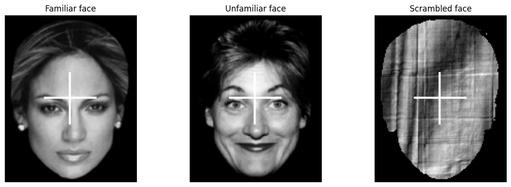
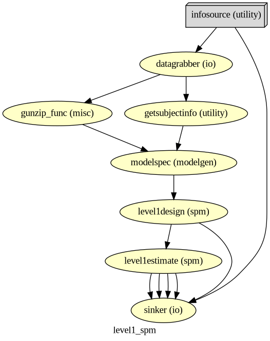
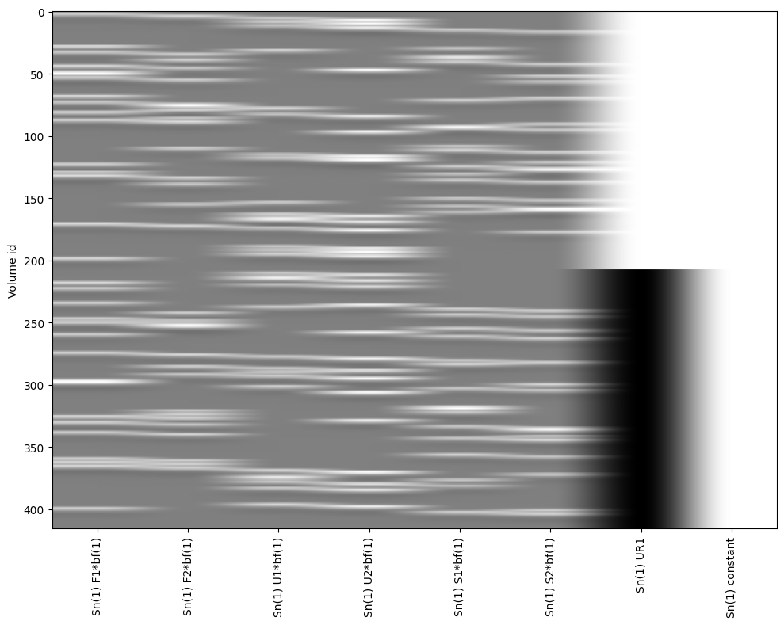
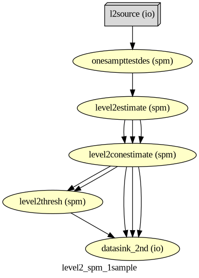
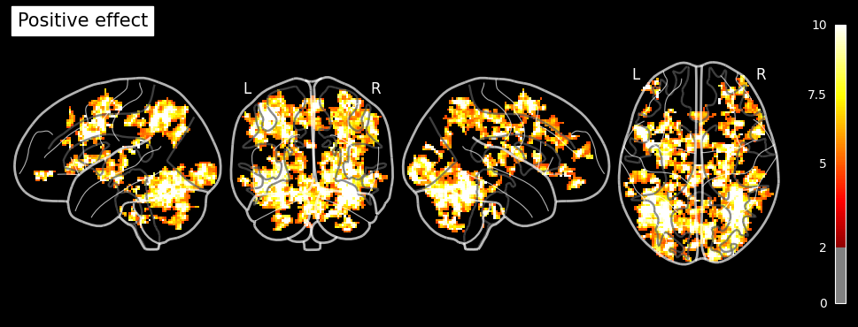
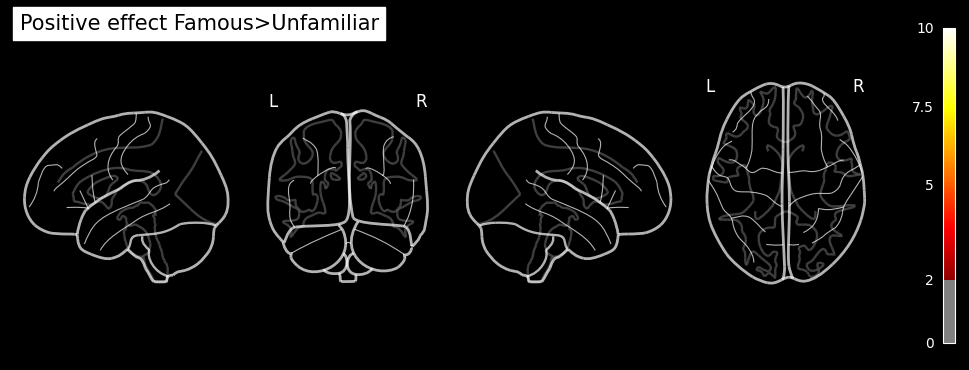
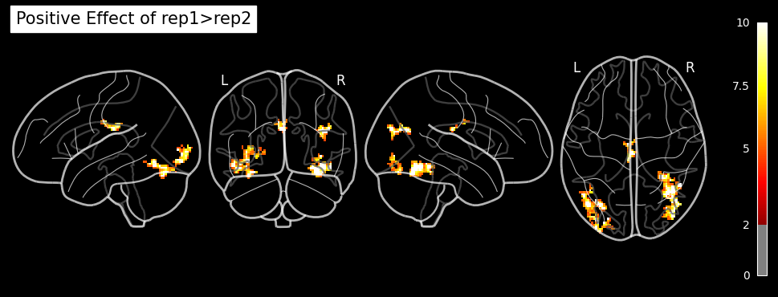

Nipype-SPM fMRI Analysis#
Subject and Group Level Analysis Workflows#
Author: Monika Doerig
Date: 13 June 2024
License:
Note: If this notebook uses neuroimaging tools from Neurocontainers, those tools retain their original licenses. Please see Neurodesk citation guidelines for details.
Citation and Resources:#
Tools included in this workflow#
Nipype:
Esteban, O., Markiewicz, C. J., Burns, C., Goncalves, M., Jarecka, D., Ziegler, E., Berleant, S., Ellis, D. G., Pinsard, B., Madison, C., Waskom, M., Notter, M. P., Clark, D., Manhães-Savio, A., Clark, D., Jordan, K., Dayan, M., Halchenko, Y. O., Loney, F., … Ghosh, S. (2025). nipy/nipype: 1.8.6 (1.8.6). Zenodo. https://doi.org/10.5281/zenodo.15054147
SPM12:
Friston, K. J. (2007). Statistical parametric mapping: The analysis of functional brain images (1st ed). Elsevier / Academic Press.
Dataset#
Wakeman, DG and Henson, RN (2021). Multisubject, multimodal face processing. OpenNeuro. [Dataset] doi: 10.18112/openneuro.ds000117.v1.0.5
Wakeman, D.G. & Henson, R.N. (2015). A multi-subject, multi-modal human neuroimaging dataset. Sci. Data 2:150001 doi: 10.1038/sdata.2015.1
Educational resources:#
Introduction#
The fMRI dataset used for this example is part of a multi-subject, multi-modal (sMRI, fMRI, MEG, EEG) neuroimaging dataset on face processing. It contains data in BIDS format on sixteen healthy volunteers. The data was recoreded while the volunteers performed multiple runs of hundreds of trials of a simple perceptual task on pictures of familiar, unfamiliar and scrambled faces during two visits to the laboratory.
The facial stimuli consisted of two groups of 300 greyscale photos, half of which were of famous people and half of which were of non-famous people (unknown to the participants). Each scrambled face was created either from the famous face or the non-famous face of the same stimulus number. Additionally, each image was presented twice to the participants. The second presentation occurred either immediately after the first presentation (Immediate Repeats) or after 5–15 intervening stimuli (Delayed Repeats), with 50% of each type of repeat. To ensure that each stimulus received equal attention, participants were instructed to use their left or right index finger to press one of two keys (assignment counter-balanced across participants). They determined the symmetry of each image by pressing a key based on whether they perceived it to be ‘more’ or ‘less symmetric’ than average.
In the original paper (Wakeman & Henson, 2015), the repetition manipulation was not distinguished, meaning that initial and repeated presentations were treated identically without considering the timing of the repeats.
To illustrate the setup of a 3x2 factorial design analysis (familiar vs. unfamiliar vs. scrambled faces) x (1st vs. 2nd presentation) in an SPM Nipype workflow, the event files will be adapted accordingly. Each stimulus type will be labeled as either the first or second presentation. However, for simplicity, no distinction is made between immediate and delayed repetitions, resulting in 6 stimulus types (conditions): Familiar-Rep1 (F1), Familiar-Rep2 (F2), Unfamiliar-Rep1 (U1), Unfamiliar-Rep2 (U2), Scrambled-Rep1 (S1), and Scrambled-Rep2 (S2).
Examples of a familiar, unfamiliar and scrambled face:
PATTERN_STIMULI = "stimuli/func/*001.bmp"
!datalad install https://github.com/OpenNeuroDatasets/ds000117.git
!cd ds000117 && git checkout 1.0.5 && datalad get $PATTERN_STIMULI
Cloning: 0%| | 0.00/2.00 [00:00<?, ? candidates/s]
Enumerating: 0.00 Objects [00:00, ? Objects/s]
Counting: 0%| | 0.00/39.9k [00:00<?, ? Objects/s]
Compressing: 0%| | 0.00/22.2k [00:00<?, ? Objects/s]
Receiving: 0%| | 0.00/61.8k [00:00<?, ? Objects/s]
Receiving: 51%|██████████▋ | 31.5k/61.8k [00:00<00:00, 314k Objects/s]
Resolving: 0%| | 0.00/16.5k [00:00<?, ? Deltas/s]
Resolving: 62%|█████████████▋ | 10.2k/16.5k [00:00<00:00, 102k Deltas/s]
[INFO ] Remote origin not usable by git-annex; setting annex-ignore
[INFO ] https://github.com/OpenNeuroDatasets/ds000117.git/config download failed: Not Found
[INFO ] Remote origin not usable by git-annex; setting annex-ignore
[INFO ] https://github.com/OpenNeuroDatasets/ds000117.git/config download failed: Not Found
install(ok): /home/jovyan/workspace/books/examples/functional_imaging/ds000117 (dataset)
Note: switching to '1.0.5'.
You are in 'detached HEAD' state. You can look around, make experimental
changes and commit them, and you can discard any commits you make in this
state without impacting any branches by switching back to a branch.
If you want to create a new branch to retain commits you create, you may
do so (now or later) by using -c with the switch command. Example:
git switch -c <new-branch-name>
Or undo this operation with:
git switch -
Turn off this advice by setting config variable advice.detachedHead to false
HEAD is now at 12470d39 [OpenNeuro] Recorded changes
Total: 0%| | 0.00/131k [00:00<?, ? Bytes/s]
Total: 7%|██▎ | 8.52k/131k [00:01<?, ? Bytes/s]
Get stimuli/ .. nc/ps001.bmp: 100%|███████████| 21.8k/21.8k [00:00<?, ? Bytes/s]
Total: 17%|████▌ | 21.8k/131k [00:01<00:10, 10.9k Bytes/s]
Get stimuli/ .. nc/pf001.bmp: 39%|████▎ | 8.52k/21.8k [00:00<?, ? Bytes/s]
Get stimuli/ .. nc/pf001.bmp: 100%|███████████| 21.8k/21.8k [00:00<?, ? Bytes/s]
Total: 33%|█████████ | 43.6k/131k [00:01<00:04, 17.9k Bytes/s]
Get stimuli/func/u001.bmp: 39%|█████▍ | 8.52k/21.8k [00:00<?, ? Bytes/s]
Get stimuli/func/u001.bmp: 100%|██████████████| 21.8k/21.8k [00:00<?, ? Bytes/s]
Total: 50%|█████████████▌ | 65.4k/131k [00:01<00:02, 23.2k Bytes/s]
Get stimuli/ .. nc/pu001.bmp: 39%|████▎ | 8.52k/21.8k [00:00<?, ? Bytes/s]
Get stimuli/ .. nc/pu001.bmp: 100%|███████████| 21.8k/21.8k [00:00<?, ? Bytes/s]
Total: 67%|██████████████████ | 87.3k/131k [00:01<00:01, 26.9k Bytes/s]
Get stimuli/func/f001.bmp: 39%|█████▍ | 8.52k/21.8k [00:00<?, ? Bytes/s]
Get stimuli/func/f001.bmp: 100%|██████████████| 21.8k/21.8k [00:00<?, ? Bytes/s]
Total: 83%|███████████████████████▎ | 109k/131k [00:02<00:00, 29.9k Bytes/s]
Get stimuli/func/s001.bmp: 39%|█████▍ | 8.52k/21.8k [00:00<?, ? Bytes/s]
Get stimuli/func/s001.bmp: 100%|██████████████| 21.8k/21.8k [00:00<?, ? Bytes/s]
get(ok): stimuli/func/ps001.bmp (file) [from s3-PUBLIC...]
get(ok): stimuli/func/pf001.bmp (file) [from s3-PUBLIC...]
get(ok): stimuli/func/u001.bmp (file) [from s3-PUBLIC...]
get(ok): stimuli/func/pu001.bmp (file) [from s3-PUBLIC...]
get(ok): stimuli/func/f001.bmp (file) [from s3-PUBLIC...]
get(ok): stimuli/func/s001.bmp (file) [from s3-PUBLIC...]
action summary:
get (ok: 6)
import matplotlib.pyplot as plt
from matplotlib.image import imread
# Load the .bmp images
familiar = imread('ds000117/stimuli/func/f001.bmp')
unfamiliar = imread('ds000117/stimuli/func/u001.bmp')
scrambled = imread('ds000117/stimuli/func/s001.bmp')
# Create a Matplotlib figure with subplots
fig, axes = plt.subplots(1, 3, figsize=(12, 4))
# Plot each image on a subplot
axes[0].imshow(familiar, cmap='gray')
axes[0].set_title('Familiar face')
axes[0].axis('off')
axes[1].imshow(unfamiliar, cmap='gray')
axes[1].set_title('Unfamiliar face')
axes[1].axis('off')
axes[2].imshow(scrambled, cmap='gray')
axes[2].set_title('Scrambled face')
axes[2].axis('off')
plt.tight_layout()
plt.show()

Download Data and install Python modules#
# Raw dataset: ONLY events.tsv + json sidecar
!cd ds000117 && git checkout 1.0.5 && \
datalad get sub-0[1-5]/ses-mri/func/*_events.tsv task-facerecognition_bold.json
HEAD is now at 12470d39 [OpenNeuro] Recorded changes
action summary:
get (notneeded: 46)
# get preprocessed normalized func images of 5 individuals and 2 runs
PATTERN_PREP = "sub-0[1-5]/ses-mri/func/*run-[1-2]*space-MNI152NLin6Asym_desc-smoothAROMAnonaggr_bold.nii.gz"
!datalad install https://github.com/OpenNeuroDerivatives/ds000117-fmriprep.git
!cd ds000117-fmriprep && datalad get $PATTERN_PREP
Cloning: 0%| | 0.00/2.00 [00:00<?, ? candidates/s]
Enumerating: 0.00 Objects [00:00, ? Objects/s]
Counting: 0%| | 0.00/103k [00:00<?, ? Objects/s]
Compressing: 0%| | 0.00/85.9k [00:00<?, ? Objects/s]
Receiving: 0%| | 0.00/103k [00:00<?, ? Objects/s]
Receiving: 23%|█████ | 23.7k/103k [00:00<00:00, 231k Objects/s]
Receiving: 46%|██████████ | 47.3k/103k [00:00<00:00, 171k Objects/s]
Receiving: 67%|██████████████ | 68.9k/103k [00:00<00:00, 62.0k Objects/s]
Receiving: 88%|██████████████████▌ | 90.9k/103k [00:01<00:00, 85.8k Objects/s]
Resolving: 0%| | 0.00/13.2k [00:00<?, ? Deltas/s]
Resolving: 73%|███████████████▎ | 9.64k/13.2k [00:00<00:00, 96.0k Deltas/s]
[INFO ] Remote origin not usable by git-annex; setting annex-ignore
[INFO ] https://github.com/OpenNeuroDerivatives/ds000117-fmriprep.git/config download failed: Not Found
[INFO ] Remote origin not usable by git-annex; setting annex-ignore
[INFO ] https://github.com/OpenNeuroDerivatives/ds000117-fmriprep.git/config download failed: Not Found
install(ok): /home/jovyan/workspace/books/examples/functional_imaging/ds000117-fmriprep (dataset)
Total: 0%| | 0.00/4.99G [00:00<?, ? Bytes/s]
Total: 0%| | 16.4k/4.99G [00:00<?, ? Bytes/s]
Get sub-02/s .. _bold.nii.gz: 0%| | 33.4k/473M [00:00<1:10:43, 112k Bytes/s]
Get sub-02/s .. _bold.nii.gz: 0%| | 68.2k/473M [00:00<43:47, 180k Bytes/s]
Total: 0%| | 120k/4.99G [00:01<19:51:35, 69.8k Bytes/s]
Get sub-02/s .. _bold.nii.gz: 0%| | 173k/473M [00:00<34:52, 226k Bytes/s]
Get sub-02/s .. _bold.nii.gz: 0%| | 260k/473M [00:00<23:46, 332k Bytes/s]
Get sub-02/s .. _bold.nii.gz: 0%| | 382k/473M [00:01<16:38, 474k Bytes/s]
Total: 0%| | 660k/4.99G [00:02<4:31:31, 306k Bytes/s]
Get sub-02/s .. _bold.nii.gz: 0%| | 1.23M/473M [00:01<04:29, 1.75M Bytes/s]
Get sub-02/s .. _bold.nii.gz: 1%| | 2.40M/473M [00:01<02:13, 3.52M Bytes/s]
Get sub-02/s .. _bold.nii.gz: 1%| | 4.31M/473M [00:01<01:15, 6.23M Bytes/s]
Total: 0%| | 6.28M/4.99G [00:02<36:01, 2.31M Bytes/s]
Get sub-02/s .. _bold.nii.gz: 2%| | 8.31M/473M [00:01<00:47, 9.72M Bytes/s]
Get sub-02/s .. _bold.nii.gz: 2%| | 10.4M/473M [00:02<00:42, 10.9M Bytes/s]
Get sub-02/s .. _bold.nii.gz: 3%| | 12.4M/473M [00:02<00:39, 11.6M Bytes/s]
Total: 0%| | 14.5M/4.99G [00:03<19:03, 4.35M Bytes/s]
Get sub-02/s .. _bold.nii.gz: 3%|▏ | 16.6M/473M [00:02<00:36, 12.5M Bytes/s]
Get sub-02/s .. _bold.nii.gz: 4%|▏ | 18.6M/473M [00:02<00:35, 12.9M Bytes/s]
Get sub-02/s .. _bold.nii.gz: 4%|▏ | 20.8M/473M [00:02<00:34, 13.2M Bytes/s]
Total: 0%| | 22.9M/4.99G [00:03<14:17, 5.80M Bytes/s]
Get sub-02/s .. _bold.nii.gz: 5%|▏ | 24.9M/473M [00:03<00:32, 13.7M Bytes/s]
Get sub-02/s .. _bold.nii.gz: 6%|▏ | 27.0M/473M [00:03<00:33, 13.4M Bytes/s]
Get sub-02/s .. _bold.nii.gz: 6%|▏ | 29.1M/473M [00:03<00:32, 13.5M Bytes/s]
Get sub-02/s .. _bold.nii.gz: 7%|▎ | 31.2M/473M [00:03<00:32, 13.5M Bytes/s]
Get sub-02/s .. _bold.nii.gz: 7%|▎ | 33.2M/473M [00:03<00:32, 13.4M Bytes/s]
Get sub-02/s .. _bold.nii.gz: 7%|▎ | 35.2M/473M [00:03<00:32, 13.4M Bytes/s]
Get sub-02/s .. _bold.nii.gz: 8%|▎ | 37.3M/473M [00:04<00:32, 13.4M Bytes/s]
Total: 1%|▏ | 39.4M/4.99G [00:05<10:48, 7.63M Bytes/s]
Get sub-02/s .. _bold.nii.gz: 9%|▎ | 41.4M/473M [00:04<00:32, 13.5M Bytes/s]
Get sub-02/s .. _bold.nii.gz: 9%|▎ | 43.5M/473M [00:04<00:31, 13.5M Bytes/s]
Get sub-02/s .. _bold.nii.gz: 10%|▍ | 45.5M/473M [00:04<00:29, 14.4M Bytes/s]
Get sub-02/s .. _bold.nii.gz: 10%|▍ | 48.1M/473M [00:04<00:30, 13.8M Bytes/s]
Get sub-02/s .. _bold.nii.gz: 10%|▍ | 49.6M/473M [00:05<00:32, 12.9M Bytes/s]
Get sub-02/s .. _bold.nii.gz: 11%|▍ | 51.7M/473M [00:05<00:32, 13.1M Bytes/s]
Get sub-02/s .. _bold.nii.gz: 11%|▍ | 53.8M/473M [00:05<00:31, 13.2M Bytes/s]
Get sub-02/s .. _bold.nii.gz: 12%|▍ | 55.8M/473M [00:05<00:31, 13.2M Bytes/s]
Get sub-02/s .. _bold.nii.gz: 12%|▍ | 57.8M/473M [00:05<00:31, 13.3M Bytes/s]
Get sub-02/s .. _bold.nii.gz: 13%|▌ | 59.9M/473M [00:05<00:31, 13.3M Bytes/s]
Total: 1%|▎ | 61.9M/4.99G [00:06<09:05, 9.04M Bytes/s]
Get sub-02/s .. _bold.nii.gz: 14%|▌ | 64.0M/473M [00:06<00:30, 13.4M Bytes/s]
Get sub-02/s .. _bold.nii.gz: 14%|▌ | 66.0M/473M [00:06<00:30, 13.4M Bytes/s]
Get sub-02/s .. _bold.nii.gz: 14%|▌ | 68.1M/473M [00:06<00:30, 13.4M Bytes/s]
Get sub-02/s .. _bold.nii.gz: 15%|▌ | 70.2M/473M [00:06<00:29, 13.5M Bytes/s]
Get sub-02/s .. _bold.nii.gz: 15%|▌ | 72.3M/473M [00:06<00:28, 14.3M Bytes/s]
Get sub-02/s .. _bold.nii.gz: 16%|▋ | 74.3M/473M [00:06<00:25, 15.5M Bytes/s]
Get sub-02/s .. _bold.nii.gz: 16%|▋ | 76.5M/473M [00:07<00:30, 13.0M Bytes/s]
Get sub-02/s .. _bold.nii.gz: 17%|▋ | 78.6M/473M [00:07<00:29, 13.2M Bytes/s]
Get sub-02/s .. _bold.nii.gz: 17%|▋ | 80.7M/473M [00:07<00:29, 13.4M Bytes/s]
Get sub-02/s .. _bold.nii.gz: 17%|▋ | 82.8M/473M [00:07<00:28, 13.5M Bytes/s]
Get sub-02/s .. _bold.nii.gz: 18%|▋ | 84.9M/473M [00:07<00:28, 13.6M Bytes/s]
Total: 2%|▍ | 87.0M/4.99G [00:08<08:09, 10.0M Bytes/s]
Get sub-02/s .. _bold.nii.gz: 19%|▊ | 89.1M/473M [00:07<00:28, 13.6M Bytes/s]
Get sub-02/s .. _bold.nii.gz: 19%|▊ | 91.2M/473M [00:08<00:28, 13.6M Bytes/s]
Get sub-02/s .. _bold.nii.gz: 20%|▊ | 93.2M/473M [00:08<00:25, 15.1M Bytes/s]
Get sub-02/s .. _bold.nii.gz: 20%|▊ | 95.3M/473M [00:08<00:28, 13.3M Bytes/s]
Get sub-02/s .. _bold.nii.gz: 21%|▊ | 97.4M/473M [00:08<00:28, 13.4M Bytes/s]
Get sub-02/s .. _bold.nii.gz: 21%|▊ | 99.5M/473M [00:08<00:27, 13.7M Bytes/s]
Get sub-02/s .. _bold.nii.gz: 21%|█ | 102M/473M [00:08<00:27, 13.5M Bytes/s]
Get sub-02/s .. _bold.nii.gz: 22%|█ | 104M/473M [00:09<00:27, 13.6M Bytes/s]
Get sub-02/s .. _bold.nii.gz: 22%|█ | 106M/473M [00:09<00:26, 13.6M Bytes/s]
Get sub-02/s .. _bold.nii.gz: 23%|█▏ | 108M/473M [00:09<00:26, 13.7M Bytes/s]
Get sub-02/s .. _bold.nii.gz: 23%|█▏ | 110M/473M [00:09<00:26, 13.5M Bytes/s]
Get sub-02/s .. _bold.nii.gz: 24%|█▏ | 112M/473M [00:09<00:26, 13.5M Bytes/s]
Get sub-02/s .. _bold.nii.gz: 24%|█▏ | 114M/473M [00:09<00:26, 13.6M Bytes/s]
Get sub-02/s .. _bold.nii.gz: 25%|█▏ | 116M/473M [00:09<00:26, 13.6M Bytes/s]
Total: 2%|▋ | 118M/4.99G [00:10<07:32, 10.8M Bytes/s]
Get sub-02/s .. _bold.nii.gz: 25%|█▎ | 120M/473M [00:10<00:24, 14.5M Bytes/s]
Get sub-02/s .. _bold.nii.gz: 26%|█▎ | 123M/473M [00:10<00:25, 13.9M Bytes/s]
Get sub-02/s .. _bold.nii.gz: 26%|█▎ | 124M/473M [00:10<00:26, 13.2M Bytes/s]
Get sub-02/s .. _bold.nii.gz: 27%|█▎ | 127M/473M [00:10<00:26, 13.3M Bytes/s]
Get sub-02/s .. _bold.nii.gz: 27%|█▎ | 129M/473M [00:10<00:25, 13.5M Bytes/s]
Get sub-02/s .. _bold.nii.gz: 28%|█▍ | 131M/473M [00:11<00:25, 13.5M Bytes/s]
Get sub-02/s .. _bold.nii.gz: 28%|█▍ | 133M/473M [00:11<00:25, 13.6M Bytes/s]
Get sub-02/s .. _bold.nii.gz: 29%|█▍ | 135M/473M [00:11<00:24, 13.6M Bytes/s]
Get sub-02/s .. _bold.nii.gz: 29%|█▍ | 137M/473M [00:11<00:24, 13.7M Bytes/s]
Get sub-02/s .. _bold.nii.gz: 29%|█▍ | 139M/473M [00:11<00:24, 13.7M Bytes/s]
Get sub-02/s .. _bold.nii.gz: 30%|█▍ | 141M/473M [00:11<00:23, 14.3M Bytes/s]
Get sub-02/s .. _bold.nii.gz: 30%|█▌ | 144M/473M [00:11<00:24, 13.6M Bytes/s]
Get sub-02/s .. _bold.nii.gz: 31%|█▌ | 145M/473M [00:12<00:23, 14.2M Bytes/s]
Get sub-02/s .. _bold.nii.gz: 31%|█▌ | 148M/473M [00:12<00:24, 13.3M Bytes/s]
Total: 3%|▊ | 150M/4.99G [00:13<07:09, 11.3M Bytes/s]
Get sub-02/s .. _bold.nii.gz: 32%|█▌ | 151M/473M [00:12<00:22, 14.2M Bytes/s]
Get sub-02/s .. _bold.nii.gz: 33%|█▋ | 154M/473M [00:12<00:23, 13.6M Bytes/s]
Get sub-02/s .. _bold.nii.gz: 33%|█▋ | 155M/473M [00:12<00:22, 13.9M Bytes/s]
Get sub-02/s .. _bold.nii.gz: 33%|█▋ | 158M/473M [00:12<00:22, 13.7M Bytes/s]
Get sub-02/s .. _bold.nii.gz: 34%|█▋ | 161M/473M [00:13<00:23, 13.3M Bytes/s]
Get sub-02/s .. _bold.nii.gz: 34%|█▋ | 162M/473M [00:13<00:22, 13.8M Bytes/s]
Get sub-02/s .. _bold.nii.gz: 35%|█▋ | 165M/473M [00:13<00:23, 13.3M Bytes/s]
Get sub-02/s .. _bold.nii.gz: 35%|█▊ | 167M/473M [00:13<00:22, 13.9M Bytes/s]
Get sub-02/s .. _bold.nii.gz: 36%|█▊ | 169M/473M [00:13<00:22, 13.3M Bytes/s]
Get sub-02/s .. _bold.nii.gz: 36%|█▊ | 171M/473M [00:13<00:21, 14.0M Bytes/s]
Get sub-02/s .. _bold.nii.gz: 37%|█▊ | 173M/473M [00:14<00:22, 13.4M Bytes/s]
Get sub-02/s .. _bold.nii.gz: 37%|█▊ | 175M/473M [00:14<00:21, 14.1M Bytes/s]
Get sub-02/s .. _bold.nii.gz: 38%|█▉ | 178M/473M [00:14<00:22, 13.4M Bytes/s]
Get sub-02/s .. _bold.nii.gz: 38%|█▉ | 179M/473M [00:14<00:21, 13.7M Bytes/s]
Get sub-02/s .. _bold.nii.gz: 38%|█▉ | 181M/473M [00:14<00:21, 13.8M Bytes/s]
Get sub-02/s .. _bold.nii.gz: 39%|█▉ | 183M/473M [00:14<00:21, 13.6M Bytes/s]
Total: 4%|▉ | 185M/4.99G [00:15<06:52, 11.7M Bytes/s]
Get sub-02/s .. _bold.nii.gz: 39%|█▉ | 186M/473M [00:15<00:21, 13.6M Bytes/s]
Get sub-02/s .. _bold.nii.gz: 40%|█▉ | 188M/473M [00:15<00:20, 14.1M Bytes/s]
Get sub-02/s .. _bold.nii.gz: 40%|██ | 190M/473M [00:15<00:20, 13.7M Bytes/s]
Get sub-02/s .. _bold.nii.gz: 41%|██ | 192M/473M [00:15<00:20, 14.0M Bytes/s]
Get sub-02/s .. _bold.nii.gz: 41%|██ | 194M/473M [00:15<00:20, 13.5M Bytes/s]
Get sub-02/s .. _bold.nii.gz: 41%|██ | 196M/473M [00:15<00:20, 13.7M Bytes/s]
Get sub-02/s .. _bold.nii.gz: 42%|██ | 197M/473M [00:15<00:20, 13.6M Bytes/s]
Get sub-02/s .. _bold.nii.gz: 42%|██ | 199M/473M [00:15<00:20, 13.6M Bytes/s]
Get sub-02/s .. _bold.nii.gz: 42%|██ | 200M/473M [00:16<00:19, 14.1M Bytes/s]
Get sub-02/s .. _bold.nii.gz: 43%|██▏ | 203M/473M [00:16<00:19, 13.6M Bytes/s]
Get sub-02/s .. _bold.nii.gz: 43%|██▏ | 205M/473M [00:16<00:19, 14.1M Bytes/s]
Get sub-02/s .. _bold.nii.gz: 44%|██▏ | 207M/473M [00:16<00:19, 13.6M Bytes/s]
Get sub-02/s .. _bold.nii.gz: 44%|██▏ | 208M/473M [00:16<00:19, 13.6M Bytes/s]
Get sub-02/s .. _bold.nii.gz: 45%|██▏ | 211M/473M [00:16<00:19, 13.7M Bytes/s]
Get sub-02/s .. _bold.nii.gz: 45%|██▏ | 213M/473M [00:16<00:19, 13.6M Bytes/s]
Get sub-02/s .. _bold.nii.gz: 46%|██▎ | 215M/473M [00:17<00:18, 13.8M Bytes/s]
Get sub-02/s .. _bold.nii.gz: 46%|██▎ | 217M/473M [00:17<00:18, 13.7M Bytes/s]
Total: 4%|█▏ | 220M/4.99G [00:18<06:39, 12.0M Bytes/s]
Get sub-02/s .. _bold.nii.gz: 47%|██▎ | 221M/473M [00:17<00:18, 13.8M Bytes/s]
Get sub-02/s .. _bold.nii.gz: 47%|██▎ | 224M/473M [00:17<00:18, 13.7M Bytes/s]
Get sub-02/s .. _bold.nii.gz: 48%|██▍ | 225M/473M [00:17<00:18, 13.6M Bytes/s]
Get sub-02/s .. _bold.nii.gz: 48%|██▍ | 228M/473M [00:18<00:17, 13.8M Bytes/s]
Get sub-02/s .. _bold.nii.gz: 49%|██▍ | 230M/473M [00:18<00:17, 13.8M Bytes/s]
Get sub-02/s .. _bold.nii.gz: 49%|██▍ | 232M/473M [00:18<00:17, 13.8M Bytes/s]
Get sub-02/s .. _bold.nii.gz: 49%|██▍ | 234M/473M [00:18<00:17, 13.7M Bytes/s]
Get sub-02/s .. _bold.nii.gz: 50%|██▌ | 237M/473M [00:18<00:17, 13.8M Bytes/s]
Get sub-02/s .. _bold.nii.gz: 50%|██▌ | 238M/473M [00:18<00:17, 13.6M Bytes/s]
Get sub-02/s .. _bold.nii.gz: 51%|██▌ | 241M/473M [00:19<00:16, 13.7M Bytes/s]
Get sub-02/s .. _bold.nii.gz: 51%|██▌ | 243M/473M [00:19<00:17, 13.4M Bytes/s]
Get sub-02/s .. _bold.nii.gz: 52%|██▌ | 245M/473M [00:19<00:16, 13.8M Bytes/s]
Get sub-02/s .. _bold.nii.gz: 52%|██▌ | 248M/473M [00:19<00:16, 13.3M Bytes/s]
Get sub-02/s .. _bold.nii.gz: 53%|██▋ | 249M/473M [00:19<00:16, 13.6M Bytes/s]
Get sub-02/s .. _bold.nii.gz: 53%|██▋ | 252M/473M [00:19<00:16, 13.5M Bytes/s]
Get sub-02/s .. _bold.nii.gz: 54%|██▋ | 253M/473M [00:19<00:15, 13.8M Bytes/s]
Get sub-02/s .. _bold.nii.gz: 54%|██▋ | 256M/473M [00:20<00:15, 13.6M Bytes/s]
Get sub-02/s .. _bold.nii.gz: 54%|██▋ | 258M/473M [00:20<00:15, 13.9M Bytes/s]
Get sub-02/s .. _bold.nii.gz: 55%|██▊ | 260M/473M [00:20<00:15, 13.5M Bytes/s]
Total: 5%|█▍ | 262M/4.99G [00:21<06:27, 12.2M Bytes/s]
Get sub-02/s .. _bold.nii.gz: 56%|██▊ | 265M/473M [00:20<00:15, 13.6M Bytes/s]
Get sub-02/s .. _bold.nii.gz: 56%|██▊ | 266M/473M [00:20<00:14, 13.9M Bytes/s]
Get sub-02/s .. _bold.nii.gz: 57%|██▊ | 269M/473M [00:21<00:14, 13.6M Bytes/s]
Get sub-02/s .. _bold.nii.gz: 57%|██▊ | 271M/473M [00:21<00:15, 13.1M Bytes/s]
Get sub-02/s .. _bold.nii.gz: 58%|██▉ | 273M/473M [00:21<00:14, 13.9M Bytes/s]
Get sub-02/s .. _bold.nii.gz: 58%|██▉ | 276M/473M [00:21<00:14, 13.3M Bytes/s]
Get sub-02/s .. _bold.nii.gz: 59%|██▉ | 277M/473M [00:21<00:14, 14.0M Bytes/s]
Get sub-02/s .. _bold.nii.gz: 59%|██▉ | 280M/473M [00:21<00:14, 13.4M Bytes/s]
Get sub-02/s .. _bold.nii.gz: 59%|██▉ | 281M/473M [00:22<00:13, 14.1M Bytes/s]
Get sub-02/s .. _bold.nii.gz: 60%|██▉ | 284M/473M [00:22<00:14, 13.4M Bytes/s]
Get sub-02/s .. _bold.nii.gz: 60%|███ | 286M/473M [00:22<00:13, 14.1M Bytes/s]
Get sub-02/s .. _bold.nii.gz: 61%|███ | 288M/473M [00:22<00:13, 13.5M Bytes/s]
Get sub-02/s .. _bold.nii.gz: 61%|███ | 290M/473M [00:22<00:13, 14.0M Bytes/s]
Get sub-02/s .. _bold.nii.gz: 62%|███ | 292M/473M [00:22<00:13, 13.5M Bytes/s]
Get sub-02/s .. _bold.nii.gz: 62%|███ | 294M/473M [00:22<00:12, 14.0M Bytes/s]
Get sub-02/s .. _bold.nii.gz: 63%|███▏ | 297M/473M [00:23<00:13, 13.5M Bytes/s]
Get sub-02/s .. _bold.nii.gz: 63%|███▏ | 299M/473M [00:23<00:13, 13.2M Bytes/s]
Get sub-02/s .. _bold.nii.gz: 64%|███▏ | 301M/473M [00:23<00:12, 13.6M Bytes/s]
Get sub-02/s .. _bold.nii.gz: 64%|███▏ | 303M/473M [00:23<00:12, 13.4M Bytes/s]
Get sub-02/s .. _bold.nii.gz: 64%|███▏ | 305M/473M [00:23<00:12, 13.8M Bytes/s]
Get sub-02/s .. _bold.nii.gz: 65%|███▎ | 308M/473M [00:23<00:12, 13.5M Bytes/s]
Total: 6%|█▋ | 310M/4.99G [00:25<06:17, 12.4M Bytes/s]
Get sub-02/s .. _bold.nii.gz: 66%|███▎ | 312M/473M [00:24<00:11, 13.6M Bytes/s]
Get sub-02/s .. _bold.nii.gz: 66%|███▎ | 314M/473M [00:24<00:11, 14.0M Bytes/s]
Get sub-02/s .. _bold.nii.gz: 67%|███▎ | 316M/473M [00:24<00:11, 13.6M Bytes/s]
Get sub-02/s .. _bold.nii.gz: 67%|███▎ | 318M/473M [00:24<00:11, 14.0M Bytes/s]
Get sub-02/s .. _bold.nii.gz: 68%|███▍ | 320M/473M [00:24<00:11, 13.6M Bytes/s]
Get sub-02/s .. _bold.nii.gz: 68%|███▍ | 322M/473M [00:24<00:10, 14.0M Bytes/s]
Get sub-02/s .. _bold.nii.gz: 69%|███▍ | 325M/473M [00:25<00:10, 13.6M Bytes/s]
Get sub-02/s .. _bold.nii.gz: 69%|███▍ | 326M/473M [00:25<00:10, 13.9M Bytes/s]
Get sub-02/s .. _bold.nii.gz: 69%|███▍ | 329M/473M [00:25<00:10, 13.6M Bytes/s]
Get sub-02/s .. _bold.nii.gz: 70%|███▍ | 330M/473M [00:25<00:10, 14.0M Bytes/s]
Get sub-02/s .. _bold.nii.gz: 70%|███▌ | 333M/473M [00:25<00:10, 13.6M Bytes/s]
Get sub-02/s .. _bold.nii.gz: 71%|███▌ | 336M/473M [00:25<00:10, 13.5M Bytes/s]
Get sub-02/s .. _bold.nii.gz: 71%|███▌ | 337M/473M [00:26<00:09, 13.7M Bytes/s]
Get sub-02/s .. _bold.nii.gz: 72%|███▌ | 340M/473M [00:26<00:09, 13.5M Bytes/s]
Get sub-02/s .. _bold.nii.gz: 72%|███▌ | 341M/473M [00:26<00:09, 13.9M Bytes/s]
Get sub-02/s .. _bold.nii.gz: 73%|███▋ | 344M/473M [00:26<00:09, 13.6M Bytes/s]
Get sub-02/s .. _bold.nii.gz: 73%|███▋ | 346M/473M [00:26<00:09, 13.9M Bytes/s]
Get sub-02/s .. _bold.nii.gz: 74%|███▋ | 348M/473M [00:26<00:09, 13.6M Bytes/s]
Get sub-02/s .. _bold.nii.gz: 74%|███▋ | 350M/473M [00:27<00:08, 13.9M Bytes/s]
Get sub-02/s .. _bold.nii.gz: 74%|███▋ | 352M/473M [00:27<00:08, 13.7M Bytes/s]
Get sub-02/s .. _bold.nii.gz: 75%|███▋ | 354M/473M [00:27<00:08, 13.9M Bytes/s]
Get sub-02/s .. _bold.nii.gz: 75%|███▊ | 357M/473M [00:27<00:08, 13.7M Bytes/s]
Get sub-02/s .. _bold.nii.gz: 76%|███▊ | 358M/473M [00:27<00:08, 13.9M Bytes/s]
Total: 7%|█▉ | 359M/4.99G [00:28<06:08, 12.6M Bytes/s]
Get sub-02/s .. _bold.nii.gz: 76%|███▊ | 361M/473M [00:27<00:08, 13.7M Bytes/s]
Get sub-02/s .. _bold.nii.gz: 77%|███▊ | 363M/473M [00:28<00:08, 13.1M Bytes/s]
Get sub-02/s .. _bold.nii.gz: 77%|███▊ | 365M/473M [00:28<00:07, 14.0M Bytes/s]
Get sub-02/s .. _bold.nii.gz: 78%|███▉ | 368M/473M [00:28<00:07, 13.3M Bytes/s]
Get sub-02/s .. _bold.nii.gz: 78%|███▉ | 369M/473M [00:28<00:07, 14.0M Bytes/s]
Get sub-02/s .. _bold.nii.gz: 79%|███▉ | 372M/473M [00:28<00:07, 13.4M Bytes/s]
Get sub-02/s .. _bold.nii.gz: 79%|███▉ | 374M/473M [00:28<00:07, 14.1M Bytes/s]
Get sub-02/s .. _bold.nii.gz: 79%|███▉ | 376M/473M [00:28<00:07, 13.4M Bytes/s]
Get sub-02/s .. _bold.nii.gz: 80%|███▉ | 378M/473M [00:29<00:06, 14.2M Bytes/s]
Get sub-02/s .. _bold.nii.gz: 80%|████ | 380M/473M [00:29<00:06, 13.4M Bytes/s]
Get sub-02/s .. _bold.nii.gz: 81%|████ | 382M/473M [00:29<00:06, 14.1M Bytes/s]
Get sub-02/s .. _bold.nii.gz: 81%|████ | 384M/473M [00:29<00:06, 13.4M Bytes/s]
Get sub-02/s .. _bold.nii.gz: 82%|████ | 386M/473M [00:29<00:06, 14.2M Bytes/s]
Get sub-02/s .. _bold.nii.gz: 82%|████ | 389M/473M [00:29<00:06, 13.4M Bytes/s]
Get sub-02/s .. _bold.nii.gz: 82%|████ | 390M/473M [00:29<00:05, 14.2M Bytes/s]
Get sub-02/s .. _bold.nii.gz: 83%|████▏| 393M/473M [00:30<00:06, 13.4M Bytes/s]
Get sub-02/s .. _bold.nii.gz: 84%|████▏| 395M/473M [00:30<00:05, 13.3M Bytes/s]
Get sub-02/s .. _bold.nii.gz: 84%|████▏| 397M/473M [00:30<00:05, 13.7M Bytes/s]
Get sub-02/s .. _bold.nii.gz: 84%|████▏| 400M/473M [00:30<00:05, 13.5M Bytes/s]
Get sub-02/s .. _bold.nii.gz: 85%|████▏| 401M/473M [00:30<00:05, 13.9M Bytes/s]
Get sub-02/s .. _bold.nii.gz: 85%|████▎| 404M/473M [00:30<00:05, 13.6M Bytes/s]
Get sub-02/s .. _bold.nii.gz: 86%|████▎| 406M/473M [00:31<00:04, 13.8M Bytes/s]
Total: 8%|██▏ | 408M/4.99G [00:32<06:01, 12.7M Bytes/s]
Get sub-02/s .. _bold.nii.gz: 87%|████▎| 410M/473M [00:31<00:04, 13.9M Bytes/s]
Get sub-02/s .. _bold.nii.gz: 87%|████▎| 412M/473M [00:31<00:04, 13.6M Bytes/s]
Get sub-02/s .. _bold.nii.gz: 87%|████▎| 414M/473M [00:31<00:04, 13.9M Bytes/s]
Get sub-02/s .. _bold.nii.gz: 88%|████▍| 417M/473M [00:31<00:04, 13.6M Bytes/s]
Get sub-02/s .. _bold.nii.gz: 88%|████▍| 418M/473M [00:31<00:03, 14.0M Bytes/s]
Get sub-02/s .. _bold.nii.gz: 89%|████▍| 421M/473M [00:32<00:03, 13.6M Bytes/s]
Get sub-02/s .. _bold.nii.gz: 89%|████▍| 422M/473M [00:32<00:03, 14.0M Bytes/s]
Get sub-02/s .. _bold.nii.gz: 90%|████▍| 425M/473M [00:32<00:03, 13.6M Bytes/s]
Get sub-02/s .. _bold.nii.gz: 90%|████▌| 428M/473M [00:32<00:03, 13.2M Bytes/s]
Get sub-02/s .. _bold.nii.gz: 91%|████▌| 429M/473M [00:32<00:03, 13.7M Bytes/s]
Get sub-02/s .. _bold.nii.gz: 91%|████▌| 432M/473M [00:33<00:03, 13.4M Bytes/s]
Get sub-02/s .. _bold.nii.gz: 92%|████▌| 433M/473M [00:33<00:02, 13.8M Bytes/s]
Get sub-02/s .. _bold.nii.gz: 92%|████▌| 436M/473M [00:33<00:02, 13.5M Bytes/s]
Get sub-02/s .. _bold.nii.gz: 93%|████▋| 438M/473M [00:33<00:03, 10.2M Bytes/s]
Get sub-02/s .. _bold.nii.gz: 93%|████▋| 440M/473M [00:33<00:02, 11.0M Bytes/s]
Get sub-02/s .. _bold.nii.gz: 93%|████▋| 442M/473M [00:34<00:03, 8.59M Bytes/s]
Get sub-02/s .. _bold.nii.gz: 94%|████▋| 443M/473M [00:34<00:03, 9.28M Bytes/s]
Get sub-02/s .. _bold.nii.gz: 94%|████▋| 446M/473M [00:34<00:02, 9.24M Bytes/s]
Get sub-02/s .. _bold.nii.gz: 95%|████▋| 448M/473M [00:34<00:02, 10.2M Bytes/s]
Get sub-02/s .. _bold.nii.gz: 95%|████▊| 450M/473M [00:34<00:01, 12.1M Bytes/s]
Get sub-02/s .. _bold.nii.gz: 95%|████▊| 452M/473M [00:34<00:01, 11.4M Bytes/s]
Get sub-02/s .. _bold.nii.gz: 96%|████▊| 454M/473M [00:35<00:01, 12.0M Bytes/s]
Get sub-02/s .. _bold.nii.gz: 96%|████▊| 456M/473M [00:35<00:01, 12.7M Bytes/s]
Get sub-02/s .. _bold.nii.gz: 97%|████▊| 458M/473M [00:35<00:01, 13.6M Bytes/s]
Get sub-02/s .. _bold.nii.gz: 97%|████▊| 460M/473M [00:35<00:01, 12.8M Bytes/s]
Total: 9%|██▍ | 462M/4.99G [00:36<05:58, 12.6M Bytes/s]
Get sub-02/s .. _bold.nii.gz: 98%|████▉| 464M/473M [00:35<00:00, 14.1M Bytes/s]
Get sub-02/s .. _bold.nii.gz: 99%|████▉| 466M/473M [00:36<00:00, 13.0M Bytes/s]
Get sub-02/s .. _bold.nii.gz: 99%|████▉| 468M/473M [00:36<00:00, 13.9M Bytes/s]
Get sub-02/s .. _bold.nii.gz: 99%|████▉| 470M/473M [00:36<00:00, 13.0M Bytes/s]
Get sub-02/s .. _bold.nii.gz: 100%|████▉| 472M/473M [00:36<00:00, 14.1M Bytes/s]
Get sub-02/s .. _bold.nii.gz: 100%|█████████████| 473M/473M [00:00<?, ? Bytes/s]
Get sub-05/s .. _bold.nii.gz: 0%| | 16.4k/497M [00:00<?, ? Bytes/s]
Get sub-05/s .. _bold.nii.gz: 0%| | 2.12M/497M [00:00<00:36, 13.6M Bytes/s]
Get sub-05/s .. _bold.nii.gz: 1%| | 4.11M/497M [00:00<00:37, 13.3M Bytes/s]
Get sub-05/s .. _bold.nii.gz: 1%| | 6.14M/497M [00:00<00:37, 13.2M Bytes/s]
Get sub-05/s .. _bold.nii.gz: 2%| | 8.20M/497M [00:00<00:36, 13.3M Bytes/s]
Get sub-05/s .. _bold.nii.gz: 2%| | 10.2M/497M [00:00<00:34, 13.9M Bytes/s]
Get sub-05/s .. _bold.nii.gz: 2%| | 12.4M/497M [00:00<00:36, 13.3M Bytes/s]
Get sub-05/s .. _bold.nii.gz: 3%| | 14.2M/497M [00:01<00:37, 12.9M Bytes/s]
Get sub-05/s .. _bold.nii.gz: 3%|▏ | 16.1M/497M [00:01<00:37, 12.8M Bytes/s]
Get sub-05/s .. _bold.nii.gz: 4%|▏ | 18.2M/497M [00:01<00:37, 12.9M Bytes/s]
Get sub-05/s .. _bold.nii.gz: 4%|▏ | 20.3M/497M [00:01<00:36, 13.0M Bytes/s]
Get sub-05/s .. _bold.nii.gz: 4%|▏ | 22.3M/497M [00:01<00:36, 13.2M Bytes/s]
Get sub-05/s .. _bold.nii.gz: 5%|▏ | 24.4M/497M [00:01<00:35, 13.3M Bytes/s]
Get sub-05/s .. _bold.nii.gz: 5%|▏ | 26.5M/497M [00:01<00:35, 13.4M Bytes/s]
Get sub-05/s .. _bold.nii.gz: 6%|▏ | 28.6M/497M [00:02<00:34, 13.6M Bytes/s]
Get sub-05/s .. _bold.nii.gz: 6%|▏ | 30.7M/497M [00:02<00:34, 13.6M Bytes/s]
Get sub-05/s .. _bold.nii.gz: 7%|▎ | 32.8M/497M [00:02<00:34, 13.6M Bytes/s]
Get sub-05/s .. _bold.nii.gz: 7%|▎ | 34.9M/497M [00:02<00:33, 13.6M Bytes/s]
Get sub-05/s .. _bold.nii.gz: 7%|▎ | 37.0M/497M [00:02<00:32, 13.9M Bytes/s]
Get sub-05/s .. _bold.nii.gz: 8%|▎ | 39.7M/497M [00:02<00:32, 13.9M Bytes/s]
Get sub-05/s .. _bold.nii.gz: 9%|▎ | 43.2M/497M [00:03<00:34, 13.2M Bytes/s]
Get sub-05/s .. _bold.nii.gz: 9%|▎ | 45.3M/497M [00:03<00:33, 13.3M Bytes/s]
Get sub-05/s .. _bold.nii.gz: 10%|▍ | 47.4M/497M [00:03<00:33, 13.4M Bytes/s]
Total: 10%|██▊ | 523M/4.99G [00:41<05:58, 12.5M Bytes/s]
Get sub-05/s .. _bold.nii.gz: 10%|▍ | 51.6M/497M [00:03<00:32, 13.5M Bytes/s]
Get sub-05/s .. _bold.nii.gz: 11%|▍ | 53.7M/497M [00:03<00:32, 13.6M Bytes/s]
Get sub-05/s .. _bold.nii.gz: 11%|▍ | 55.8M/497M [00:04<00:32, 13.6M Bytes/s]
Get sub-05/s .. _bold.nii.gz: 12%|▍ | 57.8M/497M [00:04<00:29, 15.1M Bytes/s]
Get sub-05/s .. _bold.nii.gz: 12%|▍ | 60.0M/497M [00:04<00:32, 13.3M Bytes/s]
Get sub-05/s .. _bold.nii.gz: 12%|▍ | 61.7M/497M [00:04<00:30, 14.2M Bytes/s]
Get sub-05/s .. _bold.nii.gz: 13%|▌ | 64.0M/497M [00:04<00:33, 12.9M Bytes/s]
Get sub-05/s .. _bold.nii.gz: 13%|▌ | 65.9M/497M [00:04<00:30, 14.0M Bytes/s]
Get sub-05/s .. _bold.nii.gz: 14%|▌ | 68.1M/497M [00:05<00:33, 12.7M Bytes/s]
Get sub-05/s .. _bold.nii.gz: 14%|▌ | 70.1M/497M [00:05<00:29, 14.3M Bytes/s]
Get sub-05/s .. _bold.nii.gz: 15%|▌ | 72.3M/497M [00:05<00:33, 12.8M Bytes/s]
Get sub-05/s .. _bold.nii.gz: 15%|▌ | 74.3M/497M [00:05<00:29, 14.3M Bytes/s]
Get sub-05/s .. _bold.nii.gz: 15%|▌ | 76.5M/497M [00:05<00:32, 12.9M Bytes/s]
Get sub-05/s .. _bold.nii.gz: 16%|▋ | 78.5M/497M [00:05<00:29, 14.3M Bytes/s]
Get sub-05/s .. _bold.nii.gz: 16%|▋ | 80.7M/497M [00:06<00:31, 13.0M Bytes/s]
Get sub-05/s .. _bold.nii.gz: 17%|▋ | 82.7M/497M [00:06<00:28, 14.5M Bytes/s]
Get sub-05/s .. _bold.nii.gz: 17%|▋ | 84.9M/497M [00:06<00:31, 13.1M Bytes/s]
Get sub-05/s .. _bold.nii.gz: 17%|▋ | 86.9M/497M [00:06<00:28, 14.4M Bytes/s]
Get sub-05/s .. _bold.nii.gz: 18%|▋ | 89.1M/497M [00:06<00:31, 13.0M Bytes/s]
Get sub-05/s .. _bold.nii.gz: 18%|▋ | 91.0M/497M [00:06<00:28, 14.4M Bytes/s]
Get sub-05/s .. _bold.nii.gz: 19%|▊ | 93.2M/497M [00:06<00:31, 12.9M Bytes/s]
Get sub-05/s .. _bold.nii.gz: 19%|▊ | 95.3M/497M [00:07<00:30, 13.1M Bytes/s]
Get sub-05/s .. _bold.nii.gz: 20%|▊ | 97.4M/497M [00:07<00:27, 14.6M Bytes/s]
Get sub-05/s .. _bold.nii.gz: 20%|▊ | 99.6M/497M [00:07<00:30, 13.1M Bytes/s]
Get sub-05/s .. _bold.nii.gz: 20%|█ | 102M/497M [00:07<00:27, 14.5M Bytes/s]
Get sub-05/s .. _bold.nii.gz: 21%|█ | 104M/497M [00:07<00:30, 13.0M Bytes/s]
Get sub-05/s .. _bold.nii.gz: 21%|█ | 106M/497M [00:07<00:27, 14.2M Bytes/s]
Get sub-05/s .. _bold.nii.gz: 22%|█ | 108M/497M [00:07<00:29, 13.1M Bytes/s]
Get sub-05/s .. _bold.nii.gz: 22%|█ | 110M/497M [00:08<00:27, 13.9M Bytes/s]
Get sub-05/s .. _bold.nii.gz: 23%|█▏ | 112M/497M [00:08<00:29, 13.2M Bytes/s]
Total: 12%|███▏ | 587M/4.99G [00:46<05:50, 12.6M Bytes/s]
Get sub-05/s .. _bold.nii.gz: 23%|█▏ | 116M/497M [00:08<00:28, 13.4M Bytes/s]
Get sub-05/s .. _bold.nii.gz: 24%|█▏ | 118M/497M [00:08<00:27, 14.0M Bytes/s]
Get sub-05/s .. _bold.nii.gz: 24%|█▏ | 121M/497M [00:08<00:28, 13.3M Bytes/s]
Get sub-05/s .. _bold.nii.gz: 25%|█▏ | 122M/497M [00:09<00:26, 14.1M Bytes/s]
Get sub-05/s .. _bold.nii.gz: 25%|█▎ | 125M/497M [00:09<00:27, 13.3M Bytes/s]
Get sub-05/s .. _bold.nii.gz: 25%|█▎ | 127M/497M [00:09<00:26, 14.2M Bytes/s]
Get sub-05/s .. _bold.nii.gz: 26%|█▎ | 129M/497M [00:09<00:27, 13.3M Bytes/s]
Get sub-05/s .. _bold.nii.gz: 26%|█▎ | 131M/497M [00:09<00:25, 14.2M Bytes/s]
Get sub-05/s .. _bold.nii.gz: 27%|█▎ | 133M/497M [00:09<00:27, 13.2M Bytes/s]
Get sub-05/s .. _bold.nii.gz: 27%|█▎ | 135M/497M [00:09<00:25, 14.3M Bytes/s]
Get sub-05/s .. _bold.nii.gz: 28%|█▍ | 137M/497M [00:10<00:27, 13.2M Bytes/s]
Get sub-05/s .. _bold.nii.gz: 28%|█▍ | 139M/497M [00:10<00:26, 13.5M Bytes/s]
Get sub-05/s .. _bold.nii.gz: 29%|█▍ | 142M/497M [00:10<00:26, 13.5M Bytes/s]
Get sub-05/s .. _bold.nii.gz: 29%|█▍ | 144M/497M [00:10<00:26, 13.2M Bytes/s]
Get sub-05/s .. _bold.nii.gz: 29%|█▍ | 146M/497M [00:10<00:25, 13.8M Bytes/s]
Get sub-05/s .. _bold.nii.gz: 30%|█▍ | 148M/497M [00:10<00:26, 13.2M Bytes/s]
Get sub-05/s .. _bold.nii.gz: 30%|█▌ | 150M/497M [00:11<00:25, 13.7M Bytes/s]
Get sub-05/s .. _bold.nii.gz: 31%|█▌ | 153M/497M [00:11<00:25, 13.4M Bytes/s]
Get sub-05/s .. _bold.nii.gz: 31%|█▌ | 154M/497M [00:11<00:24, 13.8M Bytes/s]
Get sub-05/s .. _bold.nii.gz: 32%|█▌ | 157M/497M [00:11<00:25, 13.3M Bytes/s]
Get sub-05/s .. _bold.nii.gz: 32%|█▌ | 158M/497M [00:11<00:24, 13.8M Bytes/s]
Get sub-05/s .. _bold.nii.gz: 32%|█▌ | 161M/497M [00:11<00:25, 13.4M Bytes/s]
Get sub-05/s .. _bold.nii.gz: 33%|█▋ | 163M/497M [00:11<00:24, 13.8M Bytes/s]
Get sub-05/s .. _bold.nii.gz: 33%|█▋ | 165M/497M [00:12<00:24, 13.5M Bytes/s]
Get sub-05/s .. _bold.nii.gz: 34%|█▋ | 167M/497M [00:12<00:23, 13.9M Bytes/s]
Get sub-05/s .. _bold.nii.gz: 34%|█▋ | 169M/497M [00:12<00:24, 13.6M Bytes/s]
Get sub-05/s .. _bold.nii.gz: 34%|█▋ | 171M/497M [00:12<00:23, 13.7M Bytes/s]
Get sub-05/s .. _bold.nii.gz: 35%|█▋ | 173M/497M [00:12<00:23, 13.6M Bytes/s]
Get sub-05/s .. _bold.nii.gz: 35%|█▊ | 175M/497M [00:12<00:23, 13.6M Bytes/s]
Get sub-05/s .. _bold.nii.gz: 36%|█▊ | 178M/497M [00:13<00:23, 13.6M Bytes/s]
Get sub-05/s .. _bold.nii.gz: 36%|█▊ | 180M/497M [00:13<00:24, 13.0M Bytes/s]
Get sub-05/s .. _bold.nii.gz: 37%|█▊ | 182M/497M [00:13<00:22, 13.7M Bytes/s]
Total: 13%|███▌ | 656M/4.99G [00:51<05:41, 12.7M Bytes/s]
Get sub-05/s .. _bold.nii.gz: 37%|█▊ | 184M/497M [00:13<00:23, 13.1M Bytes/s]
Get sub-05/s .. _bold.nii.gz: 37%|█▊ | 186M/497M [00:13<00:22, 13.8M Bytes/s]
Get sub-05/s .. _bold.nii.gz: 38%|█▉ | 187M/497M [00:13<00:22, 13.8M Bytes/s]
Get sub-05/s .. _bold.nii.gz: 38%|█▉ | 190M/497M [00:14<00:22, 13.7M Bytes/s]
Get sub-05/s .. _bold.nii.gz: 39%|█▉ | 192M/497M [00:14<00:22, 13.9M Bytes/s]
Get sub-05/s .. _bold.nii.gz: 39%|█▉ | 194M/497M [00:14<00:22, 13.7M Bytes/s]
Get sub-05/s .. _bold.nii.gz: 40%|█▉ | 197M/497M [00:14<00:22, 13.1M Bytes/s]
Get sub-05/s .. _bold.nii.gz: 40%|█▉ | 198M/497M [00:14<00:21, 13.8M Bytes/s]
Get sub-05/s .. _bold.nii.gz: 40%|██ | 201M/497M [00:14<00:22, 13.2M Bytes/s]
Get sub-05/s .. _bold.nii.gz: 41%|██ | 203M/497M [00:14<00:21, 13.9M Bytes/s]
Get sub-05/s .. _bold.nii.gz: 41%|██ | 205M/497M [00:15<00:22, 13.2M Bytes/s]
Get sub-05/s .. _bold.nii.gz: 42%|██ | 207M/497M [00:15<00:20, 14.0M Bytes/s]
Get sub-05/s .. _bold.nii.gz: 42%|██ | 209M/497M [00:15<00:21, 13.4M Bytes/s]
Get sub-05/s .. _bold.nii.gz: 42%|██ | 211M/497M [00:15<00:20, 14.0M Bytes/s]
Get sub-05/s .. _bold.nii.gz: 43%|██▏ | 213M/497M [00:15<00:21, 13.4M Bytes/s]
Get sub-05/s .. _bold.nii.gz: 43%|██▏ | 215M/497M [00:15<00:20, 13.7M Bytes/s]
Get sub-05/s .. _bold.nii.gz: 44%|██▏ | 218M/497M [00:16<00:20, 13.4M Bytes/s]
Get sub-05/s .. _bold.nii.gz: 44%|██▏ | 219M/497M [00:16<00:20, 13.8M Bytes/s]
Get sub-05/s .. _bold.nii.gz: 45%|██▏ | 222M/497M [00:16<00:20, 13.4M Bytes/s]
Get sub-05/s .. _bold.nii.gz: 45%|██▏ | 224M/497M [00:16<00:19, 13.8M Bytes/s]
Get sub-05/s .. _bold.nii.gz: 46%|██▎ | 226M/497M [00:16<00:20, 13.5M Bytes/s]
Get sub-05/s .. _bold.nii.gz: 46%|██▎ | 228M/497M [00:16<00:19, 13.9M Bytes/s]
Get sub-05/s .. _bold.nii.gz: 46%|██▎ | 230M/497M [00:16<00:19, 13.4M Bytes/s]
Get sub-05/s .. _bold.nii.gz: 47%|██▎ | 232M/497M [00:17<00:19, 13.8M Bytes/s]
Get sub-05/s .. _bold.nii.gz: 47%|██▎ | 234M/497M [00:17<00:19, 13.5M Bytes/s]
Get sub-05/s .. _bold.nii.gz: 48%|██▍ | 236M/497M [00:17<00:18, 13.9M Bytes/s]
Get sub-05/s .. _bold.nii.gz: 48%|██▍ | 239M/497M [00:17<00:19, 13.5M Bytes/s]
Get sub-05/s .. _bold.nii.gz: 48%|██▍ | 240M/497M [00:17<00:18, 13.9M Bytes/s]
Get sub-05/s .. _bold.nii.gz: 49%|██▍ | 243M/497M [00:17<00:18, 13.5M Bytes/s]
Get sub-05/s .. _bold.nii.gz: 49%|██▍ | 244M/497M [00:18<00:18, 13.9M Bytes/s]
Get sub-05/s .. _bold.nii.gz: 50%|██▍ | 247M/497M [00:18<00:18, 13.3M Bytes/s]
Get sub-05/s .. _bold.nii.gz: 50%|██▌ | 249M/497M [00:18<00:17, 14.0M Bytes/s]
Get sub-05/s .. _bold.nii.gz: 51%|██▌ | 251M/497M [00:18<00:18, 13.4M Bytes/s]
Total: 15%|███▉ | 726M/4.99G [00:56<05:34, 12.8M Bytes/s]
Get sub-05/s .. _bold.nii.gz: 51%|██▌ | 255M/497M [00:18<00:18, 13.4M Bytes/s]
Get sub-05/s .. _bold.nii.gz: 52%|██▌ | 258M/497M [00:19<00:17, 13.3M Bytes/s]
Get sub-05/s .. _bold.nii.gz: 52%|██▌ | 260M/497M [00:19<00:17, 13.6M Bytes/s]
Get sub-05/s .. _bold.nii.gz: 53%|██▋ | 262M/497M [00:19<00:17, 13.3M Bytes/s]
Get sub-05/s .. _bold.nii.gz: 53%|██▋ | 264M/497M [00:19<00:17, 13.7M Bytes/s]
Get sub-05/s .. _bold.nii.gz: 54%|██▋ | 266M/497M [00:19<00:17, 13.4M Bytes/s]
Get sub-05/s .. _bold.nii.gz: 54%|██▋ | 268M/497M [00:19<00:16, 13.9M Bytes/s]
Get sub-05/s .. _bold.nii.gz: 54%|██▋ | 271M/497M [00:19<00:16, 13.5M Bytes/s]
Get sub-05/s .. _bold.nii.gz: 55%|██▋ | 272M/497M [00:20<00:16, 13.6M Bytes/s]
Get sub-05/s .. _bold.nii.gz: 55%|██▊ | 274M/497M [00:20<00:15, 14.1M Bytes/s]
Get sub-05/s .. _bold.nii.gz: 56%|██▊ | 276M/497M [00:20<00:16, 13.6M Bytes/s]
Get sub-05/s .. _bold.nii.gz: 56%|██▊ | 278M/497M [00:20<00:15, 14.0M Bytes/s]
Get sub-05/s .. _bold.nii.gz: 56%|██▊ | 281M/497M [00:20<00:16, 13.4M Bytes/s]
Get sub-05/s .. _bold.nii.gz: 57%|██▊ | 282M/497M [00:20<00:15, 14.1M Bytes/s]
Get sub-05/s .. _bold.nii.gz: 57%|██▊ | 285M/497M [00:20<00:15, 13.5M Bytes/s]
Get sub-05/s .. _bold.nii.gz: 58%|██▉ | 286M/497M [00:21<00:14, 14.1M Bytes/s]
Get sub-05/s .. _bold.nii.gz: 58%|██▉ | 289M/497M [00:21<00:15, 13.3M Bytes/s]
Get sub-05/s .. _bold.nii.gz: 58%|██▉ | 291M/497M [00:21<00:14, 13.9M Bytes/s]
Get sub-05/s .. _bold.nii.gz: 59%|██▉ | 293M/497M [00:21<00:15, 13.4M Bytes/s]
Get sub-05/s .. _bold.nii.gz: 60%|██▉ | 296M/497M [00:21<00:14, 13.5M Bytes/s]
Get sub-05/s .. _bold.nii.gz: 60%|██▉ | 297M/497M [00:21<00:14, 13.6M Bytes/s]
Get sub-05/s .. _bold.nii.gz: 60%|███ | 300M/497M [00:22<00:14, 13.5M Bytes/s]
Get sub-05/s .. _bold.nii.gz: 61%|███ | 303M/497M [00:22<00:14, 13.3M Bytes/s]
Get sub-05/s .. _bold.nii.gz: 61%|███ | 304M/497M [00:22<00:14, 13.6M Bytes/s]
Get sub-05/s .. _bold.nii.gz: 62%|███ | 306M/497M [00:22<00:13, 13.8M Bytes/s]
Get sub-05/s .. _bold.nii.gz: 62%|███ | 308M/497M [00:22<00:13, 13.6M Bytes/s]
Get sub-05/s .. _bold.nii.gz: 62%|███ | 310M/497M [00:22<00:13, 13.7M Bytes/s]
Get sub-05/s .. _bold.nii.gz: 63%|███▏ | 313M/497M [00:23<00:13, 13.7M Bytes/s]
Get sub-05/s .. _bold.nii.gz: 63%|███▏ | 314M/497M [00:23<00:13, 13.7M Bytes/s]
Get sub-05/s .. _bold.nii.gz: 64%|███▏ | 317M/497M [00:23<00:13, 13.7M Bytes/s]
Get sub-05/s .. _bold.nii.gz: 64%|███▏ | 319M/497M [00:23<00:13, 13.2M Bytes/s]
Get sub-05/s .. _bold.nii.gz: 65%|███▏ | 321M/497M [00:23<00:12, 13.9M Bytes/s]
Get sub-05/s .. _bold.nii.gz: 65%|███▎ | 324M/497M [00:23<00:12, 13.4M Bytes/s]
Get sub-05/s .. _bold.nii.gz: 65%|███▎ | 325M/497M [00:23<00:12, 14.0M Bytes/s]
Get sub-05/s .. _bold.nii.gz: 66%|███▎ | 328M/497M [00:24<00:12, 13.1M Bytes/s]
Total: 16%|████▎ | 803M/4.99G [01:02<05:26, 12.8M Bytes/s]
Get sub-05/s .. _bold.nii.gz: 67%|███▎ | 332M/497M [00:24<00:12, 13.1M Bytes/s]
Get sub-05/s .. _bold.nii.gz: 67%|███▎ | 334M/497M [00:24<00:11, 14.2M Bytes/s]
Get sub-05/s .. _bold.nii.gz: 68%|███▍ | 336M/497M [00:24<00:12, 13.2M Bytes/s]
Get sub-05/s .. _bold.nii.gz: 68%|███▍ | 338M/497M [00:24<00:11, 14.3M Bytes/s]
Get sub-05/s .. _bold.nii.gz: 68%|███▍ | 340M/497M [00:25<00:11, 13.2M Bytes/s]
Get sub-05/s .. _bold.nii.gz: 69%|███▍ | 342M/497M [00:25<00:10, 14.3M Bytes/s]
Get sub-05/s .. _bold.nii.gz: 69%|███▍ | 344M/497M [00:25<00:11, 13.2M Bytes/s]
Get sub-05/s .. _bold.nii.gz: 70%|███▍ | 346M/497M [00:25<00:10, 14.3M Bytes/s]
Get sub-05/s .. _bold.nii.gz: 70%|███▌ | 349M/497M [00:25<00:11, 13.1M Bytes/s]
Get sub-05/s .. _bold.nii.gz: 71%|███▌ | 351M/497M [00:25<00:10, 14.1M Bytes/s]
Get sub-05/s .. _bold.nii.gz: 71%|███▌ | 353M/497M [00:25<00:10, 13.2M Bytes/s]
Get sub-05/s .. _bold.nii.gz: 71%|███▌ | 355M/497M [00:26<00:09, 14.3M Bytes/s]
Get sub-05/s .. _bold.nii.gz: 72%|███▌ | 357M/497M [00:26<00:10, 13.3M Bytes/s]
Get sub-05/s .. _bold.nii.gz: 72%|███▌ | 359M/497M [00:26<00:09, 14.1M Bytes/s]
Get sub-05/s .. _bold.nii.gz: 73%|███▋ | 361M/497M [00:26<00:10, 13.2M Bytes/s]
Get sub-05/s .. _bold.nii.gz: 73%|███▋ | 363M/497M [00:26<00:09, 14.3M Bytes/s]
Get sub-05/s .. _bold.nii.gz: 74%|███▋ | 365M/497M [00:26<00:09, 13.2M Bytes/s]
Get sub-05/s .. _bold.nii.gz: 74%|███▋ | 367M/497M [00:27<00:09, 14.3M Bytes/s]
Get sub-05/s .. _bold.nii.gz: 74%|███▋ | 370M/497M [00:27<00:09, 13.2M Bytes/s]
Get sub-05/s .. _bold.nii.gz: 75%|███▋ | 372M/497M [00:27<00:08, 14.2M Bytes/s]
Get sub-05/s .. _bold.nii.gz: 75%|███▊ | 374M/497M [00:27<00:09, 13.2M Bytes/s]
Get sub-05/s .. _bold.nii.gz: 76%|███▊ | 377M/497M [00:27<00:09, 13.1M Bytes/s]
Get sub-05/s .. _bold.nii.gz: 76%|███▊ | 378M/497M [00:27<00:08, 13.5M Bytes/s]
Get sub-05/s .. _bold.nii.gz: 76%|███▊ | 380M/497M [00:27<00:08, 14.6M Bytes/s]
Get sub-05/s .. _bold.nii.gz: 77%|███▊ | 382M/497M [00:28<00:08, 13.3M Bytes/s]
Get sub-05/s .. _bold.nii.gz: 77%|███▊ | 384M/497M [00:28<00:07, 14.5M Bytes/s]
Get sub-05/s .. _bold.nii.gz: 78%|███▉ | 386M/497M [00:28<00:08, 13.2M Bytes/s]
Get sub-05/s .. _bold.nii.gz: 78%|███▉ | 388M/497M [00:28<00:07, 14.4M Bytes/s]
Get sub-05/s .. _bold.nii.gz: 79%|███▉ | 391M/497M [00:28<00:08, 13.1M Bytes/s]
Get sub-05/s .. _bold.nii.gz: 79%|███▉ | 393M/497M [00:28<00:07, 14.2M Bytes/s]
Get sub-05/s .. _bold.nii.gz: 79%|███▉ | 395M/497M [00:29<00:07, 13.2M Bytes/s]
Get sub-05/s .. _bold.nii.gz: 80%|███▉ | 397M/497M [00:29<00:07, 14.3M Bytes/s]
Get sub-05/s .. _bold.nii.gz: 80%|████ | 399M/497M [00:29<00:07, 13.1M Bytes/s]
Get sub-05/s .. _bold.nii.gz: 81%|████ | 401M/497M [00:29<00:06, 14.3M Bytes/s]
Get sub-05/s .. _bold.nii.gz: 81%|████ | 403M/497M [00:29<00:07, 13.1M Bytes/s]
Get sub-05/s .. _bold.nii.gz: 82%|████ | 405M/497M [00:29<00:06, 14.4M Bytes/s]
Get sub-05/s .. _bold.nii.gz: 82%|████ | 407M/497M [00:29<00:06, 13.2M Bytes/s]
Get sub-05/s .. _bold.nii.gz: 82%|████ | 409M/497M [00:30<00:06, 14.4M Bytes/s]
Get sub-05/s .. _bold.nii.gz: 83%|████▏| 412M/497M [00:30<00:06, 13.1M Bytes/s]
Total: 18%|████▊ | 887M/4.99G [01:08<05:17, 12.9M Bytes/s]
Get sub-05/s .. _bold.nii.gz: 83%|████▏| 414M/497M [00:30<00:05, 14.3M Bytes/s]
Get sub-05/s .. _bold.nii.gz: 84%|████▏| 416M/497M [00:30<00:06, 13.2M Bytes/s]
Get sub-05/s .. _bold.nii.gz: 84%|████▏| 418M/497M [00:30<00:05, 14.1M Bytes/s]
Get sub-05/s .. _bold.nii.gz: 85%|████▏| 420M/497M [00:30<00:05, 13.2M Bytes/s]
Get sub-05/s .. _bold.nii.gz: 85%|████▏| 422M/497M [00:31<00:05, 14.2M Bytes/s]
Get sub-05/s .. _bold.nii.gz: 85%|████▎| 424M/497M [00:31<00:05, 13.2M Bytes/s]
Get sub-05/s .. _bold.nii.gz: 86%|████▎| 426M/497M [00:31<00:05, 14.1M Bytes/s]
Get sub-05/s .. _bold.nii.gz: 86%|████▎| 429M/497M [00:31<00:05, 13.3M Bytes/s]
Get sub-05/s .. _bold.nii.gz: 87%|████▎| 431M/497M [00:31<00:05, 13.0M Bytes/s]
Get sub-05/s .. _bold.nii.gz: 87%|████▎| 433M/497M [00:31<00:04, 13.7M Bytes/s]
Get sub-05/s .. _bold.nii.gz: 88%|████▍| 435M/497M [00:32<00:04, 13.1M Bytes/s]
Get sub-05/s .. _bold.nii.gz: 88%|████▍| 437M/497M [00:32<00:04, 13.9M Bytes/s]
Get sub-05/s .. _bold.nii.gz: 88%|████▍| 439M/497M [00:32<00:04, 13.2M Bytes/s]
Get sub-05/s .. _bold.nii.gz: 89%|████▍| 441M/497M [00:32<00:04, 13.9M Bytes/s]
Get sub-05/s .. _bold.nii.gz: 89%|████▍| 444M/497M [00:32<00:04, 13.3M Bytes/s]
Get sub-05/s .. _bold.nii.gz: 90%|████▍| 445M/497M [00:32<00:03, 13.8M Bytes/s]
Get sub-05/s .. _bold.nii.gz: 90%|████▌| 448M/497M [00:32<00:03, 13.4M Bytes/s]
Get sub-05/s .. _bold.nii.gz: 90%|████▌| 449M/497M [00:33<00:03, 13.8M Bytes/s]
Get sub-05/s .. _bold.nii.gz: 91%|████▌| 452M/497M [00:33<00:03, 13.4M Bytes/s]
Get sub-05/s .. _bold.nii.gz: 91%|████▌| 454M/497M [00:33<00:03, 13.9M Bytes/s]
Get sub-05/s .. _bold.nii.gz: 92%|████▌| 456M/497M [00:33<00:03, 13.4M Bytes/s]
Get sub-05/s .. _bold.nii.gz: 92%|████▌| 458M/497M [00:33<00:02, 13.8M Bytes/s]
Get sub-05/s .. _bold.nii.gz: 93%|████▋| 460M/497M [00:33<00:02, 13.6M Bytes/s]
Get sub-05/s .. _bold.nii.gz: 93%|████▋| 462M/497M [00:33<00:02, 13.8M Bytes/s]
Get sub-05/s .. _bold.nii.gz: 94%|████▋| 465M/497M [00:34<00:02, 13.6M Bytes/s]
Get sub-05/s .. _bold.nii.gz: 94%|████▋| 466M/497M [00:34<00:02, 13.8M Bytes/s]
Get sub-05/s .. _bold.nii.gz: 94%|████▋| 469M/497M [00:34<00:02, 13.5M Bytes/s]
Get sub-05/s .. _bold.nii.gz: 95%|████▋| 470M/497M [00:34<00:01, 13.8M Bytes/s]
Get sub-05/s .. _bold.nii.gz: 95%|████▊| 473M/497M [00:34<00:01, 13.5M Bytes/s]
Get sub-05/s .. _bold.nii.gz: 96%|████▊| 475M/497M [00:34<00:01, 13.7M Bytes/s]
Get sub-05/s .. _bold.nii.gz: 96%|████▊| 477M/497M [00:35<00:01, 13.5M Bytes/s]
Get sub-05/s .. _bold.nii.gz: 96%|████▊| 479M/497M [00:35<00:01, 13.8M Bytes/s]
Get sub-05/s .. _bold.nii.gz: 97%|████▊| 481M/497M [00:35<00:01, 13.4M Bytes/s]
Get sub-05/s .. _bold.nii.gz: 97%|████▊| 483M/497M [00:35<00:01, 13.8M Bytes/s]
Get sub-05/s .. _bold.nii.gz: 98%|████▉| 486M/497M [00:35<00:00, 13.5M Bytes/s]
Get sub-05/s .. _bold.nii.gz: 98%|████▉| 487M/497M [00:35<00:00, 13.8M Bytes/s]
Get sub-05/s .. _bold.nii.gz: 99%|████▉| 490M/497M [00:36<00:00, 13.5M Bytes/s]
Get sub-05/s .. _bold.nii.gz: 99%|████▉| 491M/497M [00:36<00:00, 13.9M Bytes/s]
Get sub-05/s .. _bold.nii.gz: 99%|████▉| 494M/497M [00:36<00:00, 13.6M Bytes/s]
Get sub-05/s .. _bold.nii.gz: 100%|████▉| 495M/497M [00:36<00:00, 13.7M Bytes/s]
Get sub-05/s .. _bold.nii.gz: 100%|█████████████| 497M/497M [00:00<?, ? Bytes/s]
Get sub-02/s .. _bold.nii.gz: 0%| | 16.4k/473M [00:00<?, ? Bytes/s]
Get sub-02/s .. _bold.nii.gz: 0%| | 2.11M/473M [00:00<00:34, 13.6M Bytes/s]
Total: 20%|█████▎ | 974M/4.99G [01:15<05:10, 12.9M Bytes/s]
Get sub-02/s .. _bold.nii.gz: 1%| | 6.27M/473M [00:00<00:34, 13.6M Bytes/s]
Get sub-02/s .. _bold.nii.gz: 2%| | 8.37M/473M [00:00<00:34, 13.6M Bytes/s]
Get sub-02/s .. _bold.nii.gz: 2%| | 10.5M/473M [00:00<00:31, 14.6M Bytes/s]
Get sub-02/s .. _bold.nii.gz: 3%| | 12.6M/473M [00:00<00:34, 13.4M Bytes/s]
Get sub-02/s .. _bold.nii.gz: 3%| | 14.7M/473M [00:01<00:33, 13.5M Bytes/s]
Get sub-02/s .. _bold.nii.gz: 4%|▏ | 16.8M/473M [00:01<00:33, 13.6M Bytes/s]
Get sub-02/s .. _bold.nii.gz: 4%|▏ | 18.9M/473M [00:01<00:33, 13.6M Bytes/s]
Get sub-02/s .. _bold.nii.gz: 4%|▏ | 21.0M/473M [00:01<00:33, 13.7M Bytes/s]
Get sub-02/s .. _bold.nii.gz: 5%|▏ | 23.0M/473M [00:01<00:33, 13.5M Bytes/s]
Get sub-02/s .. _bold.nii.gz: 5%|▏ | 25.1M/473M [00:01<00:32, 13.6M Bytes/s]
Get sub-02/s .. _bold.nii.gz: 6%|▏ | 27.2M/473M [00:01<00:32, 13.6M Bytes/s]
Get sub-02/s .. _bold.nii.gz: 6%|▏ | 29.3M/473M [00:02<00:32, 13.6M Bytes/s]
Get sub-02/s .. _bold.nii.gz: 7%|▎ | 31.4M/473M [00:02<00:32, 13.7M Bytes/s]
Get sub-02/s .. _bold.nii.gz: 7%|▎ | 33.5M/473M [00:02<00:32, 13.7M Bytes/s]
Get sub-02/s .. _bold.nii.gz: 8%|▎ | 35.6M/473M [00:02<00:31, 13.7M Bytes/s]
Get sub-02/s .. _bold.nii.gz: 8%|▎ | 37.7M/473M [00:02<00:30, 14.1M Bytes/s]
Get sub-02/s .. _bold.nii.gz: 8%|▎ | 39.8M/473M [00:02<00:31, 13.6M Bytes/s]
Get sub-02/s .. _bold.nii.gz: 9%|▎ | 41.8M/473M [00:03<00:31, 13.6M Bytes/s]
Get sub-02/s .. _bold.nii.gz: 9%|▎ | 43.9M/473M [00:03<00:31, 13.6M Bytes/s]
Get sub-02/s .. _bold.nii.gz: 10%|▍ | 46.0M/473M [00:03<00:31, 13.5M Bytes/s]
Get sub-02/s .. _bold.nii.gz: 10%|▍ | 48.0M/473M [00:03<00:31, 13.5M Bytes/s]
Get sub-02/s .. _bold.nii.gz: 11%|▍ | 50.1M/473M [00:03<00:31, 13.5M Bytes/s]
Get sub-02/s .. _bold.nii.gz: 11%|▍ | 52.2M/473M [00:03<00:31, 13.5M Bytes/s]
Get sub-02/s .. _bold.nii.gz: 11%|▍ | 54.3M/473M [00:03<00:30, 13.5M Bytes/s]
Get sub-02/s .. _bold.nii.gz: 12%|▍ | 56.4M/473M [00:04<00:30, 13.5M Bytes/s]
Get sub-02/s .. _bold.nii.gz: 12%|▍ | 58.4M/473M [00:04<00:27, 14.9M Bytes/s]
Get sub-02/s .. _bold.nii.gz: 13%|▌ | 60.6M/473M [00:04<00:31, 13.2M Bytes/s]
Get sub-02/s .. _bold.nii.gz: 13%|▌ | 62.6M/473M [00:04<00:30, 13.4M Bytes/s]
Get sub-02/s .. _bold.nii.gz: 14%|▌ | 64.7M/473M [00:04<00:30, 13.6M Bytes/s]
Get sub-02/s .. _bold.nii.gz: 14%|▌ | 66.8M/473M [00:04<00:30, 13.4M Bytes/s]
Get sub-02/s .. _bold.nii.gz: 15%|▌ | 68.9M/473M [00:05<00:30, 13.5M Bytes/s]
Get sub-02/s .. _bold.nii.gz: 15%|▌ | 71.0M/473M [00:05<00:29, 13.5M Bytes/s]
Get sub-02/s .. _bold.nii.gz: 15%|▌ | 73.1M/473M [00:05<00:29, 13.6M Bytes/s]
Get sub-02/s .. _bold.nii.gz: 16%|▋ | 75.2M/473M [00:05<00:29, 13.6M Bytes/s]
Get sub-02/s .. _bold.nii.gz: 16%|▋ | 77.3M/473M [00:05<00:29, 13.6M Bytes/s]
Get sub-02/s .. _bold.nii.gz: 17%|▋ | 79.3M/473M [00:05<00:28, 13.6M Bytes/s]
Get sub-02/s .. _bold.nii.gz: 17%|▋ | 81.4M/473M [00:05<00:28, 13.6M Bytes/s]
Get sub-02/s .. _bold.nii.gz: 18%|▋ | 83.5M/473M [00:06<00:28, 13.7M Bytes/s]
Get sub-02/s .. _bold.nii.gz: 18%|▋ | 85.6M/473M [00:06<00:26, 14.7M Bytes/s]
Get sub-02/s .. _bold.nii.gz: 19%|▋ | 88.2M/473M [00:06<00:27, 14.0M Bytes/s]
Get sub-02/s .. _bold.nii.gz: 19%|▊ | 89.8M/473M [00:06<00:28, 13.3M Bytes/s]
Get sub-02/s .. _bold.nii.gz: 19%|▊ | 91.9M/473M [00:06<00:28, 13.4M Bytes/s]
Total: 21%|█████▌ | 1.06G/4.99G [01:21<05:02, 13.0M Bytes/s]
Get sub-02/s .. _bold.nii.gz: 20%|▊ | 96.1M/473M [00:07<00:27, 13.6M Bytes/s]
Get sub-02/s .. _bold.nii.gz: 21%|▊ | 98.2M/473M [00:07<00:27, 13.7M Bytes/s]
Get sub-02/s .. _bold.nii.gz: 21%|█ | 100M/473M [00:07<00:27, 13.6M Bytes/s]
Get sub-02/s .. _bold.nii.gz: 22%|█ | 102M/473M [00:07<00:27, 13.7M Bytes/s]
Get sub-02/s .. _bold.nii.gz: 22%|█ | 104M/473M [00:07<00:26, 13.7M Bytes/s]
Get sub-02/s .. _bold.nii.gz: 23%|█▏ | 107M/473M [00:07<00:26, 13.7M Bytes/s]
Get sub-02/s .. _bold.nii.gz: 23%|█▏ | 109M/473M [00:07<00:26, 13.6M Bytes/s]
Get sub-02/s .. _bold.nii.gz: 23%|█▏ | 111M/473M [00:08<00:26, 13.6M Bytes/s]
Get sub-02/s .. _bold.nii.gz: 24%|█▏ | 113M/473M [00:08<00:25, 14.2M Bytes/s]
Get sub-02/s .. _bold.nii.gz: 24%|█▏ | 116M/473M [00:08<00:25, 14.0M Bytes/s]
Get sub-02/s .. _bold.nii.gz: 25%|█▏ | 117M/473M [00:08<00:26, 13.2M Bytes/s]
Get sub-02/s .. _bold.nii.gz: 25%|█▎ | 119M/473M [00:08<00:26, 13.4M Bytes/s]
Get sub-02/s .. _bold.nii.gz: 26%|█▎ | 121M/473M [00:08<00:26, 13.5M Bytes/s]
Get sub-02/s .. _bold.nii.gz: 26%|█▎ | 123M/473M [00:09<00:25, 13.5M Bytes/s]
Get sub-02/s .. _bold.nii.gz: 27%|█▎ | 125M/473M [00:09<00:25, 13.5M Bytes/s]
Get sub-02/s .. _bold.nii.gz: 27%|█▎ | 127M/473M [00:09<00:25, 13.6M Bytes/s]
Get sub-02/s .. _bold.nii.gz: 27%|█▎ | 130M/473M [00:09<00:25, 13.6M Bytes/s]
Get sub-02/s .. _bold.nii.gz: 28%|█▍ | 132M/473M [00:09<00:24, 14.0M Bytes/s]
Get sub-02/s .. _bold.nii.gz: 28%|█▍ | 133M/473M [00:09<00:23, 14.7M Bytes/s]
Get sub-02/s .. _bold.nii.gz: 29%|█▍ | 136M/473M [00:09<00:24, 13.7M Bytes/s]
Get sub-02/s .. _bold.nii.gz: 29%|█▍ | 137M/473M [00:10<00:23, 14.2M Bytes/s]
Get sub-02/s .. _bold.nii.gz: 30%|█▍ | 140M/473M [00:10<00:24, 13.6M Bytes/s]
Get sub-02/s .. _bold.nii.gz: 30%|█▍ | 142M/473M [00:10<00:23, 13.8M Bytes/s]
Get sub-02/s .. _bold.nii.gz: 31%|█▌ | 144M/473M [00:10<00:24, 13.5M Bytes/s]
Get sub-02/s .. _bold.nii.gz: 31%|█▌ | 146M/473M [00:10<00:23, 13.7M Bytes/s]
Get sub-02/s .. _bold.nii.gz: 31%|█▌ | 148M/473M [00:10<00:24, 13.4M Bytes/s]
Get sub-02/s .. _bold.nii.gz: 32%|█▌ | 150M/473M [00:10<00:23, 13.7M Bytes/s]
Get sub-02/s .. _bold.nii.gz: 32%|█▌ | 152M/473M [00:11<00:23, 13.4M Bytes/s]
Get sub-02/s .. _bold.nii.gz: 33%|█▋ | 154M/473M [00:11<00:23, 13.7M Bytes/s]
Get sub-02/s .. _bold.nii.gz: 33%|█▋ | 157M/473M [00:11<00:23, 13.6M Bytes/s]
Get sub-02/s .. _bold.nii.gz: 34%|█▋ | 159M/473M [00:11<00:23, 13.3M Bytes/s]
Get sub-02/s .. _bold.nii.gz: 34%|█▋ | 161M/473M [00:11<00:22, 13.7M Bytes/s]
Get sub-02/s .. _bold.nii.gz: 35%|█▋ | 163M/473M [00:11<00:23, 13.3M Bytes/s]
Get sub-02/s .. _bold.nii.gz: 35%|█▋ | 165M/473M [00:12<00:22, 13.7M Bytes/s]
Get sub-02/s .. _bold.nii.gz: 35%|█▊ | 166M/473M [00:12<00:22, 13.4M Bytes/s]
Get sub-02/s .. _bold.nii.gz: 36%|█▊ | 168M/473M [00:12<00:21, 13.9M Bytes/s]
Get sub-02/s .. _bold.nii.gz: 36%|█▊ | 171M/473M [00:12<00:22, 13.5M Bytes/s]
Get sub-02/s .. _bold.nii.gz: 37%|█▊ | 173M/473M [00:12<00:22, 13.5M Bytes/s]
Get sub-02/s .. _bold.nii.gz: 37%|█▊ | 174M/473M [00:12<00:21, 14.0M Bytes/s]
Get sub-02/s .. _bold.nii.gz: 37%|█▊ | 177M/473M [00:12<00:21, 13.5M Bytes/s]
Get sub-02/s .. _bold.nii.gz: 38%|█▉ | 179M/473M [00:13<00:20, 14.0M Bytes/s]
Get sub-02/s .. _bold.nii.gz: 38%|█▉ | 181M/473M [00:13<00:21, 13.6M Bytes/s]
Get sub-02/s .. _bold.nii.gz: 39%|█▉ | 183M/473M [00:13<00:20, 13.9M Bytes/s]
Total: 23%|██████ | 1.16G/4.99G [01:28<04:54, 13.0M Bytes/s]
Get sub-02/s .. _bold.nii.gz: 40%|█▉ | 188M/473M [00:13<00:21, 13.2M Bytes/s]
Get sub-02/s .. _bold.nii.gz: 40%|██ | 190M/473M [00:13<00:20, 13.9M Bytes/s]
Get sub-02/s .. _bold.nii.gz: 41%|██ | 192M/473M [00:14<00:21, 13.3M Bytes/s]
Get sub-02/s .. _bold.nii.gz: 41%|██ | 194M/473M [00:14<00:19, 14.0M Bytes/s]
Get sub-02/s .. _bold.nii.gz: 42%|██ | 196M/473M [00:14<00:20, 13.3M Bytes/s]
Get sub-02/s .. _bold.nii.gz: 42%|██ | 199M/473M [00:14<00:20, 13.6M Bytes/s]
Get sub-02/s .. _bold.nii.gz: 43%|██▏ | 202M/473M [00:14<00:19, 13.9M Bytes/s]
Get sub-02/s .. _bold.nii.gz: 43%|██▏ | 205M/473M [00:15<00:19, 13.5M Bytes/s]
Get sub-02/s .. _bold.nii.gz: 44%|██▏ | 206M/473M [00:15<00:19, 13.7M Bytes/s]
Get sub-02/s .. _bold.nii.gz: 44%|██▏ | 209M/473M [00:15<00:19, 13.6M Bytes/s]
Get sub-02/s .. _bold.nii.gz: 45%|██▏ | 211M/473M [00:15<00:19, 13.8M Bytes/s]
Get sub-02/s .. _bold.nii.gz: 45%|██▏ | 212M/473M [00:15<00:18, 13.8M Bytes/s]
Get sub-02/s .. _bold.nii.gz: 45%|██▎ | 215M/473M [00:15<00:18, 13.8M Bytes/s]
Get sub-02/s .. _bold.nii.gz: 46%|██▎ | 216M/473M [00:15<00:18, 13.8M Bytes/s]
Get sub-02/s .. _bold.nii.gz: 46%|██▎ | 219M/473M [00:16<00:18, 13.4M Bytes/s]
Get sub-02/s .. _bold.nii.gz: 47%|██▎ | 220M/473M [00:16<00:18, 13.9M Bytes/s]
Get sub-02/s .. _bold.nii.gz: 47%|██▎ | 223M/473M [00:16<00:18, 13.4M Bytes/s]
Get sub-02/s .. _bold.nii.gz: 48%|██▍ | 225M/473M [00:16<00:17, 14.0M Bytes/s]
Get sub-02/s .. _bold.nii.gz: 48%|██▍ | 227M/473M [00:16<00:18, 13.3M Bytes/s]
Get sub-02/s .. _bold.nii.gz: 48%|██▍ | 229M/473M [00:16<00:17, 14.1M Bytes/s]
Get sub-02/s .. _bold.nii.gz: 49%|██▍ | 231M/473M [00:16<00:18, 13.3M Bytes/s]
Get sub-02/s .. _bold.nii.gz: 49%|██▍ | 233M/473M [00:17<00:16, 14.2M Bytes/s]
Get sub-02/s .. _bold.nii.gz: 50%|██▍ | 235M/473M [00:17<00:17, 13.4M Bytes/s]
Get sub-02/s .. _bold.nii.gz: 50%|██▌ | 237M/473M [00:17<00:16, 14.2M Bytes/s]
Get sub-02/s .. _bold.nii.gz: 51%|██▌ | 240M/473M [00:17<00:17, 13.4M Bytes/s]
Get sub-02/s .. _bold.nii.gz: 51%|██▌ | 241M/473M [00:17<00:16, 14.2M Bytes/s]
Get sub-02/s .. _bold.nii.gz: 52%|██▌ | 244M/473M [00:17<00:17, 13.4M Bytes/s]
Get sub-02/s .. _bold.nii.gz: 52%|██▌ | 246M/473M [00:17<00:15, 14.2M Bytes/s]
Get sub-02/s .. _bold.nii.gz: 52%|██▌ | 248M/473M [00:18<00:16, 13.4M Bytes/s]
Get sub-02/s .. _bold.nii.gz: 53%|██▋ | 250M/473M [00:18<00:15, 14.3M Bytes/s]
Get sub-02/s .. _bold.nii.gz: 53%|██▋ | 252M/473M [00:18<00:16, 13.4M Bytes/s]
Get sub-02/s .. _bold.nii.gz: 54%|██▋ | 254M/473M [00:18<00:15, 14.1M Bytes/s]
Get sub-02/s .. _bold.nii.gz: 54%|██▋ | 256M/473M [00:18<00:16, 13.4M Bytes/s]
Get sub-02/s .. _bold.nii.gz: 55%|██▋ | 258M/473M [00:18<00:15, 14.1M Bytes/s]
Get sub-02/s .. _bold.nii.gz: 55%|██▊ | 261M/473M [00:19<00:15, 13.4M Bytes/s]
Get sub-02/s .. _bold.nii.gz: 55%|██▊ | 262M/473M [00:19<00:14, 14.1M Bytes/s]
Get sub-02/s .. _bold.nii.gz: 56%|██▊ | 265M/473M [00:19<00:15, 13.4M Bytes/s]
Get sub-02/s .. _bold.nii.gz: 56%|██▊ | 266M/473M [00:19<00:14, 14.1M Bytes/s]
Get sub-02/s .. _bold.nii.gz: 57%|██▊ | 269M/473M [00:19<00:15, 13.5M Bytes/s]
Get sub-02/s .. _bold.nii.gz: 57%|██▊ | 271M/473M [00:19<00:14, 14.1M Bytes/s]
Get sub-02/s .. _bold.nii.gz: 58%|██▉ | 273M/473M [00:19<00:14, 13.5M Bytes/s]
Get sub-02/s .. _bold.nii.gz: 58%|██▉ | 275M/473M [00:20<00:13, 14.2M Bytes/s]
Get sub-02/s .. _bold.nii.gz: 59%|██▉ | 277M/473M [00:20<00:14, 13.5M Bytes/s]
Get sub-02/s .. _bold.nii.gz: 59%|██▉ | 279M/473M [00:20<00:13, 14.1M Bytes/s]
Get sub-02/s .. _bold.nii.gz: 60%|██▉ | 282M/473M [00:20<00:14, 13.4M Bytes/s]
Total: 25%|██████▌ | 1.25G/4.99G [01:35<04:45, 13.1M Bytes/s]
Get sub-02/s .. _bold.nii.gz: 60%|███ | 286M/473M [00:20<00:13, 13.5M Bytes/s]
Get sub-02/s .. _bold.nii.gz: 61%|███ | 287M/473M [00:21<00:13, 14.1M Bytes/s]
Get sub-02/s .. _bold.nii.gz: 61%|███ | 290M/473M [00:21<00:13, 13.5M Bytes/s]
Get sub-02/s .. _bold.nii.gz: 62%|███ | 292M/473M [00:21<00:12, 14.1M Bytes/s]
Get sub-02/s .. _bold.nii.gz: 62%|███ | 294M/473M [00:21<00:13, 13.4M Bytes/s]
Get sub-02/s .. _bold.nii.gz: 63%|███▏ | 296M/473M [00:21<00:12, 14.1M Bytes/s]
Get sub-02/s .. _bold.nii.gz: 63%|███▏ | 298M/473M [00:21<00:12, 13.4M Bytes/s]
Get sub-02/s .. _bold.nii.gz: 63%|███▏ | 300M/473M [00:21<00:12, 14.1M Bytes/s]
Get sub-02/s .. _bold.nii.gz: 64%|███▏ | 303M/473M [00:22<00:12, 13.4M Bytes/s]
Get sub-02/s .. _bold.nii.gz: 64%|███▏ | 304M/473M [00:22<00:11, 14.1M Bytes/s]
Get sub-02/s .. _bold.nii.gz: 65%|███▏ | 307M/473M [00:22<00:12, 13.4M Bytes/s]
Get sub-02/s .. _bold.nii.gz: 65%|███▎ | 308M/473M [00:22<00:12, 13.6M Bytes/s]
Get sub-02/s .. _bold.nii.gz: 66%|███▎ | 311M/473M [00:22<00:11, 13.6M Bytes/s]
Get sub-02/s .. _bold.nii.gz: 66%|███▎ | 312M/473M [00:22<00:11, 13.7M Bytes/s]
Get sub-02/s .. _bold.nii.gz: 67%|███▎ | 315M/473M [00:23<00:11, 13.6M Bytes/s]
Get sub-02/s .. _bold.nii.gz: 67%|███▎ | 317M/473M [00:23<00:11, 13.8M Bytes/s]
Get sub-02/s .. _bold.nii.gz: 68%|███▍ | 319M/473M [00:23<00:11, 13.7M Bytes/s]
Get sub-02/s .. _bold.nii.gz: 68%|███▍ | 321M/473M [00:23<00:11, 13.7M Bytes/s]
Get sub-02/s .. _bold.nii.gz: 68%|███▍ | 324M/473M [00:23<00:10, 13.8M Bytes/s]
Get sub-02/s .. _bold.nii.gz: 69%|███▍ | 326M/473M [00:23<00:10, 13.4M Bytes/s]
Get sub-02/s .. _bold.nii.gz: 69%|███▍ | 328M/473M [00:23<00:10, 13.8M Bytes/s]
Get sub-02/s .. _bold.nii.gz: 70%|███▍ | 329M/473M [00:24<00:10, 13.9M Bytes/s]
Get sub-02/s .. _bold.nii.gz: 70%|███▌ | 332M/473M [00:24<00:10, 13.8M Bytes/s]
Get sub-02/s .. _bold.nii.gz: 71%|███▌ | 333M/473M [00:24<00:10, 13.8M Bytes/s]
Get sub-02/s .. _bold.nii.gz: 71%|███▌ | 336M/473M [00:24<00:09, 13.8M Bytes/s]
Get sub-02/s .. _bold.nii.gz: 72%|███▌ | 339M/473M [00:24<00:09, 13.4M Bytes/s]
Get sub-02/s .. _bold.nii.gz: 72%|███▌ | 340M/473M [00:24<00:09, 13.9M Bytes/s]
Get sub-02/s .. _bold.nii.gz: 73%|███▋ | 343M/473M [00:25<00:09, 13.5M Bytes/s]
Get sub-02/s .. _bold.nii.gz: 73%|███▋ | 345M/473M [00:25<00:09, 14.0M Bytes/s]
Get sub-02/s .. _bold.nii.gz: 73%|███▋ | 347M/473M [00:25<00:09, 13.5M Bytes/s]
Get sub-02/s .. _bold.nii.gz: 74%|███▋ | 349M/473M [00:25<00:08, 13.9M Bytes/s]
Get sub-02/s .. _bold.nii.gz: 74%|███▋ | 350M/473M [00:25<00:08, 14.0M Bytes/s]
Get sub-02/s .. _bold.nii.gz: 75%|███▋ | 353M/473M [00:25<00:08, 13.8M Bytes/s]
Get sub-02/s .. _bold.nii.gz: 75%|███▋ | 354M/473M [00:25<00:08, 13.9M Bytes/s]
Get sub-02/s .. _bold.nii.gz: 76%|███▊ | 357M/473M [00:26<00:08, 13.7M Bytes/s]
Get sub-02/s .. _bold.nii.gz: 76%|███▊ | 359M/473M [00:26<00:08, 13.9M Bytes/s]
Get sub-02/s .. _bold.nii.gz: 76%|███▊ | 361M/473M [00:26<00:08, 13.6M Bytes/s]
Get sub-02/s .. _bold.nii.gz: 77%|███▊ | 363M/473M [00:26<00:07, 14.0M Bytes/s]
Get sub-02/s .. _bold.nii.gz: 77%|███▊ | 366M/473M [00:26<00:07, 13.6M Bytes/s]
Get sub-02/s .. _bold.nii.gz: 78%|███▉ | 367M/473M [00:26<00:07, 13.9M Bytes/s]
Get sub-02/s .. _bold.nii.gz: 78%|███▉ | 370M/473M [00:27<00:07, 13.6M Bytes/s]
Get sub-02/s .. _bold.nii.gz: 79%|███▉ | 372M/473M [00:27<00:07, 13.4M Bytes/s]
Get sub-02/s .. _bold.nii.gz: 79%|███▉ | 374M/473M [00:27<00:07, 13.8M Bytes/s]
Get sub-02/s .. _bold.nii.gz: 79%|███▉ | 375M/473M [00:27<00:06, 14.0M Bytes/s]
Get sub-02/s .. _bold.nii.gz: 80%|████ | 378M/473M [00:27<00:06, 13.7M Bytes/s]
Get sub-02/s .. _bold.nii.gz: 80%|████ | 380M/473M [00:27<00:06, 14.0M Bytes/s]
Get sub-02/s .. _bold.nii.gz: 81%|████ | 382M/473M [00:27<00:06, 13.6M Bytes/s]
Get sub-02/s .. _bold.nii.gz: 81%|████ | 384M/473M [00:28<00:06, 14.0M Bytes/s]
Get sub-02/s .. _bold.nii.gz: 82%|████ | 387M/473M [00:28<00:06, 13.6M Bytes/s]
Total: 27%|███████ | 1.36G/4.99G [01:43<04:36, 13.1M Bytes/s]
Get sub-02/s .. _bold.nii.gz: 83%|████▏| 391M/473M [00:28<00:06, 13.6M Bytes/s]
Get sub-02/s .. _bold.nii.gz: 83%|████▏| 392M/473M [00:28<00:05, 14.0M Bytes/s]
Get sub-02/s .. _bold.nii.gz: 84%|████▏| 395M/473M [00:28<00:05, 13.6M Bytes/s]
Get sub-02/s .. _bold.nii.gz: 84%|████▏| 397M/473M [00:28<00:05, 14.1M Bytes/s]
Get sub-02/s .. _bold.nii.gz: 84%|████▏| 399M/473M [00:29<00:05, 13.9M Bytes/s]
Get sub-02/s .. _bold.nii.gz: 85%|████▏| 401M/473M [00:29<00:04, 14.5M Bytes/s]
Get sub-02/s .. _bold.nii.gz: 85%|████▎| 404M/473M [00:29<00:04, 14.6M Bytes/s]
Get sub-02/s .. _bold.nii.gz: 86%|████▎| 406M/473M [00:29<00:04, 15.2M Bytes/s]
Get sub-02/s .. _bold.nii.gz: 86%|████▎| 409M/473M [00:29<00:04, 14.9M Bytes/s]
Get sub-02/s .. _bold.nii.gz: 87%|████▎| 411M/473M [00:29<00:04, 15.5M Bytes/s]
Get sub-02/s .. _bold.nii.gz: 87%|████▎| 413M/473M [00:30<00:03, 15.1M Bytes/s]
Get sub-02/s .. _bold.nii.gz: 88%|████▍| 415M/473M [00:30<00:03, 15.6M Bytes/s]
Get sub-02/s .. _bold.nii.gz: 88%|████▍| 418M/473M [00:30<00:03, 15.2M Bytes/s]
Get sub-02/s .. _bold.nii.gz: 89%|████▍| 420M/473M [00:30<00:03, 15.7M Bytes/s]
Get sub-02/s .. _bold.nii.gz: 89%|████▍| 423M/473M [00:30<00:03, 15.2M Bytes/s]
Get sub-02/s .. _bold.nii.gz: 90%|████▍| 425M/473M [00:30<00:03, 15.8M Bytes/s]
Get sub-02/s .. _bold.nii.gz: 90%|████▌| 428M/473M [00:30<00:02, 15.2M Bytes/s]
Get sub-02/s .. _bold.nii.gz: 91%|████▌| 430M/473M [00:31<00:02, 15.8M Bytes/s]
Get sub-02/s .. _bold.nii.gz: 91%|████▌| 432M/473M [00:31<00:02, 15.2M Bytes/s]
Get sub-02/s .. _bold.nii.gz: 92%|████▌| 434M/473M [00:31<00:02, 15.8M Bytes/s]
Get sub-02/s .. _bold.nii.gz: 92%|████▌| 437M/473M [00:31<00:02, 15.2M Bytes/s]
Get sub-02/s .. _bold.nii.gz: 93%|████▋| 439M/473M [00:31<00:02, 15.7M Bytes/s]
Get sub-02/s .. _bold.nii.gz: 93%|████▋| 442M/473M [00:31<00:02, 15.3M Bytes/s]
Get sub-02/s .. _bold.nii.gz: 94%|████▋| 444M/473M [00:31<00:01, 15.5M Bytes/s]
Get sub-02/s .. _bold.nii.gz: 94%|████▋| 447M/473M [00:32<00:01, 15.4M Bytes/s]
Get sub-02/s .. _bold.nii.gz: 95%|████▋| 448M/473M [00:32<00:01, 15.6M Bytes/s]
Get sub-02/s .. _bold.nii.gz: 95%|████▊| 451M/473M [00:32<00:01, 15.4M Bytes/s]
Get sub-02/s .. _bold.nii.gz: 96%|████▊| 453M/473M [00:32<00:01, 15.7M Bytes/s]
Get sub-02/s .. _bold.nii.gz: 96%|████▊| 456M/473M [00:32<00:01, 15.4M Bytes/s]
Get sub-02/s .. _bold.nii.gz: 97%|████▊| 458M/473M [00:32<00:00, 15.6M Bytes/s]
Get sub-02/s .. _bold.nii.gz: 98%|████▉| 461M/473M [00:33<00:00, 15.5M Bytes/s]
Get sub-02/s .. _bold.nii.gz: 98%|████▉| 464M/473M [00:33<00:00, 14.6M Bytes/s]
Get sub-02/s .. _bold.nii.gz: 99%|████▉| 466M/473M [00:33<00:00, 15.9M Bytes/s]
Get sub-02/s .. _bold.nii.gz: 99%|████▉| 468M/473M [00:33<00:00, 14.8M Bytes/s]
Get sub-02/s .. _bold.nii.gz: 100%|████▉| 470M/473M [00:33<00:00, 16.0M Bytes/s]
Get sub-02/s .. _bold.nii.gz: 100%|█████████████| 473M/473M [00:00<?, ? Bytes/s]
Get sub-04/s .. _bold.nii.gz: 0%| | 16.4k/514M [00:00<?, ? Bytes/s]
Get sub-04/s .. _bold.nii.gz: 0%| | 2.39M/514M [00:00<00:33, 15.3M Bytes/s]
Get sub-04/s .. _bold.nii.gz: 1%| | 4.72M/514M [00:00<00:33, 15.3M Bytes/s]
Get sub-04/s .. _bold.nii.gz: 1%| | 7.04M/514M [00:00<00:33, 15.2M Bytes/s]
Get sub-04/s .. _bold.nii.gz: 2%| | 9.41M/514M [00:00<00:32, 15.3M Bytes/s]
Get sub-04/s .. _bold.nii.gz: 2%| | 11.7M/514M [00:00<00:30, 16.4M Bytes/s]
Get sub-04/s .. _bold.nii.gz: 3%| | 14.1M/514M [00:00<00:33, 15.0M Bytes/s]
Get sub-04/s .. _bold.nii.gz: 3%|▏ | 16.4M/514M [00:01<00:32, 15.1M Bytes/s]
Get sub-04/s .. _bold.nii.gz: 4%|▏ | 18.8M/514M [00:01<00:32, 15.2M Bytes/s]
Get sub-04/s .. _bold.nii.gz: 4%|▏ | 21.1M/514M [00:01<00:32, 15.2M Bytes/s]
Get sub-04/s .. _bold.nii.gz: 5%|▏ | 23.5M/514M [00:01<00:32, 15.3M Bytes/s]
Get sub-04/s .. _bold.nii.gz: 5%|▏ | 25.8M/514M [00:01<00:32, 15.2M Bytes/s]
Total: 29%|███████▋ | 1.47G/4.99G [01:51<04:25, 13.2M Bytes/s]
Get sub-04/s .. _bold.nii.gz: 6%|▏ | 30.5M/514M [00:01<00:31, 15.3M Bytes/s]
Get sub-04/s .. _bold.nii.gz: 6%|▎ | 32.9M/514M [00:02<00:31, 15.3M Bytes/s]
Get sub-04/s .. _bold.nii.gz: 7%|▎ | 35.2M/514M [00:02<00:31, 15.3M Bytes/s]
Get sub-04/s .. _bold.nii.gz: 7%|▎ | 37.5M/514M [00:02<00:31, 15.2M Bytes/s]
Get sub-04/s .. _bold.nii.gz: 8%|▎ | 39.8M/514M [00:02<00:31, 15.1M Bytes/s]
Get sub-04/s .. _bold.nii.gz: 8%|▎ | 42.1M/514M [00:02<00:30, 15.7M Bytes/s]
Get sub-04/s .. _bold.nii.gz: 9%|▎ | 44.4M/514M [00:02<00:31, 15.0M Bytes/s]
Get sub-04/s .. _bold.nii.gz: 9%|▎ | 46.8M/514M [00:03<00:30, 15.1M Bytes/s]
Get sub-04/s .. _bold.nii.gz: 10%|▍ | 49.1M/514M [00:03<00:30, 15.2M Bytes/s]
Get sub-04/s .. _bold.nii.gz: 10%|▍ | 51.5M/514M [00:03<00:30, 15.3M Bytes/s]
Get sub-04/s .. _bold.nii.gz: 10%|▍ | 53.9M/514M [00:03<00:29, 15.4M Bytes/s]
Get sub-04/s .. _bold.nii.gz: 11%|▍ | 56.2M/514M [00:03<00:29, 15.4M Bytes/s]
Get sub-04/s .. _bold.nii.gz: 11%|▍ | 58.6M/514M [00:03<00:29, 15.4M Bytes/s]
Get sub-04/s .. _bold.nii.gz: 12%|▍ | 61.0M/514M [00:03<00:29, 15.4M Bytes/s]
Get sub-04/s .. _bold.nii.gz: 12%|▍ | 63.3M/514M [00:04<00:29, 15.4M Bytes/s]
Get sub-04/s .. _bold.nii.gz: 13%|▌ | 65.6M/514M [00:04<00:26, 16.8M Bytes/s]
Get sub-04/s .. _bold.nii.gz: 13%|▌ | 68.4M/514M [00:04<00:29, 15.3M Bytes/s]
Get sub-04/s .. _bold.nii.gz: 14%|▌ | 70.2M/514M [00:04<00:30, 14.6M Bytes/s]
Get sub-04/s .. _bold.nii.gz: 14%|▌ | 72.5M/514M [00:04<00:29, 15.0M Bytes/s]
Get sub-04/s .. _bold.nii.gz: 15%|▌ | 74.9M/514M [00:04<00:29, 14.9M Bytes/s]
Get sub-04/s .. _bold.nii.gz: 15%|▌ | 77.2M/514M [00:05<00:29, 14.9M Bytes/s]
Get sub-04/s .. _bold.nii.gz: 15%|▌ | 79.5M/514M [00:05<00:29, 14.9M Bytes/s]
Get sub-04/s .. _bold.nii.gz: 16%|▋ | 81.8M/514M [00:05<00:28, 15.0M Bytes/s]
Get sub-04/s .. _bold.nii.gz: 16%|▋ | 84.1M/514M [00:05<00:28, 15.1M Bytes/s]
Get sub-04/s .. _bold.nii.gz: 17%|▋ | 86.5M/514M [00:05<00:28, 15.1M Bytes/s]
Get sub-04/s .. _bold.nii.gz: 17%|▋ | 88.8M/514M [00:05<00:27, 15.2M Bytes/s]
Get sub-04/s .. _bold.nii.gz: 18%|▋ | 91.2M/514M [00:05<00:27, 15.3M Bytes/s]
Get sub-04/s .. _bold.nii.gz: 18%|▋ | 93.5M/514M [00:06<00:27, 15.3M Bytes/s]
Get sub-04/s .. _bold.nii.gz: 19%|▋ | 95.9M/514M [00:06<00:25, 16.5M Bytes/s]
Get sub-04/s .. _bold.nii.gz: 19%|▊ | 98.0M/514M [00:06<00:23, 17.7M Bytes/s]
Get sub-04/s .. _bold.nii.gz: 20%|▉ | 101M/514M [00:06<00:28, 14.6M Bytes/s]
Get sub-04/s .. _bold.nii.gz: 20%|█ | 103M/514M [00:06<00:27, 14.9M Bytes/s]
Get sub-04/s .. _bold.nii.gz: 20%|█ | 105M/514M [00:06<00:27, 15.1M Bytes/s]
Get sub-04/s .. _bold.nii.gz: 21%|█ | 108M/514M [00:07<00:26, 15.2M Bytes/s]
Get sub-04/s .. _bold.nii.gz: 21%|█ | 110M/514M [00:07<00:26, 15.2M Bytes/s]
Get sub-04/s .. _bold.nii.gz: 22%|█ | 112M/514M [00:07<00:26, 15.3M Bytes/s]
Get sub-04/s .. _bold.nii.gz: 22%|█ | 115M/514M [00:07<00:26, 15.4M Bytes/s]
Get sub-04/s .. _bold.nii.gz: 23%|█▏ | 117M/514M [00:07<00:25, 15.4M Bytes/s]
Get sub-04/s .. _bold.nii.gz: 23%|█▏ | 119M/514M [00:07<00:25, 15.3M Bytes/s]
Get sub-04/s .. _bold.nii.gz: 24%|█▏ | 122M/514M [00:07<00:25, 15.2M Bytes/s]
Get sub-04/s .. _bold.nii.gz: 24%|█▏ | 124M/514M [00:08<00:25, 15.2M Bytes/s]
Get sub-04/s .. _bold.nii.gz: 25%|█▏ | 126M/514M [00:08<00:24, 15.8M Bytes/s]
Get sub-04/s .. _bold.nii.gz: 25%|█▎ | 129M/514M [00:08<00:25, 15.2M Bytes/s]
Get sub-04/s .. _bold.nii.gz: 25%|█▎ | 131M/514M [00:08<00:25, 15.1M Bytes/s]
Get sub-04/s .. _bold.nii.gz: 26%|█▎ | 133M/514M [00:08<00:23, 16.3M Bytes/s]
Get sub-04/s .. _bold.nii.gz: 26%|█▎ | 136M/514M [00:08<00:25, 14.7M Bytes/s]
Get sub-04/s .. _bold.nii.gz: 27%|█▎ | 138M/514M [00:08<00:24, 15.7M Bytes/s]
Get sub-04/s .. _bold.nii.gz: 27%|█▎ | 140M/514M [00:09<00:25, 14.8M Bytes/s]
Get sub-04/s .. _bold.nii.gz: 28%|█▍ | 142M/514M [00:09<00:23, 15.9M Bytes/s]
Total: 32%|████████▎ | 1.59G/4.99G [01:58<04:14, 13.4M Bytes/s]
Get sub-04/s .. _bold.nii.gz: 29%|█▍ | 147M/514M [00:09<00:23, 15.6M Bytes/s]
Get sub-04/s .. _bold.nii.gz: 29%|█▍ | 149M/514M [00:09<00:22, 15.9M Bytes/s]
Get sub-04/s .. _bold.nii.gz: 30%|█▍ | 152M/514M [00:09<00:23, 15.6M Bytes/s]
Get sub-04/s .. _bold.nii.gz: 30%|█▌ | 155M/514M [00:10<00:25, 14.3M Bytes/s]
Get sub-04/s .. _bold.nii.gz: 30%|█▌ | 157M/514M [00:10<00:22, 15.7M Bytes/s]
Get sub-04/s .. _bold.nii.gz: 31%|█▌ | 159M/514M [00:10<00:22, 16.1M Bytes/s]
Get sub-04/s .. _bold.nii.gz: 31%|█▌ | 161M/514M [00:10<00:22, 15.5M Bytes/s]
Get sub-04/s .. _bold.nii.gz: 32%|█▌ | 163M/514M [00:10<00:22, 15.9M Bytes/s]
Get sub-04/s .. _bold.nii.gz: 32%|█▌ | 166M/514M [00:10<00:22, 15.3M Bytes/s]
Get sub-04/s .. _bold.nii.gz: 33%|█▋ | 168M/514M [00:10<00:21, 15.9M Bytes/s]
Get sub-04/s .. _bold.nii.gz: 33%|█▋ | 171M/514M [00:11<00:22, 15.3M Bytes/s]
Get sub-04/s .. _bold.nii.gz: 34%|█▋ | 173M/514M [00:11<00:21, 15.6M Bytes/s]
Get sub-04/s .. _bold.nii.gz: 34%|█▋ | 176M/514M [00:11<00:23, 14.2M Bytes/s]
Get sub-04/s .. _bold.nii.gz: 35%|█▋ | 178M/514M [00:11<00:21, 15.8M Bytes/s]
Get sub-04/s .. _bold.nii.gz: 35%|█▊ | 181M/514M [00:11<00:23, 14.4M Bytes/s]
Get sub-04/s .. _bold.nii.gz: 36%|█▊ | 183M/514M [00:11<00:20, 16.1M Bytes/s]
Get sub-04/s .. _bold.nii.gz: 36%|█▊ | 185M/514M [00:12<00:22, 14.6M Bytes/s]
Get sub-04/s .. _bold.nii.gz: 36%|█▊ | 188M/514M [00:12<00:20, 16.3M Bytes/s]
Get sub-04/s .. _bold.nii.gz: 37%|█▊ | 190M/514M [00:12<00:22, 14.7M Bytes/s]
Get sub-04/s .. _bold.nii.gz: 37%|█▊ | 192M/514M [00:12<00:19, 16.4M Bytes/s]
Get sub-04/s .. _bold.nii.gz: 38%|█▉ | 195M/514M [00:12<00:21, 14.7M Bytes/s]
Get sub-04/s .. _bold.nii.gz: 38%|█▉ | 197M/514M [00:12<00:19, 16.3M Bytes/s]
Get sub-04/s .. _bold.nii.gz: 39%|█▉ | 200M/514M [00:13<00:21, 14.8M Bytes/s]
Get sub-04/s .. _bold.nii.gz: 39%|█▉ | 202M/514M [00:13<00:19, 16.4M Bytes/s]
Get sub-04/s .. _bold.nii.gz: 40%|█▉ | 204M/514M [00:13<00:20, 14.8M Bytes/s]
Get sub-04/s .. _bold.nii.gz: 40%|██ | 207M/514M [00:13<00:18, 16.4M Bytes/s]
Get sub-04/s .. _bold.nii.gz: 41%|██ | 209M/514M [00:13<00:20, 14.8M Bytes/s]
Get sub-04/s .. _bold.nii.gz: 41%|██ | 211M/514M [00:13<00:18, 16.3M Bytes/s]
Get sub-04/s .. _bold.nii.gz: 42%|██ | 214M/514M [00:13<00:20, 14.8M Bytes/s]
Get sub-04/s .. _bold.nii.gz: 42%|██ | 216M/514M [00:14<00:18, 16.3M Bytes/s]
Get sub-04/s .. _bold.nii.gz: 42%|██ | 218M/514M [00:14<00:20, 14.8M Bytes/s]
Get sub-04/s .. _bold.nii.gz: 43%|██▏ | 221M/514M [00:14<00:18, 16.1M Bytes/s]
Get sub-04/s .. _bold.nii.gz: 43%|██▏ | 223M/514M [00:14<00:19, 14.8M Bytes/s]
Get sub-04/s .. _bold.nii.gz: 44%|██▏ | 225M/514M [00:14<00:19, 15.2M Bytes/s]
Get sub-04/s .. _bold.nii.gz: 44%|██▏ | 228M/514M [00:14<00:19, 15.1M Bytes/s]
Get sub-04/s .. _bold.nii.gz: 45%|██▏ | 231M/514M [00:15<00:19, 14.4M Bytes/s]
Get sub-04/s .. _bold.nii.gz: 45%|██▎ | 233M/514M [00:15<00:18, 15.4M Bytes/s]
Get sub-04/s .. _bold.nii.gz: 46%|██▎ | 235M/514M [00:15<00:18, 14.7M Bytes/s]
Get sub-04/s .. _bold.nii.gz: 46%|██▎ | 237M/514M [00:15<00:17, 15.5M Bytes/s]
Get sub-04/s .. _bold.nii.gz: 47%|██▎ | 240M/514M [00:15<00:18, 15.0M Bytes/s]
Get sub-04/s .. _bold.nii.gz: 47%|██▎ | 242M/514M [00:15<00:17, 15.6M Bytes/s]
Get sub-04/s .. _bold.nii.gz: 48%|██▍ | 245M/514M [00:15<00:17, 15.1M Bytes/s]
Get sub-04/s .. _bold.nii.gz: 48%|██▍ | 247M/514M [00:16<00:17, 15.7M Bytes/s]
Get sub-04/s .. _bold.nii.gz: 49%|██▍ | 250M/514M [00:16<00:18, 14.6M Bytes/s]
Get sub-04/s .. _bold.nii.gz: 49%|██▍ | 252M/514M [00:16<00:16, 15.8M Bytes/s]
Get sub-04/s .. _bold.nii.gz: 49%|██▍ | 254M/514M [00:16<00:17, 14.8M Bytes/s]
Get sub-04/s .. _bold.nii.gz: 50%|██▍ | 256M/514M [00:16<00:16, 15.8M Bytes/s]
Get sub-04/s .. _bold.nii.gz: 50%|██▌ | 259M/514M [00:16<00:17, 15.0M Bytes/s]
Get sub-04/s .. _bold.nii.gz: 51%|██▌ | 261M/514M [00:17<00:15, 15.9M Bytes/s]
Total: 34%|████████▉ | 1.70G/4.99G [02:06<04:03, 13.5M Bytes/s]
Get sub-04/s .. _bold.nii.gz: 51%|██▌ | 264M/514M [00:17<00:16, 15.1M Bytes/s]
Get sub-04/s .. _bold.nii.gz: 52%|██▌ | 266M/514M [00:17<00:15, 15.9M Bytes/s]
Get sub-04/s .. _bold.nii.gz: 52%|██▌ | 269M/514M [00:17<00:16, 15.1M Bytes/s]
Get sub-04/s .. _bold.nii.gz: 53%|██▋ | 270M/514M [00:17<00:15, 15.4M Bytes/s]
Get sub-04/s .. _bold.nii.gz: 53%|██▋ | 273M/514M [00:17<00:15, 15.3M Bytes/s]
Get sub-04/s .. _bold.nii.gz: 53%|██▋ | 275M/514M [00:17<00:15, 15.4M Bytes/s]
Get sub-04/s .. _bold.nii.gz: 54%|██▋ | 278M/514M [00:18<00:15, 15.4M Bytes/s]
Get sub-04/s .. _bold.nii.gz: 55%|██▋ | 281M/514M [00:18<00:15, 14.6M Bytes/s]
Get sub-04/s .. _bold.nii.gz: 55%|██▋ | 283M/514M [00:18<00:14, 15.7M Bytes/s]
Get sub-04/s .. _bold.nii.gz: 56%|██▊ | 286M/514M [00:18<00:15, 14.8M Bytes/s]
Get sub-04/s .. _bold.nii.gz: 56%|██▊ | 288M/514M [00:18<00:14, 15.9M Bytes/s]
Get sub-04/s .. _bold.nii.gz: 56%|██▊ | 290M/514M [00:18<00:15, 14.9M Bytes/s]
Get sub-04/s .. _bold.nii.gz: 57%|██▊ | 292M/514M [00:19<00:13, 16.0M Bytes/s]
Get sub-04/s .. _bold.nii.gz: 57%|██▊ | 295M/514M [00:19<00:14, 15.0M Bytes/s]
Get sub-04/s .. _bold.nii.gz: 58%|██▉ | 297M/514M [00:19<00:13, 16.1M Bytes/s]
Get sub-04/s .. _bold.nii.gz: 58%|██▉ | 300M/514M [00:19<00:14, 15.0M Bytes/s]
Get sub-04/s .. _bold.nii.gz: 59%|██▉ | 302M/514M [00:19<00:13, 16.0M Bytes/s]
Get sub-04/s .. _bold.nii.gz: 59%|██▉ | 305M/514M [00:19<00:14, 14.8M Bytes/s]
Get sub-04/s .. _bold.nii.gz: 60%|██▉ | 307M/514M [00:19<00:13, 15.2M Bytes/s]
Get sub-04/s .. _bold.nii.gz: 60%|███ | 309M/514M [00:20<00:14, 14.6M Bytes/s]
Get sub-04/s .. _bold.nii.gz: 61%|███ | 311M/514M [00:20<00:13, 15.4M Bytes/s]
Get sub-04/s .. _bold.nii.gz: 61%|███ | 314M/514M [00:20<00:13, 14.9M Bytes/s]
Get sub-04/s .. _bold.nii.gz: 61%|███ | 316M/514M [00:20<00:12, 15.4M Bytes/s]
Get sub-04/s .. _bold.nii.gz: 62%|███ | 319M/514M [00:20<00:13, 14.8M Bytes/s]
Get sub-04/s .. _bold.nii.gz: 62%|███ | 321M/514M [00:20<00:11, 16.3M Bytes/s]
Get sub-04/s .. _bold.nii.gz: 63%|███▏ | 324M/514M [00:21<00:12, 14.8M Bytes/s]
Get sub-04/s .. _bold.nii.gz: 63%|███▏ | 326M/514M [00:21<00:11, 16.2M Bytes/s]
Get sub-04/s .. _bold.nii.gz: 64%|███▏ | 328M/514M [00:21<00:12, 14.9M Bytes/s]
Get sub-04/s .. _bold.nii.gz: 64%|███▏ | 331M/514M [00:21<00:12, 14.8M Bytes/s]
Get sub-04/s .. _bold.nii.gz: 65%|███▏ | 333M/514M [00:21<00:11, 15.3M Bytes/s]
Get sub-04/s .. _bold.nii.gz: 65%|███▎ | 335M/514M [00:21<00:11, 16.1M Bytes/s]
Get sub-04/s .. _bold.nii.gz: 66%|███▎ | 338M/514M [00:22<00:11, 15.2M Bytes/s]
Get sub-04/s .. _bold.nii.gz: 66%|███▎ | 340M/514M [00:22<00:10, 15.9M Bytes/s]
Get sub-04/s .. _bold.nii.gz: 67%|███▎ | 343M/514M [00:22<00:11, 15.1M Bytes/s]
Get sub-04/s .. _bold.nii.gz: 67%|███▎ | 345M/514M [00:22<00:11, 14.6M Bytes/s]
Get sub-04/s .. _bold.nii.gz: 68%|███▍ | 347M/514M [00:22<00:10, 15.6M Bytes/s]
Get sub-04/s .. _bold.nii.gz: 68%|███▍ | 350M/514M [00:22<00:11, 14.8M Bytes/s]
Get sub-04/s .. _bold.nii.gz: 68%|███▍ | 352M/514M [00:22<00:10, 15.8M Bytes/s]
Get sub-04/s .. _bold.nii.gz: 69%|███▍ | 355M/514M [00:23<00:10, 15.0M Bytes/s]
Get sub-04/s .. _bold.nii.gz: 69%|███▍ | 357M/514M [00:23<00:09, 15.8M Bytes/s]
Get sub-04/s .. _bold.nii.gz: 70%|███▍ | 360M/514M [00:23<00:10, 15.1M Bytes/s]
Get sub-04/s .. _bold.nii.gz: 70%|███▌ | 361M/514M [00:23<00:09, 15.8M Bytes/s]
Get sub-04/s .. _bold.nii.gz: 71%|███▌ | 364M/514M [00:23<00:09, 15.2M Bytes/s]
Get sub-04/s .. _bold.nii.gz: 71%|███▌ | 366M/514M [00:23<00:09, 15.8M Bytes/s]
Get sub-04/s .. _bold.nii.gz: 72%|███▌ | 369M/514M [00:24<00:09, 15.2M Bytes/s]
Get sub-04/s .. _bold.nii.gz: 72%|███▌ | 371M/514M [00:24<00:09, 15.7M Bytes/s]
Get sub-04/s .. _bold.nii.gz: 73%|███▋ | 374M/514M [00:24<00:09, 15.2M Bytes/s]
Get sub-04/s .. _bold.nii.gz: 73%|███▋ | 375M/514M [00:24<00:08, 15.6M Bytes/s]
Get sub-04/s .. _bold.nii.gz: 74%|███▋ | 378M/514M [00:24<00:08, 15.3M Bytes/s]
Total: 37%|█████████▍ | 1.82G/4.99G [02:13<03:52, 13.6M Bytes/s]
Get sub-04/s .. _bold.nii.gz: 74%|███▋ | 383M/514M [00:24<00:08, 15.3M Bytes/s]
Get sub-04/s .. _bold.nii.gz: 75%|███▋ | 385M/514M [00:25<00:08, 15.2M Bytes/s]
Get sub-04/s .. _bold.nii.gz: 75%|███▊ | 388M/514M [00:25<00:08, 15.4M Bytes/s]
Get sub-04/s .. _bold.nii.gz: 76%|███▊ | 391M/514M [00:25<00:08, 14.6M Bytes/s]
Get sub-04/s .. _bold.nii.gz: 76%|███▊ | 393M/514M [00:25<00:07, 15.7M Bytes/s]
Get sub-04/s .. _bold.nii.gz: 77%|███▊ | 395M/514M [00:25<00:08, 14.6M Bytes/s]
Get sub-04/s .. _bold.nii.gz: 77%|███▊ | 398M/514M [00:25<00:07, 15.6M Bytes/s]
Get sub-04/s .. _bold.nii.gz: 78%|███▉ | 399M/514M [00:26<00:07, 15.8M Bytes/s]
Get sub-04/s .. _bold.nii.gz: 78%|███▉ | 402M/514M [00:26<00:07, 15.5M Bytes/s]
Get sub-04/s .. _bold.nii.gz: 79%|███▉ | 404M/514M [00:26<00:07, 15.7M Bytes/s]
Get sub-04/s .. _bold.nii.gz: 79%|███▉ | 407M/514M [00:26<00:06, 15.5M Bytes/s]
Get sub-04/s .. _bold.nii.gz: 80%|███▉ | 410M/514M [00:26<00:07, 14.5M Bytes/s]
Get sub-04/s .. _bold.nii.gz: 80%|████ | 412M/514M [00:26<00:06, 15.7M Bytes/s]
Get sub-04/s .. _bold.nii.gz: 80%|████ | 413M/514M [00:26<00:06, 15.9M Bytes/s]
Get sub-04/s .. _bold.nii.gz: 81%|████ | 417M/514M [00:27<00:06, 15.6M Bytes/s]
Get sub-04/s .. _bold.nii.gz: 81%|████ | 419M/514M [00:27<00:06, 14.6M Bytes/s]
Get sub-04/s .. _bold.nii.gz: 82%|████ | 421M/514M [00:27<00:05, 15.9M Bytes/s]
Get sub-04/s .. _bold.nii.gz: 82%|████ | 424M/514M [00:27<00:06, 14.7M Bytes/s]
Get sub-04/s .. _bold.nii.gz: 83%|████▏| 426M/514M [00:27<00:05, 16.1M Bytes/s]
Get sub-04/s .. _bold.nii.gz: 83%|████▏| 429M/514M [00:27<00:05, 14.8M Bytes/s]
Get sub-04/s .. _bold.nii.gz: 84%|████▏| 431M/514M [00:28<00:05, 16.2M Bytes/s]
Get sub-04/s .. _bold.nii.gz: 84%|████▏| 433M/514M [00:28<00:05, 14.8M Bytes/s]
Get sub-04/s .. _bold.nii.gz: 85%|████▏| 435M/514M [00:28<00:04, 16.1M Bytes/s]
Get sub-04/s .. _bold.nii.gz: 85%|████▎| 438M/514M [00:28<00:05, 14.9M Bytes/s]
Get sub-04/s .. _bold.nii.gz: 86%|████▎| 440M/514M [00:28<00:04, 16.1M Bytes/s]
Get sub-04/s .. _bold.nii.gz: 86%|████▎| 443M/514M [00:28<00:04, 14.9M Bytes/s]
Get sub-04/s .. _bold.nii.gz: 86%|████▎| 445M/514M [00:28<00:04, 15.9M Bytes/s]
Get sub-04/s .. _bold.nii.gz: 87%|████▎| 448M/514M [00:29<00:04, 15.0M Bytes/s]
Get sub-04/s .. _bold.nii.gz: 87%|████▎| 449M/514M [00:29<00:04, 15.5M Bytes/s]
Get sub-04/s .. _bold.nii.gz: 88%|████▍| 452M/514M [00:29<00:04, 15.2M Bytes/s]
Get sub-04/s .. _bold.nii.gz: 88%|████▍| 454M/514M [00:29<00:03, 15.6M Bytes/s]
Get sub-04/s .. _bold.nii.gz: 89%|████▍| 457M/514M [00:29<00:03, 15.3M Bytes/s]
Get sub-04/s .. _bold.nii.gz: 89%|████▍| 459M/514M [00:29<00:03, 15.7M Bytes/s]
Get sub-04/s .. _bold.nii.gz: 90%|████▍| 462M/514M [00:30<00:03, 15.2M Bytes/s]
Get sub-04/s .. _bold.nii.gz: 90%|████▌| 464M/514M [00:30<00:03, 15.7M Bytes/s]
Get sub-04/s .. _bold.nii.gz: 91%|████▌| 467M/514M [00:30<00:03, 15.2M Bytes/s]
Get sub-04/s .. _bold.nii.gz: 91%|████▌| 468M/514M [00:30<00:02, 15.5M Bytes/s]
Get sub-04/s .. _bold.nii.gz: 92%|████▌| 471M/514M [00:30<00:02, 15.3M Bytes/s]
Get sub-04/s .. _bold.nii.gz: 92%|████▌| 473M/514M [00:30<00:02, 15.6M Bytes/s]
Get sub-04/s .. _bold.nii.gz: 93%|████▋| 476M/514M [00:31<00:02, 15.2M Bytes/s]
Get sub-04/s .. _bold.nii.gz: 93%|████▋| 478M/514M [00:31<00:02, 15.4M Bytes/s]
Get sub-04/s .. _bold.nii.gz: 94%|████▋| 481M/514M [00:31<00:02, 15.3M Bytes/s]
Get sub-04/s .. _bold.nii.gz: 94%|████▋| 484M/514M [00:31<00:02, 14.5M Bytes/s]
Get sub-04/s .. _bold.nii.gz: 94%|████▋| 486M/514M [00:31<00:01, 15.7M Bytes/s]
Get sub-04/s .. _bold.nii.gz: 95%|████▋| 488M/514M [00:31<00:01, 14.6M Bytes/s]
Get sub-04/s .. _bold.nii.gz: 95%|████▊| 490M/514M [00:31<00:01, 16.0M Bytes/s]
Get sub-04/s .. _bold.nii.gz: 96%|████▊| 493M/514M [00:32<00:01, 14.7M Bytes/s]
Get sub-04/s .. _bold.nii.gz: 96%|████▊| 495M/514M [00:32<00:01, 16.1M Bytes/s]
Get sub-04/s .. _bold.nii.gz: 97%|████▊| 498M/514M [00:32<00:01, 14.8M Bytes/s]
Get sub-04/s .. _bold.nii.gz: 97%|████▊| 500M/514M [00:32<00:00, 16.1M Bytes/s]
Get sub-04/s .. _bold.nii.gz: 98%|████▉| 503M/514M [00:32<00:00, 14.9M Bytes/s]
Get sub-04/s .. _bold.nii.gz: 98%|████▉| 505M/514M [00:32<00:00, 16.0M Bytes/s]
Total: 39%|██████████▏ | 1.95G/4.99G [02:22<03:42, 13.7M Bytes/s]
Get sub-04/s .. _bold.nii.gz: 99%|████▉| 507M/514M [00:33<00:00, 14.9M Bytes/s]
Get sub-04/s .. _bold.nii.gz: 99%|████▉| 510M/514M [00:33<00:00, 14.8M Bytes/s]
Get sub-04/s .. _bold.nii.gz: 100%|████▉| 512M/514M [00:33<00:00, 15.4M Bytes/s]
Get sub-04/s .. _bold.nii.gz: 100%|█████████████| 514M/514M [00:00<?, ? Bytes/s]
Get sub-05/s .. _bold.nii.gz: 0%| | 16.4k/497M [00:00<?, ? Bytes/s]
Get sub-05/s .. _bold.nii.gz: 0%| | 2.38M/497M [00:00<00:32, 15.0M Bytes/s]
Get sub-05/s .. _bold.nii.gz: 1%| | 4.66M/497M [00:00<00:26, 18.6M Bytes/s]
Get sub-05/s .. _bold.nii.gz: 1%| | 6.98M/497M [00:00<00:33, 14.6M Bytes/s]
Get sub-05/s .. _bold.nii.gz: 2%| | 9.32M/497M [00:00<00:32, 14.8M Bytes/s]
Get sub-05/s .. _bold.nii.gz: 2%| | 11.6M/497M [00:00<00:32, 15.1M Bytes/s]
Get sub-05/s .. _bold.nii.gz: 3%| | 13.9M/497M [00:00<00:32, 14.9M Bytes/s]
Get sub-05/s .. _bold.nii.gz: 3%|▏ | 16.2M/497M [00:01<00:32, 14.9M Bytes/s]
Get sub-05/s .. _bold.nii.gz: 4%|▏ | 18.6M/497M [00:01<00:32, 14.9M Bytes/s]
Get sub-05/s .. _bold.nii.gz: 4%|▏ | 20.9M/497M [00:01<00:31, 15.0M Bytes/s]
Get sub-05/s .. _bold.nii.gz: 5%|▏ | 23.3M/497M [00:01<00:31, 15.1M Bytes/s]
Get sub-05/s .. _bold.nii.gz: 5%|▏ | 25.6M/497M [00:01<00:31, 15.2M Bytes/s]
Get sub-05/s .. _bold.nii.gz: 6%|▏ | 27.9M/497M [00:01<00:30, 15.2M Bytes/s]
Get sub-05/s .. _bold.nii.gz: 6%|▏ | 30.2M/497M [00:01<00:30, 15.1M Bytes/s]
Get sub-05/s .. _bold.nii.gz: 7%|▎ | 32.6M/497M [00:02<00:27, 16.9M Bytes/s]
Get sub-05/s .. _bold.nii.gz: 7%|▎ | 35.0M/497M [00:02<00:31, 14.9M Bytes/s]
Get sub-05/s .. _bold.nii.gz: 8%|▎ | 37.3M/497M [00:02<00:27, 16.6M Bytes/s]
Get sub-05/s .. _bold.nii.gz: 8%|▎ | 39.7M/497M [00:02<00:31, 14.7M Bytes/s]
Get sub-05/s .. _bold.nii.gz: 8%|▎ | 42.0M/497M [00:02<00:27, 16.4M Bytes/s]
Get sub-05/s .. _bold.nii.gz: 9%|▎ | 44.4M/497M [00:02<00:30, 14.7M Bytes/s]
Get sub-05/s .. _bold.nii.gz: 9%|▍ | 46.6M/497M [00:03<00:27, 16.2M Bytes/s]
Get sub-05/s .. _bold.nii.gz: 10%|▍ | 49.1M/497M [00:03<00:30, 14.6M Bytes/s]
Get sub-05/s .. _bold.nii.gz: 10%|▍ | 51.3M/497M [00:03<00:27, 16.1M Bytes/s]
Get sub-05/s .. _bold.nii.gz: 11%|▍ | 53.9M/497M [00:03<00:30, 14.7M Bytes/s]
Get sub-05/s .. _bold.nii.gz: 11%|▍ | 55.9M/497M [00:03<00:27, 15.9M Bytes/s]
Get sub-05/s .. _bold.nii.gz: 12%|▍ | 58.5M/497M [00:03<00:29, 14.7M Bytes/s]
Get sub-05/s .. _bold.nii.gz: 12%|▍ | 60.5M/497M [00:03<00:27, 15.8M Bytes/s]
Get sub-05/s .. _bold.nii.gz: 13%|▌ | 63.2M/497M [00:04<00:29, 14.8M Bytes/s]
Get sub-05/s .. _bold.nii.gz: 13%|▌ | 65.2M/497M [00:04<00:27, 15.9M Bytes/s]
Get sub-05/s .. _bold.nii.gz: 14%|▌ | 67.9M/497M [00:04<00:28, 14.9M Bytes/s]
Get sub-05/s .. _bold.nii.gz: 14%|▌ | 70.0M/497M [00:04<00:26, 16.0M Bytes/s]
Get sub-05/s .. _bold.nii.gz: 15%|▌ | 72.6M/497M [00:04<00:28, 14.8M Bytes/s]
Get sub-05/s .. _bold.nii.gz: 15%|▌ | 74.7M/497M [00:04<00:26, 16.1M Bytes/s]
Get sub-05/s .. _bold.nii.gz: 16%|▌ | 77.2M/497M [00:05<00:28, 14.7M Bytes/s]
Get sub-05/s .. _bold.nii.gz: 16%|▋ | 79.4M/497M [00:05<00:25, 16.2M Bytes/s]
Get sub-05/s .. _bold.nii.gz: 17%|▋ | 82.0M/497M [00:05<00:28, 14.7M Bytes/s]
Get sub-05/s .. _bold.nii.gz: 17%|▋ | 84.2M/497M [00:05<00:25, 16.3M Bytes/s]
Get sub-05/s .. _bold.nii.gz: 17%|▋ | 86.7M/497M [00:05<00:27, 14.7M Bytes/s]
Get sub-05/s .. _bold.nii.gz: 18%|▋ | 90.0M/497M [00:05<00:26, 15.3M Bytes/s]
Get sub-05/s .. _bold.nii.gz: 19%|▋ | 93.1M/497M [00:06<00:26, 15.3M Bytes/s]
Get sub-05/s .. _bold.nii.gz: 19%|▊ | 94.8M/497M [00:06<00:26, 15.5M Bytes/s]
Get sub-05/s .. _bold.nii.gz: 20%|▊ | 97.8M/497M [00:06<00:26, 15.1M Bytes/s]
Get sub-05/s .. _bold.nii.gz: 20%|▊ | 99.6M/497M [00:06<00:26, 15.2M Bytes/s]
Get sub-05/s .. _bold.nii.gz: 21%|█ | 103M/497M [00:06<00:26, 14.8M Bytes/s]
Get sub-05/s .. _bold.nii.gz: 21%|█ | 105M/497M [00:06<00:25, 15.3M Bytes/s]
Get sub-05/s .. _bold.nii.gz: 21%|█ | 107M/497M [00:06<00:24, 15.6M Bytes/s]
Get sub-05/s .. _bold.nii.gz: 22%|█ | 110M/497M [00:07<00:25, 14.9M Bytes/s]
Get sub-05/s .. _bold.nii.gz: 23%|█▏ | 112M/497M [00:07<00:24, 15.5M Bytes/s]
Get sub-05/s .. _bold.nii.gz: 23%|█▏ | 114M/497M [00:07<00:24, 15.9M Bytes/s]
Get sub-05/s .. _bold.nii.gz: 24%|█▏ | 117M/497M [00:07<00:24, 15.6M Bytes/s]
Total: 42%|██████████▊ | 2.08G/4.99G [02:30<03:31, 13.8M Bytes/s]
Get sub-05/s .. _bold.nii.gz: 24%|█▏ | 122M/497M [00:07<00:24, 15.5M Bytes/s]
Get sub-05/s .. _bold.nii.gz: 25%|█▏ | 123M/497M [00:08<00:23, 15.6M Bytes/s]
Get sub-05/s .. _bold.nii.gz: 25%|█▎ | 126M/497M [00:08<00:24, 15.4M Bytes/s]
Get sub-05/s .. _bold.nii.gz: 26%|█▎ | 128M/497M [00:08<00:23, 15.4M Bytes/s]
Get sub-05/s .. _bold.nii.gz: 26%|█▎ | 131M/497M [00:08<00:23, 15.6M Bytes/s]
Get sub-05/s .. _bold.nii.gz: 27%|█▎ | 134M/497M [00:08<00:24, 14.9M Bytes/s]
Get sub-05/s .. _bold.nii.gz: 27%|█▎ | 136M/497M [00:08<00:22, 15.8M Bytes/s]
Get sub-05/s .. _bold.nii.gz: 28%|█▍ | 139M/497M [00:09<00:23, 15.0M Bytes/s]
Get sub-05/s .. _bold.nii.gz: 28%|█▍ | 141M/497M [00:09<00:22, 15.9M Bytes/s]
Get sub-05/s .. _bold.nii.gz: 29%|█▍ | 143M/497M [00:09<00:23, 15.0M Bytes/s]
Get sub-05/s .. _bold.nii.gz: 29%|█▍ | 145M/497M [00:09<00:22, 15.9M Bytes/s]
Get sub-05/s .. _bold.nii.gz: 30%|█▍ | 148M/497M [00:09<00:23, 15.0M Bytes/s]
Get sub-05/s .. _bold.nii.gz: 30%|█▌ | 150M/497M [00:09<00:21, 16.0M Bytes/s]
Get sub-05/s .. _bold.nii.gz: 31%|█▌ | 153M/497M [00:09<00:22, 15.0M Bytes/s]
Get sub-05/s .. _bold.nii.gz: 31%|█▌ | 155M/497M [00:10<00:21, 16.0M Bytes/s]
Get sub-05/s .. _bold.nii.gz: 32%|█▌ | 158M/497M [00:10<00:22, 15.1M Bytes/s]
Get sub-05/s .. _bold.nii.gz: 32%|█▌ | 160M/497M [00:10<00:21, 15.9M Bytes/s]
Get sub-05/s .. _bold.nii.gz: 33%|█▋ | 162M/497M [00:10<00:22, 15.1M Bytes/s]
Get sub-05/s .. _bold.nii.gz: 33%|█▋ | 164M/497M [00:10<00:21, 15.8M Bytes/s]
Get sub-05/s .. _bold.nii.gz: 34%|█▋ | 167M/497M [00:10<00:21, 15.1M Bytes/s]
Get sub-05/s .. _bold.nii.gz: 34%|█▋ | 169M/497M [00:10<00:20, 15.9M Bytes/s]
Get sub-05/s .. _bold.nii.gz: 35%|█▋ | 172M/497M [00:11<00:21, 15.0M Bytes/s]
Get sub-05/s .. _bold.nii.gz: 35%|█▋ | 174M/497M [00:11<00:20, 16.0M Bytes/s]
Get sub-05/s .. _bold.nii.gz: 36%|█▊ | 176M/497M [00:11<00:21, 15.0M Bytes/s]
Get sub-05/s .. _bold.nii.gz: 36%|█▊ | 178M/497M [00:11<00:20, 15.4M Bytes/s]
Get sub-05/s .. _bold.nii.gz: 36%|█▊ | 181M/497M [00:11<00:20, 15.2M Bytes/s]
Get sub-05/s .. _bold.nii.gz: 37%|█▊ | 183M/497M [00:11<00:20, 15.2M Bytes/s]
Get sub-05/s .. _bold.nii.gz: 37%|█▊ | 184M/497M [00:12<00:20, 15.5M Bytes/s]
Get sub-05/s .. _bold.nii.gz: 38%|█▉ | 188M/497M [00:12<00:20, 15.3M Bytes/s]
Get sub-05/s .. _bold.nii.gz: 38%|█▉ | 189M/497M [00:12<00:19, 15.5M Bytes/s]
Get sub-05/s .. _bold.nii.gz: 39%|█▉ | 192M/497M [00:12<00:19, 15.4M Bytes/s]
Get sub-05/s .. _bold.nii.gz: 39%|█▉ | 194M/497M [00:12<00:19, 15.6M Bytes/s]
Get sub-05/s .. _bold.nii.gz: 40%|█▉ | 197M/497M [00:12<00:19, 15.4M Bytes/s]
Get sub-05/s .. _bold.nii.gz: 40%|█▉ | 199M/497M [00:12<00:19, 15.7M Bytes/s]
Get sub-05/s .. _bold.nii.gz: 41%|██ | 202M/497M [00:13<00:19, 15.4M Bytes/s]
Get sub-05/s .. _bold.nii.gz: 41%|██ | 203M/497M [00:13<00:18, 15.7M Bytes/s]
Get sub-05/s .. _bold.nii.gz: 42%|██ | 206M/497M [00:13<00:18, 15.4M Bytes/s]
Get sub-05/s .. _bold.nii.gz: 42%|██ | 208M/497M [00:13<00:18, 15.7M Bytes/s]
Get sub-05/s .. _bold.nii.gz: 43%|██▏ | 211M/497M [00:13<00:18, 15.4M Bytes/s]
Get sub-05/s .. _bold.nii.gz: 43%|██▏ | 213M/497M [00:13<00:18, 15.7M Bytes/s]
Get sub-05/s .. _bold.nii.gz: 43%|██▏ | 216M/497M [00:14<00:18, 15.5M Bytes/s]
Get sub-05/s .. _bold.nii.gz: 44%|██▏ | 218M/497M [00:14<00:17, 15.7M Bytes/s]
Get sub-05/s .. _bold.nii.gz: 44%|██▏ | 221M/497M [00:14<00:17, 15.4M Bytes/s]
Get sub-05/s .. _bold.nii.gz: 45%|██▏ | 222M/497M [00:14<00:17, 15.7M Bytes/s]
Get sub-05/s .. _bold.nii.gz: 45%|██▎ | 225M/497M [00:14<00:17, 15.5M Bytes/s]
Get sub-05/s .. _bold.nii.gz: 46%|██▎ | 227M/497M [00:14<00:17, 15.7M Bytes/s]
Get sub-05/s .. _bold.nii.gz: 46%|██▎ | 230M/497M [00:14<00:17, 15.5M Bytes/s]
Get sub-05/s .. _bold.nii.gz: 47%|██▎ | 232M/497M [00:15<00:17, 15.5M Bytes/s]
Get sub-05/s .. _bold.nii.gz: 47%|██▎ | 235M/497M [00:15<00:17, 15.1M Bytes/s]
Get sub-05/s .. _bold.nii.gz: 48%|██▍ | 236M/497M [00:15<00:16, 15.7M Bytes/s]
Get sub-05/s .. _bold.nii.gz: 48%|██▍ | 239M/497M [00:15<00:17, 15.1M Bytes/s]
Get sub-05/s .. _bold.nii.gz: 49%|██▍ | 241M/497M [00:15<00:16, 15.8M Bytes/s]
Get sub-05/s .. _bold.nii.gz: 49%|██▍ | 244M/497M [00:15<00:16, 15.2M Bytes/s]
Get sub-05/s .. _bold.nii.gz: 50%|██▍ | 246M/497M [00:15<00:15, 15.9M Bytes/s]
Get sub-05/s .. _bold.nii.gz: 50%|██▌ | 249M/497M [00:16<00:16, 15.2M Bytes/s]
Get sub-05/s .. _bold.nii.gz: 50%|██▌ | 251M/497M [00:16<00:15, 15.9M Bytes/s]
Total: 44%|███████████▌ | 2.21G/4.99G [02:39<03:20, 13.9M Bytes/s]
Get sub-05/s .. _bold.nii.gz: 51%|██▌ | 254M/497M [00:16<00:15, 15.2M Bytes/s]
Get sub-05/s .. _bold.nii.gz: 51%|██▌ | 255M/497M [00:16<00:15, 15.8M Bytes/s]
Get sub-05/s .. _bold.nii.gz: 52%|██▌ | 258M/497M [00:16<00:15, 15.2M Bytes/s]
Get sub-05/s .. _bold.nii.gz: 52%|██▌ | 260M/497M [00:16<00:14, 15.9M Bytes/s]
Get sub-05/s .. _bold.nii.gz: 53%|██▋ | 263M/497M [00:17<00:15, 15.2M Bytes/s]
Get sub-05/s .. _bold.nii.gz: 53%|██▋ | 265M/497M [00:17<00:14, 15.9M Bytes/s]
Get sub-05/s .. _bold.nii.gz: 54%|██▋ | 268M/497M [00:17<00:15, 15.3M Bytes/s]
Get sub-05/s .. _bold.nii.gz: 54%|██▋ | 270M/497M [00:17<00:14, 15.9M Bytes/s]
Get sub-05/s .. _bold.nii.gz: 55%|██▋ | 273M/497M [00:17<00:14, 15.2M Bytes/s]
Get sub-05/s .. _bold.nii.gz: 55%|██▊ | 274M/497M [00:17<00:13, 16.0M Bytes/s]
Get sub-05/s .. _bold.nii.gz: 56%|██▊ | 277M/497M [00:17<00:14, 15.3M Bytes/s]
Get sub-05/s .. _bold.nii.gz: 56%|██▊ | 279M/497M [00:18<00:13, 15.9M Bytes/s]
Get sub-05/s .. _bold.nii.gz: 57%|██▊ | 282M/497M [00:18<00:14, 15.2M Bytes/s]
Get sub-05/s .. _bold.nii.gz: 57%|██▊ | 284M/497M [00:18<00:13, 15.9M Bytes/s]
Get sub-05/s .. _bold.nii.gz: 58%|██▉ | 287M/497M [00:18<00:13, 15.2M Bytes/s]
Get sub-05/s .. _bold.nii.gz: 58%|██▉ | 289M/497M [00:18<00:13, 15.9M Bytes/s]
Get sub-05/s .. _bold.nii.gz: 59%|██▉ | 292M/497M [00:18<00:13, 15.2M Bytes/s]
Get sub-05/s .. _bold.nii.gz: 59%|██▉ | 293M/497M [00:19<00:12, 15.7M Bytes/s]
Get sub-05/s .. _bold.nii.gz: 60%|██▉ | 296M/497M [00:19<00:13, 15.3M Bytes/s]
Get sub-05/s .. _bold.nii.gz: 60%|██▉ | 298M/497M [00:19<00:12, 15.7M Bytes/s]
Get sub-05/s .. _bold.nii.gz: 61%|███ | 301M/497M [00:19<00:12, 15.3M Bytes/s]
Get sub-05/s .. _bold.nii.gz: 61%|███ | 304M/497M [00:19<00:13, 14.7M Bytes/s]
Get sub-05/s .. _bold.nii.gz: 62%|███ | 306M/497M [00:19<00:12, 15.7M Bytes/s]
Get sub-05/s .. _bold.nii.gz: 62%|███ | 309M/497M [00:20<00:12, 14.9M Bytes/s]
Get sub-05/s .. _bold.nii.gz: 63%|███▏ | 310M/497M [00:20<00:11, 15.8M Bytes/s]
Get sub-05/s .. _bold.nii.gz: 63%|███▏ | 313M/497M [00:20<00:12, 15.0M Bytes/s]
Get sub-05/s .. _bold.nii.gz: 63%|███▏ | 315M/497M [00:20<00:11, 15.9M Bytes/s]
Get sub-05/s .. _bold.nii.gz: 64%|███▏ | 318M/497M [00:20<00:11, 15.1M Bytes/s]
Get sub-05/s .. _bold.nii.gz: 64%|███▏ | 320M/497M [00:20<00:11, 15.6M Bytes/s]
Get sub-05/s .. _bold.nii.gz: 65%|███▏ | 323M/497M [00:20<00:11, 15.2M Bytes/s]
Get sub-05/s .. _bold.nii.gz: 65%|███▎ | 324M/497M [00:21<00:11, 15.3M Bytes/s]
Get sub-05/s .. _bold.nii.gz: 66%|███▎ | 328M/497M [00:21<00:11, 15.2M Bytes/s]
Get sub-05/s .. _bold.nii.gz: 66%|███▎ | 329M/497M [00:21<00:10, 15.4M Bytes/s]
Get sub-05/s .. _bold.nii.gz: 67%|███▎ | 332M/497M [00:21<00:10, 15.4M Bytes/s]
Get sub-05/s .. _bold.nii.gz: 67%|███▎ | 335M/497M [00:21<00:10, 15.1M Bytes/s]
Get sub-05/s .. _bold.nii.gz: 68%|███▍ | 337M/497M [00:21<00:10, 15.6M Bytes/s]
Get sub-05/s .. _bold.nii.gz: 68%|███▍ | 340M/497M [00:22<00:10, 15.2M Bytes/s]
Get sub-05/s .. _bold.nii.gz: 69%|███▍ | 342M/497M [00:22<00:09, 15.7M Bytes/s]
Get sub-05/s .. _bold.nii.gz: 69%|███▍ | 345M/497M [00:22<00:09, 15.3M Bytes/s]
Get sub-05/s .. _bold.nii.gz: 70%|███▍ | 346M/497M [00:22<00:09, 15.7M Bytes/s]
Get sub-05/s .. _bold.nii.gz: 70%|███▌ | 349M/497M [00:22<00:09, 15.3M Bytes/s]
Get sub-05/s .. _bold.nii.gz: 71%|███▌ | 351M/497M [00:22<00:09, 15.6M Bytes/s]
Get sub-05/s .. _bold.nii.gz: 71%|███▌ | 354M/497M [00:22<00:09, 15.4M Bytes/s]
Get sub-05/s .. _bold.nii.gz: 72%|███▌ | 357M/497M [00:23<00:09, 15.4M Bytes/s]
Get sub-05/s .. _bold.nii.gz: 72%|███▌ | 359M/497M [00:23<00:08, 15.5M Bytes/s]
Get sub-05/s .. _bold.nii.gz: 73%|███▋ | 362M/497M [00:23<00:08, 15.4M Bytes/s]
Get sub-05/s .. _bold.nii.gz: 73%|███▋ | 364M/497M [00:23<00:08, 15.6M Bytes/s]
Get sub-05/s .. _bold.nii.gz: 74%|███▋ | 367M/497M [00:23<00:08, 15.5M Bytes/s]
Get sub-05/s .. _bold.nii.gz: 74%|███▋ | 368M/497M [00:23<00:08, 15.6M Bytes/s]
Get sub-05/s .. _bold.nii.gz: 75%|███▋ | 372M/497M [00:24<00:08, 15.5M Bytes/s]
Get sub-05/s .. _bold.nii.gz: 75%|███▊ | 374M/497M [00:24<00:08, 15.0M Bytes/s]
Get sub-05/s .. _bold.nii.gz: 76%|███▊ | 376M/497M [00:24<00:07, 15.7M Bytes/s]
Get sub-05/s .. _bold.nii.gz: 76%|███▊ | 378M/497M [00:24<00:07, 15.8M Bytes/s]
Get sub-05/s .. _bold.nii.gz: 77%|███▊ | 381M/497M [00:24<00:07, 15.5M Bytes/s]
Get sub-05/s .. _bold.nii.gz: 77%|███▊ | 383M/497M [00:24<00:07, 15.7M Bytes/s]
Total: 47%|████████████▏ | 2.34G/4.99G [02:48<03:10, 13.9M Bytes/s]
Get sub-05/s .. _bold.nii.gz: 78%|███▉ | 387M/497M [00:25<00:06, 15.7M Bytes/s]
Get sub-05/s .. _bold.nii.gz: 79%|███▉ | 390M/497M [00:25<00:06, 15.4M Bytes/s]
Get sub-05/s .. _bold.nii.gz: 79%|███▉ | 393M/497M [00:25<00:06, 15.0M Bytes/s]
Get sub-05/s .. _bold.nii.gz: 80%|███▉ | 395M/497M [00:25<00:06, 15.6M Bytes/s]
Get sub-05/s .. _bold.nii.gz: 80%|████ | 398M/497M [00:25<00:06, 15.1M Bytes/s]
Get sub-05/s .. _bold.nii.gz: 81%|████ | 400M/497M [00:25<00:06, 15.8M Bytes/s]
Get sub-05/s .. _bold.nii.gz: 81%|████ | 403M/497M [00:26<00:06, 15.2M Bytes/s]
Get sub-05/s .. _bold.nii.gz: 81%|████ | 405M/497M [00:26<00:05, 15.8M Bytes/s]
Get sub-05/s .. _bold.nii.gz: 82%|████ | 408M/497M [00:26<00:05, 15.2M Bytes/s]
Get sub-05/s .. _bold.nii.gz: 82%|████ | 409M/497M [00:26<00:05, 15.8M Bytes/s]
Get sub-05/s .. _bold.nii.gz: 83%|████▏| 412M/497M [00:26<00:05, 15.2M Bytes/s]
Get sub-05/s .. _bold.nii.gz: 83%|████▏| 414M/497M [00:26<00:05, 15.9M Bytes/s]
Get sub-05/s .. _bold.nii.gz: 84%|████▏| 417M/497M [00:27<00:05, 15.2M Bytes/s]
Get sub-05/s .. _bold.nii.gz: 84%|████▏| 419M/497M [00:27<00:05, 15.5M Bytes/s]
Get sub-05/s .. _bold.nii.gz: 85%|████▏| 422M/497M [00:27<00:04, 15.3M Bytes/s]
Get sub-05/s .. _bold.nii.gz: 85%|████▎| 425M/497M [00:27<00:04, 14.8M Bytes/s]
Get sub-05/s .. _bold.nii.gz: 86%|████▎| 427M/497M [00:27<00:04, 15.6M Bytes/s]
Get sub-05/s .. _bold.nii.gz: 86%|████▎| 429M/497M [00:27<00:04, 15.0M Bytes/s]
Get sub-05/s .. _bold.nii.gz: 87%|████▎| 432M/497M [00:28<00:04, 14.9M Bytes/s]
Get sub-05/s .. _bold.nii.gz: 87%|████▎| 434M/497M [00:28<00:04, 15.4M Bytes/s]
Get sub-05/s .. _bold.nii.gz: 88%|████▍| 436M/497M [00:28<00:03, 16.2M Bytes/s]
Get sub-05/s .. _bold.nii.gz: 88%|████▍| 439M/497M [00:28<00:03, 15.3M Bytes/s]
Get sub-05/s .. _bold.nii.gz: 89%|████▍| 441M/497M [00:28<00:03, 16.0M Bytes/s]
Get sub-05/s .. _bold.nii.gz: 89%|████▍| 444M/497M [00:28<00:03, 15.2M Bytes/s]
Get sub-05/s .. _bold.nii.gz: 90%|████▍| 445M/497M [00:28<00:03, 16.0M Bytes/s]
Get sub-05/s .. _bold.nii.gz: 90%|████▌| 448M/497M [00:29<00:03, 15.2M Bytes/s]
Get sub-05/s .. _bold.nii.gz: 91%|████▌| 450M/497M [00:29<00:02, 16.0M Bytes/s]
Get sub-05/s .. _bold.nii.gz: 91%|████▌| 453M/497M [00:29<00:02, 15.2M Bytes/s]
Get sub-05/s .. _bold.nii.gz: 92%|████▌| 455M/497M [00:29<00:02, 15.8M Bytes/s]
Get sub-05/s .. _bold.nii.gz: 92%|████▌| 458M/497M [00:29<00:02, 15.3M Bytes/s]
Get sub-05/s .. _bold.nii.gz: 93%|████▋| 461M/497M [00:29<00:02, 14.9M Bytes/s]
Get sub-05/s .. _bold.nii.gz: 93%|████▋| 462M/497M [00:29<00:02, 15.4M Bytes/s]
Get sub-05/s .. _bold.nii.gz: 94%|████▋| 465M/497M [00:30<00:02, 15.0M Bytes/s]
Get sub-05/s .. _bold.nii.gz: 94%|████▋| 467M/497M [00:30<00:01, 15.5M Bytes/s]
Get sub-05/s .. _bold.nii.gz: 95%|████▋| 470M/497M [00:30<00:01, 15.2M Bytes/s]
Get sub-05/s .. _bold.nii.gz: 95%|████▋| 472M/497M [00:30<00:01, 15.6M Bytes/s]
Get sub-05/s .. _bold.nii.gz: 96%|████▊| 475M/497M [00:30<00:01, 15.2M Bytes/s]
Get sub-05/s .. _bold.nii.gz: 96%|████▊| 477M/497M [00:30<00:01, 15.8M Bytes/s]
Get sub-05/s .. _bold.nii.gz: 97%|████▊| 480M/497M [00:31<00:01, 15.3M Bytes/s]
Get sub-05/s .. _bold.nii.gz: 97%|████▊| 481M/497M [00:31<00:01, 15.5M Bytes/s]
Get sub-05/s .. _bold.nii.gz: 97%|████▊| 484M/497M [00:31<00:00, 15.4M Bytes/s]
Get sub-05/s .. _bold.nii.gz: 98%|████▉| 487M/497M [00:31<00:00, 14.9M Bytes/s]
Get sub-05/s .. _bold.nii.gz: 98%|████▉| 489M/497M [00:31<00:00, 15.6M Bytes/s]
Get sub-05/s .. _bold.nii.gz: 99%|████▉| 492M/497M [00:31<00:00, 15.0M Bytes/s]
Get sub-05/s .. _bold.nii.gz: 99%|████▉| 494M/497M [00:32<00:00, 15.8M Bytes/s]
Get sub-05/s .. _bold.nii.gz: 100%|████▉| 497M/497M [00:32<00:00, 15.1M Bytes/s]
Get sub-05/s .. _bold.nii.gz: 100%|█████████████| 497M/497M [00:00<?, ? Bytes/s]
Get sub-01/s .. _bold.nii.gz: 0%| | 16.4k/514M [00:00<?, ? Bytes/s]
Get sub-01/s .. _bold.nii.gz: 0%| | 2.38M/514M [00:00<00:33, 15.5M Bytes/s]
Get sub-01/s .. _bold.nii.gz: 1%| | 4.75M/514M [00:00<00:32, 15.5M Bytes/s]
Get sub-01/s .. _bold.nii.gz: 1%| | 7.06M/514M [00:00<00:33, 15.3M Bytes/s]
Get sub-01/s .. _bold.nii.gz: 2%| | 9.39M/514M [00:00<00:33, 15.3M Bytes/s]
Get sub-01/s .. _bold.nii.gz: 2%| | 11.7M/514M [00:00<00:31, 16.2M Bytes/s]
Get sub-01/s .. _bold.nii.gz: 3%| | 14.0M/514M [00:00<00:33, 14.9M Bytes/s]
Get sub-01/s .. _bold.nii.gz: 3%|▏ | 16.3M/514M [00:01<00:33, 15.0M Bytes/s]
Get sub-01/s .. _bold.nii.gz: 4%|▏ | 18.6M/514M [00:01<00:33, 15.0M Bytes/s]
Get sub-01/s .. _bold.nii.gz: 4%|▏ | 21.0M/514M [00:01<00:32, 15.1M Bytes/s]
Get sub-01/s .. _bold.nii.gz: 5%|▏ | 23.3M/514M [00:01<00:32, 15.1M Bytes/s]
Get sub-01/s .. _bold.nii.gz: 5%|▏ | 25.6M/514M [00:01<00:32, 15.1M Bytes/s]
Get sub-01/s .. _bold.nii.gz: 5%|▏ | 27.9M/514M [00:01<00:32, 15.1M Bytes/s]
Total: 50%|████████████▉ | 2.48G/4.99G [02:57<02:59, 14.0M Bytes/s]
Get sub-01/s .. _bold.nii.gz: 6%|▎ | 32.6M/514M [00:02<00:31, 15.2M Bytes/s]
Get sub-01/s .. _bold.nii.gz: 7%|▎ | 34.9M/514M [00:02<00:31, 15.2M Bytes/s]
Get sub-01/s .. _bold.nii.gz: 7%|▎ | 37.3M/514M [00:02<00:31, 15.2M Bytes/s]
Get sub-01/s .. _bold.nii.gz: 8%|▎ | 39.6M/514M [00:02<00:31, 15.3M Bytes/s]
Get sub-01/s .. _bold.nii.gz: 8%|▎ | 41.9M/514M [00:02<00:30, 15.7M Bytes/s]
Get sub-01/s .. _bold.nii.gz: 9%|▎ | 44.3M/514M [00:02<00:31, 15.1M Bytes/s]
Get sub-01/s .. _bold.nii.gz: 9%|▎ | 46.6M/514M [00:03<00:30, 15.2M Bytes/s]
Get sub-01/s .. _bold.nii.gz: 10%|▍ | 49.0M/514M [00:03<00:30, 15.2M Bytes/s]
Get sub-01/s .. _bold.nii.gz: 10%|▍ | 51.3M/514M [00:03<00:30, 15.2M Bytes/s]
Get sub-01/s .. _bold.nii.gz: 10%|▍ | 53.6M/514M [00:03<00:30, 15.2M Bytes/s]
Get sub-01/s .. _bold.nii.gz: 11%|▍ | 56.0M/514M [00:03<00:30, 15.2M Bytes/s]
Get sub-01/s .. _bold.nii.gz: 11%|▍ | 58.3M/514M [00:03<00:29, 15.2M Bytes/s]
Get sub-01/s .. _bold.nii.gz: 12%|▍ | 60.7M/514M [00:03<00:30, 15.1M Bytes/s]
Get sub-01/s .. _bold.nii.gz: 12%|▍ | 63.0M/514M [00:04<00:29, 15.1M Bytes/s]
Get sub-01/s .. _bold.nii.gz: 13%|▌ | 65.3M/514M [00:04<00:26, 16.9M Bytes/s]
Get sub-01/s .. _bold.nii.gz: 13%|▌ | 67.1M/514M [00:04<00:26, 17.1M Bytes/s]
Get sub-01/s .. _bold.nii.gz: 14%|▌ | 70.0M/514M [00:04<00:31, 14.3M Bytes/s]
Get sub-01/s .. _bold.nii.gz: 14%|▌ | 72.3M/514M [00:04<00:29, 14.8M Bytes/s]
Get sub-01/s .. _bold.nii.gz: 15%|▌ | 74.7M/514M [00:04<00:29, 14.7M Bytes/s]
Get sub-01/s .. _bold.nii.gz: 15%|▌ | 77.0M/514M [00:05<00:29, 14.8M Bytes/s]
Get sub-01/s .. _bold.nii.gz: 15%|▌ | 79.3M/514M [00:05<00:29, 15.0M Bytes/s]
Get sub-01/s .. _bold.nii.gz: 16%|▋ | 81.7M/514M [00:05<00:28, 15.1M Bytes/s]
Get sub-01/s .. _bold.nii.gz: 16%|▋ | 84.0M/514M [00:05<00:28, 15.2M Bytes/s]
Get sub-01/s .. _bold.nii.gz: 17%|▋ | 86.4M/514M [00:05<00:27, 15.3M Bytes/s]
Get sub-01/s .. _bold.nii.gz: 17%|▋ | 88.8M/514M [00:05<00:27, 15.4M Bytes/s]
Get sub-01/s .. _bold.nii.gz: 18%|▋ | 91.1M/514M [00:05<00:27, 15.4M Bytes/s]
Get sub-01/s .. _bold.nii.gz: 18%|▋ | 93.5M/514M [00:06<00:27, 15.4M Bytes/s]
Get sub-01/s .. _bold.nii.gz: 19%|▋ | 95.8M/514M [00:06<00:25, 16.6M Bytes/s]
Get sub-01/s .. _bold.nii.gz: 19%|▊ | 97.6M/514M [00:06<00:24, 16.8M Bytes/s]
Get sub-01/s .. _bold.nii.gz: 20%|▉ | 101M/514M [00:06<00:27, 14.9M Bytes/s]
Get sub-01/s .. _bold.nii.gz: 20%|█ | 103M/514M [00:06<00:27, 15.1M Bytes/s]
Get sub-01/s .. _bold.nii.gz: 20%|█ | 105M/514M [00:06<00:27, 15.1M Bytes/s]
Get sub-01/s .. _bold.nii.gz: 21%|█ | 108M/514M [00:07<00:26, 15.3M Bytes/s]
Get sub-01/s .. _bold.nii.gz: 21%|█ | 110M/514M [00:07<00:26, 15.3M Bytes/s]
Get sub-01/s .. _bold.nii.gz: 22%|█ | 112M/514M [00:07<00:26, 15.3M Bytes/s]
Get sub-01/s .. _bold.nii.gz: 22%|█ | 115M/514M [00:07<00:26, 15.1M Bytes/s]
Get sub-01/s .. _bold.nii.gz: 23%|█▏ | 117M/514M [00:07<00:26, 15.3M Bytes/s]
Get sub-01/s .. _bold.nii.gz: 23%|█▏ | 119M/514M [00:07<00:25, 15.2M Bytes/s]
Get sub-01/s .. _bold.nii.gz: 24%|█▏ | 122M/514M [00:07<00:25, 15.3M Bytes/s]
Get sub-01/s .. _bold.nii.gz: 24%|█▏ | 124M/514M [00:08<00:25, 15.3M Bytes/s]
Get sub-01/s .. _bold.nii.gz: 25%|█▏ | 126M/514M [00:08<00:24, 16.0M Bytes/s]
Get sub-01/s .. _bold.nii.gz: 25%|█▎ | 129M/514M [00:08<00:24, 15.6M Bytes/s]
Get sub-01/s .. _bold.nii.gz: 25%|█▎ | 131M/514M [00:08<00:25, 15.1M Bytes/s]
Get sub-01/s .. _bold.nii.gz: 26%|█▎ | 133M/514M [00:08<00:25, 15.1M Bytes/s]
Get sub-01/s .. _bold.nii.gz: 26%|█▎ | 136M/514M [00:08<00:22, 16.7M Bytes/s]
Get sub-01/s .. _bold.nii.gz: 27%|█▎ | 138M/514M [00:09<00:25, 14.6M Bytes/s]
Get sub-01/s .. _bold.nii.gz: 27%|█▎ | 140M/514M [00:09<00:25, 14.8M Bytes/s]
Get sub-01/s .. _bold.nii.gz: 28%|█▍ | 143M/514M [00:09<00:22, 16.5M Bytes/s]
Get sub-01/s .. _bold.nii.gz: 28%|█▍ | 145M/514M [00:09<00:25, 14.7M Bytes/s]
Get sub-01/s .. _bold.nii.gz: 29%|█▍ | 147M/514M [00:09<00:24, 14.9M Bytes/s]
Get sub-01/s .. _bold.nii.gz: 29%|█▍ | 150M/514M [00:09<00:21, 16.6M Bytes/s]
Get sub-01/s .. _bold.nii.gz: 30%|█▍ | 152M/514M [00:09<00:24, 14.7M Bytes/s]
Get sub-01/s .. _bold.nii.gz: 30%|█▌ | 154M/514M [00:10<00:24, 15.0M Bytes/s]
Get sub-01/s .. _bold.nii.gz: 30%|█▌ | 157M/514M [00:10<00:23, 15.5M Bytes/s]
Get sub-01/s .. _bold.nii.gz: 31%|█▌ | 159M/514M [00:10<00:21, 16.7M Bytes/s]
Get sub-01/s .. _bold.nii.gz: 31%|█▌ | 162M/514M [00:10<00:23, 15.3M Bytes/s]
Get sub-01/s .. _bold.nii.gz: 32%|█▌ | 164M/514M [00:10<00:21, 16.4M Bytes/s]
Get sub-01/s .. _bold.nii.gz: 32%|█▌ | 166M/514M [00:10<00:22, 15.1M Bytes/s]
Get sub-01/s .. _bold.nii.gz: 33%|█▋ | 168M/514M [00:10<00:21, 16.3M Bytes/s]
Get sub-01/s .. _bold.nii.gz: 33%|█▋ | 171M/514M [00:11<00:22, 15.0M Bytes/s]
Get sub-01/s .. _bold.nii.gz: 34%|█▋ | 173M/514M [00:11<00:21, 16.2M Bytes/s]
Total: 53%|█████████████▋ | 2.63G/4.99G [03:06<02:48, 14.1M Bytes/s]
Get sub-01/s .. _bold.nii.gz: 34%|█▋ | 176M/514M [00:11<00:22, 15.0M Bytes/s]
Get sub-01/s .. _bold.nii.gz: 35%|█▋ | 179M/514M [00:11<00:22, 15.0M Bytes/s]
Get sub-01/s .. _bold.nii.gz: 35%|█▊ | 181M/514M [00:11<00:21, 15.3M Bytes/s]
Get sub-01/s .. _bold.nii.gz: 36%|█▊ | 184M/514M [00:11<00:21, 15.1M Bytes/s]
Get sub-01/s .. _bold.nii.gz: 36%|█▊ | 185M/514M [00:12<00:21, 15.5M Bytes/s]
Get sub-01/s .. _bold.nii.gz: 37%|█▊ | 188M/514M [00:12<00:21, 15.2M Bytes/s]
Get sub-01/s .. _bold.nii.gz: 37%|█▊ | 190M/514M [00:12<00:21, 15.2M Bytes/s]
Get sub-01/s .. _bold.nii.gz: 38%|█▉ | 193M/514M [00:12<00:20, 15.4M Bytes/s]
Get sub-01/s .. _bold.nii.gz: 38%|█▉ | 196M/514M [00:12<00:20, 15.2M Bytes/s]
Get sub-01/s .. _bold.nii.gz: 38%|█▉ | 198M/514M [00:12<00:20, 15.5M Bytes/s]
Get sub-01/s .. _bold.nii.gz: 39%|█▉ | 201M/514M [00:13<00:20, 15.2M Bytes/s]
Get sub-01/s .. _bold.nii.gz: 39%|█▉ | 203M/514M [00:13<00:20, 15.6M Bytes/s]
Get sub-01/s .. _bold.nii.gz: 40%|█▉ | 206M/514M [00:13<00:20, 15.3M Bytes/s]
Get sub-01/s .. _bold.nii.gz: 40%|██ | 207M/514M [00:13<00:19, 15.7M Bytes/s]
Get sub-01/s .. _bold.nii.gz: 41%|██ | 211M/514M [00:13<00:19, 15.3M Bytes/s]
Get sub-01/s .. _bold.nii.gz: 41%|██ | 212M/514M [00:13<00:18, 15.9M Bytes/s]
Get sub-01/s .. _bold.nii.gz: 42%|██ | 215M/514M [00:14<00:19, 15.2M Bytes/s]
Get sub-01/s .. _bold.nii.gz: 42%|██ | 217M/514M [00:14<00:18, 15.8M Bytes/s]
Get sub-01/s .. _bold.nii.gz: 43%|██▏ | 220M/514M [00:14<00:19, 15.2M Bytes/s]
Get sub-01/s .. _bold.nii.gz: 43%|██▏ | 222M/514M [00:14<00:18, 15.6M Bytes/s]
Get sub-01/s .. _bold.nii.gz: 44%|██▏ | 225M/514M [00:14<00:18, 15.3M Bytes/s]
Get sub-01/s .. _bold.nii.gz: 44%|██▏ | 227M/514M [00:14<00:18, 15.6M Bytes/s]
Get sub-01/s .. _bold.nii.gz: 45%|██▏ | 230M/514M [00:14<00:18, 15.3M Bytes/s]
Get sub-01/s .. _bold.nii.gz: 45%|██▏ | 231M/514M [00:15<00:18, 15.7M Bytes/s]
Get sub-01/s .. _bold.nii.gz: 46%|██▎ | 234M/514M [00:15<00:18, 15.3M Bytes/s]
Get sub-01/s .. _bold.nii.gz: 46%|██▎ | 236M/514M [00:15<00:17, 15.6M Bytes/s]
Get sub-01/s .. _bold.nii.gz: 47%|██▎ | 239M/514M [00:15<00:18, 15.0M Bytes/s]
Get sub-01/s .. _bold.nii.gz: 47%|██▎ | 241M/514M [00:15<00:17, 15.8M Bytes/s]
Get sub-01/s .. _bold.nii.gz: 47%|██▎ | 244M/514M [00:15<00:17, 15.1M Bytes/s]
Get sub-01/s .. _bold.nii.gz: 48%|██▍ | 246M/514M [00:15<00:17, 15.8M Bytes/s]
Get sub-01/s .. _bold.nii.gz: 48%|██▍ | 249M/514M [00:16<00:17, 15.0M Bytes/s]
Get sub-01/s .. _bold.nii.gz: 49%|██▍ | 251M/514M [00:16<00:16, 15.8M Bytes/s]
Get sub-01/s .. _bold.nii.gz: 49%|██▍ | 253M/514M [00:16<00:17, 15.1M Bytes/s]
Get sub-01/s .. _bold.nii.gz: 50%|██▍ | 255M/514M [00:16<00:16, 15.9M Bytes/s]
Get sub-01/s .. _bold.nii.gz: 50%|██▌ | 258M/514M [00:16<00:17, 15.1M Bytes/s]
Get sub-01/s .. _bold.nii.gz: 51%|██▌ | 261M/514M [00:17<00:17, 14.7M Bytes/s]
Get sub-01/s .. _bold.nii.gz: 51%|██▌ | 263M/514M [00:17<00:16, 15.5M Bytes/s]
Get sub-01/s .. _bold.nii.gz: 52%|██▌ | 266M/514M [00:17<00:16, 15.0M Bytes/s]
Get sub-01/s .. _bold.nii.gz: 52%|██▌ | 268M/514M [00:17<00:15, 15.7M Bytes/s]
Get sub-01/s .. _bold.nii.gz: 53%|██▋ | 271M/514M [00:17<00:16, 15.1M Bytes/s]
Get sub-01/s .. _bold.nii.gz: 53%|██▋ | 272M/514M [00:17<00:15, 15.8M Bytes/s]
Get sub-01/s .. _bold.nii.gz: 54%|██▋ | 275M/514M [00:17<00:15, 15.2M Bytes/s]
Get sub-01/s .. _bold.nii.gz: 54%|██▋ | 277M/514M [00:18<00:14, 15.9M Bytes/s]
Get sub-01/s .. _bold.nii.gz: 54%|██▋ | 280M/514M [00:18<00:15, 15.2M Bytes/s]
Get sub-01/s .. _bold.nii.gz: 55%|██▋ | 282M/514M [00:18<00:14, 15.8M Bytes/s]
Get sub-01/s .. _bold.nii.gz: 55%|██▊ | 285M/514M [00:18<00:15, 15.3M Bytes/s]
Get sub-01/s .. _bold.nii.gz: 56%|██▊ | 287M/514M [00:18<00:14, 15.7M Bytes/s]
Get sub-01/s .. _bold.nii.gz: 56%|██▊ | 290M/514M [00:18<00:14, 15.0M Bytes/s]
Get sub-01/s .. _bold.nii.gz: 57%|██▊ | 291M/514M [00:18<00:14, 15.3M Bytes/s]
Get sub-01/s .. _bold.nii.gz: 57%|██▊ | 294M/514M [00:19<00:14, 15.0M Bytes/s]
Get sub-01/s .. _bold.nii.gz: 58%|██▉ | 296M/514M [00:19<00:14, 15.4M Bytes/s]
Get sub-01/s .. _bold.nii.gz: 58%|██▉ | 299M/514M [00:19<00:14, 15.3M Bytes/s]
Get sub-01/s .. _bold.nii.gz: 59%|██▉ | 301M/514M [00:19<00:13, 15.6M Bytes/s]
Get sub-01/s .. _bold.nii.gz: 59%|██▉ | 304M/514M [00:19<00:13, 15.4M Bytes/s]
Get sub-01/s .. _bold.nii.gz: 59%|██▉ | 306M/514M [00:19<00:13, 15.7M Bytes/s]
Get sub-01/s .. _bold.nii.gz: 60%|███ | 309M/514M [00:20<00:13, 15.4M Bytes/s]
Get sub-01/s .. _bold.nii.gz: 60%|███ | 311M/514M [00:20<00:12, 15.7M Bytes/s]
Get sub-01/s .. _bold.nii.gz: 61%|███ | 314M/514M [00:20<00:13, 15.4M Bytes/s]
Get sub-01/s .. _bold.nii.gz: 62%|███ | 317M/514M [00:20<00:13, 14.8M Bytes/s]
Get sub-01/s .. _bold.nii.gz: 62%|███ | 318M/514M [00:20<00:12, 15.7M Bytes/s]
Get sub-01/s .. _bold.nii.gz: 62%|███ | 321M/514M [00:20<00:12, 14.9M Bytes/s]
Get sub-01/s .. _bold.nii.gz: 63%|███▏ | 323M/514M [00:21<00:12, 15.9M Bytes/s]
Total: 56%|██████████████▍ | 2.78G/4.99G [03:16<02:36, 14.1M Bytes/s]
Get sub-01/s .. _bold.nii.gz: 63%|███▏ | 326M/514M [00:21<00:12, 15.0M Bytes/s]
Get sub-01/s .. _bold.nii.gz: 64%|███▏ | 328M/514M [00:21<00:11, 16.0M Bytes/s]
Get sub-01/s .. _bold.nii.gz: 64%|███▏ | 331M/514M [00:21<00:12, 15.0M Bytes/s]
Get sub-01/s .. _bold.nii.gz: 65%|███▏ | 333M/514M [00:21<00:11, 16.0M Bytes/s]
Get sub-01/s .. _bold.nii.gz: 65%|███▎ | 335M/514M [00:21<00:11, 15.0M Bytes/s]
Get sub-01/s .. _bold.nii.gz: 66%|███▎ | 337M/514M [00:21<00:11, 16.1M Bytes/s]
Get sub-01/s .. _bold.nii.gz: 66%|███▎ | 340M/514M [00:22<00:11, 15.0M Bytes/s]
Get sub-01/s .. _bold.nii.gz: 67%|███▎ | 342M/514M [00:22<00:10, 16.0M Bytes/s]
Get sub-01/s .. _bold.nii.gz: 67%|███▎ | 345M/514M [00:22<00:11, 15.0M Bytes/s]
Get sub-01/s .. _bold.nii.gz: 67%|███▎ | 347M/514M [00:22<00:10, 16.1M Bytes/s]
Get sub-01/s .. _bold.nii.gz: 68%|███▍ | 350M/514M [00:22<00:10, 15.0M Bytes/s]
Get sub-01/s .. _bold.nii.gz: 69%|███▍ | 352M/514M [00:22<00:11, 14.6M Bytes/s]
Get sub-01/s .. _bold.nii.gz: 69%|███▍ | 354M/514M [00:23<00:10, 15.5M Bytes/s]
Get sub-01/s .. _bold.nii.gz: 69%|███▍ | 356M/514M [00:23<00:09, 16.5M Bytes/s]
Get sub-01/s .. _bold.nii.gz: 70%|███▍ | 359M/514M [00:23<00:10, 15.2M Bytes/s]
Get sub-01/s .. _bold.nii.gz: 70%|███▌ | 361M/514M [00:23<00:09, 15.6M Bytes/s]
Get sub-01/s .. _bold.nii.gz: 71%|███▌ | 364M/514M [00:23<00:09, 15.3M Bytes/s]
Get sub-01/s .. _bold.nii.gz: 71%|███▌ | 367M/514M [00:23<00:10, 14.6M Bytes/s]
Get sub-01/s .. _bold.nii.gz: 72%|███▌ | 369M/514M [00:23<00:09, 15.7M Bytes/s]
Get sub-01/s .. _bold.nii.gz: 72%|███▌ | 372M/514M [00:24<00:09, 15.0M Bytes/s]
Get sub-01/s .. _bold.nii.gz: 73%|███▋ | 373M/514M [00:24<00:09, 15.2M Bytes/s]
Get sub-01/s .. _bold.nii.gz: 73%|███▋ | 375M/514M [00:24<00:08, 16.0M Bytes/s]
Get sub-01/s .. _bold.nii.gz: 73%|███▋ | 378M/514M [00:24<00:08, 15.2M Bytes/s]
Get sub-01/s .. _bold.nii.gz: 74%|███▋ | 381M/514M [00:24<00:08, 15.2M Bytes/s]
Get sub-01/s .. _bold.nii.gz: 74%|███▋ | 383M/514M [00:24<00:08, 15.4M Bytes/s]
Get sub-01/s .. _bold.nii.gz: 75%|███▊ | 386M/514M [00:25<00:08, 15.3M Bytes/s]
Get sub-01/s .. _bold.nii.gz: 75%|███▊ | 388M/514M [00:25<00:08, 15.4M Bytes/s]
Get sub-01/s .. _bold.nii.gz: 76%|███▊ | 391M/514M [00:25<00:08, 15.5M Bytes/s]
Get sub-01/s .. _bold.nii.gz: 76%|███▊ | 393M/514M [00:25<00:08, 14.6M Bytes/s]
Get sub-01/s .. _bold.nii.gz: 77%|███▊ | 395M/514M [00:25<00:07, 15.8M Bytes/s]
Get sub-01/s .. _bold.nii.gz: 77%|███▊ | 398M/514M [00:25<00:07, 14.8M Bytes/s]
Get sub-01/s .. _bold.nii.gz: 78%|███▉ | 400M/514M [00:26<00:07, 15.9M Bytes/s]
Get sub-01/s .. _bold.nii.gz: 78%|███▉ | 403M/514M [00:26<00:07, 14.9M Bytes/s]
Get sub-01/s .. _bold.nii.gz: 79%|███▉ | 405M/514M [00:26<00:06, 16.1M Bytes/s]
Get sub-01/s .. _bold.nii.gz: 79%|███▉ | 408M/514M [00:26<00:07, 14.9M Bytes/s]
Get sub-01/s .. _bold.nii.gz: 80%|███▉ | 410M/514M [00:26<00:06, 16.2M Bytes/s]
Get sub-01/s .. _bold.nii.gz: 80%|████ | 412M/514M [00:26<00:06, 15.0M Bytes/s]
Get sub-01/s .. _bold.nii.gz: 81%|████ | 414M/514M [00:26<00:06, 16.2M Bytes/s]
Get sub-01/s .. _bold.nii.gz: 81%|████ | 417M/514M [00:27<00:06, 15.0M Bytes/s]
Get sub-01/s .. _bold.nii.gz: 81%|████ | 419M/514M [00:27<00:05, 16.2M Bytes/s]
Get sub-01/s .. _bold.nii.gz: 82%|████ | 422M/514M [00:27<00:06, 14.9M Bytes/s]
Get sub-01/s .. _bold.nii.gz: 82%|████ | 424M/514M [00:27<00:05, 15.9M Bytes/s]
Get sub-01/s .. _bold.nii.gz: 83%|████▏| 427M/514M [00:27<00:05, 15.0M Bytes/s]
Get sub-01/s .. _bold.nii.gz: 84%|████▏| 430M/514M [00:27<00:05, 15.1M Bytes/s]
Get sub-01/s .. _bold.nii.gz: 84%|████▏| 431M/514M [00:28<00:05, 15.3M Bytes/s]
Get sub-01/s .. _bold.nii.gz: 84%|████▏| 434M/514M [00:28<00:05, 15.3M Bytes/s]
Get sub-01/s .. _bold.nii.gz: 85%|████▏| 436M/514M [00:28<00:05, 15.4M Bytes/s]
Get sub-01/s .. _bold.nii.gz: 85%|████▎| 439M/514M [00:28<00:04, 15.4M Bytes/s]
Get sub-01/s .. _bold.nii.gz: 86%|████▎| 441M/514M [00:28<00:04, 15.5M Bytes/s]
Get sub-01/s .. _bold.nii.gz: 86%|████▎| 444M/514M [00:28<00:04, 15.5M Bytes/s]
Get sub-01/s .. _bold.nii.gz: 87%|████▎| 446M/514M [00:28<00:04, 15.6M Bytes/s]
Get sub-01/s .. _bold.nii.gz: 87%|████▎| 449M/514M [00:29<00:04, 15.5M Bytes/s]
Get sub-01/s .. _bold.nii.gz: 88%|████▍| 450M/514M [00:29<00:04, 15.5M Bytes/s]
Get sub-01/s .. _bold.nii.gz: 88%|████▍| 453M/514M [00:29<00:03, 15.5M Bytes/s]
Get sub-01/s .. _bold.nii.gz: 89%|████▍| 456M/514M [00:29<00:03, 15.4M Bytes/s]
Get sub-01/s .. _bold.nii.gz: 89%|████▍| 458M/514M [00:29<00:03, 15.5M Bytes/s]
Get sub-01/s .. _bold.nii.gz: 90%|████▍| 461M/514M [00:30<00:03, 15.4M Bytes/s]
Get sub-01/s .. _bold.nii.gz: 90%|████▍| 463M/514M [00:30<00:03, 15.6M Bytes/s]
Get sub-01/s .. _bold.nii.gz: 91%|████▌| 466M/514M [00:30<00:03, 15.4M Bytes/s]
Get sub-01/s .. _bold.nii.gz: 91%|████▌| 469M/514M [00:30<00:02, 15.4M Bytes/s]
Get sub-01/s .. _bold.nii.gz: 91%|████▌| 471M/514M [00:30<00:02, 15.5M Bytes/s]
Get sub-01/s .. _bold.nii.gz: 92%|████▌| 474M/514M [00:30<00:02, 15.4M Bytes/s]
Get sub-01/s .. _bold.nii.gz: 92%|████▌| 475M/514M [00:30<00:02, 15.6M Bytes/s]
Get sub-01/s .. _bold.nii.gz: 93%|████▋| 479M/514M [00:31<00:02, 15.4M Bytes/s]
Get sub-01/s .. _bold.nii.gz: 93%|████▋| 480M/514M [00:31<00:02, 15.6M Bytes/s]
Total: 59%|███████████████▎ | 2.94G/4.99G [03:26<02:24, 14.2M Bytes/s]
Get sub-01/s .. _bold.nii.gz: 94%|████▋| 483M/514M [00:31<00:02, 15.4M Bytes/s]
Get sub-01/s .. _bold.nii.gz: 94%|████▋| 485M/514M [00:31<00:01, 15.6M Bytes/s]
Get sub-01/s .. _bold.nii.gz: 95%|████▋| 488M/514M [00:31<00:01, 15.4M Bytes/s]
Total: 59%|███████████████▎ | 2.94G/4.99G [03:27<02:24, 14.2M Bytes/s]
Get sub-01/s .. _bold.nii.gz: 95%|████▊| 491M/514M [00:31<00:01, 15.6M Bytes/s]
Get sub-01/s .. _bold.nii.gz: 96%|████▊| 494M/514M [00:32<00:01, 15.6M Bytes/s]
Get sub-01/s .. _bold.nii.gz: 96%|████▊| 496M/514M [00:32<00:01, 15.6M Bytes/s]
Get sub-01/s .. _bold.nii.gz: 97%|████▊| 499M/514M [00:32<00:00, 15.5M Bytes/s]
Get sub-01/s .. _bold.nii.gz: 97%|████▊| 501M/514M [00:32<00:00, 15.5M Bytes/s]
Get sub-01/s .. _bold.nii.gz: 98%|████▉| 504M/514M [00:32<00:00, 15.5M Bytes/s]
Total: 59%|███████████████▍ | 2.96G/4.99G [03:28<02:23, 14.2M Bytes/s]
Get sub-01/s .. _bold.nii.gz: 99%|████▉| 509M/514M [00:33<00:00, 15.5M Bytes/s]
Get sub-01/s .. _bold.nii.gz: 99%|████▉| 510M/514M [00:33<00:00, 15.6M Bytes/s]
Get sub-01/s .. _bold.nii.gz: 100%|████▉| 513M/514M [00:33<00:00, 15.5M Bytes/s]
Get sub-01/s .. _bold.nii.gz: 100%|█████████████| 514M/514M [00:00<?, ? Bytes/s]
Get sub-03/s .. _bold.nii.gz: 0%| | 16.4k/498M [00:00<?, ? Bytes/s]
Get sub-03/s .. _bold.nii.gz: 0%| | 2.39M/498M [00:00<00:31, 15.5M Bytes/s]
Get sub-03/s .. _bold.nii.gz: 1%| | 4.73M/498M [00:00<00:31, 15.4M Bytes/s]
Get sub-03/s .. _bold.nii.gz: 1%| | 7.09M/498M [00:00<00:31, 15.4M Bytes/s]
Get sub-03/s .. _bold.nii.gz: 2%| | 9.40M/498M [00:00<00:31, 15.3M Bytes/s]
Total: 60%|███████████████▌ | 2.98G/4.99G [03:30<02:21, 14.2M Bytes/s]
Get sub-03/s .. _bold.nii.gz: 3%| | 14.0M/498M [00:00<00:31, 15.1M Bytes/s]
Get sub-03/s .. _bold.nii.gz: 3%|▏ | 16.4M/498M [00:01<00:31, 15.2M Bytes/s]
Get sub-03/s .. _bold.nii.gz: 4%|▏ | 18.7M/498M [00:01<00:30, 15.9M Bytes/s]
Get sub-03/s .. _bold.nii.gz: 4%|▏ | 21.0M/498M [00:01<00:31, 15.0M Bytes/s]
Get sub-03/s .. _bold.nii.gz: 5%|▏ | 23.4M/498M [00:01<00:31, 15.2M Bytes/s]
Get sub-03/s .. _bold.nii.gz: 5%|▏ | 25.7M/498M [00:01<00:31, 15.1M Bytes/s]
Get sub-03/s .. _bold.nii.gz: 6%|▏ | 28.1M/498M [00:01<00:30, 15.2M Bytes/s]
Get sub-03/s .. _bold.nii.gz: 6%|▏ | 30.4M/498M [00:01<00:30, 15.2M Bytes/s]
Get sub-03/s .. _bold.nii.gz: 7%|▎ | 32.7M/498M [00:02<00:30, 15.3M Bytes/s]
Get sub-03/s .. _bold.nii.gz: 7%|▎ | 35.0M/498M [00:02<00:30, 15.1M Bytes/s]
Get sub-03/s .. _bold.nii.gz: 7%|▎ | 37.3M/498M [00:02<00:30, 15.0M Bytes/s]
Total: 60%|███████████████▋ | 3.01G/4.99G [03:31<02:19, 14.2M Bytes/s]
Get sub-03/s .. _bold.nii.gz: 8%|▎ | 41.9M/498M [00:02<00:30, 14.9M Bytes/s]
Get sub-03/s .. _bold.nii.gz: 9%|▎ | 44.3M/498M [00:02<00:30, 15.0M Bytes/s]
Get sub-03/s .. _bold.nii.gz: 9%|▎ | 46.6M/498M [00:03<00:30, 15.0M Bytes/s]
Get sub-03/s .. _bold.nii.gz: 10%|▍ | 48.9M/498M [00:03<00:28, 15.7M Bytes/s]
Get sub-03/s .. _bold.nii.gz: 10%|▍ | 51.3M/498M [00:03<00:30, 14.8M Bytes/s]
Get sub-03/s .. _bold.nii.gz: 11%|▍ | 53.6M/498M [00:03<00:29, 14.9M Bytes/s]
Get sub-03/s .. _bold.nii.gz: 11%|▍ | 55.9M/498M [00:03<00:29, 14.9M Bytes/s]
Get sub-03/s .. _bold.nii.gz: 12%|▍ | 58.2M/498M [00:03<00:29, 14.9M Bytes/s]
Get sub-03/s .. _bold.nii.gz: 12%|▍ | 60.6M/498M [00:04<00:29, 14.9M Bytes/s]
Get sub-03/s .. _bold.nii.gz: 13%|▌ | 62.9M/498M [00:04<00:28, 15.0M Bytes/s]
Get sub-03/s .. _bold.nii.gz: 13%|▌ | 65.2M/498M [00:04<00:28, 15.0M Bytes/s]
Total: 61%|███████████████▊ | 3.04G/4.99G [03:33<02:17, 14.2M Bytes/s]
Get sub-03/s .. _bold.nii.gz: 14%|▌ | 69.9M/498M [00:04<00:28, 15.1M Bytes/s]
Get sub-03/s .. _bold.nii.gz: 15%|▌ | 72.2M/498M [00:04<00:28, 15.1M Bytes/s]
Get sub-03/s .. _bold.nii.gz: 15%|▌ | 74.6M/498M [00:04<00:27, 15.2M Bytes/s]
Get sub-03/s .. _bold.nii.gz: 15%|▌ | 76.9M/498M [00:05<00:27, 15.2M Bytes/s]
Get sub-03/s .. _bold.nii.gz: 16%|▋ | 79.3M/498M [00:05<00:25, 16.1M Bytes/s]
Get sub-03/s .. _bold.nii.gz: 16%|▋ | 81.7M/498M [00:05<00:27, 15.1M Bytes/s]
Get sub-03/s .. _bold.nii.gz: 17%|▋ | 84.0M/498M [00:05<00:27, 15.2M Bytes/s]
Get sub-03/s .. _bold.nii.gz: 17%|▋ | 86.4M/498M [00:05<00:26, 15.3M Bytes/s]
Get sub-03/s .. _bold.nii.gz: 18%|▋ | 88.7M/498M [00:05<00:26, 15.3M Bytes/s]
Get sub-03/s .. _bold.nii.gz: 18%|▋ | 91.1M/498M [00:06<00:26, 15.4M Bytes/s]
Get sub-03/s .. _bold.nii.gz: 19%|▊ | 93.4M/498M [00:06<00:26, 15.3M Bytes/s]
Total: 61%|███████████████▉ | 3.06G/4.99G [03:35<02:15, 14.2M Bytes/s]
Get sub-03/s .. _bold.nii.gz: 20%|▊ | 98.1M/498M [00:06<00:26, 15.4M Bytes/s]
Get sub-03/s .. _bold.nii.gz: 20%|█ | 101M/498M [00:06<00:25, 15.4M Bytes/s]
Get sub-03/s .. _bold.nii.gz: 21%|█ | 103M/498M [00:06<00:25, 15.3M Bytes/s]
Get sub-03/s .. _bold.nii.gz: 21%|█ | 105M/498M [00:06<00:25, 15.3M Bytes/s]
Get sub-03/s .. _bold.nii.gz: 22%|█ | 107M/498M [00:07<00:25, 15.3M Bytes/s]
Get sub-03/s .. _bold.nii.gz: 22%|█ | 110M/498M [00:07<00:24, 15.7M Bytes/s]
Get sub-03/s .. _bold.nii.gz: 23%|█▏ | 112M/498M [00:07<00:25, 15.1M Bytes/s]
Get sub-03/s .. _bold.nii.gz: 23%|█▏ | 115M/498M [00:07<00:25, 15.2M Bytes/s]
Get sub-03/s .. _bold.nii.gz: 23%|█▏ | 117M/498M [00:07<00:24, 15.2M Bytes/s]
Get sub-03/s .. _bold.nii.gz: 24%|█▏ | 119M/498M [00:07<00:24, 15.3M Bytes/s]
Get sub-03/s .. _bold.nii.gz: 24%|█▏ | 122M/498M [00:07<00:24, 15.3M Bytes/s]
Get sub-03/s .. _bold.nii.gz: 25%|█▏ | 124M/498M [00:08<00:24, 15.3M Bytes/s]
Get sub-03/s .. _bold.nii.gz: 25%|█▎ | 126M/498M [00:08<00:24, 15.3M Bytes/s]
Get sub-03/s .. _bold.nii.gz: 26%|█▎ | 129M/498M [00:08<00:24, 15.3M Bytes/s]
Get sub-03/s .. _bold.nii.gz: 26%|█▎ | 131M/498M [00:08<00:23, 15.4M Bytes/s]
Total: 62%|████████████████▏ | 3.10G/4.99G [03:37<02:12, 14.2M Bytes/s]
Get sub-03/s .. _bold.nii.gz: 27%|█▎ | 136M/498M [00:08<00:23, 15.2M Bytes/s]
Get sub-03/s .. _bold.nii.gz: 28%|█▍ | 138M/498M [00:09<00:24, 14.8M Bytes/s]
Get sub-03/s .. _bold.nii.gz: 28%|█▍ | 140M/498M [00:09<00:23, 15.1M Bytes/s]
Get sub-03/s .. _bold.nii.gz: 29%|█▍ | 143M/498M [00:09<00:23, 15.0M Bytes/s]
Get sub-03/s .. _bold.nii.gz: 29%|█▍ | 145M/498M [00:09<00:23, 15.0M Bytes/s]
Get sub-03/s .. _bold.nii.gz: 30%|█▍ | 147M/498M [00:09<00:23, 15.0M Bytes/s]
Get sub-03/s .. _bold.nii.gz: 30%|█▌ | 149M/498M [00:09<00:23, 15.1M Bytes/s]
Get sub-03/s .. _bold.nii.gz: 30%|█▌ | 152M/498M [00:09<00:22, 15.1M Bytes/s]
Get sub-03/s .. _bold.nii.gz: 31%|█▌ | 154M/498M [00:10<00:20, 16.6M Bytes/s]
Get sub-03/s .. _bold.nii.gz: 31%|█▌ | 156M/498M [00:10<00:20, 16.7M Bytes/s]
Get sub-03/s .. _bold.nii.gz: 32%|█▌ | 159M/498M [00:10<00:23, 14.3M Bytes/s]
Get sub-03/s .. _bold.nii.gz: 32%|█▌ | 161M/498M [00:10<00:21, 15.7M Bytes/s]
Get sub-03/s .. _bold.nii.gz: 33%|█▋ | 163M/498M [00:10<00:20, 16.7M Bytes/s]
Get sub-03/s .. _bold.nii.gz: 33%|█▋ | 166M/498M [00:10<00:21, 15.3M Bytes/s]
Get sub-03/s .. _bold.nii.gz: 34%|█▋ | 168M/498M [00:10<00:20, 16.3M Bytes/s]
Get sub-03/s .. _bold.nii.gz: 34%|█▋ | 170M/498M [00:11<00:21, 15.2M Bytes/s]
Get sub-03/s .. _bold.nii.gz: 35%|█▋ | 172M/498M [00:11<00:20, 16.0M Bytes/s]
Total: 63%|████████████████▎ | 3.14G/4.99G [03:40<02:09, 14.2M Bytes/s]
Get sub-03/s .. _bold.nii.gz: 36%|█▊ | 178M/498M [00:11<00:22, 14.3M Bytes/s]
Get sub-03/s .. _bold.nii.gz: 36%|█▊ | 180M/498M [00:11<00:21, 14.7M Bytes/s]
Get sub-03/s .. _bold.nii.gz: 37%|█▊ | 182M/498M [00:11<00:21, 14.9M Bytes/s]
Get sub-03/s .. _bold.nii.gz: 37%|█▊ | 185M/498M [00:12<00:20, 15.1M Bytes/s]
Get sub-03/s .. _bold.nii.gz: 38%|█▉ | 187M/498M [00:12<00:20, 15.2M Bytes/s]
Get sub-03/s .. _bold.nii.gz: 38%|█▉ | 189M/498M [00:12<00:20, 15.3M Bytes/s]
Get sub-03/s .. _bold.nii.gz: 39%|█▉ | 192M/498M [00:12<00:19, 15.4M Bytes/s]
Get sub-03/s .. _bold.nii.gz: 39%|█▉ | 194M/498M [00:12<00:18, 16.1M Bytes/s]
Get sub-03/s .. _bold.nii.gz: 39%|█▉ | 196M/498M [00:12<00:17, 17.2M Bytes/s]
Get sub-03/s .. _bold.nii.gz: 40%|█▉ | 199M/498M [00:13<00:20, 14.8M Bytes/s]
Get sub-03/s .. _bold.nii.gz: 40%|██ | 201M/498M [00:13<00:19, 15.0M Bytes/s]
Get sub-03/s .. _bold.nii.gz: 41%|██ | 204M/498M [00:13<00:19, 15.2M Bytes/s]
Get sub-03/s .. _bold.nii.gz: 41%|██ | 206M/498M [00:13<00:19, 15.3M Bytes/s]
Get sub-03/s .. _bold.nii.gz: 42%|██ | 208M/498M [00:13<00:18, 15.4M Bytes/s]
Get sub-03/s .. _bold.nii.gz: 42%|██ | 211M/498M [00:13<00:18, 15.4M Bytes/s]
Get sub-03/s .. _bold.nii.gz: 43%|██▏ | 213M/498M [00:13<00:18, 15.4M Bytes/s]
Get sub-03/s .. _bold.nii.gz: 43%|██▏ | 215M/498M [00:14<00:16, 17.0M Bytes/s]
Get sub-03/s .. _bold.nii.gz: 44%|██▏ | 218M/498M [00:14<00:18, 14.9M Bytes/s]
Get sub-03/s .. _bold.nii.gz: 44%|██▏ | 220M/498M [00:14<00:17, 15.6M Bytes/s]
Total: 64%|████████████████▌ | 3.19G/4.99G [03:43<02:06, 14.3M Bytes/s]
Get sub-03/s .. _bold.nii.gz: 45%|██▏ | 222M/498M [00:14<00:18, 14.9M Bytes/s]
Get sub-03/s .. _bold.nii.gz: 45%|██▎ | 226M/498M [00:14<00:17, 15.4M Bytes/s]
Get sub-03/s .. _bold.nii.gz: 46%|██▎ | 229M/498M [00:14<00:17, 15.0M Bytes/s]
Get sub-03/s .. _bold.nii.gz: 46%|██▎ | 231M/498M [00:15<00:17, 15.6M Bytes/s]
Get sub-03/s .. _bold.nii.gz: 47%|██▎ | 233M/498M [00:15<00:17, 14.9M Bytes/s]
Get sub-03/s .. _bold.nii.gz: 47%|██▎ | 235M/498M [00:15<00:16, 15.7M Bytes/s]
Get sub-03/s .. _bold.nii.gz: 48%|██▍ | 238M/498M [00:15<00:17, 15.0M Bytes/s]
Get sub-03/s .. _bold.nii.gz: 48%|██▍ | 240M/498M [00:15<00:16, 15.5M Bytes/s]
Get sub-03/s .. _bold.nii.gz: 49%|██▍ | 243M/498M [00:15<00:16, 15.0M Bytes/s]
Get sub-03/s .. _bold.nii.gz: 49%|██▍ | 245M/498M [00:16<00:16, 15.8M Bytes/s]
Get sub-03/s .. _bold.nii.gz: 50%|██▍ | 248M/498M [00:16<00:16, 15.0M Bytes/s]
Get sub-03/s .. _bold.nii.gz: 50%|██▌ | 250M/498M [00:16<00:16, 15.4M Bytes/s]
Get sub-03/s .. _bold.nii.gz: 51%|██▌ | 253M/498M [00:16<00:17, 14.2M Bytes/s]
Get sub-03/s .. _bold.nii.gz: 51%|██▌ | 255M/498M [00:16<00:15, 15.4M Bytes/s]
Get sub-03/s .. _bold.nii.gz: 52%|██▌ | 257M/498M [00:16<00:15, 15.9M Bytes/s]
Get sub-03/s .. _bold.nii.gz: 52%|██▌ | 260M/498M [00:17<00:16, 14.2M Bytes/s]
Get sub-03/s .. _bold.nii.gz: 53%|██▋ | 262M/498M [00:17<00:14, 15.8M Bytes/s]
Get sub-03/s .. _bold.nii.gz: 53%|██▋ | 264M/498M [00:17<00:14, 16.0M Bytes/s]
Get sub-03/s .. _bold.nii.gz: 54%|██▋ | 267M/498M [00:17<00:16, 14.4M Bytes/s]
Get sub-03/s .. _bold.nii.gz: 54%|██▋ | 269M/498M [00:17<00:14, 15.9M Bytes/s]
Total: 65%|████████████████▊ | 3.24G/4.99G [03:46<02:02, 14.3M Bytes/s]
Get sub-03/s .. _bold.nii.gz: 55%|██▋ | 272M/498M [00:17<00:15, 15.0M Bytes/s]
Get sub-03/s .. _bold.nii.gz: 55%|██▋ | 274M/498M [00:17<00:15, 14.7M Bytes/s]
Get sub-03/s .. _bold.nii.gz: 55%|██▊ | 276M/498M [00:18<00:13, 16.3M Bytes/s]
Get sub-03/s .. _bold.nii.gz: 56%|██▊ | 279M/498M [00:18<00:14, 14.8M Bytes/s]
Get sub-03/s .. _bold.nii.gz: 56%|██▊ | 281M/498M [00:18<00:14, 14.9M Bytes/s]
Get sub-03/s .. _bold.nii.gz: 57%|██▊ | 283M/498M [00:18<00:13, 16.4M Bytes/s]
Get sub-03/s .. _bold.nii.gz: 57%|██▊ | 286M/498M [00:18<00:14, 14.9M Bytes/s]
Get sub-03/s .. _bold.nii.gz: 58%|██▉ | 288M/498M [00:18<00:12, 16.3M Bytes/s]
Get sub-03/s .. _bold.nii.gz: 58%|██▉ | 290M/498M [00:19<00:13, 14.9M Bytes/s]
Get sub-03/s .. _bold.nii.gz: 59%|██▉ | 293M/498M [00:19<00:12, 16.3M Bytes/s]
Get sub-03/s .. _bold.nii.gz: 59%|██▉ | 295M/498M [00:19<00:13, 14.9M Bytes/s]
Get sub-03/s .. _bold.nii.gz: 60%|██▉ | 297M/498M [00:19<00:12, 16.3M Bytes/s]
Get sub-03/s .. _bold.nii.gz: 60%|███ | 300M/498M [00:19<00:13, 14.8M Bytes/s]
Get sub-03/s .. _bold.nii.gz: 61%|███ | 302M/498M [00:19<00:13, 14.9M Bytes/s]
Get sub-03/s .. _bold.nii.gz: 61%|███ | 304M/498M [00:19<00:11, 16.4M Bytes/s]
Get sub-03/s .. _bold.nii.gz: 62%|███ | 307M/498M [00:20<00:12, 15.0M Bytes/s]
Get sub-03/s .. _bold.nii.gz: 62%|███ | 309M/498M [00:20<00:12, 15.5M Bytes/s]
Get sub-03/s .. _bold.nii.gz: 63%|███▏ | 312M/498M [00:20<00:12, 14.8M Bytes/s]
Get sub-03/s .. _bold.nii.gz: 63%|███▏ | 314M/498M [00:20<00:12, 15.1M Bytes/s]
Get sub-03/s .. _bold.nii.gz: 63%|███▏ | 315M/498M [00:20<00:11, 15.3M Bytes/s]
Get sub-03/s .. _bold.nii.gz: 64%|███▏ | 319M/498M [00:20<00:11, 15.1M Bytes/s]
Get sub-03/s .. _bold.nii.gz: 65%|███▏ | 321M/498M [00:21<00:11, 14.8M Bytes/s]
Get sub-03/s .. _bold.nii.gz: 65%|███▏ | 323M/498M [00:21<00:11, 15.2M Bytes/s]
Get sub-03/s .. _bold.nii.gz: 65%|███▎ | 325M/498M [00:21<00:11, 15.3M Bytes/s]
Total: 66%|█████████████████▏ | 3.30G/4.99G [03:50<01:58, 14.3M Bytes/s]
Get sub-03/s .. _bold.nii.gz: 66%|███▎ | 330M/498M [00:21<00:10, 15.6M Bytes/s]
Get sub-03/s .. _bold.nii.gz: 67%|███▎ | 332M/498M [00:21<00:11, 15.0M Bytes/s]
Get sub-03/s .. _bold.nii.gz: 67%|███▎ | 336M/498M [00:21<00:10, 15.4M Bytes/s]
Get sub-03/s .. _bold.nii.gz: 68%|███▍ | 338M/498M [00:22<00:10, 14.7M Bytes/s]
Get sub-03/s .. _bold.nii.gz: 68%|███▍ | 341M/498M [00:22<00:10, 15.6M Bytes/s]
Get sub-03/s .. _bold.nii.gz: 69%|███▍ | 343M/498M [00:22<00:10, 14.7M Bytes/s]
Get sub-03/s .. _bold.nii.gz: 69%|███▍ | 345M/498M [00:22<00:09, 15.8M Bytes/s]
Get sub-03/s .. _bold.nii.gz: 70%|███▍ | 348M/498M [00:22<00:10, 14.8M Bytes/s]
Get sub-03/s .. _bold.nii.gz: 70%|███▌ | 350M/498M [00:22<00:09, 16.0M Bytes/s]
Get sub-03/s .. _bold.nii.gz: 71%|███▌ | 353M/498M [00:23<00:09, 14.8M Bytes/s]
Get sub-03/s .. _bold.nii.gz: 71%|███▌ | 355M/498M [00:23<00:08, 16.1M Bytes/s]
Get sub-03/s .. _bold.nii.gz: 72%|███▌ | 357M/498M [00:23<00:09, 14.8M Bytes/s]
Get sub-03/s .. _bold.nii.gz: 72%|███▌ | 359M/498M [00:23<00:09, 15.1M Bytes/s]
Get sub-03/s .. _bold.nii.gz: 73%|███▋ | 362M/498M [00:23<00:08, 15.2M Bytes/s]
Get sub-03/s .. _bold.nii.gz: 73%|███▋ | 365M/498M [00:23<00:09, 14.7M Bytes/s]
Get sub-03/s .. _bold.nii.gz: 74%|███▋ | 367M/498M [00:24<00:08, 15.6M Bytes/s]
Get sub-03/s .. _bold.nii.gz: 74%|███▋ | 370M/498M [00:24<00:08, 14.8M Bytes/s]
Get sub-03/s .. _bold.nii.gz: 75%|███▋ | 371M/498M [00:24<00:08, 15.3M Bytes/s]
Get sub-03/s .. _bold.nii.gz: 75%|███▊ | 374M/498M [00:24<00:08, 15.1M Bytes/s]
Get sub-03/s .. _bold.nii.gz: 75%|███▊ | 376M/498M [00:24<00:08, 15.0M Bytes/s]
Get sub-03/s .. _bold.nii.gz: 76%|███▊ | 379M/498M [00:24<00:07, 15.2M Bytes/s]
Get sub-03/s .. _bold.nii.gz: 76%|███▊ | 381M/498M [00:24<00:07, 15.2M Bytes/s]
Get sub-03/s .. _bold.nii.gz: 77%|███▊ | 383M/498M [00:25<00:07, 14.7M Bytes/s]
Get sub-03/s .. _bold.nii.gz: 77%|███▊ | 385M/498M [00:25<00:07, 15.4M Bytes/s]
Get sub-03/s .. _bold.nii.gz: 78%|███▉ | 388M/498M [00:25<00:07, 14.9M Bytes/s]
Total: 67%|█████████████████▍ | 3.36G/4.99G [03:54<01:54, 14.3M Bytes/s]
Get sub-03/s .. _bold.nii.gz: 79%|███▉ | 391M/498M [00:25<00:06, 15.3M Bytes/s]
Get sub-03/s .. _bold.nii.gz: 79%|███▉ | 394M/498M [00:25<00:06, 14.9M Bytes/s]
Get sub-03/s .. _bold.nii.gz: 80%|███▉ | 396M/498M [00:25<00:06, 15.3M Bytes/s]
Get sub-03/s .. _bold.nii.gz: 80%|███▉ | 398M/498M [00:26<00:06, 15.5M Bytes/s]
Get sub-03/s .. _bold.nii.gz: 80%|████ | 401M/498M [00:26<00:06, 15.0M Bytes/s]
Get sub-03/s .. _bold.nii.gz: 81%|████ | 404M/498M [00:26<00:06, 15.0M Bytes/s]
Get sub-03/s .. _bold.nii.gz: 81%|████ | 405M/498M [00:26<00:06, 15.1M Bytes/s]
Get sub-03/s .. _bold.nii.gz: 82%|████ | 407M/498M [00:26<00:05, 16.1M Bytes/s]
Get sub-03/s .. _bold.nii.gz: 82%|████ | 410M/498M [00:26<00:05, 15.0M Bytes/s]
Get sub-03/s .. _bold.nii.gz: 83%|████▏| 413M/498M [00:27<00:05, 15.1M Bytes/s]
Get sub-03/s .. _bold.nii.gz: 83%|████▏| 415M/498M [00:27<00:05, 15.2M Bytes/s]
Get sub-03/s .. _bold.nii.gz: 84%|████▏| 418M/498M [00:27<00:05, 15.3M Bytes/s]
Get sub-03/s .. _bold.nii.gz: 84%|████▏| 421M/498M [00:27<00:05, 14.8M Bytes/s]
Get sub-03/s .. _bold.nii.gz: 85%|████▏| 422M/498M [00:27<00:05, 14.8M Bytes/s]
Get sub-03/s .. _bold.nii.gz: 85%|████▎| 424M/498M [00:27<00:04, 15.8M Bytes/s]
Get sub-03/s .. _bold.nii.gz: 86%|████▎| 427M/498M [00:28<00:04, 15.0M Bytes/s]
Get sub-03/s .. _bold.nii.gz: 86%|████▎| 429M/498M [00:28<00:04, 15.9M Bytes/s]
Get sub-03/s .. _bold.nii.gz: 87%|████▎| 432M/498M [00:28<00:04, 15.0M Bytes/s]
Get sub-03/s .. _bold.nii.gz: 87%|████▎| 433M/498M [00:28<00:04, 15.7M Bytes/s]
Get sub-03/s .. _bold.nii.gz: 88%|████▍| 436M/498M [00:28<00:04, 15.1M Bytes/s]
Get sub-03/s .. _bold.nii.gz: 88%|████▍| 438M/498M [00:28<00:03, 15.7M Bytes/s]
Get sub-03/s .. _bold.nii.gz: 89%|████▍| 441M/498M [00:28<00:03, 14.9M Bytes/s]
Get sub-03/s .. _bold.nii.gz: 89%|████▍| 443M/498M [00:29<00:03, 15.4M Bytes/s]
Get sub-03/s .. _bold.nii.gz: 89%|████▍| 446M/498M [00:29<00:03, 15.0M Bytes/s]
Get sub-03/s .. _bold.nii.gz: 90%|████▍| 447M/498M [00:29<00:03, 15.5M Bytes/s]
Get sub-03/s .. _bold.nii.gz: 90%|████▌| 450M/498M [00:29<00:03, 15.1M Bytes/s]
Total: 69%|█████████████████▊ | 3.42G/4.99G [03:58<01:49, 14.3M Bytes/s]
Get sub-03/s .. _bold.nii.gz: 91%|████▌| 455M/498M [00:29<00:02, 15.2M Bytes/s]
Get sub-03/s .. _bold.nii.gz: 92%|████▌| 458M/498M [00:30<00:02, 15.2M Bytes/s]
Get sub-03/s .. _bold.nii.gz: 92%|████▌| 460M/498M [00:30<00:02, 15.4M Bytes/s]
Get sub-03/s .. _bold.nii.gz: 93%|████▋| 463M/498M [00:30<00:02, 14.9M Bytes/s]
Get sub-03/s .. _bold.nii.gz: 94%|████▋| 466M/498M [00:30<00:02, 15.2M Bytes/s]
Get sub-03/s .. _bold.nii.gz: 94%|████▋| 469M/498M [00:30<00:01, 15.2M Bytes/s]
Get sub-03/s .. _bold.nii.gz: 95%|████▋| 473M/498M [00:31<00:01, 15.1M Bytes/s]
Get sub-03/s .. _bold.nii.gz: 95%|████▊| 474M/498M [00:31<00:01, 15.4M Bytes/s]
Get sub-03/s .. _bold.nii.gz: 96%|████▊| 477M/498M [00:31<00:01, 14.9M Bytes/s]
Get sub-03/s .. _bold.nii.gz: 96%|████▊| 479M/498M [00:31<00:01, 15.6M Bytes/s]
Get sub-03/s .. _bold.nii.gz: 97%|████▊| 482M/498M [00:31<00:01, 14.8M Bytes/s]
Get sub-03/s .. _bold.nii.gz: 97%|████▊| 484M/498M [00:31<00:00, 15.8M Bytes/s]
Get sub-03/s .. _bold.nii.gz: 98%|████▉| 486M/498M [00:31<00:00, 14.7M Bytes/s]
Get sub-03/s .. _bold.nii.gz: 98%|████▉| 489M/498M [00:32<00:00, 16.0M Bytes/s]
Get sub-03/s .. _bold.nii.gz: 99%|████▉| 491M/498M [00:32<00:00, 14.7M Bytes/s]
Get sub-03/s .. _bold.nii.gz: 99%|████▉| 494M/498M [00:32<00:00, 15.5M Bytes/s]
Get sub-03/s .. _bold.nii.gz: 100%|████▉| 498M/498M [00:32<00:00, 15.8M Bytes/s]
Get sub-03/s .. _bold.nii.gz: 100%|█████████████| 498M/498M [00:00<?, ? Bytes/s]
Get sub-01/s .. _bold.nii.gz: 0%| | 16.4k/513M [00:00<?, ? Bytes/s]
Get sub-01/s .. _bold.nii.gz: 0%| | 2.39M/513M [00:00<00:32, 15.5M Bytes/s]
Get sub-01/s .. _bold.nii.gz: 1%| | 4.27M/513M [00:00<00:37, 13.6M Bytes/s]
Get sub-01/s .. _bold.nii.gz: 1%| | 6.60M/513M [00:00<00:35, 14.2M Bytes/s]
Get sub-01/s .. _bold.nii.gz: 2%| | 8.91M/513M [00:00<00:34, 14.5M Bytes/s]
Get sub-01/s .. _bold.nii.gz: 2%| | 11.2M/513M [00:00<00:34, 14.6M Bytes/s]
Get sub-01/s .. _bold.nii.gz: 3%| | 13.5M/513M [00:00<00:33, 14.8M Bytes/s]
Get sub-01/s .. _bold.nii.gz: 3%| | 15.9M/513M [00:01<00:33, 14.8M Bytes/s]
Total: 70%|██████████████████▏ | 3.48G/4.99G [04:03<01:45, 14.3M Bytes/s]
Get sub-01/s .. _bold.nii.gz: 4%|▏ | 20.5M/513M [00:01<00:34, 14.5M Bytes/s]
Get sub-01/s .. _bold.nii.gz: 4%|▏ | 22.8M/513M [00:01<00:33, 14.6M Bytes/s]
Get sub-01/s .. _bold.nii.gz: 5%|▏ | 25.1M/513M [00:01<00:33, 14.8M Bytes/s]
Get sub-01/s .. _bold.nii.gz: 5%|▏ | 27.4M/513M [00:01<00:32, 14.7M Bytes/s]
Get sub-01/s .. _bold.nii.gz: 6%|▏ | 29.7M/513M [00:02<00:32, 14.8M Bytes/s]
Get sub-01/s .. _bold.nii.gz: 6%|▏ | 32.0M/513M [00:02<00:32, 14.9M Bytes/s]
Get sub-01/s .. _bold.nii.gz: 7%|▎ | 34.4M/513M [00:02<00:31, 15.1M Bytes/s]
Get sub-01/s .. _bold.nii.gz: 7%|▎ | 36.7M/513M [00:02<00:31, 15.2M Bytes/s]
Get sub-01/s .. _bold.nii.gz: 8%|▎ | 39.1M/513M [00:02<00:31, 15.2M Bytes/s]
Get sub-01/s .. _bold.nii.gz: 8%|▎ | 41.4M/513M [00:02<00:31, 15.2M Bytes/s]
Get sub-01/s .. _bold.nii.gz: 9%|▎ | 43.7M/513M [00:02<00:30, 15.2M Bytes/s]
Get sub-01/s .. _bold.nii.gz: 9%|▎ | 46.0M/513M [00:03<00:30, 15.1M Bytes/s]
Get sub-01/s .. _bold.nii.gz: 9%|▍ | 48.3M/513M [00:03<00:28, 16.2M Bytes/s]
Get sub-01/s .. _bold.nii.gz: 10%|▍ | 50.6M/513M [00:03<00:31, 14.6M Bytes/s]
Get sub-01/s .. _bold.nii.gz: 10%|▍ | 52.9M/513M [00:03<00:31, 14.7M Bytes/s]
Get sub-01/s .. _bold.nii.gz: 11%|▍ | 55.2M/513M [00:03<00:30, 14.8M Bytes/s]
Get sub-01/s .. _bold.nii.gz: 11%|▍ | 57.6M/513M [00:03<00:30, 14.9M Bytes/s]
Get sub-01/s .. _bold.nii.gz: 12%|▍ | 59.9M/513M [00:04<00:30, 15.0M Bytes/s]
Get sub-01/s .. _bold.nii.gz: 12%|▍ | 62.2M/513M [00:04<00:30, 15.0M Bytes/s]
Get sub-01/s .. _bold.nii.gz: 13%|▌ | 64.5M/513M [00:04<00:29, 15.0M Bytes/s]
Get sub-01/s .. _bold.nii.gz: 13%|▌ | 66.8M/513M [00:04<00:29, 15.0M Bytes/s]
Get sub-01/s .. _bold.nii.gz: 13%|▌ | 69.1M/513M [00:04<00:29, 15.0M Bytes/s]
Get sub-01/s .. _bold.nii.gz: 14%|▌ | 71.5M/513M [00:04<00:29, 15.1M Bytes/s]
Get sub-01/s .. _bold.nii.gz: 14%|▌ | 73.8M/513M [00:04<00:29, 15.1M Bytes/s]
Get sub-01/s .. _bold.nii.gz: 15%|▌ | 76.0M/513M [00:05<00:29, 15.0M Bytes/s]
Get sub-01/s .. _bold.nii.gz: 15%|▌ | 78.3M/513M [00:05<00:27, 15.8M Bytes/s]
Get sub-01/s .. _bold.nii.gz: 16%|▋ | 80.6M/513M [00:05<00:29, 14.6M Bytes/s]
Get sub-01/s .. _bold.nii.gz: 16%|▋ | 82.9M/513M [00:05<00:29, 14.7M Bytes/s]
Get sub-01/s .. _bold.nii.gz: 17%|▋ | 85.2M/513M [00:05<00:28, 14.8M Bytes/s]
Get sub-01/s .. _bold.nii.gz: 17%|▋ | 87.5M/513M [00:05<00:28, 14.9M Bytes/s]
Total: 71%|██████████████████▌ | 3.56G/4.99G [04:08<01:40, 14.3M Bytes/s]
Get sub-01/s .. _bold.nii.gz: 18%|▋ | 92.2M/513M [00:06<00:28, 15.0M Bytes/s]
Get sub-01/s .. _bold.nii.gz: 18%|▋ | 94.5M/513M [00:06<00:27, 15.0M Bytes/s]
Get sub-01/s .. _bold.nii.gz: 19%|▊ | 96.8M/513M [00:06<00:27, 15.1M Bytes/s]
Get sub-01/s .. _bold.nii.gz: 19%|▊ | 99.2M/513M [00:06<00:27, 15.2M Bytes/s]
Get sub-01/s .. _bold.nii.gz: 20%|▉ | 102M/513M [00:06<00:27, 15.2M Bytes/s]
Get sub-01/s .. _bold.nii.gz: 20%|█ | 104M/513M [00:06<00:26, 15.3M Bytes/s]
Get sub-01/s .. _bold.nii.gz: 21%|█ | 106M/513M [00:07<00:26, 15.4M Bytes/s]
Get sub-01/s .. _bold.nii.gz: 21%|█ | 109M/513M [00:07<00:25, 16.2M Bytes/s]
Get sub-01/s .. _bold.nii.gz: 22%|█ | 111M/513M [00:07<00:26, 15.1M Bytes/s]
Get sub-01/s .. _bold.nii.gz: 22%|█ | 113M/513M [00:07<00:26, 15.2M Bytes/s]
Get sub-01/s .. _bold.nii.gz: 23%|█▏ | 116M/513M [00:07<00:25, 15.3M Bytes/s]
Get sub-01/s .. _bold.nii.gz: 23%|█▏ | 118M/513M [00:07<00:25, 15.3M Bytes/s]
Get sub-01/s .. _bold.nii.gz: 23%|█▏ | 120M/513M [00:07<00:25, 15.3M Bytes/s]
Get sub-01/s .. _bold.nii.gz: 24%|█▏ | 123M/513M [00:08<00:25, 15.4M Bytes/s]
Get sub-01/s .. _bold.nii.gz: 24%|█▏ | 125M/513M [00:08<00:25, 15.3M Bytes/s]
Get sub-01/s .. _bold.nii.gz: 25%|█▏ | 127M/513M [00:08<00:25, 15.3M Bytes/s]
Get sub-01/s .. _bold.nii.gz: 25%|█▎ | 130M/513M [00:08<00:25, 15.3M Bytes/s]
Get sub-01/s .. _bold.nii.gz: 26%|█▎ | 132M/513M [00:08<00:22, 16.9M Bytes/s]
Get sub-01/s .. _bold.nii.gz: 26%|█▎ | 134M/513M [00:08<00:25, 14.9M Bytes/s]
Get sub-01/s .. _bold.nii.gz: 27%|█▎ | 137M/513M [00:09<00:25, 15.0M Bytes/s]
Get sub-01/s .. _bold.nii.gz: 27%|█▎ | 139M/513M [00:09<00:24, 15.4M Bytes/s]
Get sub-01/s .. _bold.nii.gz: 28%|█▍ | 141M/513M [00:09<00:22, 16.6M Bytes/s]
Get sub-01/s .. _bold.nii.gz: 28%|█▍ | 144M/513M [00:09<00:25, 14.7M Bytes/s]
Get sub-01/s .. _bold.nii.gz: 28%|█▍ | 146M/513M [00:09<00:24, 14.9M Bytes/s]
Get sub-01/s .. _bold.nii.gz: 29%|█▍ | 148M/513M [00:09<00:24, 15.0M Bytes/s]
Get sub-01/s .. _bold.nii.gz: 29%|█▍ | 151M/513M [00:09<00:24, 15.1M Bytes/s]
Get sub-01/s .. _bold.nii.gz: 30%|█▍ | 153M/513M [00:10<00:23, 15.2M Bytes/s]
Get sub-01/s .. _bold.nii.gz: 30%|█▌ | 155M/513M [00:10<00:23, 15.2M Bytes/s]
Get sub-01/s .. _bold.nii.gz: 31%|█▌ | 158M/513M [00:10<00:23, 15.3M Bytes/s]
Get sub-01/s .. _bold.nii.gz: 31%|█▌ | 160M/513M [00:10<00:23, 15.3M Bytes/s]
Get sub-01/s .. _bold.nii.gz: 32%|█▌ | 163M/513M [00:10<00:21, 16.5M Bytes/s]
Total: 73%|██████████████████▉ | 3.63G/4.99G [04:13<01:34, 14.3M Bytes/s]
Get sub-01/s .. _bold.nii.gz: 32%|█▌ | 165M/513M [00:10<00:23, 15.1M Bytes/s]
Get sub-01/s .. _bold.nii.gz: 33%|█▋ | 167M/513M [00:11<00:23, 14.9M Bytes/s]
Get sub-01/s .. _bold.nii.gz: 33%|█▋ | 169M/513M [00:11<00:21, 16.2M Bytes/s]
Get sub-01/s .. _bold.nii.gz: 33%|█▋ | 171M/513M [00:11<00:20, 16.8M Bytes/s]
Get sub-01/s .. _bold.nii.gz: 34%|█▋ | 174M/513M [00:11<00:21, 15.5M Bytes/s]
Get sub-01/s .. _bold.nii.gz: 34%|█▋ | 176M/513M [00:11<00:23, 14.2M Bytes/s]
Get sub-01/s .. _bold.nii.gz: 35%|█▋ | 179M/513M [00:11<00:21, 15.9M Bytes/s]
Get sub-01/s .. _bold.nii.gz: 35%|█▊ | 181M/513M [00:11<00:23, 14.4M Bytes/s]
Get sub-01/s .. _bold.nii.gz: 36%|█▊ | 183M/513M [00:12<00:20, 16.2M Bytes/s]
Get sub-01/s .. _bold.nii.gz: 36%|█▊ | 186M/513M [00:12<00:22, 14.5M Bytes/s]
Get sub-01/s .. _bold.nii.gz: 37%|█▊ | 188M/513M [00:12<00:19, 16.3M Bytes/s]
Get sub-01/s .. _bold.nii.gz: 37%|█▊ | 191M/513M [00:12<00:22, 14.6M Bytes/s]
Get sub-01/s .. _bold.nii.gz: 38%|█▉ | 193M/513M [00:12<00:20, 15.6M Bytes/s]
Get sub-01/s .. _bold.nii.gz: 38%|█▉ | 195M/513M [00:12<00:19, 15.9M Bytes/s]
Get sub-01/s .. _bold.nii.gz: 39%|█▉ | 198M/513M [00:13<00:21, 14.7M Bytes/s]
Get sub-01/s .. _bold.nii.gz: 39%|█▉ | 200M/513M [00:13<00:20, 14.9M Bytes/s]
Get sub-01/s .. _bold.nii.gz: 39%|█▉ | 202M/513M [00:13<00:20, 15.1M Bytes/s]
Get sub-01/s .. _bold.nii.gz: 40%|█▉ | 205M/513M [00:13<00:20, 15.2M Bytes/s]
Get sub-01/s .. _bold.nii.gz: 40%|██ | 207M/513M [00:13<00:20, 15.3M Bytes/s]
Get sub-01/s .. _bold.nii.gz: 41%|██ | 210M/513M [00:13<00:19, 15.4M Bytes/s]
Get sub-01/s .. _bold.nii.gz: 41%|██ | 212M/513M [00:13<00:19, 15.4M Bytes/s]
Get sub-01/s .. _bold.nii.gz: 42%|██ | 214M/513M [00:14<00:19, 15.5M Bytes/s]
Get sub-01/s .. _bold.nii.gz: 42%|██ | 217M/513M [00:14<00:17, 17.0M Bytes/s]
Get sub-01/s .. _bold.nii.gz: 43%|██▏ | 219M/513M [00:14<00:19, 15.1M Bytes/s]
Get sub-01/s .. _bold.nii.gz: 43%|██▏ | 221M/513M [00:14<00:18, 16.2M Bytes/s]
Get sub-01/s .. _bold.nii.gz: 44%|██▏ | 224M/513M [00:14<00:19, 14.7M Bytes/s]
Get sub-01/s .. _bold.nii.gz: 44%|██▏ | 226M/513M [00:14<00:18, 15.2M Bytes/s]
Get sub-01/s .. _bold.nii.gz: 44%|██▏ | 228M/513M [00:14<00:17, 16.1M Bytes/s]
Get sub-01/s .. _bold.nii.gz: 45%|██▏ | 231M/513M [00:15<00:18, 14.9M Bytes/s]
Get sub-01/s .. _bold.nii.gz: 45%|██▎ | 233M/513M [00:15<00:17, 16.0M Bytes/s]
Get sub-01/s .. _bold.nii.gz: 46%|██▎ | 235M/513M [00:15<00:18, 14.9M Bytes/s]
Get sub-01/s .. _bold.nii.gz: 46%|██▎ | 237M/513M [00:15<00:17, 15.9M Bytes/s]
Get sub-01/s .. _bold.nii.gz: 47%|██▎ | 240M/513M [00:15<00:18, 14.9M Bytes/s]
Get sub-01/s .. _bold.nii.gz: 47%|██▎ | 242M/513M [00:15<00:17, 15.8M Bytes/s]
Get sub-01/s .. _bold.nii.gz: 48%|██▍ | 245M/513M [00:16<00:17, 15.0M Bytes/s]
Total: 74%|███████████████████▎ | 3.71G/4.99G [04:18<01:29, 14.4M Bytes/s]
Get sub-01/s .. _bold.nii.gz: 49%|██▍ | 250M/513M [00:16<00:17, 15.1M Bytes/s]
Get sub-01/s .. _bold.nii.gz: 49%|██▍ | 251M/513M [00:16<00:16, 15.7M Bytes/s]
Get sub-01/s .. _bold.nii.gz: 50%|██▍ | 254M/513M [00:16<00:17, 15.1M Bytes/s]
Get sub-01/s .. _bold.nii.gz: 50%|██▍ | 256M/513M [00:16<00:16, 15.6M Bytes/s]
Get sub-01/s .. _bold.nii.gz: 50%|██▌ | 259M/513M [00:17<00:16, 15.1M Bytes/s]
Get sub-01/s .. _bold.nii.gz: 51%|██▌ | 261M/513M [00:17<00:16, 15.6M Bytes/s]
Get sub-01/s .. _bold.nii.gz: 51%|██▌ | 264M/513M [00:17<00:16, 15.2M Bytes/s]
Get sub-01/s .. _bold.nii.gz: 52%|██▌ | 266M/513M [00:17<00:15, 15.8M Bytes/s]
Get sub-01/s .. _bold.nii.gz: 52%|██▌ | 268M/513M [00:17<00:16, 14.9M Bytes/s]
Get sub-01/s .. _bold.nii.gz: 53%|██▋ | 270M/513M [00:17<00:15, 15.8M Bytes/s]
Get sub-01/s .. _bold.nii.gz: 53%|██▋ | 273M/513M [00:17<00:16, 15.0M Bytes/s]
Get sub-01/s .. _bold.nii.gz: 54%|██▋ | 275M/513M [00:18<00:15, 15.8M Bytes/s]
Get sub-01/s .. _bold.nii.gz: 54%|██▋ | 278M/513M [00:18<00:15, 15.1M Bytes/s]
Get sub-01/s .. _bold.nii.gz: 54%|██▋ | 280M/513M [00:18<00:14, 15.8M Bytes/s]
Get sub-01/s .. _bold.nii.gz: 55%|██▊ | 283M/513M [00:18<00:15, 15.1M Bytes/s]
Get sub-01/s .. _bold.nii.gz: 55%|██▊ | 284M/513M [00:18<00:14, 15.9M Bytes/s]
Get sub-01/s .. _bold.nii.gz: 56%|██▊ | 287M/513M [00:18<00:14, 15.2M Bytes/s]
Get sub-01/s .. _bold.nii.gz: 56%|██▊ | 289M/513M [00:18<00:14, 15.8M Bytes/s]
Get sub-01/s .. _bold.nii.gz: 57%|██▊ | 292M/513M [00:19<00:14, 15.2M Bytes/s]
Get sub-01/s .. _bold.nii.gz: 57%|██▊ | 294M/513M [00:19<00:13, 15.8M Bytes/s]
Get sub-01/s .. _bold.nii.gz: 58%|██▉ | 297M/513M [00:19<00:14, 15.1M Bytes/s]
Get sub-01/s .. _bold.nii.gz: 58%|██▉ | 299M/513M [00:19<00:13, 15.9M Bytes/s]
Get sub-01/s .. _bold.nii.gz: 59%|██▉ | 301M/513M [00:19<00:14, 15.1M Bytes/s]
Get sub-01/s .. _bold.nii.gz: 59%|██▉ | 303M/513M [00:19<00:13, 15.9M Bytes/s]
Get sub-01/s .. _bold.nii.gz: 60%|██▉ | 306M/513M [00:20<00:13, 15.2M Bytes/s]
Get sub-01/s .. _bold.nii.gz: 60%|██▉ | 308M/513M [00:20<00:12, 15.9M Bytes/s]
Get sub-01/s .. _bold.nii.gz: 61%|███ | 311M/513M [00:20<00:13, 15.1M Bytes/s]
Get sub-01/s .. _bold.nii.gz: 61%|███ | 313M/513M [00:20<00:12, 16.0M Bytes/s]
Get sub-01/s .. _bold.nii.gz: 61%|███ | 316M/513M [00:20<00:13, 15.1M Bytes/s]
Get sub-01/s .. _bold.nii.gz: 62%|███ | 317M/513M [00:20<00:12, 16.0M Bytes/s]
Get sub-01/s .. _bold.nii.gz: 62%|███ | 320M/513M [00:20<00:12, 15.1M Bytes/s]
Get sub-01/s .. _bold.nii.gz: 63%|███▏ | 322M/513M [00:21<00:11, 15.9M Bytes/s]
Get sub-01/s .. _bold.nii.gz: 63%|███▏ | 325M/513M [00:21<00:12, 15.1M Bytes/s]
Get sub-01/s .. _bold.nii.gz: 64%|███▏ | 327M/513M [00:21<00:11, 16.0M Bytes/s]
Get sub-01/s .. _bold.nii.gz: 64%|███▏ | 330M/513M [00:21<00:12, 15.1M Bytes/s]
Get sub-01/s .. _bold.nii.gz: 65%|███▏ | 332M/513M [00:21<00:11, 15.9M Bytes/s]
Total: 76%|███████████████████▊ | 3.80G/4.99G [04:23<01:22, 14.4M Bytes/s]
Get sub-01/s .. _bold.nii.gz: 65%|███▎ | 334M/513M [00:21<00:11, 15.0M Bytes/s]
Get sub-01/s .. _bold.nii.gz: 66%|███▎ | 336M/513M [00:22<00:11, 16.0M Bytes/s]
Get sub-01/s .. _bold.nii.gz: 66%|███▎ | 339M/513M [00:22<00:11, 15.1M Bytes/s]
Get sub-01/s .. _bold.nii.gz: 66%|███▎ | 341M/513M [00:22<00:10, 15.9M Bytes/s]
Get sub-01/s .. _bold.nii.gz: 67%|███▎ | 344M/513M [00:22<00:11, 15.1M Bytes/s]
Get sub-01/s .. _bold.nii.gz: 67%|███▎ | 346M/513M [00:22<00:10, 16.0M Bytes/s]
Get sub-01/s .. _bold.nii.gz: 68%|███▍ | 349M/513M [00:22<00:10, 15.2M Bytes/s]
Get sub-01/s .. _bold.nii.gz: 68%|███▍ | 351M/513M [00:22<00:10, 15.9M Bytes/s]
Get sub-01/s .. _bold.nii.gz: 69%|███▍ | 353M/513M [00:23<00:10, 15.2M Bytes/s]
Get sub-01/s .. _bold.nii.gz: 69%|███▍ | 355M/513M [00:23<00:09, 15.9M Bytes/s]
Get sub-01/s .. _bold.nii.gz: 70%|███▍ | 358M/513M [00:23<00:10, 15.2M Bytes/s]
Get sub-01/s .. _bold.nii.gz: 70%|███▌ | 360M/513M [00:23<00:09, 15.9M Bytes/s]
Get sub-01/s .. _bold.nii.gz: 71%|███▌ | 363M/513M [00:23<00:09, 15.2M Bytes/s]
Get sub-01/s .. _bold.nii.gz: 71%|███▌ | 365M/513M [00:23<00:09, 15.9M Bytes/s]
Get sub-01/s .. _bold.nii.gz: 72%|███▌ | 368M/513M [00:24<00:09, 15.2M Bytes/s]
Get sub-01/s .. _bold.nii.gz: 72%|███▌ | 370M/513M [00:24<00:09, 15.9M Bytes/s]
Get sub-01/s .. _bold.nii.gz: 73%|███▋ | 372M/513M [00:24<00:09, 15.2M Bytes/s]
Get sub-01/s .. _bold.nii.gz: 73%|███▋ | 374M/513M [00:24<00:08, 15.9M Bytes/s]
Get sub-01/s .. _bold.nii.gz: 73%|███▋ | 377M/513M [00:24<00:08, 15.2M Bytes/s]
Get sub-01/s .. _bold.nii.gz: 74%|███▋ | 379M/513M [00:24<00:08, 16.0M Bytes/s]
Get sub-01/s .. _bold.nii.gz: 74%|███▋ | 382M/513M [00:24<00:08, 15.1M Bytes/s]
Get sub-01/s .. _bold.nii.gz: 75%|███▋ | 384M/513M [00:25<00:08, 16.0M Bytes/s]
Get sub-01/s .. _bold.nii.gz: 75%|███▊ | 387M/513M [00:25<00:08, 15.1M Bytes/s]
Get sub-01/s .. _bold.nii.gz: 76%|███▊ | 388M/513M [00:25<00:07, 16.0M Bytes/s]
Get sub-01/s .. _bold.nii.gz: 76%|███▊ | 391M/513M [00:25<00:08, 15.1M Bytes/s]
Get sub-01/s .. _bold.nii.gz: 77%|███▊ | 393M/513M [00:25<00:07, 16.0M Bytes/s]
Get sub-01/s .. _bold.nii.gz: 77%|███▊ | 396M/513M [00:25<00:07, 15.1M Bytes/s]
Get sub-01/s .. _bold.nii.gz: 78%|███▉ | 398M/513M [00:25<00:07, 16.0M Bytes/s]
Get sub-01/s .. _bold.nii.gz: 78%|███▉ | 401M/513M [00:26<00:07, 15.1M Bytes/s]
Get sub-01/s .. _bold.nii.gz: 78%|███▉ | 403M/513M [00:26<00:06, 16.0M Bytes/s]
Get sub-01/s .. _bold.nii.gz: 79%|███▉ | 405M/513M [00:26<00:07, 15.1M Bytes/s]
Get sub-01/s .. _bold.nii.gz: 79%|███▉ | 407M/513M [00:26<00:06, 16.0M Bytes/s]
Get sub-01/s .. _bold.nii.gz: 80%|███▉ | 410M/513M [00:26<00:06, 15.1M Bytes/s]
Get sub-01/s .. _bold.nii.gz: 80%|████ | 412M/513M [00:26<00:06, 16.1M Bytes/s]
Get sub-01/s .. _bold.nii.gz: 81%|████ | 415M/513M [00:27<00:06, 15.1M Bytes/s]
Get sub-01/s .. _bold.nii.gz: 81%|████ | 417M/513M [00:27<00:05, 16.1M Bytes/s]
Total: 78%|████████████████████▏ | 3.89G/4.99G [04:29<01:16, 14.4M Bytes/s]
Get sub-01/s .. _bold.nii.gz: 82%|████ | 422M/513M [00:27<00:05, 16.1M Bytes/s]
Get sub-01/s .. _bold.nii.gz: 83%|████▏| 424M/513M [00:27<00:05, 15.1M Bytes/s]
Get sub-01/s .. _bold.nii.gz: 83%|████▏| 426M/513M [00:27<00:05, 16.1M Bytes/s]
Get sub-01/s .. _bold.nii.gz: 84%|████▏| 429M/513M [00:28<00:05, 15.0M Bytes/s]
Get sub-01/s .. _bold.nii.gz: 84%|████▏| 431M/513M [00:28<00:05, 16.0M Bytes/s]
Get sub-01/s .. _bold.nii.gz: 85%|████▏| 434M/513M [00:28<00:05, 15.0M Bytes/s]
Get sub-01/s .. _bold.nii.gz: 85%|████▏| 436M/513M [00:28<00:04, 16.0M Bytes/s]
Get sub-01/s .. _bold.nii.gz: 85%|████▎| 439M/513M [00:28<00:04, 15.0M Bytes/s]
Get sub-01/s .. _bold.nii.gz: 86%|████▎| 441M/513M [00:28<00:04, 16.1M Bytes/s]
Get sub-01/s .. _bold.nii.gz: 86%|████▎| 443M/513M [00:28<00:04, 15.0M Bytes/s]
Get sub-01/s .. _bold.nii.gz: 87%|████▎| 445M/513M [00:29<00:04, 16.0M Bytes/s]
Get sub-01/s .. _bold.nii.gz: 87%|████▎| 448M/513M [00:29<00:04, 15.1M Bytes/s]
Get sub-01/s .. _bold.nii.gz: 88%|████▍| 450M/513M [00:29<00:03, 15.9M Bytes/s]
Get sub-01/s .. _bold.nii.gz: 88%|████▍| 453M/513M [00:29<00:04, 15.1M Bytes/s]
Get sub-01/s .. _bold.nii.gz: 89%|████▍| 455M/513M [00:29<00:03, 15.9M Bytes/s]
Get sub-01/s .. _bold.nii.gz: 89%|████▍| 458M/513M [00:29<00:03, 15.1M Bytes/s]
Get sub-01/s .. _bold.nii.gz: 89%|████▍| 459M/513M [00:29<00:03, 15.9M Bytes/s]
Get sub-01/s .. _bold.nii.gz: 90%|████▌| 462M/513M [00:30<00:03, 15.1M Bytes/s]
Get sub-01/s .. _bold.nii.gz: 90%|████▌| 464M/513M [00:30<00:03, 15.9M Bytes/s]
Get sub-01/s .. _bold.nii.gz: 91%|████▌| 467M/513M [00:30<00:03, 15.2M Bytes/s]
Get sub-01/s .. _bold.nii.gz: 91%|████▌| 469M/513M [00:30<00:02, 15.9M Bytes/s]
Get sub-01/s .. _bold.nii.gz: 92%|████▌| 472M/513M [00:30<00:02, 15.2M Bytes/s]
Get sub-01/s .. _bold.nii.gz: 92%|████▌| 474M/513M [00:30<00:02, 16.0M Bytes/s]
Get sub-01/s .. _bold.nii.gz: 93%|████▋| 477M/513M [00:31<00:02, 15.2M Bytes/s]
Get sub-01/s .. _bold.nii.gz: 93%|████▋| 478M/513M [00:31<00:02, 15.9M Bytes/s]
Get sub-01/s .. _bold.nii.gz: 94%|████▋| 481M/513M [00:31<00:02, 15.2M Bytes/s]
Get sub-01/s .. _bold.nii.gz: 94%|████▋| 483M/513M [00:31<00:01, 15.9M Bytes/s]
Get sub-01/s .. _bold.nii.gz: 95%|████▋| 486M/513M [00:31<00:01, 15.2M Bytes/s]
Get sub-01/s .. _bold.nii.gz: 95%|████▊| 488M/513M [00:31<00:01, 15.9M Bytes/s]
Get sub-01/s .. _bold.nii.gz: 96%|████▊| 491M/513M [00:31<00:01, 15.1M Bytes/s]
Get sub-01/s .. _bold.nii.gz: 96%|████▊| 493M/513M [00:32<00:01, 16.0M Bytes/s]
Get sub-01/s .. _bold.nii.gz: 97%|████▊| 495M/513M [00:32<00:01, 15.1M Bytes/s]
Get sub-01/s .. _bold.nii.gz: 97%|████▊| 497M/513M [00:32<00:00, 16.0M Bytes/s]
Get sub-01/s .. _bold.nii.gz: 97%|████▊| 500M/513M [00:32<00:00, 15.1M Bytes/s]
Get sub-01/s .. _bold.nii.gz: 98%|████▉| 503M/513M [00:32<00:00, 15.6M Bytes/s]
Total: 80%|████████████████████▋ | 3.97G/4.99G [04:35<01:10, 14.4M Bytes/s]
Get sub-01/s .. _bold.nii.gz: 99%|████▉| 510M/513M [00:33<00:00, 15.1M Bytes/s]
Get sub-01/s .. _bold.nii.gz: 100%|████▉| 512M/513M [00:33<00:00, 16.0M Bytes/s]
Get sub-01/s .. _bold.nii.gz: 100%|█████████████| 513M/513M [00:00<?, ? Bytes/s]
Get sub-03/s .. _bold.nii.gz: 0%| | 16.4k/498M [00:00<?, ? Bytes/s]
Get sub-03/s .. _bold.nii.gz: 0%| | 33.4k/498M [00:00<1:09:51, 119k Bytes/s]
Get sub-03/s .. _bold.nii.gz: 0%| | 85.6k/498M [00:00<31:33, 263k Bytes/s]
Get sub-03/s .. _bold.nii.gz: 0%| | 120k/498M [00:00<32:44, 254k Bytes/s]
Get sub-03/s .. _bold.nii.gz: 0%| | 173k/498M [00:00<27:55, 297k Bytes/s]
Get sub-03/s .. _bold.nii.gz: 0%| | 260k/498M [00:00<20:18, 409k Bytes/s]
Get sub-03/s .. _bold.nii.gz: 0%| | 503k/498M [00:00<09:46, 849k Bytes/s]
Get sub-03/s .. _bold.nii.gz: 0%| | 852k/498M [00:01<06:05, 1.36M Bytes/s]
Get sub-03/s .. _bold.nii.gz: 0%| | 1.65M/498M [00:01<03:05, 2.68M Bytes/s]
Get sub-03/s .. _bold.nii.gz: 1%| | 3.27M/498M [00:01<01:26, 5.74M Bytes/s]
Get sub-03/s .. _bold.nii.gz: 1%| | 6.55M/498M [00:01<00:46, 10.5M Bytes/s]
Get sub-03/s .. _bold.nii.gz: 2%| | 10.4M/498M [00:01<00:31, 15.3M Bytes/s]
Get sub-03/s .. _bold.nii.gz: 3%| | 14.2M/498M [00:01<00:25, 18.6M Bytes/s]
Get sub-03/s .. _bold.nii.gz: 4%|▏ | 17.6M/498M [00:01<00:21, 22.2M Bytes/s]
Get sub-03/s .. _bold.nii.gz: 4%|▏ | 22.0M/498M [00:02<00:21, 21.7M Bytes/s]
Get sub-03/s .. _bold.nii.gz: 5%|▏ | 25.4M/498M [00:02<00:19, 23.9M Bytes/s]
Get sub-03/s .. _bold.nii.gz: 6%|▏ | 29.7M/498M [00:02<00:21, 22.2M Bytes/s]
Get sub-03/s .. _bold.nii.gz: 7%|▎ | 33.1M/498M [00:02<00:19, 23.7M Bytes/s]
Get sub-03/s .. _bold.nii.gz: 8%|▎ | 37.6M/498M [00:02<00:20, 22.8M Bytes/s]
Get sub-03/s .. _bold.nii.gz: 8%|▎ | 41.1M/498M [00:02<00:18, 25.1M Bytes/s]
Get sub-03/s .. _bold.nii.gz: 9%|▎ | 45.1M/498M [00:03<00:19, 23.2M Bytes/s]
Get sub-03/s .. _bold.nii.gz: 10%|▍ | 47.9M/498M [00:03<00:18, 24.2M Bytes/s]
Get sub-03/s .. _bold.nii.gz: 10%|▍ | 50.5M/498M [00:03<00:18, 24.1M Bytes/s]
Get sub-03/s .. _bold.nii.gz: 11%|▍ | 53.0M/498M [00:03<00:18, 24.2M Bytes/s]
Get sub-03/s .. _bold.nii.gz: 11%|▍ | 56.3M/498M [00:03<00:19, 22.9M Bytes/s]
Get sub-03/s .. _bold.nii.gz: 12%|▍ | 61.1M/498M [00:03<00:17, 24.7M Bytes/s]
Get sub-03/s .. _bold.nii.gz: 13%|▌ | 66.4M/498M [00:03<00:17, 24.2M Bytes/s]
Get sub-03/s .. _bold.nii.gz: 14%|▌ | 70.7M/498M [00:04<00:18, 22.5M Bytes/s]
Get sub-03/s .. _bold.nii.gz: 15%|▌ | 76.2M/498M [00:04<00:18, 22.9M Bytes/s]
Get sub-03/s .. _bold.nii.gz: 16%|▋ | 79.4M/498M [00:04<00:17, 23.4M Bytes/s]
Get sub-03/s .. _bold.nii.gz: 17%|▋ | 82.3M/498M [00:04<00:17, 24.4M Bytes/s]
Get sub-03/s .. _bold.nii.gz: 17%|▋ | 87.0M/498M [00:04<00:17, 23.4M Bytes/s]
Get sub-03/s .. _bold.nii.gz: 18%|▋ | 89.8M/498M [00:04<00:16, 24.4M Bytes/s]
Total: 82%|█████████████████████▏ | 4.07G/4.99G [04:41<01:03, 14.5M Bytes/s]
Get sub-03/s .. _bold.nii.gz: 19%|▊ | 94.2M/498M [00:05<00:17, 22.5M Bytes/s]
Get sub-03/s .. _bold.nii.gz: 20%|▊ | 97.7M/498M [00:05<00:16, 24.7M Bytes/s]
Get sub-03/s .. _bold.nii.gz: 20%|█ | 102M/498M [00:05<00:17, 23.1M Bytes/s]
Get sub-03/s .. _bold.nii.gz: 21%|█ | 105M/498M [00:05<00:16, 24.0M Bytes/s]
Get sub-03/s .. _bold.nii.gz: 22%|█ | 108M/498M [00:05<00:15, 24.5M Bytes/s]
Get sub-03/s .. _bold.nii.gz: 23%|█▏ | 113M/498M [00:05<00:15, 24.8M Bytes/s]
Get sub-03/s .. _bold.nii.gz: 24%|█▏ | 118M/498M [00:06<00:16, 23.3M Bytes/s]
Get sub-03/s .. _bold.nii.gz: 24%|█▏ | 121M/498M [00:06<00:15, 24.9M Bytes/s]
Get sub-03/s .. _bold.nii.gz: 25%|█▏ | 124M/498M [00:06<00:15, 23.8M Bytes/s]
Get sub-03/s .. _bold.nii.gz: 25%|█▎ | 127M/498M [00:06<00:15, 24.1M Bytes/s]
Get sub-03/s .. _bold.nii.gz: 26%|█▎ | 129M/498M [00:06<00:14, 25.0M Bytes/s]
Get sub-03/s .. _bold.nii.gz: 27%|█▎ | 134M/498M [00:06<00:15, 22.9M Bytes/s]
Get sub-03/s .. _bold.nii.gz: 27%|█▎ | 137M/498M [00:06<00:15, 23.9M Bytes/s]
Get sub-03/s .. _bold.nii.gz: 28%|█▍ | 142M/498M [00:07<00:15, 22.8M Bytes/s]
Get sub-03/s .. _bold.nii.gz: 29%|█▍ | 145M/498M [00:07<00:14, 24.7M Bytes/s]
Get sub-03/s .. _bold.nii.gz: 30%|█▌ | 150M/498M [00:07<00:14, 24.0M Bytes/s]
Get sub-03/s .. _bold.nii.gz: 31%|█▌ | 154M/498M [00:07<00:15, 22.2M Bytes/s]
Get sub-03/s .. _bold.nii.gz: 32%|█▌ | 158M/498M [00:07<00:13, 25.0M Bytes/s]
Get sub-03/s .. _bold.nii.gz: 32%|█▌ | 162M/498M [00:07<00:14, 23.0M Bytes/s]
Get sub-03/s .. _bold.nii.gz: 33%|█▋ | 165M/498M [00:08<00:13, 24.4M Bytes/s]
Get sub-03/s .. _bold.nii.gz: 34%|█▋ | 170M/498M [00:08<00:14, 23.0M Bytes/s]
Get sub-03/s .. _bold.nii.gz: 35%|█▋ | 174M/498M [00:08<00:13, 23.8M Bytes/s]
Get sub-03/s .. _bold.nii.gz: 35%|█▊ | 177M/498M [00:08<00:12, 25.0M Bytes/s]
Get sub-03/s .. _bold.nii.gz: 36%|█▊ | 182M/498M [00:08<00:13, 24.2M Bytes/s]
Get sub-03/s .. _bold.nii.gz: 37%|█▊ | 184M/498M [00:08<00:12, 24.7M Bytes/s]
Get sub-03/s .. _bold.nii.gz: 38%|█▉ | 187M/498M [00:08<00:12, 24.1M Bytes/s]
Get sub-03/s .. _bold.nii.gz: 38%|█▉ | 191M/498M [00:09<00:12, 24.9M Bytes/s]
Get sub-03/s .. _bold.nii.gz: 39%|█▉ | 194M/498M [00:09<00:12, 25.0M Bytes/s]
Get sub-03/s .. _bold.nii.gz: 39%|█▉ | 197M/498M [00:09<00:11, 25.7M Bytes/s]
Total: 84%|█████████████████████▊ | 4.18G/4.99G [04:45<00:55, 14.6M Bytes/s]
Get sub-03/s .. _bold.nii.gz: 40%|██ | 201M/498M [00:09<00:12, 23.3M Bytes/s]
Get sub-03/s .. _bold.nii.gz: 41%|██ | 204M/498M [00:09<00:11, 25.7M Bytes/s]
Get sub-03/s .. _bold.nii.gz: 42%|██ | 209M/498M [00:09<00:11, 24.3M Bytes/s]
Get sub-03/s .. _bold.nii.gz: 43%|██▏ | 214M/498M [00:10<00:11, 24.4M Bytes/s]
Get sub-03/s .. _bold.nii.gz: 43%|██▏ | 217M/498M [00:10<00:11, 23.8M Bytes/s]
Get sub-03/s .. _bold.nii.gz: 44%|██▏ | 219M/498M [00:10<00:11, 23.9M Bytes/s]
Get sub-03/s .. _bold.nii.gz: 45%|██▏ | 222M/498M [00:10<00:10, 25.3M Bytes/s]
Get sub-03/s .. _bold.nii.gz: 46%|██▎ | 227M/498M [00:10<00:11, 23.4M Bytes/s]
Get sub-03/s .. _bold.nii.gz: 46%|██▎ | 230M/498M [00:10<00:10, 24.7M Bytes/s]
Get sub-03/s .. _bold.nii.gz: 47%|██▎ | 235M/498M [00:10<00:10, 24.6M Bytes/s]
Get sub-03/s .. _bold.nii.gz: 48%|██▍ | 240M/498M [00:11<00:10, 25.0M Bytes/s]
Get sub-03/s .. _bold.nii.gz: 49%|██▍ | 244M/498M [00:11<00:10, 23.6M Bytes/s]
Get sub-03/s .. _bold.nii.gz: 50%|██▍ | 247M/498M [00:11<00:10, 24.2M Bytes/s]
Get sub-03/s .. _bold.nii.gz: 50%|██▌ | 250M/498M [00:11<00:09, 26.1M Bytes/s]
Get sub-03/s .. _bold.nii.gz: 51%|██▌ | 255M/498M [00:11<00:10, 23.8M Bytes/s]
Get sub-03/s .. _bold.nii.gz: 52%|██▌ | 258M/498M [00:11<00:09, 24.8M Bytes/s]
Get sub-03/s .. _bold.nii.gz: 52%|██▌ | 261M/498M [00:11<00:09, 24.1M Bytes/s]
Get sub-03/s .. _bold.nii.gz: 53%|██▋ | 266M/498M [00:12<00:09, 24.6M Bytes/s]
Get sub-03/s .. _bold.nii.gz: 54%|██▋ | 269M/498M [00:12<00:09, 24.2M Bytes/s]
Get sub-03/s .. _bold.nii.gz: 55%|██▋ | 272M/498M [00:12<00:09, 23.9M Bytes/s]
Get sub-03/s .. _bold.nii.gz: 55%|██▊ | 275M/498M [00:12<00:09, 23.9M Bytes/s]
Get sub-03/s .. _bold.nii.gz: 56%|██▊ | 277M/498M [00:12<00:09, 23.5M Bytes/s]
Get sub-03/s .. _bold.nii.gz: 56%|██▊ | 280M/498M [00:12<00:08, 24.5M Bytes/s]
Get sub-03/s .. _bold.nii.gz: 57%|██▊ | 282M/498M [00:12<00:08, 24.0M Bytes/s]
Get sub-03/s .. _bold.nii.gz: 57%|██▊ | 285M/498M [00:12<00:08, 25.3M Bytes/s]
Get sub-03/s .. _bold.nii.gz: 58%|██▉ | 290M/498M [00:13<00:08, 23.9M Bytes/s]
Get sub-03/s .. _bold.nii.gz: 59%|██▉ | 293M/498M [00:13<00:08, 24.8M Bytes/s]
Get sub-03/s .. _bold.nii.gz: 60%|██▉ | 298M/498M [00:13<00:08, 23.4M Bytes/s]
Get sub-03/s .. _bold.nii.gz: 60%|███ | 301M/498M [00:13<00:07, 24.7M Bytes/s]
Get sub-03/s .. _bold.nii.gz: 61%|███ | 306M/498M [00:13<00:08, 23.0M Bytes/s]
Get sub-03/s .. _bold.nii.gz: 62%|███ | 309M/498M [00:13<00:07, 24.8M Bytes/s]
Get sub-03/s .. _bold.nii.gz: 63%|███▏ | 312M/498M [00:14<00:07, 24.1M Bytes/s]
Total: 86%|██████████████████████▎ | 4.30G/4.99G [04:50<00:47, 14.8M Bytes/s]
Get sub-03/s .. _bold.nii.gz: 64%|███▏ | 320M/498M [00:14<00:07, 24.9M Bytes/s]
Get sub-03/s .. _bold.nii.gz: 65%|███▏ | 324M/498M [00:14<00:07, 23.4M Bytes/s]
Get sub-03/s .. _bold.nii.gz: 66%|███▎ | 327M/498M [00:14<00:06, 25.4M Bytes/s]
Get sub-03/s .. _bold.nii.gz: 67%|███▎ | 332M/498M [00:14<00:06, 24.2M Bytes/s]
Get sub-03/s .. _bold.nii.gz: 67%|███▎ | 335M/498M [00:15<00:06, 24.4M Bytes/s]
Get sub-03/s .. _bold.nii.gz: 68%|███▍ | 339M/498M [00:15<00:06, 24.2M Bytes/s]
Get sub-03/s .. _bold.nii.gz: 69%|███▍ | 342M/498M [00:15<00:06, 25.4M Bytes/s]
Get sub-03/s .. _bold.nii.gz: 70%|███▍ | 347M/498M [00:15<00:06, 23.8M Bytes/s]
Get sub-03/s .. _bold.nii.gz: 70%|███▌ | 350M/498M [00:15<00:06, 24.7M Bytes/s]
Get sub-03/s .. _bold.nii.gz: 71%|███▌ | 355M/498M [00:15<00:05, 24.3M Bytes/s]
Get sub-03/s .. _bold.nii.gz: 72%|███▌ | 360M/498M [00:16<00:05, 23.1M Bytes/s]
Get sub-03/s .. _bold.nii.gz: 73%|███▋ | 363M/498M [00:16<00:05, 24.3M Bytes/s]
Get sub-03/s .. _bold.nii.gz: 74%|███▋ | 367M/498M [00:16<00:04, 26.6M Bytes/s]
Get sub-03/s .. _bold.nii.gz: 74%|███▋ | 371M/498M [00:16<00:05, 23.1M Bytes/s]
Get sub-03/s .. _bold.nii.gz: 75%|███▊ | 375M/498M [00:16<00:05, 24.2M Bytes/s]
Get sub-03/s .. _bold.nii.gz: 76%|███▊ | 378M/498M [00:16<00:04, 25.8M Bytes/s]
Get sub-03/s .. _bold.nii.gz: 77%|███▊ | 383M/498M [00:16<00:04, 23.8M Bytes/s]
Get sub-03/s .. _bold.nii.gz: 77%|███▊ | 386M/498M [00:17<00:04, 25.9M Bytes/s]
Get sub-03/s .. _bold.nii.gz: 78%|███▉ | 391M/498M [00:17<00:04, 23.9M Bytes/s]
Get sub-03/s .. _bold.nii.gz: 79%|███▉ | 394M/498M [00:17<00:03, 26.6M Bytes/s]
Get sub-03/s .. _bold.nii.gz: 80%|███▉ | 398M/498M [00:17<00:04, 24.4M Bytes/s]
Get sub-03/s .. _bold.nii.gz: 81%|████ | 403M/498M [00:17<00:04, 23.2M Bytes/s]
Get sub-03/s .. _bold.nii.gz: 81%|████ | 406M/498M [00:17<00:03, 25.6M Bytes/s]
Get sub-03/s .. _bold.nii.gz: 82%|████ | 411M/498M [00:18<00:03, 23.7M Bytes/s]
Get sub-03/s .. _bold.nii.gz: 83%|████▏| 414M/498M [00:18<00:03, 25.5M Bytes/s]
Get sub-03/s .. _bold.nii.gz: 84%|████▏| 418M/498M [00:18<00:03, 24.5M Bytes/s]
Get sub-03/s .. _bold.nii.gz: 85%|████▏| 422M/498M [00:18<00:03, 25.2M Bytes/s]
Get sub-03/s .. _bold.nii.gz: 86%|████▎| 426M/498M [00:18<00:03, 23.0M Bytes/s]
Get sub-03/s .. _bold.nii.gz: 86%|████▎| 430M/498M [00:18<00:02, 24.3M Bytes/s]
Get sub-03/s .. _bold.nii.gz: 87%|████▎| 432M/498M [00:19<00:02, 23.3M Bytes/s]
Total: 88%|██████████████████████▉ | 4.41G/4.99G [04:55<00:38, 14.9M Bytes/s]
Get sub-03/s .. _bold.nii.gz: 88%|████▍| 437M/498M [00:19<00:02, 24.2M Bytes/s]
Get sub-03/s .. _bold.nii.gz: 88%|████▍| 440M/498M [00:19<00:02, 23.3M Bytes/s]
Get sub-03/s .. _bold.nii.gz: 89%|████▍| 444M/498M [00:19<00:02, 25.4M Bytes/s]
Get sub-03/s .. _bold.nii.gz: 90%|████▍| 448M/498M [00:19<00:02, 23.3M Bytes/s]
Get sub-03/s .. _bold.nii.gz: 90%|████▌| 451M/498M [00:19<00:02, 23.8M Bytes/s]
Get sub-03/s .. _bold.nii.gz: 91%|████▌| 456M/498M [00:20<00:01, 23.5M Bytes/s]
Get sub-03/s .. _bold.nii.gz: 92%|████▌| 460M/498M [00:20<00:01, 21.8M Bytes/s]
Get sub-03/s .. _bold.nii.gz: 93%|████▋| 464M/498M [00:20<00:01, 23.9M Bytes/s]
Get sub-03/s .. _bold.nii.gz: 94%|████▋| 468M/498M [00:20<00:01, 22.8M Bytes/s]
Get sub-03/s .. _bold.nii.gz: 94%|████▋| 471M/498M [00:20<00:01, 22.4M Bytes/s]
Get sub-03/s .. _bold.nii.gz: 95%|████▊| 474M/498M [00:20<00:01, 23.4M Bytes/s]
Get sub-03/s .. _bold.nii.gz: 96%|████▊| 476M/498M [00:20<00:00, 23.7M Bytes/s]
Get sub-03/s .. _bold.nii.gz: 96%|████▊| 479M/498M [00:20<00:00, 23.7M Bytes/s]
Get sub-03/s .. _bold.nii.gz: 97%|████▊| 482M/498M [00:21<00:00, 24.1M Bytes/s]
Get sub-03/s .. _bold.nii.gz: 97%|████▊| 484M/498M [00:21<00:00, 24.0M Bytes/s]
Get sub-03/s .. _bold.nii.gz: 98%|████▉| 487M/498M [00:21<00:00, 24.8M Bytes/s]
Get sub-03/s .. _bold.nii.gz: 99%|████▉| 493M/498M [00:21<00:00, 24.2M Bytes/s]
Get sub-03/s .. _bold.nii.gz: 99%|████▉| 495M/498M [00:21<00:00, 22.3M Bytes/s]
Get sub-03/s .. _bold.nii.gz: 100%|█████████████| 498M/498M [00:00<?, ? Bytes/s]
Get sub-04/s .. _bold.nii.gz: 0%| | 16.4k/514M [00:00<?, ? Bytes/s]
Get sub-04/s .. _bold.nii.gz: 1%| | 3.93M/514M [00:00<00:18, 26.9M Bytes/s]
Get sub-04/s .. _bold.nii.gz: 2%| | 7.81M/514M [00:00<00:18, 26.9M Bytes/s]
Get sub-04/s .. _bold.nii.gz: 2%| | 11.6M/514M [00:00<00:18, 26.7M Bytes/s]
Get sub-04/s .. _bold.nii.gz: 3%| | 15.4M/514M [00:00<00:18, 26.6M Bytes/s]
Get sub-04/s .. _bold.nii.gz: 4%|▏ | 19.3M/514M [00:00<00:18, 26.8M Bytes/s]
Get sub-04/s .. _bold.nii.gz: 4%|▏ | 22.9M/514M [00:00<00:17, 28.1M Bytes/s]
Get sub-04/s .. _bold.nii.gz: 5%|▏ | 26.9M/514M [00:01<00:21, 22.3M Bytes/s]
Get sub-04/s .. _bold.nii.gz: 6%|▏ | 30.8M/514M [00:01<00:20, 23.6M Bytes/s]
Get sub-04/s .. _bold.nii.gz: 7%|▎ | 34.6M/514M [00:01<00:19, 24.3M Bytes/s]
Get sub-04/s .. _bold.nii.gz: 7%|▎ | 38.5M/514M [00:01<00:18, 25.2M Bytes/s]
Get sub-04/s .. _bold.nii.gz: 8%|▎ | 42.3M/514M [00:01<00:17, 26.7M Bytes/s]
Get sub-04/s .. _bold.nii.gz: 9%|▎ | 46.7M/514M [00:01<00:19, 23.4M Bytes/s]
Get sub-04/s .. _bold.nii.gz: 10%|▍ | 50.2M/514M [00:01<00:18, 25.5M Bytes/s]
Get sub-04/s .. _bold.nii.gz: 11%|▍ | 54.6M/514M [00:02<00:19, 23.8M Bytes/s]
Get sub-04/s .. _bold.nii.gz: 11%|▍ | 58.1M/514M [00:02<00:17, 25.9M Bytes/s]
Get sub-04/s .. _bold.nii.gz: 12%|▍ | 62.6M/514M [00:02<00:18, 24.0M Bytes/s]
Get sub-04/s .. _bold.nii.gz: 13%|▌ | 65.5M/514M [00:02<00:18, 23.9M Bytes/s]
Total: 91%|███████████████████████▋ | 4.55G/4.99G [05:01<00:29, 15.1M Bytes/s]
Get sub-04/s .. _bold.nii.gz: 14%|▌ | 71.3M/514M [00:02<00:18, 24.5M Bytes/s]
Get sub-04/s .. _bold.nii.gz: 15%|▌ | 76.0M/514M [00:03<00:18, 23.6M Bytes/s]
Get sub-04/s .. _bold.nii.gz: 15%|▌ | 79.7M/514M [00:03<00:16, 25.7M Bytes/s]
Get sub-04/s .. _bold.nii.gz: 16%|▋ | 84.1M/514M [00:03<00:18, 23.2M Bytes/s]
Get sub-04/s .. _bold.nii.gz: 17%|▋ | 87.7M/514M [00:03<00:16, 25.3M Bytes/s]
Get sub-04/s .. _bold.nii.gz: 18%|▋ | 92.1M/514M [00:03<00:17, 23.7M Bytes/s]
Get sub-04/s .. _bold.nii.gz: 19%|▋ | 95.5M/514M [00:03<00:16, 25.4M Bytes/s]
Get sub-04/s .. _bold.nii.gz: 19%|▉ | 100M/514M [00:04<00:17, 24.2M Bytes/s]
Get sub-04/s .. _bold.nii.gz: 20%|█ | 103M/514M [00:04<00:16, 25.5M Bytes/s]
Get sub-04/s .. _bold.nii.gz: 21%|█ | 106M/514M [00:04<00:15, 26.0M Bytes/s]
Get sub-04/s .. _bold.nii.gz: 22%|█ | 111M/514M [00:04<00:15, 25.5M Bytes/s]
Get sub-04/s .. _bold.nii.gz: 22%|█ | 116M/514M [00:04<00:16, 24.0M Bytes/s]
Get sub-04/s .. _bold.nii.gz: 23%|█▏ | 119M/514M [00:04<00:15, 25.6M Bytes/s]
Get sub-04/s .. _bold.nii.gz: 24%|█▏ | 124M/514M [00:04<00:16, 23.7M Bytes/s]
Get sub-04/s .. _bold.nii.gz: 25%|█▏ | 126M/514M [00:05<00:15, 24.4M Bytes/s]
Get sub-04/s .. _bold.nii.gz: 26%|█▎ | 131M/514M [00:05<00:16, 23.3M Bytes/s]
Get sub-04/s .. _bold.nii.gz: 26%|█▎ | 134M/514M [00:05<00:15, 24.5M Bytes/s]
Get sub-04/s .. _bold.nii.gz: 27%|█▎ | 140M/514M [00:05<00:15, 23.9M Bytes/s]
Get sub-04/s .. _bold.nii.gz: 28%|█▍ | 145M/514M [00:05<00:15, 23.4M Bytes/s]
Get sub-04/s .. _bold.nii.gz: 29%|█▍ | 148M/514M [00:06<00:14, 24.5M Bytes/s]
Get sub-04/s .. _bold.nii.gz: 30%|█▍ | 153M/514M [00:06<00:14, 24.4M Bytes/s]
Get sub-04/s .. _bold.nii.gz: 30%|█▌ | 156M/514M [00:06<00:15, 23.0M Bytes/s]
Get sub-04/s .. _bold.nii.gz: 31%|█▌ | 160M/514M [00:06<00:14, 24.1M Bytes/s]
Get sub-04/s .. _bold.nii.gz: 32%|█▌ | 163M/514M [00:06<00:13, 25.7M Bytes/s]
Get sub-04/s .. _bold.nii.gz: 33%|█▋ | 168M/514M [00:06<00:14, 24.1M Bytes/s]
Get sub-04/s .. _bold.nii.gz: 33%|█▋ | 171M/514M [00:06<00:14, 24.3M Bytes/s]
Get sub-04/s .. _bold.nii.gz: 34%|█▋ | 176M/514M [00:07<00:14, 23.6M Bytes/s]
Get sub-04/s .. _bold.nii.gz: 35%|█▋ | 179M/514M [00:07<00:13, 25.3M Bytes/s]
Get sub-04/s .. _bold.nii.gz: 36%|█▊ | 185M/514M [00:07<00:12, 25.9M Bytes/s]
Get sub-04/s .. _bold.nii.gz: 37%|█▊ | 189M/514M [00:07<00:14, 23.0M Bytes/s]
Get sub-04/s .. _bold.nii.gz: 37%|█▊ | 193M/514M [00:07<00:13, 24.6M Bytes/s]
Get sub-04/s .. _bold.nii.gz: 38%|█▉ | 195M/514M [00:07<00:12, 25.0M Bytes/s]
Get sub-04/s .. _bold.nii.gz: 39%|█▉ | 201M/514M [00:08<00:12, 24.5M Bytes/s]
Total: 94%|████████████████████████▍ | 4.68G/4.99G [05:06<00:20, 15.3M Bytes/s]
Get sub-04/s .. _bold.nii.gz: 40%|█▉ | 205M/514M [00:08<00:13, 22.7M Bytes/s]
Get sub-04/s .. _bold.nii.gz: 41%|██ | 208M/514M [00:08<00:12, 24.5M Bytes/s]
Get sub-04/s .. _bold.nii.gz: 41%|██ | 213M/514M [00:08<00:12, 24.2M Bytes/s]
Get sub-04/s .. _bold.nii.gz: 42%|██ | 216M/514M [00:08<00:12, 24.1M Bytes/s]
Get sub-04/s .. _bold.nii.gz: 43%|██▏ | 222M/514M [00:09<00:11, 24.4M Bytes/s]
Get sub-04/s .. _bold.nii.gz: 44%|██▏ | 226M/514M [00:09<00:12, 23.9M Bytes/s]
Get sub-04/s .. _bold.nii.gz: 45%|██▏ | 230M/514M [00:09<00:11, 25.4M Bytes/s]
Get sub-04/s .. _bold.nii.gz: 46%|██▎ | 235M/514M [00:09<00:11, 24.2M Bytes/s]
Get sub-04/s .. _bold.nii.gz: 46%|██▎ | 238M/514M [00:09<00:11, 23.5M Bytes/s]
Get sub-04/s .. _bold.nii.gz: 47%|██▎ | 242M/514M [00:09<00:10, 25.9M Bytes/s]
Get sub-04/s .. _bold.nii.gz: 48%|██▍ | 246M/514M [00:10<00:11, 23.5M Bytes/s]
Get sub-04/s .. _bold.nii.gz: 48%|██▍ | 249M/514M [00:10<00:10, 24.5M Bytes/s]
Get sub-04/s .. _bold.nii.gz: 50%|██▍ | 255M/514M [00:10<00:10, 24.7M Bytes/s]
Get sub-04/s .. _bold.nii.gz: 51%|██▌ | 260M/514M [00:10<00:10, 24.9M Bytes/s]
Get sub-04/s .. _bold.nii.gz: 51%|██▌ | 263M/514M [00:10<00:10, 25.1M Bytes/s]
Get sub-04/s .. _bold.nii.gz: 52%|██▌ | 267M/514M [00:10<00:10, 23.7M Bytes/s]
Get sub-04/s .. _bold.nii.gz: 53%|██▋ | 273M/514M [00:11<00:09, 24.6M Bytes/s]
Get sub-04/s .. _bold.nii.gz: 54%|██▋ | 275M/514M [00:11<00:09, 25.0M Bytes/s]
Get sub-04/s .. _bold.nii.gz: 54%|██▋ | 280M/514M [00:11<00:10, 23.1M Bytes/s]
Get sub-04/s .. _bold.nii.gz: 55%|██▊ | 283M/514M [00:11<00:09, 25.2M Bytes/s]
Get sub-04/s .. _bold.nii.gz: 56%|██▊ | 287M/514M [00:11<00:09, 22.9M Bytes/s]
Get sub-04/s .. _bold.nii.gz: 57%|██▊ | 291M/514M [00:11<00:08, 25.4M Bytes/s]
Get sub-04/s .. _bold.nii.gz: 57%|██▊ | 295M/514M [00:12<00:09, 23.3M Bytes/s]
Get sub-04/s .. _bold.nii.gz: 58%|██▉ | 298M/514M [00:12<00:09, 21.8M Bytes/s]
Get sub-04/s .. _bold.nii.gz: 59%|██▉ | 302M/514M [00:12<00:08, 24.0M Bytes/s]
Get sub-04/s .. _bold.nii.gz: 59%|██▉ | 306M/514M [00:12<00:07, 26.9M Bytes/s]
Get sub-04/s .. _bold.nii.gz: 60%|███ | 310M/514M [00:12<00:08, 23.8M Bytes/s]
Get sub-04/s .. _bold.nii.gz: 61%|███ | 313M/514M [00:12<00:07, 25.7M Bytes/s]
Get sub-04/s .. _bold.nii.gz: 62%|███ | 318M/514M [00:13<00:10, 19.0M Bytes/s]
Get sub-04/s .. _bold.nii.gz: 62%|███ | 321M/514M [00:13<00:10, 18.1M Bytes/s]
Get sub-04/s .. _bold.nii.gz: 63%|███▏ | 324M/514M [00:13<00:11, 16.0M Bytes/s]
Get sub-04/s .. _bold.nii.gz: 63%|███▏ | 326M/514M [00:13<00:12, 15.1M Bytes/s]
Get sub-04/s .. _bold.nii.gz: 64%|███▏ | 330M/514M [00:14<00:12, 14.9M Bytes/s]
Get sub-04/s .. _bold.nii.gz: 64%|███▏ | 331M/514M [00:14<00:11, 15.3M Bytes/s]
Get sub-04/s .. _bold.nii.gz: 65%|███▏ | 334M/514M [00:14<00:13, 13.6M Bytes/s]
Get sub-04/s .. _bold.nii.gz: 65%|███▎ | 336M/514M [00:14<00:12, 14.5M Bytes/s]
Get sub-04/s .. _bold.nii.gz: 66%|███▎ | 337M/514M [00:14<00:12, 14.7M Bytes/s]
Get sub-04/s .. _bold.nii.gz: 66%|███▎ | 340M/514M [00:14<00:12, 13.6M Bytes/s]
Total: 97%|█████████████████████████ | 4.82G/4.99G [05:13<00:11, 15.4M Bytes/s]
Get sub-04/s .. _bold.nii.gz: 67%|███▎ | 344M/514M [00:15<00:12, 13.5M Bytes/s]
Get sub-04/s .. _bold.nii.gz: 67%|███▎ | 346M/514M [00:15<00:11, 14.2M Bytes/s]
Get sub-04/s .. _bold.nii.gz: 67%|███▎ | 347M/514M [00:15<00:11, 14.3M Bytes/s]
Get sub-04/s .. _bold.nii.gz: 68%|███▍ | 350M/514M [00:15<00:12, 13.3M Bytes/s]
Get sub-04/s .. _bold.nii.gz: 68%|███▍ | 351M/514M [00:15<00:11, 14.0M Bytes/s]
Get sub-04/s .. _bold.nii.gz: 69%|███▍ | 354M/514M [00:15<00:11, 13.7M Bytes/s]
Get sub-04/s .. _bold.nii.gz: 69%|███▍ | 356M/514M [00:15<00:11, 13.4M Bytes/s]
Get sub-04/s .. _bold.nii.gz: 69%|███▍ | 357M/514M [00:16<00:11, 14.1M Bytes/s]
Get sub-04/s .. _bold.nii.gz: 70%|███▌ | 360M/514M [00:16<00:11, 13.9M Bytes/s]
Get sub-04/s .. _bold.nii.gz: 70%|███▌ | 362M/514M [00:16<00:11, 13.5M Bytes/s]
Get sub-04/s .. _bold.nii.gz: 71%|███▌ | 363M/514M [00:16<00:10, 14.1M Bytes/s]
Get sub-04/s .. _bold.nii.gz: 71%|███▌ | 366M/514M [00:16<00:10, 14.0M Bytes/s]
Get sub-04/s .. _bold.nii.gz: 71%|███▌ | 368M/514M [00:16<00:10, 14.1M Bytes/s]
Get sub-04/s .. _bold.nii.gz: 72%|███▌ | 369M/514M [00:16<00:10, 13.8M Bytes/s]
Get sub-04/s .. _bold.nii.gz: 72%|███▌ | 371M/514M [00:16<00:10, 13.8M Bytes/s]
Get sub-04/s .. _bold.nii.gz: 72%|███▌ | 372M/514M [00:17<00:10, 14.0M Bytes/s]
Get sub-04/s .. _bold.nii.gz: 73%|███▋ | 374M/514M [00:17<00:10, 13.5M Bytes/s]
Get sub-04/s .. _bold.nii.gz: 73%|███▋ | 375M/514M [00:17<00:09, 14.1M Bytes/s]
Get sub-04/s .. _bold.nii.gz: 73%|███▋ | 378M/514M [00:17<00:09, 13.9M Bytes/s]
Get sub-04/s .. _bold.nii.gz: 74%|███▋ | 380M/514M [00:17<00:09, 13.6M Bytes/s]
Get sub-04/s .. _bold.nii.gz: 74%|███▋ | 381M/514M [00:17<00:09, 13.8M Bytes/s]
Get sub-04/s .. _bold.nii.gz: 74%|███▋ | 383M/514M [00:17<00:09, 14.0M Bytes/s]
Get sub-04/s .. _bold.nii.gz: 75%|███▋ | 386M/514M [00:18<00:09, 13.8M Bytes/s]
Get sub-04/s .. _bold.nii.gz: 75%|███▊ | 387M/514M [00:18<00:09, 13.8M Bytes/s]
Get sub-04/s .. _bold.nii.gz: 76%|███▊ | 389M/514M [00:18<00:08, 14.0M Bytes/s]
Get sub-04/s .. _bold.nii.gz: 76%|███▊ | 392M/514M [00:18<00:08, 13.9M Bytes/s]
Get sub-04/s .. _bold.nii.gz: 76%|███▊ | 393M/514M [00:18<00:08, 13.9M Bytes/s]
Get sub-04/s .. _bold.nii.gz: 77%|███▊ | 395M/514M [00:18<00:08, 14.1M Bytes/s]
Get sub-04/s .. _bold.nii.gz: 77%|███▊ | 398M/514M [00:18<00:08, 13.7M Bytes/s]
Get sub-04/s .. _bold.nii.gz: 78%|███▉ | 399M/514M [00:19<00:08, 14.0M Bytes/s]
Get sub-04/s .. _bold.nii.gz: 78%|███▉ | 401M/514M [00:19<00:08, 14.2M Bytes/s]
Get sub-04/s .. _bold.nii.gz: 78%|███▉ | 404M/514M [00:19<00:08, 13.6M Bytes/s]
Get sub-04/s .. _bold.nii.gz: 79%|███▉ | 405M/514M [00:19<00:07, 14.1M Bytes/s]
Get sub-04/s .. _bold.nii.gz: 79%|███▉ | 407M/514M [00:19<00:07, 14.2M Bytes/s]
Get sub-04/s .. _bold.nii.gz: 80%|███▉ | 409M/514M [00:19<00:07, 14.0M Bytes/s]
Get sub-04/s .. _bold.nii.gz: 80%|████ | 412M/514M [00:19<00:07, 13.9M Bytes/s]
Get sub-04/s .. _bold.nii.gz: 81%|████ | 415M/514M [00:20<00:07, 14.0M Bytes/s]
Get sub-04/s .. _bold.nii.gz: 81%|████ | 417M/514M [00:20<00:06, 14.2M Bytes/s]
Get sub-04/s .. _bold.nii.gz: 82%|████ | 419M/514M [00:20<00:06, 14.0M Bytes/s]
Get sub-04/s .. _bold.nii.gz: 82%|████ | 421M/514M [00:20<00:06, 14.1M Bytes/s]
Get sub-04/s .. _bold.nii.gz: 82%|████ | 423M/514M [00:20<00:06, 13.3M Bytes/s]
Get sub-04/s .. _bold.nii.gz: 83%|████▏| 425M/514M [00:20<00:06, 14.1M Bytes/s]
Get sub-04/s .. _bold.nii.gz: 83%|████▏| 427M/514M [00:20<00:06, 14.3M Bytes/s]
Get sub-04/s .. _bold.nii.gz: 83%|████▏| 429M/514M [00:21<00:06, 13.9M Bytes/s]
Get sub-04/s .. _bold.nii.gz: 84%|████▏| 431M/514M [00:21<00:05, 14.2M Bytes/s]
Get sub-04/s .. _bold.nii.gz: 84%|████▏| 433M/514M [00:21<00:06, 13.2M Bytes/s]
Get sub-04/s .. _bold.nii.gz: 85%|████▏| 435M/514M [00:21<00:05, 14.0M Bytes/s]
Get sub-04/s .. _bold.nii.gz: 85%|████▎| 438M/514M [00:21<00:05, 13.3M Bytes/s]
Get sub-04/s .. _bold.nii.gz: 85%|████▎| 439M/514M [00:21<00:05, 13.6M Bytes/s]
Get sub-04/s .. _bold.nii.gz: 86%|████▎| 441M/514M [00:22<00:05, 14.4M Bytes/s]
Get sub-04/s .. _bold.nii.gz: 86%|████▎| 444M/514M [00:22<00:05, 13.4M Bytes/s]
Get sub-04/s .. _bold.nii.gz: 87%|████▎| 445M/514M [00:22<00:05, 13.8M Bytes/s]
Get sub-04/s .. _bold.nii.gz: 87%|████▎| 447M/514M [00:22<00:04, 14.6M Bytes/s]
Get sub-04/s .. _bold.nii.gz: 87%|████▎| 450M/514M [00:22<00:04, 13.4M Bytes/s]
Get sub-04/s .. _bold.nii.gz: 88%|████▍| 451M/514M [00:22<00:04, 13.9M Bytes/s]
Get sub-04/s .. _bold.nii.gz: 88%|████▍| 453M/514M [00:22<00:04, 14.6M Bytes/s]
Get sub-04/s .. _bold.nii.gz: 89%|████▍| 456M/514M [00:23<00:04, 13.4M Bytes/s]
Get sub-04/s .. _bold.nii.gz: 89%|████▍| 457M/514M [00:23<00:04, 13.9M Bytes/s]
Get sub-04/s .. _bold.nii.gz: 89%|████▍| 460M/514M [00:23<00:04, 13.3M Bytes/s]
Get sub-04/s .. _bold.nii.gz: 90%|████▍| 462M/514M [00:23<00:03, 13.8M Bytes/s]
Get sub-04/s .. _bold.nii.gz: 90%|████▌| 463M/514M [00:23<00:03, 14.3M Bytes/s]
Get sub-04/s .. _bold.nii.gz: 91%|████▌| 466M/514M [00:23<00:03, 13.6M Bytes/s]
Get sub-04/s .. _bold.nii.gz: 91%|████▌| 468M/514M [00:23<00:03, 14.0M Bytes/s]
Get sub-04/s .. _bold.nii.gz: 91%|████▌| 470M/514M [00:24<00:03, 13.4M Bytes/s]
Get sub-04/s .. _bold.nii.gz: 92%|████▌| 472M/514M [00:24<00:03, 14.0M Bytes/s]
Get sub-04/s .. _bold.nii.gz: 92%|████▌| 473M/514M [00:24<00:02, 14.0M Bytes/s]
Get sub-04/s .. _bold.nii.gz: 93%|████▋| 476M/514M [00:24<00:02, 13.8M Bytes/s]
Get sub-04/s .. _bold.nii.gz: 93%|████▋| 478M/514M [00:24<00:02, 14.3M Bytes/s]
Get sub-04/s .. _bold.nii.gz: 93%|████▋| 480M/514M [00:24<00:02, 13.5M Bytes/s]
Get sub-04/s .. _bold.nii.gz: 94%|████▋| 482M/514M [00:24<00:02, 14.1M Bytes/s]
Get sub-04/s .. _bold.nii.gz: 94%|████▋| 484M/514M [00:25<00:02, 13.6M Bytes/s]
Get sub-04/s .. _bold.nii.gz: 94%|████▋| 486M/514M [00:25<00:02, 14.0M Bytes/s]
Total: 99%|█████████████████████████▊| 4.97G/4.99G [05:23<00:01, 15.3M Bytes/s]
Get sub-04/s .. _bold.nii.gz: 95%|████▊| 489M/514M [00:25<00:01, 13.7M Bytes/s]
Get sub-04/s .. _bold.nii.gz: 96%|████▊| 492M/514M [00:25<00:01, 14.2M Bytes/s]
Total: 100%|█████████████████████████▉| 4.97G/4.99G [05:24<00:01, 15.3M Bytes/s]
Get sub-04/s .. _bold.nii.gz: 96%|████▊| 496M/514M [00:26<00:01, 14.0M Bytes/s]
Get sub-04/s .. _bold.nii.gz: 97%|████▊| 499M/514M [00:26<00:01, 13.8M Bytes/s]
Total: 100%|█████████████████████████▉| 4.98G/4.99G [05:24<00:00, 15.3M Bytes/s]
Get sub-04/s .. _bold.nii.gz: 98%|████▉| 503M/514M [00:26<00:00, 13.7M Bytes/s]
Get sub-04/s .. _bold.nii.gz: 98%|████▉| 505M/514M [00:26<00:00, 14.0M Bytes/s]
Get sub-04/s .. _bold.nii.gz: 98%|████▉| 506M/514M [00:26<00:00, 14.5M Bytes/s]
Total: 100%|█████████████████████████▉| 4.99G/4.99G [05:25<00:00, 15.3M Bytes/s]
Get sub-04/s .. _bold.nii.gz: 99%|████▉| 510M/514M [00:27<00:00, 14.0M Bytes/s]
Get sub-04/s .. _bold.nii.gz: 100%|████▉| 513M/514M [00:27<00:00, 13.7M Bytes/s]
Get sub-04/s .. _bold.nii.gz: 100%|█████████████| 514M/514M [00:00<?, ? Bytes/s]
get(ok): sub-02/ses-mri/func/sub-02_ses-mri_task-facerecognition_run-1_space-MNI152NLin6Asym_desc-smoothAROMAnonaggr_bold.nii.gz (file) [from openneuro-derivatives...]
get(ok): sub-05/ses-mri/func/sub-05_ses-mri_task-facerecognition_run-1_space-MNI152NLin6Asym_desc-smoothAROMAnonaggr_bold.nii.gz (file) [from openneuro-derivatives...]
get(ok): sub-02/ses-mri/func/sub-02_ses-mri_task-facerecognition_run-2_space-MNI152NLin6Asym_desc-smoothAROMAnonaggr_bold.nii.gz (file) [from openneuro-derivatives...]
get(ok): sub-04/ses-mri/func/sub-04_ses-mri_task-facerecognition_run-2_space-MNI152NLin6Asym_desc-smoothAROMAnonaggr_bold.nii.gz (file) [from openneuro-derivatives...]
get(ok): sub-05/ses-mri/func/sub-05_ses-mri_task-facerecognition_run-2_space-MNI152NLin6Asym_desc-smoothAROMAnonaggr_bold.nii.gz (file) [from openneuro-derivatives...]
get(ok): sub-01/ses-mri/func/sub-01_ses-mri_task-facerecognition_run-2_space-MNI152NLin6Asym_desc-smoothAROMAnonaggr_bold.nii.gz (file) [from openneuro-derivatives...]
get(ok): sub-03/ses-mri/func/sub-03_ses-mri_task-facerecognition_run-2_space-MNI152NLin6Asym_desc-smoothAROMAnonaggr_bold.nii.gz (file) [from openneuro-derivatives...]
get(ok): sub-01/ses-mri/func/sub-01_ses-mri_task-facerecognition_run-1_space-MNI152NLin6Asym_desc-smoothAROMAnonaggr_bold.nii.gz (file) [from openneuro-derivatives...]
get(ok): sub-03/ses-mri/func/sub-03_ses-mri_task-facerecognition_run-1_space-MNI152NLin6Asym_desc-smoothAROMAnonaggr_bold.nii.gz (file) [from openneuro-derivatives...]
get(ok): sub-04/ses-mri/func/sub-04_ses-mri_task-facerecognition_run-1_space-MNI152NLin6Asym_desc-smoothAROMAnonaggr_bold.nii.gz (file) [from openneuro-derivatives...]
action summary:
get (ok: 10)
%%capture
!pip install nilearn==0.13.1 pandas==2.3.3 scipy==1.16.3
Load SPM and import Python and Nipype modules#
import module
await module.purge(force=True)
await module.load('spm12/r7771')
await module.list()
['spm12/r7771']
import pandas as pd
import numpy as np
from nilearn import plotting
import matplotlib.pyplot as plt
import json
import os
from os.path import join as opj
from scipy.io import loadmat
import nipype.algorithms.modelgen as model
from nipype.interfaces import spm
from nipype.interfaces.io import DataSink, DataGrabber
from nipype.interfaces.utility import IdentityInterface, Function
from nipype import Node, Workflow, MapNode
from nipype.algorithms.misc import Gunzip
import nipype
NIPYPE_VERSION = nipype.__version__
print(NIPYPE_VERSION)
1.11.0
from packaging.version import Version
if Version(NIPYPE_VERSION) <= Version("1.8.6"):
print('Contrasts need to be defined manually and wont be computed automatically when they are defined in Level1Design using the factor_info parameter')
# starting in nipype version 1.8.7., when factor_info parameter is used in Level1design T and F contrasts (ess*, con*, spmF* and spmT* images)
# are created automatically by in EstimateModel by SPM
Analysis#
1. First Level Analysis#
Prepare Data Input#
#base directories
data_base_dir = os.getcwd()
experiment_dir = opj(data_base_dir, 'spm_analysis/') #where to store the working and datasink directories
#list of subject identifiers and runs
sub_list = ['01', '02', '03', '04', '05']
#only take run 1 and 2 for computational reasons
run_id = [1,2]
#TR of functional images
with open(opj(data_base_dir,'ds000117/task-facerecognition_bold.json'), 'rt') as fp:
task_info = json.load(fp)
TR = float(task_info['RepetitionTime'])
print('Repetition Time:', TR)
Repetition Time: 2.0
Start the workflow#
wf = Workflow(name='level1_spm', base_dir=experiment_dir)
wf.config["execution"]["crashfile_format"] = "txt"
Input stream#
infosource = Node(IdentityInterface(fields=["subject_id"]),
name="infosource")
infosource.iterables = [("subject_id", sub_list)]
SPM12 can accept NIfTI files as input, but only if they are not compressed (‘unzipped’). Use Gunzip node to unzip the files, before feeding them it to the model specification node.#
gunzip_func = MapNode(Gunzip(), name='gunzip_func', iterfield='in_file')
datagrabber = Node(interface=DataGrabber(
infields=["subject_id","run_id"], outfields=["func", "events"]
), name="datagrabber"
)
# Specify task names and return a sorted filelist to ensure to match files to correct runs
datagrabber.inputs.run_id = run_id
datagrabber.inputs.sort_filelist = True
datagrabber.inputs.template = "*"
datagrabber.inputs.base_directory = data_base_dir
# Define arguments fill the wildcards in the below paths
datagrabber.inputs.template_args = dict(
func=[["subject_id","subject_id","run_id"]],
events=[["subject_id","subject_id", "run_id"]]
)
datagrabber.inputs.field_template = dict(
func= "ds000117-fmriprep/sub-%s/ses-mri/func/sub-%s_ses-mri_task-facerecognition_run-%d_space-MNI152NLin6Asym_desc-smoothAROMAnonaggr_bold.nii.gz",
events="ds000117/sub-%s/ses-mri/func/sub-%s_ses-mri_task-facerecognition_run-0%d_events.tsv",
)
wf.connect([
(infosource, datagrabber, [("subject_id", "subject_id")])])
wf.connect([(datagrabber, gunzip_func, [('func', 'in_file')])])
First-level GLM#
The subsequent task involves obtaining information such as stimuli type, onset, duration, and other regressors for integration into the GLM model. To accomplish this, a helper function needs to be created, which will be referred to as subjectinfo.
A TSV file for each run looks like this:
!cat ds000117/sub-01/ses-mri/func/sub-01_ses-mri_task-facerecognition_run-01_events.tsv
395.264 .012 0 n/a 999 0 0 func/Circle.bmp
As mentioned in the introduction, these event files will be adapted in the function ‘subjectinfo’ to demonstrate the setup of a 3x2 factorial design analysis. The original stimulus types (stim_types) FAMOUS, NONFAMILIAR, SCRAMBLED will be replaced with F1 (first presentation of an image of a famous face)/ F2 (second presentation of image), U1/U2 and S1/S1 due to the first or second occurance of the respective stimulus file (stim_file). In addition, stimuli of stimulus type n/a are deleted.
# Get the subject information: to create a GLM model, Nipype needs a list of Bunch objects per run (session)
def subjectinfo(events):
# packages need to be imported within the function for node to work (function is executed in a standalone environment)
from nipype.interfaces.base import Bunch
import pandas as pd
from collections import OrderedDict
trialinfo = pd.read_table(events)
# Filter out rows where stim_type does not contain 'FAMOUS', 'UNFAMILIAR', or 'SCRAMBLED' --> n/a
trialinfo = trialinfo[trialinfo['stim_type'].isin(['FAMOUS', 'UNFAMILIAR', 'SCRAMBLED'])].reset_index(drop=True)
# Create a dictionary to store the count of occurrences for each stim_file
stim_file_count = {}
# Iterate over each row in the dataframe
for index, row in trialinfo.iterrows():
# Get the stim_file value for the current row
stim_file = row['stim_file']
# If the stim_file is not in the stim_file_count dictionary, add it with count 1
if stim_file not in stim_file_count:
stim_file_count[stim_file] = 1
else:
# Increment the count for the stim_file and update the dictionary
stim_file_count[stim_file] += 1
# Get the count of occurrences for the current stim_file
count = stim_file_count[stim_file]
# Determine the new stim_type based on the stim_file and its count
if 'FAMOUS' in row['stim_type']:
new_stim_type = f'F{count}'
elif 'UNFAMILIAR' in row['stim_type']:
new_stim_type = f'U{count}'
else:
# If it's not 'FAMOUS' or 'UNFAMILIAR', it must be 'SCRAMBLED'
new_stim_type = f'S{count}'
# Update the stim_type in the dataframe
trialinfo.at[index, 'stim_type'] = new_stim_type
# Define the custom sorting order (instead of an alphabetic ordering F1, F2, S1, S2, U1, U2
sorting_order = OrderedDict([('F1', 1), ('F2', 2), ('U1', 3), ('U2', 4), ('S1', 5), ('S2', 6)])
conditions = []
onsets = []
durations = []
# Group trialinfo by 'stim_type' and iterate over groups
grouped_trials = trialinfo.groupby('stim_type')
for group_key in sorting_order.keys(): # Use keys() to iterate over keys
group_data = grouped_trials.get_group(group_key)
conditions.append(group_key)
onsets.append(group_data['onset'].tolist())
durations.append(group_data['duration'].tolist())
subject_info = Bunch(conditions=conditions,
onsets=onsets,
durations=durations)
return subject_info
getsubjectinfo = MapNode(Function(input_names=['events'],
output_names=['subject_info'],
function=subjectinfo),
name='getsubjectinfo', iterfield=['events'])
wf.connect(datagrabber, 'events', getsubjectinfo, 'events')
modelspec = Node(model.SpecifySPMModel(concatenate_runs=True,
input_units = 'secs',
output_units = 'secs',
time_repetition= TR,
high_pass_filter_cutoff=128), #in secs, slow signal drifts with a period > 128 will be removed
name='modelspec')
wf.connect(getsubjectinfo, 'subject_info', modelspec,'subject_info')
wf.connect(gunzip_func, 'out_file', modelspec, 'functional_runs')
Level1Design: canonical HRF#
The design matrix will be constructed without including derivatives of the hemodynamic response function (HRF) and therefore assumes a constant delay and dispersion for the hemodynamic response.
Starting in nipype version 1.8.7., when factor_info parameter is used in Level1design, T and F contrasts (ess, con, spmF and spmT images) are created automatically in EstimateModel by SPM. They need to be connected directly to a data output module
The following lines automatically inform SPM to create a default set of contrats for a factorial design.
# Level1Design - Generates an SPM design matrix
level1design = Node(spm.Level1Design(bases={'hrf':{'derivs': [0,0]}}, # no derivatives
timing_units='secs',
interscan_interval=TR,
microtime_onset=8, #The onset/time-bin in seconds for alignment
microtime_resolution=16, #Number of time-bins per scan in secs
mask_threshold=0.8,
global_intensity_normalization='none',
volterra_expansion_order=1, #do not model interactions
model_serial_correlations='AR(1)'), # serial correlations --> autoregressive AR(1) model during Classical (ReML) parameter estimation
name='level1design')
if Version(NIPYPE_VERSION) > Version("1.8.6"):
# Factors need to match conditions: product of levels (here 6) needs to match number of condition names --> F1, F2, U1, U2, S1, S2
level1design.inputs.factor_info = [dict(name = 'Face', levels = 3),
dict(name = 'Rep', levels = 2)]
wf.connect(modelspec,'session_info', level1design, 'session_info')
stty: 'standard input': Inappropriate ioctl for device
# EstimateModel - estimate the parameters of the model
level1estimate = Node(spm.EstimateModel(estimation_method={'Classical':1}),
name='level1estimate')
wf.connect(level1design, 'spm_mat_file', level1estimate, 'spm_mat_file')
Specify GLM contrast for nipype<=1.8.6#
Contrasts need to be set up manually as they are not created automatically in EstimateModel when factor_info parameter is used in Level1Design.
condition_names = ['F1', 'F2', 'U1', 'U2', 'S1', 'S2'] #The condition names must match the names listed in the subjectinfo function described above.
cond1 = ('Positive effect of condition', 'T', condition_names, [1, 1, 1, 1, 1, 1])
# positive effect face
face1 = ('Positive effect of Face_1', 'T', condition_names, [1, 1, -1, -1, 0, 0])
face2 = ('Positive effect of Face_2', 'T', condition_names, [0, 0, 1, 1, -1, -1])
# rep1 > rep2
rep1 = ('Positive effect of Rep', 'T', condition_names, [1, -1, 1, -1, 1, -1])
# positive interaction face x rep
int1 = ('Positive interaction of Face x Rep1', 'T', condition_names, [1, -1, -1, 1, 0, 0])
int2 = ('Positive interaction of Face x Rep2', 'T', condition_names, [0, 0, 1, -1, -1, 1])
contf1 = ['Average effect condition', 'F', [cond1]]
contf2 = ['Main effect Face', 'F', [face1, face2]]
contf3 = ['Main effect Rep', 'F', [rep1]]
contf4 = ['Interaction: Face x Rep', 'F', [int1, int2]]
contrasts = [contf1, contf2, contf3, contf4, cond1, face1, face2, rep1, int1, int2]
# EstimateContrast - explicit contrast estimation with nipype version <= 1.8.6 with the defined contrast list
if Version(NIPYPE_VERSION) <= Version("1.8.6"):
level1conest = Node(spm.EstimateContrast(),
name='level1conest')
level1conest.inputs.contrasts = contrasts
wf.connect([(level1estimate, level1conest, [('spm_mat_file','spm_mat_file'),
('beta_images','beta_images'),
('residual_image','residual_image')])])
else:
# NEW Nipype: contrasts already created in EstimateModel
pass
Output stream#
# save all results into one
datasink = Node(DataSink(), name='sinker')
datasink.inputs.base_directory=opj(experiment_dir, "level1_spm_results")
wf.connect(infosource, 'subject_id', datasink, 'container')
if Version(NIPYPE_VERSION)<= Version("1.8.6"):
wf.connect([(level1conest, datasink, [('spm_mat_file', '1stLevel.@spm_mat'),
('spmT_images', '1stLevel.@T'),
('con_images', '1stLevel.@con'),
('spmF_images', '1stLevel.@F'),
('ess_images', '1stLevel.@ess')]),
])
# starting in nipype version 1.8.7., when factor_info parameter is used in Level1Design T and F contrasts (ess*, con*, spmF* and spmT* images)
# are created automatically by SPM in EstimateModel
else:
wf.connect(level1design, 'spm_mat_file', datasink, '1stLevel.@spm_mat')
wf.connect([(level1estimate, datasink, [
('spmT_images', '1stLevel.@T'),
('con_images', '1stLevel.@con'),
('spmF_images', '1stLevel.@F'),
('ess_images', '1stLevel.@ess')]),
])
subFolders = [('%s/1stLevel' % s, 'sub-%s/' % s)
for s in sub_list]
subFolders1 = [('_subject_id_%s'%(s), '')
for s in sub_list]
subFolders.extend(subFolders1)
datasink.inputs.substitutions = subFolders
# Create 1st-level analysis output graph
wf.write_graph(graph2use='colored', format='png', simple_form=True)
# Visualize the graph
from IPython.display import Image
Image(filename=opj(wf.base_dir, wf.name, 'graph.png'))
260709-22:59:53,656 nipype.workflow INFO:
Generated workflow graph: /home/jovyan/workspace/books/examples/functional_imaging/spm_analysis/level1_spm/graph.png (graph2use=colored, simple_form=True).

wf.run(plugin="MultiProc") #will use all CPUs
260709-22:59:53,672 nipype.workflow INFO:
Workflow level1_spm settings: ['check', 'execution', 'logging', 'monitoring']
260709-22:59:53,692 nipype.workflow INFO:
Running in parallel.
260709-22:59:53,695 nipype.workflow INFO:
[MultiProc] Running 0 tasks, and 5 jobs ready. Free memory (GB): 56.51/56.51, Free processors: 16/16, Free GPU slot:0/0.
260709-22:59:53,914 nipype.workflow INFO:
[Node] Setting-up "level1_spm.datagrabber" in "/home/jovyan/workspace/books/examples/functional_imaging/spm_analysis/level1_spm/_subject_id_01/datagrabber".
260709-22:59:53,914 nipype.workflow INFO:
[Node] Setting-up "level1_spm.datagrabber" in "/home/jovyan/workspace/books/examples/functional_imaging/spm_analysis/level1_spm/_subject_id_02/datagrabber".
260709-22:59:53,915 nipype.workflow INFO:
[Node] Setting-up "level1_spm.datagrabber" in "/home/jovyan/workspace/books/examples/functional_imaging/spm_analysis/level1_spm/_subject_id_03/datagrabber".
260709-22:59:53,915 nipype.workflow INFO:
[Node] Setting-up "level1_spm.datagrabber" in "/home/jovyan/workspace/books/examples/functional_imaging/spm_analysis/level1_spm/_subject_id_04/datagrabber".
260709-22:59:53,915 nipype.workflow INFO:
[Node] Setting-up "level1_spm.datagrabber" in "/home/jovyan/workspace/books/examples/functional_imaging/spm_analysis/level1_spm/_subject_id_05/datagrabber".
260709-22:59:53,920 nipype.workflow INFO:
[Node] Executing "datagrabber" <nipype.interfaces.io.DataGrabber>
260709-22:59:53,921 nipype.workflow INFO:
[Node] Executing "datagrabber" <nipype.interfaces.io.DataGrabber>
260709-22:59:53,922 nipype.workflow INFO:
[Node] Executing "datagrabber" <nipype.interfaces.io.DataGrabber>
260709-22:59:53,922 nipype.workflow INFO:
[Node] Executing "datagrabber" <nipype.interfaces.io.DataGrabber>
260709-22:59:53,922 nipype.workflow INFO:
[Node] Executing "datagrabber" <nipype.interfaces.io.DataGrabber>
260709-22:59:53,924 nipype.workflow INFO:
[Node] Finished "datagrabber", elapsed time 0.00111s.
260709-22:59:53,924 nipype.workflow INFO:
[Node] Finished "datagrabber", elapsed time 0.000897s.
260709-22:59:53,926 nipype.workflow INFO:
[Node] Finished "datagrabber", elapsed time 0.001025s.
260709-22:59:53,926 nipype.workflow INFO:
[Node] Finished "datagrabber", elapsed time 0.001121s.
260709-22:59:53,926 nipype.workflow INFO:
[Node] Finished "datagrabber", elapsed time 0.001121s.
260709-22:59:55,696 nipype.workflow INFO:
[Job 0] Completed (level1_spm.datagrabber).
260709-22:59:55,698 nipype.workflow INFO:
[Job 1] Completed (level1_spm.datagrabber).
260709-22:59:55,699 nipype.workflow INFO:
[Job 2] Completed (level1_spm.datagrabber).
260709-22:59:55,700 nipype.workflow INFO:
[Job 3] Completed (level1_spm.datagrabber).
260709-22:59:55,701 nipype.workflow INFO:
[Job 4] Completed (level1_spm.datagrabber).
260709-22:59:55,702 nipype.workflow INFO:
[MultiProc] Running 0 tasks, and 10 jobs ready. Free memory (GB): 56.51/56.51, Free processors: 16/16, Free GPU slot:0/0.
260709-22:59:57,696 nipype.workflow INFO:
[MultiProc] Running 0 tasks, and 20 jobs ready. Free memory (GB): 56.51/56.51, Free processors: 16/16, Free GPU slot:0/0.
260709-22:59:57,792 nipype.workflow INFO:
[Node] Setting-up "_gunzip_func1" in "/home/jovyan/workspace/books/examples/functional_imaging/spm_analysis/level1_spm/_subject_id_01/gunzip_func/mapflow/_gunzip_func1".
260709-22:59:57,792 nipype.workflow INFO:
[Node] Setting-up "_getsubjectinfo0" in "/home/jovyan/workspace/books/examples/functional_imaging/spm_analysis/level1_spm/_subject_id_01/getsubjectinfo/mapflow/_getsubjectinfo0".
260709-22:59:57,793 nipype.workflow INFO:
[Node] Setting-up "_getsubjectinfo1" in "/home/jovyan/workspace/books/examples/functional_imaging/spm_analysis/level1_spm/_subject_id_01/getsubjectinfo/mapflow/_getsubjectinfo1".
260709-22:59:57,794 nipype.workflow INFO:
[Node] Setting-up "_gunzip_func0" in "/home/jovyan/workspace/books/examples/functional_imaging/spm_analysis/level1_spm/_subject_id_02/gunzip_func/mapflow/_gunzip_func0".
260709-22:59:57,792 nipype.workflow INFO:
[Node] Setting-up "_gunzip_func0" in "/home/jovyan/workspace/books/examples/functional_imaging/spm_analysis/level1_spm/_subject_id_01/gunzip_func/mapflow/_gunzip_func0".
260709-22:59:57,794 nipype.workflow INFO:
[Node] Setting-up "_gunzip_func1" in "/home/jovyan/workspace/books/examples/functional_imaging/spm_analysis/level1_spm/_subject_id_02/gunzip_func/mapflow/_gunzip_func1".
260709-22:59:57,795 nipype.workflow INFO:
[Node] Setting-up "_getsubjectinfo0" in "/home/jovyan/workspace/books/examples/functional_imaging/spm_analysis/level1_spm/_subject_id_02/getsubjectinfo/mapflow/_getsubjectinfo0".
260709-22:59:57,798 nipype.workflow INFO:
[Node] Executing "_gunzip_func1" <nipype.algorithms.misc.Gunzip>
260709-22:59:57,800 nipype.workflow INFO:
[Node] Executing "_gunzip_func0" <nipype.algorithms.misc.Gunzip>
260709-22:59:57,798 nipype.workflow INFO:
[Node] Setting-up "_getsubjectinfo0" in "/home/jovyan/workspace/books/examples/functional_imaging/spm_analysis/level1_spm/_subject_id_03/getsubjectinfo/mapflow/_getsubjectinfo0".
260709-22:59:57,795 nipype.workflow INFO:
[Node] Setting-up "_getsubjectinfo1" in "/home/jovyan/workspace/books/examples/functional_imaging/spm_analysis/level1_spm/_subject_id_02/getsubjectinfo/mapflow/_getsubjectinfo1".
260709-22:59:57,799 nipype.workflow INFO:
[Node] Executing "_getsubjectinfo0" <nipype.interfaces.utility.wrappers.Function>
260709-22:59:57,797 nipype.workflow INFO:
[Node] Setting-up "_gunzip_func1" in "/home/jovyan/workspace/books/examples/functional_imaging/spm_analysis/level1_spm/_subject_id_03/gunzip_func/mapflow/_gunzip_func1".
260709-22:59:57,798 nipype.workflow INFO:
[Node] Executing "_gunzip_func0" <nipype.algorithms.misc.Gunzip>
260709-22:59:57,799 nipype.workflow INFO:
[Node] Executing "_getsubjectinfo1" <nipype.interfaces.utility.wrappers.Function>
260709-22:59:57,800 nipype.workflow INFO:
[Node] Executing "_getsubjectinfo1" <nipype.interfaces.utility.wrappers.Function>
260709-22:59:57,799 nipype.workflow INFO:
[Node] Setting-up "_getsubjectinfo1" in "/home/jovyan/workspace/books/examples/functional_imaging/spm_analysis/level1_spm/_subject_id_03/getsubjectinfo/mapflow/_getsubjectinfo1".
260709-22:59:57,797 nipype.workflow INFO:
[Node] Setting-up "_gunzip_func0" in "/home/jovyan/workspace/books/examples/functional_imaging/spm_analysis/level1_spm/_subject_id_03/gunzip_func/mapflow/_gunzip_func0".
260709-22:59:57,802 nipype.workflow INFO:
[Node] Executing "_getsubjectinfo0" <nipype.interfaces.utility.wrappers.Function>
260709-22:59:57,803 nipype.workflow INFO:
[Node] Executing "_getsubjectinfo1" <nipype.interfaces.utility.wrappers.Function>
260709-22:59:57,804 nipype.workflow INFO:
[Node] Setting-up "_gunzip_func0" in "/home/jovyan/workspace/books/examples/functional_imaging/spm_analysis/level1_spm/_subject_id_04/gunzip_func/mapflow/_gunzip_func0".
260709-22:59:57,804 nipype.workflow INFO:
[Node] Setting-up "_getsubjectinfo1" in "/home/jovyan/workspace/books/examples/functional_imaging/spm_analysis/level1_spm/_subject_id_04/getsubjectinfo/mapflow/_getsubjectinfo1".
260709-22:59:57,800 nipype.workflow INFO:
[Node] Executing "_gunzip_func1" <nipype.algorithms.misc.Gunzip>
260709-22:59:57,804 nipype.workflow INFO:
[Node] Setting-up "_getsubjectinfo0" in "/home/jovyan/workspace/books/examples/functional_imaging/spm_analysis/level1_spm/_subject_id_04/getsubjectinfo/mapflow/_getsubjectinfo0".
260709-22:59:57,803 nipype.workflow INFO:
[Node] Executing "_gunzip_func1" <nipype.algorithms.misc.Gunzip>
260709-22:59:57,805 nipype.workflow INFO:
[Node] Executing "_getsubjectinfo0" <nipype.interfaces.utility.wrappers.Function>
260709-22:59:57,804 nipype.workflow INFO:
[Node] Setting-up "_gunzip_func1" in "/home/jovyan/workspace/books/examples/functional_imaging/spm_analysis/level1_spm/_subject_id_04/gunzip_func/mapflow/_gunzip_func1".
260709-22:59:57,807 nipype.workflow INFO:
[Node] Executing "_gunzip_func0" <nipype.algorithms.misc.Gunzip>
260709-22:59:57,807 nipype.workflow INFO:
[Node] Executing "_getsubjectinfo1" <nipype.interfaces.utility.wrappers.Function>
260709-22:59:57,808 nipype.workflow INFO:
[Node] Executing "_gunzip_func0" <nipype.algorithms.misc.Gunzip>
260709-22:59:57,808 nipype.workflow INFO:
[Node] Executing "_gunzip_func1" <nipype.algorithms.misc.Gunzip>
260709-22:59:57,810 nipype.workflow INFO:
[Node] Executing "_getsubjectinfo0" <nipype.interfaces.utility.wrappers.Function>
260709-22:59:57,822 nipype.workflow INFO:
[Node] Finished "_getsubjectinfo1", elapsed time 0.019757s.
260709-22:59:57,823 nipype.workflow INFO:
[Node] Finished "_getsubjectinfo1", elapsed time 0.018413s.
260709-22:59:57,826 nipype.workflow INFO:
[Node] Finished "_getsubjectinfo1", elapsed time 0.022755s.
260709-22:59:57,830 nipype.workflow INFO:
[Node] Finished "_getsubjectinfo1", elapsed time 0.019977s.
260709-22:59:57,835 nipype.workflow INFO:
[Node] Finished "_getsubjectinfo0", elapsed time 0.028365s.
260709-22:59:57,839 nipype.workflow INFO:
[Node] Finished "_getsubjectinfo0", elapsed time 0.034603s.
260709-22:59:57,843 nipype.workflow INFO:
[Node] Finished "_getsubjectinfo0", elapsed time 0.027737s.
260709-22:59:57,844 nipype.workflow INFO:
[Node] Finished "_getsubjectinfo0", elapsed time 0.031348s.
260709-22:59:59,696 nipype.workflow INFO:
[Job 37] Completed (_getsubjectinfo0).
260709-22:59:59,699 nipype.workflow INFO:
[Job 38] Completed (_getsubjectinfo1).
260709-22:59:59,700 nipype.workflow INFO:
[Job 41] Completed (_getsubjectinfo0).
260709-22:59:59,700 nipype.workflow INFO:
[Job 42] Completed (_getsubjectinfo1).
260709-22:59:59,702 nipype.workflow INFO:
[Job 45] Completed (_getsubjectinfo0).
260709-22:59:59,702 nipype.workflow INFO:
[Job 46] Completed (_getsubjectinfo1).
260709-22:59:59,703 nipype.workflow INFO:
[Job 49] Completed (_getsubjectinfo0).
260709-22:59:59,704 nipype.workflow INFO:
[Job 50] Completed (_getsubjectinfo1).
260709-22:59:59,705 nipype.workflow INFO:
[MultiProc] Running 8 tasks, and 8 jobs ready. Free memory (GB): 54.91/56.51, Free processors: 8/16, Free GPU slot:0/0.
Currently running:
* _gunzip_func1
* _gunzip_func0
* _gunzip_func1
* _gunzip_func0
* _gunzip_func1
* _gunzip_func0
* _gunzip_func1
* _gunzip_func0
260709-22:59:59,834 nipype.workflow INFO:
[Node] Setting-up "_getsubjectinfo0" in "/home/jovyan/workspace/books/examples/functional_imaging/spm_analysis/level1_spm/_subject_id_01/getsubjectinfo/mapflow/_getsubjectinfo0".
260709-22:59:59,834 nipype.workflow INFO:
[Node] Setting-up "_getsubjectinfo0" in "/home/jovyan/workspace/books/examples/functional_imaging/spm_analysis/level1_spm/_subject_id_02/getsubjectinfo/mapflow/_getsubjectinfo0".
260709-22:59:59,836 nipype.workflow INFO:
[Node] Cached "_getsubjectinfo0" - collecting precomputed outputs
260709-22:59:59,836 nipype.workflow INFO:
[Node] Cached "_getsubjectinfo0" - collecting precomputed outputs
260709-22:59:59,837 nipype.workflow INFO:
[Node] "_getsubjectinfo0" found cached.
260709-22:59:59,837 nipype.workflow INFO:
[Node] Setting-up "_getsubjectinfo0" in "/home/jovyan/workspace/books/examples/functional_imaging/spm_analysis/level1_spm/_subject_id_04/getsubjectinfo/mapflow/_getsubjectinfo0".
260709-22:59:59,837 nipype.workflow INFO:
[Node] "_getsubjectinfo0" found cached.
260709-22:59:59,839 nipype.workflow INFO:
[Node] Setting-up "_gunzip_func1" in "/home/jovyan/workspace/books/examples/functional_imaging/spm_analysis/level1_spm/_subject_id_05/gunzip_func/mapflow/_gunzip_func1".
260709-22:59:59,839 nipype.workflow INFO:
[Node] Setting-up "_getsubjectinfo1" in "/home/jovyan/workspace/books/examples/functional_imaging/spm_analysis/level1_spm/_subject_id_01/getsubjectinfo/mapflow/_getsubjectinfo1".
260709-22:59:59,839 nipype.workflow INFO:
[Node] Setting-up "_gunzip_func0" in "/home/jovyan/workspace/books/examples/functional_imaging/spm_analysis/level1_spm/_subject_id_05/gunzip_func/mapflow/_gunzip_func0".
260709-22:59:59,842 nipype.workflow INFO:
[Node] Executing "_gunzip_func1" <nipype.algorithms.misc.Gunzip>
260709-22:59:59,839 nipype.workflow INFO:
[Node] Setting-up "_getsubjectinfo0" in "/home/jovyan/workspace/books/examples/functional_imaging/spm_analysis/level1_spm/_subject_id_05/getsubjectinfo/mapflow/_getsubjectinfo0".
260709-22:59:59,841 nipype.workflow INFO:
[Node] Setting-up "_getsubjectinfo0" in "/home/jovyan/workspace/books/examples/functional_imaging/spm_analysis/level1_spm/_subject_id_03/getsubjectinfo/mapflow/_getsubjectinfo0".
260709-22:59:59,840 nipype.workflow INFO:
[Node] Cached "_getsubjectinfo0" - collecting precomputed outputs
260709-22:59:59,840 nipype.workflow INFO:
[Node] Setting-up "_getsubjectinfo1" in "/home/jovyan/workspace/books/examples/functional_imaging/spm_analysis/level1_spm/_subject_id_05/getsubjectinfo/mapflow/_getsubjectinfo1".
260709-22:59:59,841 nipype.workflow INFO:
[Node] Setting-up "_getsubjectinfo1" in "/home/jovyan/workspace/books/examples/functional_imaging/spm_analysis/level1_spm/_subject_id_02/getsubjectinfo/mapflow/_getsubjectinfo1".
260709-22:59:59,841 nipype.workflow INFO:
[Node] "_getsubjectinfo0" found cached.
260709-22:59:59,841 nipype.workflow INFO:
[Node] Cached "_getsubjectinfo1" - collecting precomputed outputs
260709-22:59:59,842 nipype.workflow INFO:
[Node] Executing "_getsubjectinfo0" <nipype.interfaces.utility.wrappers.Function>
260709-22:59:59,843 nipype.workflow INFO:
[Node] Cached "_getsubjectinfo0" - collecting precomputed outputs
260709-22:59:59,845 nipype.workflow INFO:
[Node] Setting-up "_getsubjectinfo1" in "/home/jovyan/workspace/books/examples/functional_imaging/spm_analysis/level1_spm/_subject_id_04/getsubjectinfo/mapflow/_getsubjectinfo1".
260709-22:59:59,847 nipype.workflow INFO:
[Node] Cached "_getsubjectinfo1" - collecting precomputed outputs
260709-22:59:59,844 nipype.workflow INFO:
[Node] Executing "_getsubjectinfo1" <nipype.interfaces.utility.wrappers.Function>
260709-22:59:59,844 nipype.workflow INFO:
[Node] Executing "_gunzip_func0" <nipype.algorithms.misc.Gunzip>
260709-22:59:59,844 nipype.workflow INFO:
[Node] "_getsubjectinfo1" found cached.
260709-22:59:59,848 nipype.workflow INFO:
[Node] "_getsubjectinfo0" found cached.
260709-22:59:59,848 nipype.workflow INFO:
[Node] Cached "_getsubjectinfo1" - collecting precomputed outputs
260709-22:59:59,849 nipype.workflow INFO:
[Node] "_getsubjectinfo1" found cached.
260709-22:59:59,850 nipype.workflow INFO:
[Node] "_getsubjectinfo1" found cached.
260709-22:59:59,851 nipype.workflow INFO:
[Node] Setting-up "_getsubjectinfo1" in "/home/jovyan/workspace/books/examples/functional_imaging/spm_analysis/level1_spm/_subject_id_03/getsubjectinfo/mapflow/_getsubjectinfo1".
260709-22:59:59,857 nipype.workflow INFO:
[Node] Cached "_getsubjectinfo1" - collecting precomputed outputs
260709-22:59:59,857 nipype.workflow INFO:
[Node] Finished "_getsubjectinfo0", elapsed time 0.011135s.
260709-22:59:59,858 nipype.workflow INFO:
[Node] "_getsubjectinfo1" found cached.
260709-22:59:59,861 nipype.workflow INFO:
[Node] Finished "_getsubjectinfo1", elapsed time 0.011794s.
260709-23:00:01,565 nipype.workflow INFO:
[Node] Finished "_gunzip_func1", elapsed time 3.757956s.
260709-23:00:01,610 nipype.workflow INFO:
[Node] Finished "_gunzip_func0", elapsed time 3.804603s.
260709-23:00:01,668 nipype.workflow INFO:
[Node] Finished "_gunzip_func1", elapsed time 3.8568949999999997s.
260709-23:00:01,674 nipype.workflow INFO:
[Node] Finished "_gunzip_func0", elapsed time 3.871911s.
260709-23:00:01,682 nipype.workflow INFO:
[Node] Finished "_gunzip_func0", elapsed time 3.87399s.
260709-23:00:01,695 nipype.workflow INFO:
[Node] Finished "_gunzip_func0", elapsed time 3.884369s.
260709-23:00:01,696 nipype.workflow INFO:
[Job 40] Completed (_gunzip_func1).
260709-23:00:01,697 nipype.workflow INFO:
[Job 6] Completed (level1_spm.getsubjectinfo).
260709-23:00:01,698 nipype.workflow INFO:
[Job 8] Completed (level1_spm.getsubjectinfo).
260709-23:00:01,699 nipype.workflow INFO:
[Job 10] Completed (level1_spm.getsubjectinfo).
260709-23:00:01,700 nipype.workflow INFO:
[Job 12] Completed (level1_spm.getsubjectinfo).
260709-23:00:01,700 nipype.workflow INFO:
[Job 53] Completed (_getsubjectinfo0).
260709-23:00:01,701 nipype.workflow INFO:
[Job 54] Completed (_getsubjectinfo1).
260709-23:00:01,702 nipype.workflow INFO:
[MultiProc] Running 9 tasks, and 1 jobs ready. Free memory (GB): 54.71/56.51, Free processors: 7/16, Free GPU slot:0/0.
Currently running:
* _gunzip_func1
* _gunzip_func0
* _gunzip_func1
* _gunzip_func0
* _gunzip_func1
* _gunzip_func0
* _gunzip_func0
* _gunzip_func1
* _gunzip_func0
260709-23:00:01,710 nipype.workflow INFO:
[Node] Finished "_gunzip_func1", elapsed time 3.908633s.
260709-23:00:01,724 nipype.workflow INFO:
[Node] Finished "_gunzip_func1", elapsed time 3.910553s.
260709-23:00:01,840 nipype.workflow INFO:
[Node] Setting-up "_getsubjectinfo0" in "/home/jovyan/workspace/books/examples/functional_imaging/spm_analysis/level1_spm/_subject_id_05/getsubjectinfo/mapflow/_getsubjectinfo0".
260709-23:00:01,842 nipype.workflow INFO:
[Node] Cached "_getsubjectinfo0" - collecting precomputed outputs
260709-23:00:01,845 nipype.workflow INFO:
[Node] "_getsubjectinfo0" found cached.
260709-23:00:01,851 nipype.workflow INFO:
[Node] Setting-up "_getsubjectinfo1" in "/home/jovyan/workspace/books/examples/functional_imaging/spm_analysis/level1_spm/_subject_id_05/getsubjectinfo/mapflow/_getsubjectinfo1".
260709-23:00:01,855 nipype.workflow INFO:
[Node] Cached "_getsubjectinfo1" - collecting precomputed outputs
260709-23:00:01,858 nipype.workflow INFO:
[Node] "_getsubjectinfo1" found cached.
260709-23:00:03,697 nipype.workflow INFO:
[Job 35] Completed (_gunzip_func0).
260709-23:00:03,697 nipype.workflow INFO:
[Job 36] Completed (_gunzip_func1).
260709-23:00:03,698 nipype.workflow INFO:
[Job 39] Completed (_gunzip_func0).
260709-23:00:03,699 nipype.workflow INFO:
[Job 43] Completed (_gunzip_func0).
260709-23:00:03,700 nipype.workflow INFO:
[Job 44] Completed (_gunzip_func1).
260709-23:00:03,700 nipype.workflow INFO:
[Job 47] Completed (_gunzip_func0).
260709-23:00:03,701 nipype.workflow INFO:
[Job 48] Completed (_gunzip_func1).
260709-23:00:03,702 nipype.workflow INFO:
[Job 14] Completed (level1_spm.getsubjectinfo).
260709-23:00:03,703 nipype.workflow INFO:
[MultiProc] Running 2 tasks, and 4 jobs ready. Free memory (GB): 56.11/56.51, Free processors: 14/16, Free GPU slot:0/0.
Currently running:
* _gunzip_func1
* _gunzip_func0
260709-23:00:03,819 nipype.workflow INFO:
[Node] Setting-up "_gunzip_func0" in "/home/jovyan/workspace/books/examples/functional_imaging/spm_analysis/level1_spm/_subject_id_02/gunzip_func/mapflow/_gunzip_func0".
260709-23:00:03,819 nipype.workflow INFO:
[Node] Setting-up "_gunzip_func0" in "/home/jovyan/workspace/books/examples/functional_imaging/spm_analysis/level1_spm/_subject_id_01/gunzip_func/mapflow/_gunzip_func0".
260709-23:00:03,819 nipype.workflow INFO:
[Node] Setting-up "_gunzip_func0" in "/home/jovyan/workspace/books/examples/functional_imaging/spm_analysis/level1_spm/_subject_id_03/gunzip_func/mapflow/_gunzip_func0".
260709-23:00:03,819 nipype.workflow INFO:
[Node] Setting-up "_gunzip_func0" in "/home/jovyan/workspace/books/examples/functional_imaging/spm_analysis/level1_spm/_subject_id_04/gunzip_func/mapflow/_gunzip_func0".
260709-23:00:03,821 nipype.workflow INFO:
[Node] Cached "_gunzip_func0" - collecting precomputed outputs
260709-23:00:03,821 nipype.workflow INFO:
[Node] Cached "_gunzip_func0" - collecting precomputed outputs
260709-23:00:03,821 nipype.workflow INFO:
[Node] Cached "_gunzip_func0" - collecting precomputed outputs
260709-23:00:03,821 nipype.workflow INFO:
[Node] Cached "_gunzip_func0" - collecting precomputed outputs
260709-23:00:03,822 nipype.workflow INFO:
[Node] "_gunzip_func0" found cached.
260709-23:00:03,822 nipype.workflow INFO:
[Node] "_gunzip_func0" found cached.
260709-23:00:03,823 nipype.workflow INFO:
[Node] "_gunzip_func0" found cached.
260709-23:00:03,822 nipype.workflow INFO:
[Node] "_gunzip_func0" found cached.
260709-23:00:03,823 nipype.workflow INFO:
[Node] Setting-up "_gunzip_func1" in "/home/jovyan/workspace/books/examples/functional_imaging/spm_analysis/level1_spm/_subject_id_01/gunzip_func/mapflow/_gunzip_func1".
260709-23:00:03,823 nipype.workflow INFO:
[Node] Setting-up "_gunzip_func1" in "/home/jovyan/workspace/books/examples/functional_imaging/spm_analysis/level1_spm/_subject_id_02/gunzip_func/mapflow/_gunzip_func1".
260709-23:00:03,824 nipype.workflow INFO:
[Node] Setting-up "_gunzip_func1" in "/home/jovyan/workspace/books/examples/functional_imaging/spm_analysis/level1_spm/_subject_id_04/gunzip_func/mapflow/_gunzip_func1".
260709-23:00:03,824 nipype.workflow INFO:
[Node] Setting-up "_gunzip_func1" in "/home/jovyan/workspace/books/examples/functional_imaging/spm_analysis/level1_spm/_subject_id_03/gunzip_func/mapflow/_gunzip_func1".
260709-23:00:03,825 nipype.workflow INFO:
[Node] Cached "_gunzip_func1" - collecting precomputed outputs
260709-23:00:03,825 nipype.workflow INFO:
[Node] Cached "_gunzip_func1" - collecting precomputed outputs
260709-23:00:03,826 nipype.workflow INFO:
[Node] "_gunzip_func1" found cached.
260709-23:00:03,826 nipype.workflow INFO:
[Node] Cached "_gunzip_func1" - collecting precomputed outputs
260709-23:00:03,826 nipype.workflow INFO:
[Node] "_gunzip_func1" found cached.
260709-23:00:03,826 nipype.workflow INFO:
[Node] Cached "_gunzip_func1" - collecting precomputed outputs
260709-23:00:03,829 nipype.workflow INFO:
[Node] "_gunzip_func1" found cached.
260709-23:00:03,829 nipype.workflow INFO:
[Node] "_gunzip_func1" found cached.
260709-23:00:05,697 nipype.workflow INFO:
[Job 5] Completed (level1_spm.gunzip_func).
260709-23:00:05,698 nipype.workflow INFO:
[Job 7] Completed (level1_spm.gunzip_func).
260709-23:00:05,699 nipype.workflow INFO:
[Job 9] Completed (level1_spm.gunzip_func).
260709-23:00:05,699 nipype.workflow INFO:
[Job 11] Completed (level1_spm.gunzip_func).
260709-23:00:05,701 nipype.workflow INFO:
[MultiProc] Running 2 tasks, and 4 jobs ready. Free memory (GB): 56.11/56.51, Free processors: 14/16, Free GPU slot:0/0.
Currently running:
* _gunzip_func1
* _gunzip_func0
260709-23:00:05,802 nipype.workflow INFO:
[Node] Setting-up "level1_spm.modelspec" in "/home/jovyan/workspace/books/examples/functional_imaging/spm_analysis/level1_spm/_subject_id_01/modelspec".
260709-23:00:05,802 nipype.workflow INFO:
[Node] Setting-up "level1_spm.modelspec" in "/home/jovyan/workspace/books/examples/functional_imaging/spm_analysis/level1_spm/_subject_id_02/modelspec".
260709-23:00:05,802 nipype.workflow INFO:
[Node] Setting-up "level1_spm.modelspec" in "/home/jovyan/workspace/books/examples/functional_imaging/spm_analysis/level1_spm/_subject_id_04/modelspec".
260709-23:00:05,802 nipype.workflow INFO:
[Node] Setting-up "level1_spm.modelspec" in "/home/jovyan/workspace/books/examples/functional_imaging/spm_analysis/level1_spm/_subject_id_03/modelspec".
260709-23:00:05,866 nipype.workflow INFO:
[Node] Executing "modelspec" <nipype.algorithms.modelgen.SpecifySPMModel>
260709-23:00:05,866 nipype.workflow INFO:
[Node] Executing "modelspec" <nipype.algorithms.modelgen.SpecifySPMModel>
260709-23:00:05,867 nipype.workflow INFO:
[Node] Executing "modelspec" <nipype.algorithms.modelgen.SpecifySPMModel>
260709-23:00:05,867 nipype.workflow INFO:
[Node] Executing "modelspec" <nipype.algorithms.modelgen.SpecifySPMModel>
260709-23:00:05,873 nipype.workflow INFO:
[Node] Finished "modelspec", elapsed time 0.004827s.
260709-23:00:05,873 nipype.workflow INFO:
[Node] Finished "modelspec", elapsed time 0.005028s.
260709-23:00:05,874 nipype.workflow INFO:
[Node] Finished "modelspec", elapsed time 0.004621s.
260709-23:00:05,874 nipype.workflow INFO:
[Node] Finished "modelspec", elapsed time 0.006227s.
260709-23:00:07,697 nipype.workflow INFO:
[Job 15] Completed (level1_spm.modelspec).
260709-23:00:07,698 nipype.workflow INFO:
[Job 16] Completed (level1_spm.modelspec).
260709-23:00:07,699 nipype.workflow INFO:
[Job 17] Completed (level1_spm.modelspec).
260709-23:00:07,700 nipype.workflow INFO:
[Job 18] Completed (level1_spm.modelspec).
260709-23:00:07,701 nipype.workflow INFO:
[MultiProc] Running 2 tasks, and 4 jobs ready. Free memory (GB): 56.11/56.51, Free processors: 14/16, Free GPU slot:0/0.
Currently running:
* _gunzip_func1
* _gunzip_func0
260709-23:00:07,832 nipype.workflow INFO:
[Node] Setting-up "level1_spm.level1design" in "/home/jovyan/workspace/books/examples/functional_imaging/spm_analysis/level1_spm/_subject_id_01/level1design".
260709-23:00:07,833 nipype.workflow INFO:
[Node] Setting-up "level1_spm.level1design" in "/home/jovyan/workspace/books/examples/functional_imaging/spm_analysis/level1_spm/_subject_id_02/level1design".
260709-23:00:07,833 nipype.workflow INFO:
[Node] Setting-up "level1_spm.level1design" in "/home/jovyan/workspace/books/examples/functional_imaging/spm_analysis/level1_spm/_subject_id_03/level1design".
260709-23:00:07,833 nipype.workflow INFO:
[Node] Setting-up "level1_spm.level1design" in "/home/jovyan/workspace/books/examples/functional_imaging/spm_analysis/level1_spm/_subject_id_04/level1design".
260709-23:00:07,864 nipype.workflow INFO:
[Node] Executing "level1design" <nipype.interfaces.spm.model.Level1Design>
260709-23:00:07,864 nipype.workflow INFO:
[Node] Executing "level1design" <nipype.interfaces.spm.model.Level1Design>
260709-23:00:07,864 nipype.workflow INFO:
[Node] Executing "level1design" <nipype.interfaces.spm.model.Level1Design>
260709-23:00:07,864 nipype.workflow INFO:
[Node] Executing "level1design" <nipype.interfaces.spm.model.Level1Design>
260709-23:00:09,699 nipype.workflow INFO:
[MultiProc] Running 6 tasks, and 0 jobs ready. Free memory (GB): 55.31/56.51, Free processors: 10/16, Free GPU slot:0/0.
Currently running:
* level1_spm.level1design
* level1_spm.level1design
* level1_spm.level1design
* level1_spm.level1design
* _gunzip_func1
* _gunzip_func0
260709-23:00:09,802 nipype.workflow INFO:
[Node] Finished "_gunzip_func0", elapsed time 9.95196s.
260709-23:00:09,823 nipype.workflow INFO:
[Node] Finished "_gunzip_func1", elapsed time 9.979388s.
260709-23:00:11,699 nipype.workflow INFO:
[Job 51] Completed (_gunzip_func0).
260709-23:00:11,700 nipype.workflow INFO:
[Job 52] Completed (_gunzip_func1).
260709-23:00:11,701 nipype.workflow INFO:
[MultiProc] Running 4 tasks, and 1 jobs ready. Free memory (GB): 55.71/56.51, Free processors: 12/16, Free GPU slot:0/0.
Currently running:
* level1_spm.level1design
* level1_spm.level1design
* level1_spm.level1design
* level1_spm.level1design
260709-23:00:11,806 nipype.workflow INFO:
[Node] Setting-up "_gunzip_func0" in "/home/jovyan/workspace/books/examples/functional_imaging/spm_analysis/level1_spm/_subject_id_05/gunzip_func/mapflow/_gunzip_func0".
260709-23:00:11,808 nipype.workflow INFO:
[Node] Cached "_gunzip_func0" - collecting precomputed outputs
260709-23:00:11,809 nipype.workflow INFO:
[Node] "_gunzip_func0" found cached.
260709-23:00:11,810 nipype.workflow INFO:
[Node] Setting-up "_gunzip_func1" in "/home/jovyan/workspace/books/examples/functional_imaging/spm_analysis/level1_spm/_subject_id_05/gunzip_func/mapflow/_gunzip_func1".
260709-23:00:11,811 nipype.workflow INFO:
[Node] Cached "_gunzip_func1" - collecting precomputed outputs
260709-23:00:11,812 nipype.workflow INFO:
[Node] "_gunzip_func1" found cached.
260709-23:00:13,700 nipype.workflow INFO:
[Job 13] Completed (level1_spm.gunzip_func).
260709-23:00:13,702 nipype.workflow INFO:
[MultiProc] Running 4 tasks, and 1 jobs ready. Free memory (GB): 55.71/56.51, Free processors: 12/16, Free GPU slot:0/0.
Currently running:
* level1_spm.level1design
* level1_spm.level1design
* level1_spm.level1design
* level1_spm.level1design
260709-23:00:13,818 nipype.workflow INFO:
[Node] Setting-up "level1_spm.modelspec" in "/home/jovyan/workspace/books/examples/functional_imaging/spm_analysis/level1_spm/_subject_id_05/modelspec".
260709-23:00:13,826 nipype.workflow INFO:
[Node] Executing "modelspec" <nipype.algorithms.modelgen.SpecifySPMModel>
260709-23:00:13,831 nipype.workflow INFO:
[Node] Finished "modelspec", elapsed time 0.004051s.
260709-23:00:15,700 nipype.workflow INFO:
[Job 19] Completed (level1_spm.modelspec).
260709-23:00:15,701 nipype.workflow INFO:
[MultiProc] Running 4 tasks, and 1 jobs ready. Free memory (GB): 55.71/56.51, Free processors: 12/16, Free GPU slot:0/0.
Currently running:
* level1_spm.level1design
* level1_spm.level1design
* level1_spm.level1design
* level1_spm.level1design
260709-23:00:15,814 nipype.workflow INFO:
[Node] Setting-up "level1_spm.level1design" in "/home/jovyan/workspace/books/examples/functional_imaging/spm_analysis/level1_spm/_subject_id_05/level1design".
260709-23:00:15,825 nipype.workflow INFO:
[Node] Executing "level1design" <nipype.interfaces.spm.model.Level1Design>
260709-23:00:17,700 nipype.workflow INFO:
[MultiProc] Running 5 tasks, and 0 jobs ready. Free memory (GB): 55.51/56.51, Free processors: 11/16, Free GPU slot:0/0.
Currently running:
* level1_spm.level1design
* level1_spm.level1design
* level1_spm.level1design
* level1_spm.level1design
* level1_spm.level1design
260709-23:00:40,50 nipype.workflow INFO:
[Node] Finished "level1design", elapsed time 32.184618s.
260709-23:00:40,50 nipype.workflow INFO:
[Node] Finished "level1design", elapsed time 32.184482s.
260709-23:00:40,59 nipype.workflow INFO:
[Node] Finished "level1design", elapsed time 32.193457s.
260709-23:00:40,77 nipype.workflow INFO:
[Node] Finished "level1design", elapsed time 24.249767s.
260709-23:00:40,83 nipype.workflow INFO:
[Node] Finished "level1design", elapsed time 32.217381s.
260709-23:00:41,702 nipype.workflow INFO:
[Job 20] Completed (level1_spm.level1design).
260709-23:00:41,703 nipype.workflow INFO:
[Job 21] Completed (level1_spm.level1design).
260709-23:00:41,704 nipype.workflow INFO:
[Job 22] Completed (level1_spm.level1design).
260709-23:00:41,705 nipype.workflow INFO:
[Job 23] Completed (level1_spm.level1design).
260709-23:00:41,705 nipype.workflow INFO:
[Job 24] Completed (level1_spm.level1design).
260709-23:00:41,707 nipype.workflow INFO:
[MultiProc] Running 0 tasks, and 5 jobs ready. Free memory (GB): 56.51/56.51, Free processors: 16/16, Free GPU slot:0/0.
260709-23:00:41,805 nipype.workflow INFO:
[Node] Setting-up "level1_spm.level1estimate" in "/home/jovyan/workspace/books/examples/functional_imaging/spm_analysis/level1_spm/_subject_id_01/level1estimate".
260709-23:00:41,806 nipype.workflow INFO:
[Node] Setting-up "level1_spm.level1estimate" in "/home/jovyan/workspace/books/examples/functional_imaging/spm_analysis/level1_spm/_subject_id_03/level1estimate".
260709-23:00:41,806 nipype.workflow INFO:
[Node] Setting-up "level1_spm.level1estimate" in "/home/jovyan/workspace/books/examples/functional_imaging/spm_analysis/level1_spm/_subject_id_02/level1estimate".
260709-23:00:41,806 nipype.workflow INFO:
[Node] Setting-up "level1_spm.level1estimate" in "/home/jovyan/workspace/books/examples/functional_imaging/spm_analysis/level1_spm/_subject_id_05/level1estimate".
260709-23:00:41,806 nipype.workflow INFO:
[Node] Setting-up "level1_spm.level1estimate" in "/home/jovyan/workspace/books/examples/functional_imaging/spm_analysis/level1_spm/_subject_id_04/level1estimate".
260709-23:00:41,812 nipype.workflow INFO:
[Node] Executing "level1estimate" <nipype.interfaces.spm.model.EstimateModel>
260709-23:00:41,812 nipype.workflow INFO:
[Node] Executing "level1estimate" <nipype.interfaces.spm.model.EstimateModel>
260709-23:00:41,812 nipype.workflow INFO:
[Node] Executing "level1estimate" <nipype.interfaces.spm.model.EstimateModel>
260709-23:00:41,813 nipype.workflow INFO:
[Node] Executing "level1estimate" <nipype.interfaces.spm.model.EstimateModel>
260709-23:00:41,813 nipype.workflow INFO:
[Node] Executing "level1estimate" <nipype.interfaces.spm.model.EstimateModel>
260709-23:00:43,704 nipype.workflow INFO:
[MultiProc] Running 5 tasks, and 0 jobs ready. Free memory (GB): 55.51/56.51, Free processors: 11/16, Free GPU slot:0/0.
Currently running:
* level1_spm.level1estimate
* level1_spm.level1estimate
* level1_spm.level1estimate
* level1_spm.level1estimate
* level1_spm.level1estimate
260709-23:01:26,666 nipype.workflow INFO:
[Node] Finished "level1estimate", elapsed time 44.849597s.
260709-23:01:26,702 nipype.workflow INFO:
[Node] Finished "level1estimate", elapsed time 44.886442s.
260709-23:01:27,641 nipype.workflow INFO:
[Node] Finished "level1estimate", elapsed time 45.826497s.
260709-23:01:27,709 nipype.workflow INFO:
[Job 27] Completed (level1_spm.level1estimate).
260709-23:01:27,710 nipype.workflow INFO:
[Job 28] Completed (level1_spm.level1estimate).
260709-23:01:27,711 nipype.workflow INFO:
[Job 29] Completed (level1_spm.level1estimate).
260709-23:01:27,712 nipype.workflow INFO:
[MultiProc] Running 2 tasks, and 3 jobs ready. Free memory (GB): 56.11/56.51, Free processors: 14/16, Free GPU slot:0/0.
Currently running:
* level1_spm.level1estimate
* level1_spm.level1estimate
260709-23:01:27,737 nipype.workflow INFO:
[Node] Finished "level1estimate", elapsed time 45.923172s.
260709-23:01:27,824 nipype.workflow INFO:
[Node] Setting-up "level1_spm.sinker" in "/home/jovyan/workspace/books/examples/functional_imaging/spm_analysis/level1_spm/_subject_id_03/sinker".
260709-23:01:27,824 nipype.workflow INFO:
[Node] Setting-up "level1_spm.sinker" in "/home/jovyan/workspace/books/examples/functional_imaging/spm_analysis/level1_spm/_subject_id_05/sinker".
260709-23:01:27,824 nipype.workflow INFO:
[Node] Setting-up "level1_spm.sinker" in "/home/jovyan/workspace/books/examples/functional_imaging/spm_analysis/level1_spm/_subject_id_04/sinker".
260709-23:01:27,831 nipype.workflow INFO:
[Node] Executing "sinker" <nipype.interfaces.io.DataSink>
260709-23:01:27,831 nipype.workflow INFO:
[Node] Executing "sinker" <nipype.interfaces.io.DataSink>
260709-23:01:27,832 nipype.interface INFO:
sub: /home/jovyan/workspace/books/examples/functional_imaging/spm_analysis/level1_spm_results/03/1stLevel/_subject_id_03/SPM.mat -> /home/jovyan/workspace/books/examples/functional_imaging/spm_analysis/level1_spm_results/sub-03///SPM.mat
260709-23:01:27,832 nipype.workflow INFO:
[Node] Executing "sinker" <nipype.interfaces.io.DataSink>
260709-23:01:27,833 nipype.interface INFO:
sub: /home/jovyan/workspace/books/examples/functional_imaging/spm_analysis/level1_spm_results/05/1stLevel/_subject_id_05/SPM.mat -> /home/jovyan/workspace/books/examples/functional_imaging/spm_analysis/level1_spm_results/sub-05///SPM.mat
260709-23:01:27,833 nipype.interface INFO:
sub: /home/jovyan/workspace/books/examples/functional_imaging/spm_analysis/level1_spm_results/03/1stLevel/_subject_id_03/spmT_0005.nii -> /home/jovyan/workspace/books/examples/functional_imaging/spm_analysis/level1_spm_results/sub-03///spmT_0005.nii
260709-23:01:27,834 nipype.interface INFO:
sub: /home/jovyan/workspace/books/examples/functional_imaging/spm_analysis/level1_spm_results/05/1stLevel/_subject_id_05/spmT_0005.nii -> /home/jovyan/workspace/books/examples/functional_imaging/spm_analysis/level1_spm_results/sub-05///spmT_0005.nii
260709-23:01:27,834 nipype.interface INFO:
sub: /home/jovyan/workspace/books/examples/functional_imaging/spm_analysis/level1_spm_results/04/1stLevel/_subject_id_04/SPM.mat -> /home/jovyan/workspace/books/examples/functional_imaging/spm_analysis/level1_spm_results/sub-04///SPM.mat
260709-23:01:27,834 nipype.interface INFO:
sub: /home/jovyan/workspace/books/examples/functional_imaging/spm_analysis/level1_spm_results/03/1stLevel/_subject_id_03/spmT_0006.nii -> /home/jovyan/workspace/books/examples/functional_imaging/spm_analysis/level1_spm_results/sub-03///spmT_0006.nii
260709-23:01:27,835 nipype.interface INFO:
sub: /home/jovyan/workspace/books/examples/functional_imaging/spm_analysis/level1_spm_results/05/1stLevel/_subject_id_05/spmT_0006.nii -> /home/jovyan/workspace/books/examples/functional_imaging/spm_analysis/level1_spm_results/sub-05///spmT_0006.nii
260709-23:01:27,835 nipype.interface INFO:
sub: /home/jovyan/workspace/books/examples/functional_imaging/spm_analysis/level1_spm_results/04/1stLevel/_subject_id_04/spmT_0005.nii -> /home/jovyan/workspace/books/examples/functional_imaging/spm_analysis/level1_spm_results/sub-04///spmT_0005.nii
260709-23:01:27,836 nipype.interface INFO:
sub: /home/jovyan/workspace/books/examples/functional_imaging/spm_analysis/level1_spm_results/03/1stLevel/_subject_id_03/spmT_0007.nii -> /home/jovyan/workspace/books/examples/functional_imaging/spm_analysis/level1_spm_results/sub-03///spmT_0007.nii
260709-23:01:27,836 nipype.interface INFO:
sub: /home/jovyan/workspace/books/examples/functional_imaging/spm_analysis/level1_spm_results/04/1stLevel/_subject_id_04/spmT_0006.nii -> /home/jovyan/workspace/books/examples/functional_imaging/spm_analysis/level1_spm_results/sub-04///spmT_0006.nii
260709-23:01:27,837 nipype.interface INFO:
sub: /home/jovyan/workspace/books/examples/functional_imaging/spm_analysis/level1_spm_results/05/1stLevel/_subject_id_05/spmT_0007.nii -> /home/jovyan/workspace/books/examples/functional_imaging/spm_analysis/level1_spm_results/sub-05///spmT_0007.nii
260709-23:01:27,837 nipype.interface INFO:
sub: /home/jovyan/workspace/books/examples/functional_imaging/spm_analysis/level1_spm_results/03/1stLevel/_subject_id_03/spmT_0008.nii -> /home/jovyan/workspace/books/examples/functional_imaging/spm_analysis/level1_spm_results/sub-03///spmT_0008.nii
260709-23:01:27,837 nipype.interface INFO:
sub: /home/jovyan/workspace/books/examples/functional_imaging/spm_analysis/level1_spm_results/04/1stLevel/_subject_id_04/spmT_0007.nii -> /home/jovyan/workspace/books/examples/functional_imaging/spm_analysis/level1_spm_results/sub-04///spmT_0007.nii
260709-23:01:27,838 nipype.interface INFO:
sub: /home/jovyan/workspace/books/examples/functional_imaging/spm_analysis/level1_spm_results/05/1stLevel/_subject_id_05/spmT_0008.nii -> /home/jovyan/workspace/books/examples/functional_imaging/spm_analysis/level1_spm_results/sub-05///spmT_0008.nii
260709-23:01:27,838 nipype.interface INFO:
sub: /home/jovyan/workspace/books/examples/functional_imaging/spm_analysis/level1_spm_results/03/1stLevel/_subject_id_03/spmT_0009.nii -> /home/jovyan/workspace/books/examples/functional_imaging/spm_analysis/level1_spm_results/sub-03///spmT_0009.nii
260709-23:01:27,839 nipype.interface INFO:
sub: /home/jovyan/workspace/books/examples/functional_imaging/spm_analysis/level1_spm_results/05/1stLevel/_subject_id_05/spmT_0009.nii -> /home/jovyan/workspace/books/examples/functional_imaging/spm_analysis/level1_spm_results/sub-05///spmT_0009.nii
260709-23:01:27,838 nipype.interface INFO:
sub: /home/jovyan/workspace/books/examples/functional_imaging/spm_analysis/level1_spm_results/04/1stLevel/_subject_id_04/spmT_0008.nii -> /home/jovyan/workspace/books/examples/functional_imaging/spm_analysis/level1_spm_results/sub-04///spmT_0008.nii
260709-23:01:27,839 nipype.interface INFO:
sub: /home/jovyan/workspace/books/examples/functional_imaging/spm_analysis/level1_spm_results/03/1stLevel/_subject_id_03/spmT_0010.nii -> /home/jovyan/workspace/books/examples/functional_imaging/spm_analysis/level1_spm_results/sub-03///spmT_0010.nii
260709-23:01:27,840 nipype.interface INFO:
sub: /home/jovyan/workspace/books/examples/functional_imaging/spm_analysis/level1_spm_results/05/1stLevel/_subject_id_05/spmT_0010.nii -> /home/jovyan/workspace/books/examples/functional_imaging/spm_analysis/level1_spm_results/sub-05///spmT_0010.nii
260709-23:01:27,840 nipype.interface INFO:
sub: /home/jovyan/workspace/books/examples/functional_imaging/spm_analysis/level1_spm_results/04/1stLevel/_subject_id_04/spmT_0009.nii -> /home/jovyan/workspace/books/examples/functional_imaging/spm_analysis/level1_spm_results/sub-04///spmT_0009.nii
260709-23:01:27,840 nipype.interface INFO:
sub: /home/jovyan/workspace/books/examples/functional_imaging/spm_analysis/level1_spm_results/03/1stLevel/_subject_id_03/con_0005.nii -> /home/jovyan/workspace/books/examples/functional_imaging/spm_analysis/level1_spm_results/sub-03///con_0005.nii
260709-23:01:27,841 nipype.interface INFO:
sub: /home/jovyan/workspace/books/examples/functional_imaging/spm_analysis/level1_spm_results/05/1stLevel/_subject_id_05/con_0005.nii -> /home/jovyan/workspace/books/examples/functional_imaging/spm_analysis/level1_spm_results/sub-05///con_0005.nii
260709-23:01:27,841 nipype.interface INFO:
sub: /home/jovyan/workspace/books/examples/functional_imaging/spm_analysis/level1_spm_results/04/1stLevel/_subject_id_04/spmT_0010.nii -> /home/jovyan/workspace/books/examples/functional_imaging/spm_analysis/level1_spm_results/sub-04///spmT_0010.nii
260709-23:01:27,842 nipype.interface INFO:
sub: /home/jovyan/workspace/books/examples/functional_imaging/spm_analysis/level1_spm_results/05/1stLevel/_subject_id_05/con_0006.nii -> /home/jovyan/workspace/books/examples/functional_imaging/spm_analysis/level1_spm_results/sub-05///con_0006.nii
260709-23:01:27,842 nipype.interface INFO:
sub: /home/jovyan/workspace/books/examples/functional_imaging/spm_analysis/level1_spm_results/04/1stLevel/_subject_id_04/con_0005.nii -> /home/jovyan/workspace/books/examples/functional_imaging/spm_analysis/level1_spm_results/sub-04///con_0005.nii
260709-23:01:27,843 nipype.interface INFO:
sub: /home/jovyan/workspace/books/examples/functional_imaging/spm_analysis/level1_spm_results/03/1stLevel/_subject_id_03/con_0006.nii -> /home/jovyan/workspace/books/examples/functional_imaging/spm_analysis/level1_spm_results/sub-03///con_0006.nii
260709-23:01:27,843 nipype.interface INFO:
sub: /home/jovyan/workspace/books/examples/functional_imaging/spm_analysis/level1_spm_results/05/1stLevel/_subject_id_05/con_0007.nii -> /home/jovyan/workspace/books/examples/functional_imaging/spm_analysis/level1_spm_results/sub-05///con_0007.nii
260709-23:01:27,843 nipype.interface INFO:
sub: /home/jovyan/workspace/books/examples/functional_imaging/spm_analysis/level1_spm_results/04/1stLevel/_subject_id_04/con_0006.nii -> /home/jovyan/workspace/books/examples/functional_imaging/spm_analysis/level1_spm_results/sub-04///con_0006.nii
260709-23:01:27,844 nipype.interface INFO:
sub: /home/jovyan/workspace/books/examples/functional_imaging/spm_analysis/level1_spm_results/05/1stLevel/_subject_id_05/con_0008.nii -> /home/jovyan/workspace/books/examples/functional_imaging/spm_analysis/level1_spm_results/sub-05///con_0008.nii
260709-23:01:27,844 nipype.interface INFO:
sub: /home/jovyan/workspace/books/examples/functional_imaging/spm_analysis/level1_spm_results/03/1stLevel/_subject_id_03/con_0007.nii -> /home/jovyan/workspace/books/examples/functional_imaging/spm_analysis/level1_spm_results/sub-03///con_0007.nii
260709-23:01:27,844 nipype.interface INFO:
sub: /home/jovyan/workspace/books/examples/functional_imaging/spm_analysis/level1_spm_results/04/1stLevel/_subject_id_04/con_0007.nii -> /home/jovyan/workspace/books/examples/functional_imaging/spm_analysis/level1_spm_results/sub-04///con_0007.nii
260709-23:01:27,845 nipype.interface INFO:
sub: /home/jovyan/workspace/books/examples/functional_imaging/spm_analysis/level1_spm_results/03/1stLevel/_subject_id_03/con_0008.nii -> /home/jovyan/workspace/books/examples/functional_imaging/spm_analysis/level1_spm_results/sub-03///con_0008.nii
260709-23:01:27,845 nipype.interface INFO:
sub: /home/jovyan/workspace/books/examples/functional_imaging/spm_analysis/level1_spm_results/05/1stLevel/_subject_id_05/con_0009.nii -> /home/jovyan/workspace/books/examples/functional_imaging/spm_analysis/level1_spm_results/sub-05///con_0009.nii
260709-23:01:27,845 nipype.interface INFO:
sub: /home/jovyan/workspace/books/examples/functional_imaging/spm_analysis/level1_spm_results/04/1stLevel/_subject_id_04/con_0008.nii -> /home/jovyan/workspace/books/examples/functional_imaging/spm_analysis/level1_spm_results/sub-04///con_0008.nii
260709-23:01:27,846 nipype.interface INFO:
sub: /home/jovyan/workspace/books/examples/functional_imaging/spm_analysis/level1_spm_results/05/1stLevel/_subject_id_05/con_0010.nii -> /home/jovyan/workspace/books/examples/functional_imaging/spm_analysis/level1_spm_results/sub-05///con_0010.nii
260709-23:01:27,846 nipype.interface INFO:
sub: /home/jovyan/workspace/books/examples/functional_imaging/spm_analysis/level1_spm_results/03/1stLevel/_subject_id_03/con_0009.nii -> /home/jovyan/workspace/books/examples/functional_imaging/spm_analysis/level1_spm_results/sub-03///con_0009.nii
260709-23:01:27,846 nipype.interface INFO:
sub: /home/jovyan/workspace/books/examples/functional_imaging/spm_analysis/level1_spm_results/04/1stLevel/_subject_id_04/con_0009.nii -> /home/jovyan/workspace/books/examples/functional_imaging/spm_analysis/level1_spm_results/sub-04///con_0009.nii
260709-23:01:27,847 nipype.interface INFO:
sub: /home/jovyan/workspace/books/examples/functional_imaging/spm_analysis/level1_spm_results/05/1stLevel/_subject_id_05/spmF_0001.nii -> /home/jovyan/workspace/books/examples/functional_imaging/spm_analysis/level1_spm_results/sub-05///spmF_0001.nii
260709-23:01:27,847 nipype.interface INFO:
sub: /home/jovyan/workspace/books/examples/functional_imaging/spm_analysis/level1_spm_results/04/1stLevel/_subject_id_04/con_0010.nii -> /home/jovyan/workspace/books/examples/functional_imaging/spm_analysis/level1_spm_results/sub-04///con_0010.nii
260709-23:01:27,847 nipype.interface INFO:
sub: /home/jovyan/workspace/books/examples/functional_imaging/spm_analysis/level1_spm_results/03/1stLevel/_subject_id_03/con_0010.nii -> /home/jovyan/workspace/books/examples/functional_imaging/spm_analysis/level1_spm_results/sub-03///con_0010.nii
260709-23:01:27,849 nipype.interface INFO:
sub: /home/jovyan/workspace/books/examples/functional_imaging/spm_analysis/level1_spm_results/03/1stLevel/_subject_id_03/spmF_0001.nii -> /home/jovyan/workspace/books/examples/functional_imaging/spm_analysis/level1_spm_results/sub-03///spmF_0001.nii
260709-23:01:27,848 nipype.interface INFO:
sub: /home/jovyan/workspace/books/examples/functional_imaging/spm_analysis/level1_spm_results/05/1stLevel/_subject_id_05/spmF_0002.nii -> /home/jovyan/workspace/books/examples/functional_imaging/spm_analysis/level1_spm_results/sub-05///spmF_0002.nii
260709-23:01:27,849 nipype.interface INFO:
sub: /home/jovyan/workspace/books/examples/functional_imaging/spm_analysis/level1_spm_results/04/1stLevel/_subject_id_04/spmF_0001.nii -> /home/jovyan/workspace/books/examples/functional_imaging/spm_analysis/level1_spm_results/sub-04///spmF_0001.nii
260709-23:01:27,850 nipype.interface INFO:
sub: /home/jovyan/workspace/books/examples/functional_imaging/spm_analysis/level1_spm_results/03/1stLevel/_subject_id_03/spmF_0002.nii -> /home/jovyan/workspace/books/examples/functional_imaging/spm_analysis/level1_spm_results/sub-03///spmF_0002.nii
260709-23:01:27,851 nipype.interface INFO:
sub: /home/jovyan/workspace/books/examples/functional_imaging/spm_analysis/level1_spm_results/05/1stLevel/_subject_id_05/spmF_0003.nii -> /home/jovyan/workspace/books/examples/functional_imaging/spm_analysis/level1_spm_results/sub-05///spmF_0003.nii
260709-23:01:27,851 nipype.interface INFO:
sub: /home/jovyan/workspace/books/examples/functional_imaging/spm_analysis/level1_spm_results/04/1stLevel/_subject_id_04/spmF_0002.nii -> /home/jovyan/workspace/books/examples/functional_imaging/spm_analysis/level1_spm_results/sub-04///spmF_0002.nii
260709-23:01:27,852 nipype.interface INFO:
sub: /home/jovyan/workspace/books/examples/functional_imaging/spm_analysis/level1_spm_results/03/1stLevel/_subject_id_03/spmF_0003.nii -> /home/jovyan/workspace/books/examples/functional_imaging/spm_analysis/level1_spm_results/sub-03///spmF_0003.nii
260709-23:01:27,852 nipype.interface INFO:
sub: /home/jovyan/workspace/books/examples/functional_imaging/spm_analysis/level1_spm_results/05/1stLevel/_subject_id_05/spmF_0004.nii -> /home/jovyan/workspace/books/examples/functional_imaging/spm_analysis/level1_spm_results/sub-05///spmF_0004.nii
260709-23:01:27,853 nipype.interface INFO:
sub: /home/jovyan/workspace/books/examples/functional_imaging/spm_analysis/level1_spm_results/05/1stLevel/_subject_id_05/ess_0001.nii -> /home/jovyan/workspace/books/examples/functional_imaging/spm_analysis/level1_spm_results/sub-05///ess_0001.nii
260709-23:01:27,853 nipype.interface INFO:
sub: /home/jovyan/workspace/books/examples/functional_imaging/spm_analysis/level1_spm_results/03/1stLevel/_subject_id_03/spmF_0004.nii -> /home/jovyan/workspace/books/examples/functional_imaging/spm_analysis/level1_spm_results/sub-03///spmF_0004.nii
260709-23:01:27,853 nipype.interface INFO:
sub: /home/jovyan/workspace/books/examples/functional_imaging/spm_analysis/level1_spm_results/04/1stLevel/_subject_id_04/spmF_0003.nii -> /home/jovyan/workspace/books/examples/functional_imaging/spm_analysis/level1_spm_results/sub-04///spmF_0003.nii
260709-23:01:27,854 nipype.interface INFO:
sub: /home/jovyan/workspace/books/examples/functional_imaging/spm_analysis/level1_spm_results/03/1stLevel/_subject_id_03/ess_0001.nii -> /home/jovyan/workspace/books/examples/functional_imaging/spm_analysis/level1_spm_results/sub-03///ess_0001.nii
260709-23:01:27,855 nipype.interface INFO:
sub: /home/jovyan/workspace/books/examples/functional_imaging/spm_analysis/level1_spm_results/04/1stLevel/_subject_id_04/spmF_0004.nii -> /home/jovyan/workspace/books/examples/functional_imaging/spm_analysis/level1_spm_results/sub-04///spmF_0004.nii
260709-23:01:27,854 nipype.interface INFO:
sub: /home/jovyan/workspace/books/examples/functional_imaging/spm_analysis/level1_spm_results/05/1stLevel/_subject_id_05/ess_0002.nii -> /home/jovyan/workspace/books/examples/functional_imaging/spm_analysis/level1_spm_results/sub-05///ess_0002.nii
260709-23:01:27,855 nipype.interface INFO:
sub: /home/jovyan/workspace/books/examples/functional_imaging/spm_analysis/level1_spm_results/03/1stLevel/_subject_id_03/ess_0002.nii -> /home/jovyan/workspace/books/examples/functional_imaging/spm_analysis/level1_spm_results/sub-03///ess_0002.nii
260709-23:01:27,855 nipype.interface INFO:
sub: /home/jovyan/workspace/books/examples/functional_imaging/spm_analysis/level1_spm_results/05/1stLevel/_subject_id_05/ess_0003.nii -> /home/jovyan/workspace/books/examples/functional_imaging/spm_analysis/level1_spm_results/sub-05///ess_0003.nii
260709-23:01:27,857 nipype.interface INFO:
sub: /home/jovyan/workspace/books/examples/functional_imaging/spm_analysis/level1_spm_results/03/1stLevel/_subject_id_03/ess_0004.nii -> /home/jovyan/workspace/books/examples/functional_imaging/spm_analysis/level1_spm_results/sub-03///ess_0004.nii
260709-23:01:27,856 nipype.interface INFO:
sub: /home/jovyan/workspace/books/examples/functional_imaging/spm_analysis/level1_spm_results/03/1stLevel/_subject_id_03/ess_0003.nii -> /home/jovyan/workspace/books/examples/functional_imaging/spm_analysis/level1_spm_results/sub-03///ess_0003.nii
260709-23:01:27,857 nipype.interface INFO:
sub: /home/jovyan/workspace/books/examples/functional_imaging/spm_analysis/level1_spm_results/05/1stLevel/_subject_id_05/ess_0004.nii -> /home/jovyan/workspace/books/examples/functional_imaging/spm_analysis/level1_spm_results/sub-05///ess_0004.nii
260709-23:01:27,856 nipype.interface INFO:
sub: /home/jovyan/workspace/books/examples/functional_imaging/spm_analysis/level1_spm_results/04/1stLevel/_subject_id_04/ess_0001.nii -> /home/jovyan/workspace/books/examples/functional_imaging/spm_analysis/level1_spm_results/sub-04///ess_0001.nii
260709-23:01:27,858 nipype.interface INFO:
sub: /home/jovyan/workspace/books/examples/functional_imaging/spm_analysis/level1_spm_results/04/1stLevel/_subject_id_04/ess_0002.nii -> /home/jovyan/workspace/books/examples/functional_imaging/spm_analysis/level1_spm_results/sub-04///ess_0002.nii
260709-23:01:27,858 nipype.workflow INFO:
[Node] Finished "sinker", elapsed time 0.025216s.
260709-23:01:27,858 nipype.workflow INFO:
[Node] Finished "sinker", elapsed time 0.026262s.
260709-23:01:27,859 nipype.interface INFO:
sub: /home/jovyan/workspace/books/examples/functional_imaging/spm_analysis/level1_spm_results/04/1stLevel/_subject_id_04/ess_0003.nii -> /home/jovyan/workspace/books/examples/functional_imaging/spm_analysis/level1_spm_results/sub-04///ess_0003.nii
260709-23:01:27,860 nipype.interface INFO:
sub: /home/jovyan/workspace/books/examples/functional_imaging/spm_analysis/level1_spm_results/04/1stLevel/_subject_id_04/ess_0004.nii -> /home/jovyan/workspace/books/examples/functional_imaging/spm_analysis/level1_spm_results/sub-04///ess_0004.nii
260709-23:01:27,861 nipype.workflow INFO:
[Node] Finished "sinker", elapsed time 0.027104s.
260709-23:01:29,709 nipype.workflow INFO:
[Job 26] Completed (level1_spm.level1estimate).
260709-23:01:29,710 nipype.workflow INFO:
[Job 32] Completed (level1_spm.sinker).
260709-23:01:29,711 nipype.workflow INFO:
[Job 33] Completed (level1_spm.sinker).
260709-23:01:29,712 nipype.workflow INFO:
[Job 34] Completed (level1_spm.sinker).
260709-23:01:29,713 nipype.workflow INFO:
[MultiProc] Running 1 tasks, and 1 jobs ready. Free memory (GB): 56.31/56.51, Free processors: 15/16, Free GPU slot:0/0.
Currently running:
* level1_spm.level1estimate
260709-23:01:29,819 nipype.workflow INFO:
[Node] Setting-up "level1_spm.sinker" in "/home/jovyan/workspace/books/examples/functional_imaging/spm_analysis/level1_spm/_subject_id_02/sinker".
260709-23:01:29,826 nipype.workflow INFO:
[Node] Executing "sinker" <nipype.interfaces.io.DataSink>
260709-23:01:29,827 nipype.interface INFO:
sub: /home/jovyan/workspace/books/examples/functional_imaging/spm_analysis/level1_spm_results/02/1stLevel/_subject_id_02/SPM.mat -> /home/jovyan/workspace/books/examples/functional_imaging/spm_analysis/level1_spm_results/sub-02///SPM.mat
260709-23:01:29,829 nipype.interface INFO:
sub: /home/jovyan/workspace/books/examples/functional_imaging/spm_analysis/level1_spm_results/02/1stLevel/_subject_id_02/spmT_0005.nii -> /home/jovyan/workspace/books/examples/functional_imaging/spm_analysis/level1_spm_results/sub-02///spmT_0005.nii
260709-23:01:29,830 nipype.interface INFO:
sub: /home/jovyan/workspace/books/examples/functional_imaging/spm_analysis/level1_spm_results/02/1stLevel/_subject_id_02/spmT_0006.nii -> /home/jovyan/workspace/books/examples/functional_imaging/spm_analysis/level1_spm_results/sub-02///spmT_0006.nii
260709-23:01:29,831 nipype.interface INFO:
sub: /home/jovyan/workspace/books/examples/functional_imaging/spm_analysis/level1_spm_results/02/1stLevel/_subject_id_02/spmT_0007.nii -> /home/jovyan/workspace/books/examples/functional_imaging/spm_analysis/level1_spm_results/sub-02///spmT_0007.nii
260709-23:01:29,831 nipype.interface INFO:
sub: /home/jovyan/workspace/books/examples/functional_imaging/spm_analysis/level1_spm_results/02/1stLevel/_subject_id_02/spmT_0008.nii -> /home/jovyan/workspace/books/examples/functional_imaging/spm_analysis/level1_spm_results/sub-02///spmT_0008.nii
260709-23:01:29,832 nipype.interface INFO:
sub: /home/jovyan/workspace/books/examples/functional_imaging/spm_analysis/level1_spm_results/02/1stLevel/_subject_id_02/spmT_0009.nii -> /home/jovyan/workspace/books/examples/functional_imaging/spm_analysis/level1_spm_results/sub-02///spmT_0009.nii
260709-23:01:29,834 nipype.interface INFO:
sub: /home/jovyan/workspace/books/examples/functional_imaging/spm_analysis/level1_spm_results/02/1stLevel/_subject_id_02/spmT_0010.nii -> /home/jovyan/workspace/books/examples/functional_imaging/spm_analysis/level1_spm_results/sub-02///spmT_0010.nii
260709-23:01:29,834 nipype.interface INFO:
sub: /home/jovyan/workspace/books/examples/functional_imaging/spm_analysis/level1_spm_results/02/1stLevel/_subject_id_02/con_0005.nii -> /home/jovyan/workspace/books/examples/functional_imaging/spm_analysis/level1_spm_results/sub-02///con_0005.nii
260709-23:01:29,836 nipype.interface INFO:
sub: /home/jovyan/workspace/books/examples/functional_imaging/spm_analysis/level1_spm_results/02/1stLevel/_subject_id_02/con_0006.nii -> /home/jovyan/workspace/books/examples/functional_imaging/spm_analysis/level1_spm_results/sub-02///con_0006.nii
260709-23:01:29,836 nipype.interface INFO:
sub: /home/jovyan/workspace/books/examples/functional_imaging/spm_analysis/level1_spm_results/02/1stLevel/_subject_id_02/con_0007.nii -> /home/jovyan/workspace/books/examples/functional_imaging/spm_analysis/level1_spm_results/sub-02///con_0007.nii
260709-23:01:29,837 nipype.interface INFO:
sub: /home/jovyan/workspace/books/examples/functional_imaging/spm_analysis/level1_spm_results/02/1stLevel/_subject_id_02/con_0008.nii -> /home/jovyan/workspace/books/examples/functional_imaging/spm_analysis/level1_spm_results/sub-02///con_0008.nii
260709-23:01:29,838 nipype.interface INFO:
sub: /home/jovyan/workspace/books/examples/functional_imaging/spm_analysis/level1_spm_results/02/1stLevel/_subject_id_02/con_0009.nii -> /home/jovyan/workspace/books/examples/functional_imaging/spm_analysis/level1_spm_results/sub-02///con_0009.nii
260709-23:01:29,839 nipype.interface INFO:
sub: /home/jovyan/workspace/books/examples/functional_imaging/spm_analysis/level1_spm_results/02/1stLevel/_subject_id_02/con_0010.nii -> /home/jovyan/workspace/books/examples/functional_imaging/spm_analysis/level1_spm_results/sub-02///con_0010.nii
260709-23:01:29,840 nipype.interface INFO:
sub: /home/jovyan/workspace/books/examples/functional_imaging/spm_analysis/level1_spm_results/02/1stLevel/_subject_id_02/spmF_0001.nii -> /home/jovyan/workspace/books/examples/functional_imaging/spm_analysis/level1_spm_results/sub-02///spmF_0001.nii
260709-23:01:29,841 nipype.interface INFO:
sub: /home/jovyan/workspace/books/examples/functional_imaging/spm_analysis/level1_spm_results/02/1stLevel/_subject_id_02/spmF_0002.nii -> /home/jovyan/workspace/books/examples/functional_imaging/spm_analysis/level1_spm_results/sub-02///spmF_0002.nii
260709-23:01:29,842 nipype.interface INFO:
sub: /home/jovyan/workspace/books/examples/functional_imaging/spm_analysis/level1_spm_results/02/1stLevel/_subject_id_02/spmF_0003.nii -> /home/jovyan/workspace/books/examples/functional_imaging/spm_analysis/level1_spm_results/sub-02///spmF_0003.nii
260709-23:01:29,843 nipype.interface INFO:
sub: /home/jovyan/workspace/books/examples/functional_imaging/spm_analysis/level1_spm_results/02/1stLevel/_subject_id_02/spmF_0004.nii -> /home/jovyan/workspace/books/examples/functional_imaging/spm_analysis/level1_spm_results/sub-02///spmF_0004.nii
260709-23:01:29,844 nipype.interface INFO:
sub: /home/jovyan/workspace/books/examples/functional_imaging/spm_analysis/level1_spm_results/02/1stLevel/_subject_id_02/ess_0001.nii -> /home/jovyan/workspace/books/examples/functional_imaging/spm_analysis/level1_spm_results/sub-02///ess_0001.nii
260709-23:01:29,844 nipype.interface INFO:
sub: /home/jovyan/workspace/books/examples/functional_imaging/spm_analysis/level1_spm_results/02/1stLevel/_subject_id_02/ess_0002.nii -> /home/jovyan/workspace/books/examples/functional_imaging/spm_analysis/level1_spm_results/sub-02///ess_0002.nii
260709-23:01:29,845 nipype.interface INFO:
sub: /home/jovyan/workspace/books/examples/functional_imaging/spm_analysis/level1_spm_results/02/1stLevel/_subject_id_02/ess_0003.nii -> /home/jovyan/workspace/books/examples/functional_imaging/spm_analysis/level1_spm_results/sub-02///ess_0003.nii
260709-23:01:29,846 nipype.interface INFO:
sub: /home/jovyan/workspace/books/examples/functional_imaging/spm_analysis/level1_spm_results/02/1stLevel/_subject_id_02/ess_0004.nii -> /home/jovyan/workspace/books/examples/functional_imaging/spm_analysis/level1_spm_results/sub-02///ess_0004.nii
260709-23:01:29,847 nipype.workflow INFO:
[Node] Finished "sinker", elapsed time 0.019926s.
260709-23:01:30,155 nipype.workflow INFO:
[Node] Finished "level1estimate", elapsed time 48.340842s.
260709-23:01:31,709 nipype.workflow INFO:
[Job 25] Completed (level1_spm.level1estimate).
260709-23:01:31,710 nipype.workflow INFO:
[Job 31] Completed (level1_spm.sinker).
260709-23:01:31,712 nipype.workflow INFO:
[MultiProc] Running 0 tasks, and 1 jobs ready. Free memory (GB): 56.51/56.51, Free processors: 16/16, Free GPU slot:0/0.
260709-23:01:31,820 nipype.workflow INFO:
[Node] Setting-up "level1_spm.sinker" in "/home/jovyan/workspace/books/examples/functional_imaging/spm_analysis/level1_spm/_subject_id_01/sinker".
260709-23:01:31,827 nipype.workflow INFO:
[Node] Executing "sinker" <nipype.interfaces.io.DataSink>
260709-23:01:31,828 nipype.interface INFO:
sub: /home/jovyan/workspace/books/examples/functional_imaging/spm_analysis/level1_spm_results/01/1stLevel/_subject_id_01/SPM.mat -> /home/jovyan/workspace/books/examples/functional_imaging/spm_analysis/level1_spm_results/sub-01///SPM.mat
260709-23:01:31,829 nipype.interface INFO:
sub: /home/jovyan/workspace/books/examples/functional_imaging/spm_analysis/level1_spm_results/01/1stLevel/_subject_id_01/spmT_0005.nii -> /home/jovyan/workspace/books/examples/functional_imaging/spm_analysis/level1_spm_results/sub-01///spmT_0005.nii
260709-23:01:31,830 nipype.interface INFO:
sub: /home/jovyan/workspace/books/examples/functional_imaging/spm_analysis/level1_spm_results/01/1stLevel/_subject_id_01/spmT_0006.nii -> /home/jovyan/workspace/books/examples/functional_imaging/spm_analysis/level1_spm_results/sub-01///spmT_0006.nii
260709-23:01:31,831 nipype.interface INFO:
sub: /home/jovyan/workspace/books/examples/functional_imaging/spm_analysis/level1_spm_results/01/1stLevel/_subject_id_01/spmT_0007.nii -> /home/jovyan/workspace/books/examples/functional_imaging/spm_analysis/level1_spm_results/sub-01///spmT_0007.nii
260709-23:01:31,832 nipype.interface INFO:
sub: /home/jovyan/workspace/books/examples/functional_imaging/spm_analysis/level1_spm_results/01/1stLevel/_subject_id_01/spmT_0008.nii -> /home/jovyan/workspace/books/examples/functional_imaging/spm_analysis/level1_spm_results/sub-01///spmT_0008.nii
260709-23:01:31,833 nipype.interface INFO:
sub: /home/jovyan/workspace/books/examples/functional_imaging/spm_analysis/level1_spm_results/01/1stLevel/_subject_id_01/spmT_0009.nii -> /home/jovyan/workspace/books/examples/functional_imaging/spm_analysis/level1_spm_results/sub-01///spmT_0009.nii
260709-23:01:31,834 nipype.interface INFO:
sub: /home/jovyan/workspace/books/examples/functional_imaging/spm_analysis/level1_spm_results/01/1stLevel/_subject_id_01/spmT_0010.nii -> /home/jovyan/workspace/books/examples/functional_imaging/spm_analysis/level1_spm_results/sub-01///spmT_0010.nii
260709-23:01:31,835 nipype.interface INFO:
sub: /home/jovyan/workspace/books/examples/functional_imaging/spm_analysis/level1_spm_results/01/1stLevel/_subject_id_01/con_0005.nii -> /home/jovyan/workspace/books/examples/functional_imaging/spm_analysis/level1_spm_results/sub-01///con_0005.nii
260709-23:01:31,836 nipype.interface INFO:
sub: /home/jovyan/workspace/books/examples/functional_imaging/spm_analysis/level1_spm_results/01/1stLevel/_subject_id_01/con_0006.nii -> /home/jovyan/workspace/books/examples/functional_imaging/spm_analysis/level1_spm_results/sub-01///con_0006.nii
260709-23:01:31,837 nipype.interface INFO:
sub: /home/jovyan/workspace/books/examples/functional_imaging/spm_analysis/level1_spm_results/01/1stLevel/_subject_id_01/con_0007.nii -> /home/jovyan/workspace/books/examples/functional_imaging/spm_analysis/level1_spm_results/sub-01///con_0007.nii
260709-23:01:31,838 nipype.interface INFO:
sub: /home/jovyan/workspace/books/examples/functional_imaging/spm_analysis/level1_spm_results/01/1stLevel/_subject_id_01/con_0008.nii -> /home/jovyan/workspace/books/examples/functional_imaging/spm_analysis/level1_spm_results/sub-01///con_0008.nii
260709-23:01:31,839 nipype.interface INFO:
sub: /home/jovyan/workspace/books/examples/functional_imaging/spm_analysis/level1_spm_results/01/1stLevel/_subject_id_01/con_0009.nii -> /home/jovyan/workspace/books/examples/functional_imaging/spm_analysis/level1_spm_results/sub-01///con_0009.nii
260709-23:01:31,840 nipype.interface INFO:
sub: /home/jovyan/workspace/books/examples/functional_imaging/spm_analysis/level1_spm_results/01/1stLevel/_subject_id_01/con_0010.nii -> /home/jovyan/workspace/books/examples/functional_imaging/spm_analysis/level1_spm_results/sub-01///con_0010.nii
260709-23:01:31,841 nipype.interface INFO:
sub: /home/jovyan/workspace/books/examples/functional_imaging/spm_analysis/level1_spm_results/01/1stLevel/_subject_id_01/spmF_0001.nii -> /home/jovyan/workspace/books/examples/functional_imaging/spm_analysis/level1_spm_results/sub-01///spmF_0001.nii
260709-23:01:31,841 nipype.interface INFO:
sub: /home/jovyan/workspace/books/examples/functional_imaging/spm_analysis/level1_spm_results/01/1stLevel/_subject_id_01/spmF_0002.nii -> /home/jovyan/workspace/books/examples/functional_imaging/spm_analysis/level1_spm_results/sub-01///spmF_0002.nii
260709-23:01:31,842 nipype.interface INFO:
sub: /home/jovyan/workspace/books/examples/functional_imaging/spm_analysis/level1_spm_results/01/1stLevel/_subject_id_01/spmF_0003.nii -> /home/jovyan/workspace/books/examples/functional_imaging/spm_analysis/level1_spm_results/sub-01///spmF_0003.nii
260709-23:01:31,843 nipype.interface INFO:
sub: /home/jovyan/workspace/books/examples/functional_imaging/spm_analysis/level1_spm_results/01/1stLevel/_subject_id_01/spmF_0004.nii -> /home/jovyan/workspace/books/examples/functional_imaging/spm_analysis/level1_spm_results/sub-01///spmF_0004.nii
260709-23:01:31,844 nipype.interface INFO:
sub: /home/jovyan/workspace/books/examples/functional_imaging/spm_analysis/level1_spm_results/01/1stLevel/_subject_id_01/ess_0001.nii -> /home/jovyan/workspace/books/examples/functional_imaging/spm_analysis/level1_spm_results/sub-01///ess_0001.nii
260709-23:01:31,846 nipype.interface INFO:
sub: /home/jovyan/workspace/books/examples/functional_imaging/spm_analysis/level1_spm_results/01/1stLevel/_subject_id_01/ess_0002.nii -> /home/jovyan/workspace/books/examples/functional_imaging/spm_analysis/level1_spm_results/sub-01///ess_0002.nii
260709-23:01:31,846 nipype.interface INFO:
sub: /home/jovyan/workspace/books/examples/functional_imaging/spm_analysis/level1_spm_results/01/1stLevel/_subject_id_01/ess_0003.nii -> /home/jovyan/workspace/books/examples/functional_imaging/spm_analysis/level1_spm_results/sub-01///ess_0003.nii
260709-23:01:31,847 nipype.interface INFO:
sub: /home/jovyan/workspace/books/examples/functional_imaging/spm_analysis/level1_spm_results/01/1stLevel/_subject_id_01/ess_0004.nii -> /home/jovyan/workspace/books/examples/functional_imaging/spm_analysis/level1_spm_results/sub-01///ess_0004.nii
260709-23:01:31,849 nipype.workflow INFO:
[Node] Finished "sinker", elapsed time 0.020356s.
260709-23:01:33,709 nipype.workflow INFO:
[Job 30] Completed (level1_spm.sinker).
260709-23:01:33,711 nipype.workflow INFO:
[MultiProc] Running 0 tasks, and 0 jobs ready. Free memory (GB): 56.51/56.51, Free processors: 16/16, Free GPU slot:0/0.
stty: 'standard input': Inappropriate ioctl for device
stty: 'standard input': Inappropriate ioctl for device
stty: 'standard input': Inappropriate ioctl for device
stty: 'standard input': Inappropriate ioctl for device
stty: 'standard input': Inappropriate ioctl for device
stty: 'standard input': Inappropriate ioctl for device
stty: 'standard input': Inappropriate ioctl for device
stty: 'standard input': Inappropriate ioctl for device
stty: 'standard input': Inappropriate ioctl for device
stty: 'standard input': Inappropriate ioctl for device
<networkx.classes.digraph.DiGraph at 0x7458d42874d0>
Visualize design matrix and list contrasts#
# Load
spm_data = loadmat(opj(experiment_dir, 'level1_spm_results/sub-01/SPM.mat'),
struct_as_record=False, squeeze_me=True)
SPM = spm_data['SPM']
# Exract Data
designMatrix = SPM.xX.X
names = SPM.xX.name
# Get contrast name
if hasattr(SPM, 'xCon'):
# xCon can be single object or list
if isinstance(SPM.xCon, np.ndarray):
names_contrast = [con.name for con in SPM.xCon]
else:
names_contrast = [SPM.xCon.name]
else:
names_contrast = []
# Plot
normed_design = designMatrix / np.abs(designMatrix).max(axis=0)
fig, ax = plt.subplots(figsize=(10, 8))
im = ax.imshow(normed_design, aspect='auto', cmap='gray')
ax.set_ylabel('Volume id')
ax.set_xticks(np.arange(len(names)))
ax.set_xticklabels(names, rotation=90)
plt.tight_layout()
plt.show()

# Clean up the whole working tree (keeps only your DataSink outputs)
import shutil
shutil.rmtree("spm_analysis/level1_spm", ignore_errors=True)
2. Second Level Analysis#
For a factorial design with 2 factors there are 4 effects to test for: an overall effect, 2 main effects and one two-way interaction:
To test (1) the overall effect, use a [1 1 1 1 1 1] contrast for each subject and take the resulting con images of all subjects into a one-sample t-test at the second level. Then specify a [1] F-contrast (at the second level) to test for significantly non-zero BOLD responses related to the paradigm.
To test for (2) the main effect of Factor Repetition (two levels), use a [1 -1 1 -1 1 -1] contrast for each subject and take the resulting con images into a one-sample t-test at the second level.
To test for (3) the main effect of Factor Face (three levels), use two contrasts per subject [1 1 -1 -1 0 0] and [0 0 1 1 -1 -1] and take all resulting con images (two per subject) into a two-sample t-test design at the second level. Then, use a [1 0; 0 1] F-contrast to test for this main effect.
To test for (4) the interaction between Factors Face and Rep, use two contrasts per subject [1 -1 -1 1 0 0] and [0 0 1 -1 -1 1] and take all resulting con images (two per subject) into a two-sample t-test design at the second level. Use then a [1 0; 0 1] F-contrast to test for this interaction effect.
2.1 One Sample T-Test: Overall effect, main effect of repetition#
Test for significantly non-zero BOLD responses over all subjects.
con_0005: Positive effect
con_0006: Positive Effect F>S
con_0007: Positive Effect S>U
con_0008: Positive Effect of rep1>rep2
con_0009: Positive Interaction Face (F/S) x Rep
con_0010: Positive Interaction Face (S/U) x Rep
wf_2ndlevel_onesample = Workflow(name='level2_spm_1sample', base_dir=experiment_dir)
wf_2ndlevel_onesample.config["execution"]["crashfile_format"] = "txt"
contrast_id = [5, 6, 7, 8, 9, 10] #contrasts con_0005 to con_0010
l2source = Node(DataGrabber(infields= ['con'], outfields=['contrasts']), name='l2source')
l2source.inputs.sort_filelist = True
l2source.inputs.base_directory = opj(experiment_dir, 'level1_spm_results')
l2source.inputs.template = '*'
l2source.inputs.field_template = dict(
contrasts = '*/con_%04d.nii'
)
# iterate over all contrast images
l2source.iterables = [('con', contrast_id)]
# OneSampleTTest Design
onesamplettestdes = Node(interface=spm.OneSampleTTestDesign(), name="onesampttestdes")
wf_2ndlevel_onesample.connect([(l2source, onesamplettestdes, [('contrasts', 'in_files')])])
# EstimateModel - estimates the model
l2estimate = Node(spm.EstimateModel(estimation_method={'Classical':1}), name='level2estimate')
# EstimateContast - estimates group contrast
l2conestimate = Node(spm.EstimateContrast(group_contrast=True), name = 'level2conestimate')
con_1= ['Group', 'T', ['mean'], [1]]
#con_2= ['Group', 'F', [con_1]] # if an F contrast is also wanted
l2conestimate.inputs.contrasts = [con_1] # con_2, include in list if wanted
# Threshold - thresholds contrasts
level2thresh = Node(spm.Threshold(contrast_index=1,# which contrast in the SPM.mat to use --> here set for con_1: T stat
use_topo_fdr=True, # whether to use FDR over cluster extent probabilities
use_fwe_correction=False, # whether to use FWE (Bonferroni) correction for initial threshold
extent_threshold=0, # minimum cluster size in voxels
height_threshold=0.005, # value for initial thresholding (defining clusters) - voxelwise
height_threshold_type='p-value',
extent_fdr_p_threshold=0.05), # p threshold on FDR corrected cluster size probabilities
name='level2thresh')
wf_2ndlevel_onesample.connect([(onesamplettestdes, l2estimate, [('spm_mat_file', 'spm_mat_file')]),
(l2estimate, l2conestimate, [('spm_mat_file', 'spm_mat_file'),
('beta_images', 'beta_images'),
('residual_image', 'residual_image')]),
(l2conestimate, level2thresh, [('spm_mat_file', 'spm_mat_file'),
('spmT_images', 'stat_image')])
])
datasink_2nd = Node(DataSink(), name='datasink_2nd')
datasink_2nd.inputs.base_directory=opj(experiment_dir, 'level2_spm_results_1sample')
wf_2ndlevel_onesample.connect([(l2conestimate, datasink_2nd, [('spm_mat_file', '2ndLevel.@spm_mat'),
('spmT_images', '2ndLevel.@T'),
('con_images', '2ndLevel.@con')]),
(level2thresh, datasink_2nd, [('thresholded_map',
'2ndLevel.@threshold')])
])
#replace _con_ with con
subFolders = [('2ndLevel/', '')]
subFolders1 = [('_con_', 'con')]
subFolders.extend(subFolders1)
datasink_2nd.inputs.substitutions = subFolders
from IPython.display import Image
wf_2ndlevel_onesample.write_graph(graph2use='colored', format='png', simple_form=True)
Image(filename=opj(wf_2ndlevel_onesample.base_dir, wf_2ndlevel_onesample.name, 'graph.png'))
260709-23:01:37,796 nipype.workflow INFO:
Generated workflow graph: /home/jovyan/workspace/books/examples/functional_imaging/spm_analysis/level2_spm_1sample/graph.png (graph2use=colored, simple_form=True).

wf_2ndlevel_onesample.run(plugin="MultiProc")
260709-23:01:37,807 nipype.workflow INFO:
Workflow level2_spm_1sample settings: ['check', 'execution', 'logging', 'monitoring']
260709-23:01:37,826 nipype.workflow INFO:
Running in parallel.
260709-23:01:37,828 nipype.workflow INFO:
[MultiProc] Running 0 tasks, and 6 jobs ready. Free memory (GB): 56.51/56.51, Free processors: 16/16, Free GPU slot:0/0.
260709-23:01:38,81 nipype.workflow INFO:
[Node] Setting-up "level2_spm_1sample.l2source" in "/home/jovyan/workspace/books/examples/functional_imaging/spm_analysis/level2_spm_1sample/_con_7/l2source".
260709-23:01:38,81 nipype.workflow INFO:
[Node] Setting-up "level2_spm_1sample.l2source" in "/home/jovyan/workspace/books/examples/functional_imaging/spm_analysis/level2_spm_1sample/_con_6/l2source".
260709-23:01:38,81 nipype.workflow INFO:
[Node] Setting-up "level2_spm_1sample.l2source" in "/home/jovyan/workspace/books/examples/functional_imaging/spm_analysis/level2_spm_1sample/_con_5/l2source".
260709-23:01:38,83 nipype.workflow INFO:
[Node] Setting-up "level2_spm_1sample.l2source" in "/home/jovyan/workspace/books/examples/functional_imaging/spm_analysis/level2_spm_1sample/_con_8/l2source".
260709-23:01:38,83 nipype.workflow INFO:
[Node] Setting-up "level2_spm_1sample.l2source" in "/home/jovyan/workspace/books/examples/functional_imaging/spm_analysis/level2_spm_1sample/_con_10/l2source".
260709-23:01:38,83 nipype.workflow INFO:
[Node] Setting-up "level2_spm_1sample.l2source" in "/home/jovyan/workspace/books/examples/functional_imaging/spm_analysis/level2_spm_1sample/_con_9/l2source".
260709-23:01:38,87 nipype.workflow INFO:
[Node] Executing "l2source" <nipype.interfaces.io.DataGrabber>
260709-23:01:38,88 nipype.workflow INFO:
[Node] Executing "l2source" <nipype.interfaces.io.DataGrabber>
260709-23:01:38,88 nipype.workflow INFO:
[Node] Executing "l2source" <nipype.interfaces.io.DataGrabber>
260709-23:01:38,89 nipype.workflow INFO:
[Node] Executing "l2source" <nipype.interfaces.io.DataGrabber>
260709-23:01:38,90 nipype.workflow INFO:
[Node] Executing "l2source" <nipype.interfaces.io.DataGrabber>
260709-23:01:38,91 nipype.workflow INFO:
[Node] Executing "l2source" <nipype.interfaces.io.DataGrabber>
260709-23:01:38,92 nipype.workflow INFO:
[Node] Finished "l2source", elapsed time 0.001133s.
260709-23:01:38,92 nipype.workflow INFO:
[Node] Finished "l2source", elapsed time 0.001252s.
260709-23:01:38,93 nipype.workflow INFO:
[Node] Finished "l2source", elapsed time 0.001526s.
260709-23:01:38,94 nipype.workflow INFO:
[Node] Finished "l2source", elapsed time 0.001085s.
260709-23:01:38,95 nipype.workflow INFO:
[Node] Finished "l2source", elapsed time 0.001184s.
260709-23:01:38,94 nipype.workflow INFO:
[Node] Finished "l2source", elapsed time 0.001559s.
260709-23:01:39,828 nipype.workflow INFO:
[Job 0] Completed (level2_spm_1sample.l2source).
260709-23:01:39,831 nipype.workflow INFO:
[Job 1] Completed (level2_spm_1sample.l2source).
260709-23:01:39,832 nipype.workflow INFO:
[Job 2] Completed (level2_spm_1sample.l2source).
260709-23:01:39,832 nipype.workflow INFO:
[Job 3] Completed (level2_spm_1sample.l2source).
260709-23:01:39,833 nipype.workflow INFO:
[Job 4] Completed (level2_spm_1sample.l2source).
260709-23:01:39,834 nipype.workflow INFO:
[Job 5] Completed (level2_spm_1sample.l2source).
260709-23:01:39,835 nipype.workflow INFO:
[MultiProc] Running 0 tasks, and 6 jobs ready. Free memory (GB): 56.51/56.51, Free processors: 16/16, Free GPU slot:0/0.
260709-23:01:40,1 nipype.workflow INFO:
[Node] Setting-up "level2_spm_1sample.onesampttestdes" in "/home/jovyan/workspace/books/examples/functional_imaging/spm_analysis/level2_spm_1sample/_con_5/onesampttestdes".
260709-23:01:40,3 nipype.workflow INFO:
[Node] Setting-up "level2_spm_1sample.onesampttestdes" in "/home/jovyan/workspace/books/examples/functional_imaging/spm_analysis/level2_spm_1sample/_con_6/onesampttestdes".
260709-23:01:40,3 nipype.workflow INFO:
[Node] Setting-up "level2_spm_1sample.onesampttestdes" in "/home/jovyan/workspace/books/examples/functional_imaging/spm_analysis/level2_spm_1sample/_con_8/onesampttestdes".
260709-23:01:40,4 nipype.workflow INFO:
[Node] Setting-up "level2_spm_1sample.onesampttestdes" in "/home/jovyan/workspace/books/examples/functional_imaging/spm_analysis/level2_spm_1sample/_con_10/onesampttestdes".
260709-23:01:40,4 nipype.workflow INFO:
[Node] Setting-up "level2_spm_1sample.onesampttestdes" in "/home/jovyan/workspace/books/examples/functional_imaging/spm_analysis/level2_spm_1sample/_con_9/onesampttestdes".
260709-23:01:40,4 nipype.workflow INFO:
[Node] Setting-up "level2_spm_1sample.onesampttestdes" in "/home/jovyan/workspace/books/examples/functional_imaging/spm_analysis/level2_spm_1sample/_con_7/onesampttestdes".
260709-23:01:40,10 nipype.workflow INFO:
[Node] Executing "onesampttestdes" <nipype.interfaces.spm.model.OneSampleTTestDesign>
260709-23:01:40,10 nipype.workflow INFO:
[Node] Executing "onesampttestdes" <nipype.interfaces.spm.model.OneSampleTTestDesign>
260709-23:01:40,10 nipype.workflow INFO:
[Node] Executing "onesampttestdes" <nipype.interfaces.spm.model.OneSampleTTestDesign>
260709-23:01:40,11 nipype.workflow INFO:
[Node] Executing "onesampttestdes" <nipype.interfaces.spm.model.OneSampleTTestDesign>
260709-23:01:40,11 nipype.workflow INFO:
[Node] Executing "onesampttestdes" <nipype.interfaces.spm.model.OneSampleTTestDesign>
260709-23:01:40,12 nipype.workflow INFO:
[Node] Executing "onesampttestdes" <nipype.interfaces.spm.model.OneSampleTTestDesign>
260709-23:01:41,830 nipype.workflow INFO:
[MultiProc] Running 6 tasks, and 0 jobs ready. Free memory (GB): 55.31/56.51, Free processors: 10/16, Free GPU slot:0/0.
Currently running:
* level2_spm_1sample.onesampttestdes
* level2_spm_1sample.onesampttestdes
* level2_spm_1sample.onesampttestdes
* level2_spm_1sample.onesampttestdes
* level2_spm_1sample.onesampttestdes
* level2_spm_1sample.onesampttestdes
260709-23:01:53,68 nipype.workflow INFO:
[Node] Finished "onesampttestdes", elapsed time 13.052115s.
260709-23:01:53,73 nipype.workflow INFO:
[Node] Finished "onesampttestdes", elapsed time 13.057172s.
260709-23:01:53,76 nipype.workflow INFO:
[Node] Finished "onesampttestdes", elapsed time 13.059958s.
260709-23:01:53,83 nipype.workflow INFO:
[Node] Finished "onesampttestdes", elapsed time 13.070586s.
260709-23:01:53,90 nipype.workflow INFO:
[Node] Finished "onesampttestdes", elapsed time 13.077061s.
260709-23:01:53,402 nipype.workflow INFO:
[Node] Finished "onesampttestdes", elapsed time 13.389153s.
260709-23:01:53,832 nipype.workflow INFO:
[Job 6] Completed (level2_spm_1sample.onesampttestdes).
260709-23:01:53,833 nipype.workflow INFO:
[Job 7] Completed (level2_spm_1sample.onesampttestdes).
260709-23:01:53,834 nipype.workflow INFO:
[Job 8] Completed (level2_spm_1sample.onesampttestdes).
260709-23:01:53,835 nipype.workflow INFO:
[Job 9] Completed (level2_spm_1sample.onesampttestdes).
260709-23:01:53,835 nipype.workflow INFO:
[Job 10] Completed (level2_spm_1sample.onesampttestdes).
260709-23:01:53,836 nipype.workflow INFO:
[Job 11] Completed (level2_spm_1sample.onesampttestdes).
260709-23:01:53,837 nipype.workflow INFO:
[MultiProc] Running 0 tasks, and 6 jobs ready. Free memory (GB): 56.51/56.51, Free processors: 16/16, Free GPU slot:0/0.
260709-23:01:53,949 nipype.workflow INFO:
[Node] Setting-up "level2_spm_1sample.level2estimate" in "/home/jovyan/workspace/books/examples/functional_imaging/spm_analysis/level2_spm_1sample/_con_9/level2estimate".
260709-23:01:53,950 nipype.workflow INFO:
[Node] Setting-up "level2_spm_1sample.level2estimate" in "/home/jovyan/workspace/books/examples/functional_imaging/spm_analysis/level2_spm_1sample/_con_10/level2estimate".
260709-23:01:53,949 nipype.workflow INFO:
[Node] Setting-up "level2_spm_1sample.level2estimate" in "/home/jovyan/workspace/books/examples/functional_imaging/spm_analysis/level2_spm_1sample/_con_5/level2estimate".
260709-23:01:53,949 nipype.workflow INFO:
[Node] Setting-up "level2_spm_1sample.level2estimate" in "/home/jovyan/workspace/books/examples/functional_imaging/spm_analysis/level2_spm_1sample/_con_7/level2estimate".
260709-23:01:53,949 nipype.workflow INFO:
[Node] Setting-up "level2_spm_1sample.level2estimate" in "/home/jovyan/workspace/books/examples/functional_imaging/spm_analysis/level2_spm_1sample/_con_8/level2estimate".
260709-23:01:53,949 nipype.workflow INFO:
[Node] Setting-up "level2_spm_1sample.level2estimate" in "/home/jovyan/workspace/books/examples/functional_imaging/spm_analysis/level2_spm_1sample/_con_6/level2estimate".
260709-23:01:53,954 nipype.workflow INFO:
[Node] Executing "level2estimate" <nipype.interfaces.spm.model.EstimateModel>
260709-23:01:53,953 nipype.workflow INFO:
[Node] Executing "level2estimate" <nipype.interfaces.spm.model.EstimateModel>
260709-23:01:53,955 nipype.workflow INFO:
[Node] Executing "level2estimate" <nipype.interfaces.spm.model.EstimateModel>
260709-23:01:53,957 nipype.workflow INFO:
[Node] Executing "level2estimate" <nipype.interfaces.spm.model.EstimateModel>
260709-23:01:53,958 nipype.workflow INFO:
[Node] Executing "level2estimate" <nipype.interfaces.spm.model.EstimateModel>
260709-23:01:53,959 nipype.workflow INFO:
[Node] Executing "level2estimate" <nipype.interfaces.spm.model.EstimateModel>
260709-23:01:55,832 nipype.workflow INFO:
[MultiProc] Running 6 tasks, and 0 jobs ready. Free memory (GB): 55.31/56.51, Free processors: 10/16, Free GPU slot:0/0.
Currently running:
* level2_spm_1sample.level2estimate
* level2_spm_1sample.level2estimate
* level2_spm_1sample.level2estimate
* level2_spm_1sample.level2estimate
* level2_spm_1sample.level2estimate
* level2_spm_1sample.level2estimate
260709-23:02:08,153 nipype.workflow INFO:
[Node] Finished "level2estimate", elapsed time 14.194098s.
260709-23:02:08,341 nipype.workflow INFO:
[Node] Finished "level2estimate", elapsed time 14.384245s.
260709-23:02:08,475 nipype.workflow INFO:
[Node] Finished "level2estimate", elapsed time 14.515423s.
260709-23:02:08,521 nipype.workflow INFO:
[Node] Finished "level2estimate", elapsed time 14.558975s.
260709-23:02:08,566 nipype.workflow INFO:
[Node] Finished "level2estimate", elapsed time 14.609978s.
260709-23:02:08,623 nipype.workflow INFO:
[Node] Finished "level2estimate", elapsed time 14.666649s.
260709-23:02:09,833 nipype.workflow INFO:
[Job 12] Completed (level2_spm_1sample.level2estimate).
260709-23:02:09,834 nipype.workflow INFO:
[Job 13] Completed (level2_spm_1sample.level2estimate).
260709-23:02:09,835 nipype.workflow INFO:
[Job 14] Completed (level2_spm_1sample.level2estimate).
260709-23:02:09,836 nipype.workflow INFO:
[Job 15] Completed (level2_spm_1sample.level2estimate).
260709-23:02:09,836 nipype.workflow INFO:
[Job 16] Completed (level2_spm_1sample.level2estimate).
260709-23:02:09,837 nipype.workflow INFO:
[Job 17] Completed (level2_spm_1sample.level2estimate).
260709-23:02:09,839 nipype.workflow INFO:
[MultiProc] Running 0 tasks, and 6 jobs ready. Free memory (GB): 56.51/56.51, Free processors: 16/16, Free GPU slot:0/0.
260709-23:02:09,945 nipype.workflow INFO:
[Node] Setting-up "level2_spm_1sample.level2conestimate" in "/home/jovyan/workspace/books/examples/functional_imaging/spm_analysis/level2_spm_1sample/_con_6/level2conestimate".
260709-23:02:09,945 nipype.workflow INFO:
[Node] Setting-up "level2_spm_1sample.level2conestimate" in "/home/jovyan/workspace/books/examples/functional_imaging/spm_analysis/level2_spm_1sample/_con_5/level2conestimate".
260709-23:02:09,947 nipype.workflow INFO:
[Node] Setting-up "level2_spm_1sample.level2conestimate" in "/home/jovyan/workspace/books/examples/functional_imaging/spm_analysis/level2_spm_1sample/_con_7/level2conestimate".
260709-23:02:09,947 nipype.workflow INFO:
[Node] Setting-up "level2_spm_1sample.level2conestimate" in "/home/jovyan/workspace/books/examples/functional_imaging/spm_analysis/level2_spm_1sample/_con_10/level2conestimate".
260709-23:02:09,947 nipype.workflow INFO:
[Node] Setting-up "level2_spm_1sample.level2conestimate" in "/home/jovyan/workspace/books/examples/functional_imaging/spm_analysis/level2_spm_1sample/_con_9/level2conestimate".
260709-23:02:09,947 nipype.workflow INFO:
[Node] Setting-up "level2_spm_1sample.level2conestimate" in "/home/jovyan/workspace/books/examples/functional_imaging/spm_analysis/level2_spm_1sample/_con_8/level2conestimate".
260709-23:02:09,951 nipype.workflow INFO:
[Node] Executing "level2conestimate" <nipype.interfaces.spm.model.EstimateContrast>
260709-23:02:09,952 nipype.workflow INFO:
[Node] Executing "level2conestimate" <nipype.interfaces.spm.model.EstimateContrast>
260709-23:02:09,952 nipype.workflow INFO:
[Node] Executing "level2conestimate" <nipype.interfaces.spm.model.EstimateContrast>
260709-23:02:09,953 nipype.workflow INFO:
[Node] Executing "level2conestimate" <nipype.interfaces.spm.model.EstimateContrast>
260709-23:02:09,953 nipype.workflow INFO:
[Node] Executing "level2conestimate" <nipype.interfaces.spm.model.EstimateContrast>
260709-23:02:09,953 nipype.workflow INFO:
[Node] Executing "level2conestimate" <nipype.interfaces.spm.model.EstimateContrast>
260709-23:02:11,835 nipype.workflow INFO:
[MultiProc] Running 6 tasks, and 0 jobs ready. Free memory (GB): 55.31/56.51, Free processors: 10/16, Free GPU slot:0/0.
Currently running:
* level2_spm_1sample.level2conestimate
* level2_spm_1sample.level2conestimate
* level2_spm_1sample.level2conestimate
* level2_spm_1sample.level2conestimate
* level2_spm_1sample.level2conestimate
* level2_spm_1sample.level2conestimate
260709-23:02:23,352 nipype.workflow INFO:
[Node] Finished "level2conestimate", elapsed time 13.396822s.
260709-23:02:23,448 nipype.workflow INFO:
[Node] Finished "level2conestimate", elapsed time 13.492612s.
260709-23:02:23,491 nipype.workflow INFO:
[Node] Finished "level2conestimate", elapsed time 13.537573s.
260709-23:02:23,575 nipype.workflow INFO:
[Node] Finished "level2conestimate", elapsed time 13.622394s.
260709-23:02:23,612 nipype.workflow INFO:
[Node] Finished "level2conestimate", elapsed time 13.657235s.
260709-23:02:23,804 nipype.workflow INFO:
[Node] Finished "level2conestimate", elapsed time 13.850491s.
260709-23:02:23,836 nipype.workflow INFO:
[Job 18] Completed (level2_spm_1sample.level2conestimate).
260709-23:02:23,839 nipype.workflow INFO:
[Job 19] Completed (level2_spm_1sample.level2conestimate).
260709-23:02:23,840 nipype.workflow INFO:
[Job 20] Completed (level2_spm_1sample.level2conestimate).
260709-23:02:23,840 nipype.workflow INFO:
[Job 21] Completed (level2_spm_1sample.level2conestimate).
260709-23:02:23,841 nipype.workflow INFO:
[Job 22] Completed (level2_spm_1sample.level2conestimate).
260709-23:02:23,842 nipype.workflow INFO:
[Job 23] Completed (level2_spm_1sample.level2conestimate).
260709-23:02:23,843 nipype.workflow INFO:
[MultiProc] Running 0 tasks, and 6 jobs ready. Free memory (GB): 56.51/56.51, Free processors: 16/16, Free GPU slot:0/0.
260709-23:02:23,959 nipype.workflow INFO:
[Node] Setting-up "level2_spm_1sample.level2thresh" in "/home/jovyan/workspace/books/examples/functional_imaging/spm_analysis/level2_spm_1sample/_con_5/level2thresh".
260709-23:02:23,959 nipype.workflow INFO:
[Node] Setting-up "level2_spm_1sample.level2thresh" in "/home/jovyan/workspace/books/examples/functional_imaging/spm_analysis/level2_spm_1sample/_con_7/level2thresh".
260709-23:02:23,959 nipype.workflow INFO:
[Node] Setting-up "level2_spm_1sample.level2thresh" in "/home/jovyan/workspace/books/examples/functional_imaging/spm_analysis/level2_spm_1sample/_con_6/level2thresh".
260709-23:02:23,960 nipype.workflow INFO:
[Node] Setting-up "level2_spm_1sample.level2thresh" in "/home/jovyan/workspace/books/examples/functional_imaging/spm_analysis/level2_spm_1sample/_con_8/level2thresh".
260709-23:02:23,960 nipype.workflow INFO:
[Node] Setting-up "level2_spm_1sample.level2thresh" in "/home/jovyan/workspace/books/examples/functional_imaging/spm_analysis/level2_spm_1sample/_con_9/level2thresh".
260709-23:02:23,960 nipype.workflow INFO:
[Node] Setting-up "level2_spm_1sample.level2thresh" in "/home/jovyan/workspace/books/examples/functional_imaging/spm_analysis/level2_spm_1sample/_con_10/level2thresh".
260709-23:02:23,964 nipype.workflow INFO:
[Node] Executing "level2thresh" <nipype.interfaces.spm.model.Threshold>
260709-23:02:23,964 nipype.workflow INFO:
[Node] Executing "level2thresh" <nipype.interfaces.spm.model.Threshold>
260709-23:02:23,965 nipype.workflow INFO:
[Node] Executing "level2thresh" <nipype.interfaces.spm.model.Threshold>
260709-23:02:23,965 nipype.workflow INFO:
[Node] Executing "level2thresh" <nipype.interfaces.spm.model.Threshold>
260709-23:02:23,965 nipype.workflow INFO:
[Node] Executing "level2thresh" <nipype.interfaces.spm.model.Threshold>
260709-23:02:23,968 nipype.workflow INFO:
[Node] Executing "level2thresh" <nipype.interfaces.spm.model.Threshold>
260709-23:02:25,841 nipype.workflow INFO:
[MultiProc] Running 6 tasks, and 0 jobs ready. Free memory (GB): 55.31/56.51, Free processors: 10/16, Free GPU slot:0/0.
Currently running:
* level2_spm_1sample.level2thresh
* level2_spm_1sample.level2thresh
* level2_spm_1sample.level2thresh
* level2_spm_1sample.level2thresh
* level2_spm_1sample.level2thresh
* level2_spm_1sample.level2thresh
260709-23:02:33,390 nipype.workflow INFO:
[Node] Finished "level2thresh", elapsed time 9.422174s.
260709-23:02:33,398 nipype.workflow INFO:
[Node] Finished "level2thresh", elapsed time 9.431563s.
260709-23:02:33,402 nipype.workflow INFO:
[Node] Finished "level2thresh", elapsed time 9.432618s.
260709-23:02:33,405 nipype.workflow INFO:
[Node] Finished "level2thresh", elapsed time 9.43422s.
260709-23:02:33,409 nipype.workflow INFO:
[Node] Finished "level2thresh", elapsed time 9.442976s.
260709-23:02:33,416 nipype.workflow INFO:
[Node] Finished "level2thresh", elapsed time 9.449892s.
260709-23:02:33,839 nipype.workflow INFO:
[Job 24] Completed (level2_spm_1sample.level2thresh).
260709-23:02:33,841 nipype.workflow INFO:
[Job 25] Completed (level2_spm_1sample.level2thresh).
260709-23:02:33,841 nipype.workflow INFO:
[Job 26] Completed (level2_spm_1sample.level2thresh).
260709-23:02:33,842 nipype.workflow INFO:
[Job 27] Completed (level2_spm_1sample.level2thresh).
260709-23:02:33,843 nipype.workflow INFO:
[Job 28] Completed (level2_spm_1sample.level2thresh).
260709-23:02:33,844 nipype.workflow INFO:
[Job 29] Completed (level2_spm_1sample.level2thresh).
260709-23:02:33,845 nipype.workflow INFO:
[MultiProc] Running 0 tasks, and 6 jobs ready. Free memory (GB): 56.51/56.51, Free processors: 16/16, Free GPU slot:0/0.
260709-23:02:33,969 nipype.workflow INFO:
[Node] Setting-up "level2_spm_1sample.datasink_2nd" in "/home/jovyan/workspace/books/examples/functional_imaging/spm_analysis/level2_spm_1sample/_con_8/datasink_2nd".
260709-23:02:33,969 nipype.workflow INFO:
[Node] Setting-up "level2_spm_1sample.datasink_2nd" in "/home/jovyan/workspace/books/examples/functional_imaging/spm_analysis/level2_spm_1sample/_con_5/datasink_2nd".
260709-23:02:33,969 nipype.workflow INFO:
[Node] Setting-up "level2_spm_1sample.datasink_2nd" in "/home/jovyan/workspace/books/examples/functional_imaging/spm_analysis/level2_spm_1sample/_con_9/datasink_2nd".
260709-23:02:33,969 nipype.workflow INFO:
[Node] Setting-up "level2_spm_1sample.datasink_2nd" in "/home/jovyan/workspace/books/examples/functional_imaging/spm_analysis/level2_spm_1sample/_con_6/datasink_2nd".
260709-23:02:33,970 nipype.workflow INFO:
[Node] Setting-up "level2_spm_1sample.datasink_2nd" in "/home/jovyan/workspace/books/examples/functional_imaging/spm_analysis/level2_spm_1sample/_con_10/datasink_2nd".
260709-23:02:33,969 nipype.workflow INFO:
[Node] Setting-up "level2_spm_1sample.datasink_2nd" in "/home/jovyan/workspace/books/examples/functional_imaging/spm_analysis/level2_spm_1sample/_con_7/datasink_2nd".
260709-23:02:33,974 nipype.workflow INFO:
[Node] Executing "datasink_2nd" <nipype.interfaces.io.DataSink>
260709-23:02:33,974 nipype.workflow INFO:
[Node] Executing "datasink_2nd" <nipype.interfaces.io.DataSink>
260709-23:02:33,974 nipype.workflow INFO:
[Node] Executing "datasink_2nd" <nipype.interfaces.io.DataSink>
260709-23:02:33,974 nipype.workflow INFO:
[Node] Executing "datasink_2nd" <nipype.interfaces.io.DataSink>
260709-23:02:33,975 nipype.workflow INFO:
[Node] Executing "datasink_2nd" <nipype.interfaces.io.DataSink>
260709-23:02:33,975 nipype.interface INFO:
sub: /home/jovyan/workspace/books/examples/functional_imaging/spm_analysis/level2_spm_results_1sample/2ndLevel/_con_6/SPM.mat -> /home/jovyan/workspace/books/examples/functional_imaging/spm_analysis/level2_spm_results_1sample/con6/SPM.mat
260709-23:02:33,975 nipype.interface INFO:
sub: /home/jovyan/workspace/books/examples/functional_imaging/spm_analysis/level2_spm_results_1sample/2ndLevel/_con_9/SPM.mat -> /home/jovyan/workspace/books/examples/functional_imaging/spm_analysis/level2_spm_results_1sample/con9/SPM.mat
260709-23:02:33,976 nipype.interface INFO:
sub: /home/jovyan/workspace/books/examples/functional_imaging/spm_analysis/level2_spm_results_1sample/2ndLevel/_con_8/SPM.mat -> /home/jovyan/workspace/books/examples/functional_imaging/spm_analysis/level2_spm_results_1sample/con8/SPM.mat
260709-23:02:33,977 nipype.interface INFO:
sub: /home/jovyan/workspace/books/examples/functional_imaging/spm_analysis/level2_spm_results_1sample/2ndLevel/_con_6/spmT_0001.nii -> /home/jovyan/workspace/books/examples/functional_imaging/spm_analysis/level2_spm_results_1sample/con6/spmT_0001.nii
260709-23:02:33,977 nipype.interface INFO:
sub: /home/jovyan/workspace/books/examples/functional_imaging/spm_analysis/level2_spm_results_1sample/2ndLevel/_con_8/spmT_0001.nii -> /home/jovyan/workspace/books/examples/functional_imaging/spm_analysis/level2_spm_results_1sample/con8/spmT_0001.nii
260709-23:02:33,977 nipype.interface INFO:
sub: /home/jovyan/workspace/books/examples/functional_imaging/spm_analysis/level2_spm_results_1sample/2ndLevel/_con_9/spmT_0001.nii -> /home/jovyan/workspace/books/examples/functional_imaging/spm_analysis/level2_spm_results_1sample/con9/spmT_0001.nii
260709-23:02:33,976 nipype.workflow INFO:
[Node] Executing "datasink_2nd" <nipype.interfaces.io.DataSink>
260709-23:02:33,978 nipype.interface INFO:
sub: /home/jovyan/workspace/books/examples/functional_imaging/spm_analysis/level2_spm_results_1sample/2ndLevel/_con_10/SPM.mat -> /home/jovyan/workspace/books/examples/functional_imaging/spm_analysis/level2_spm_results_1sample/con10/SPM.mat
260709-23:02:33,978 nipype.interface INFO:
sub: /home/jovyan/workspace/books/examples/functional_imaging/spm_analysis/level2_spm_results_1sample/2ndLevel/_con_6/con_0001.nii -> /home/jovyan/workspace/books/examples/functional_imaging/spm_analysis/level2_spm_results_1sample/con6/con_0001.nii
260709-23:02:33,978 nipype.interface INFO:
sub: /home/jovyan/workspace/books/examples/functional_imaging/spm_analysis/level2_spm_results_1sample/2ndLevel/_con_5/SPM.mat -> /home/jovyan/workspace/books/examples/functional_imaging/spm_analysis/level2_spm_results_1sample/con5/SPM.mat
260709-23:02:33,978 nipype.interface INFO:
sub: /home/jovyan/workspace/books/examples/functional_imaging/spm_analysis/level2_spm_results_1sample/2ndLevel/_con_8/con_0001.nii -> /home/jovyan/workspace/books/examples/functional_imaging/spm_analysis/level2_spm_results_1sample/con8/con_0001.nii
260709-23:02:33,978 nipype.interface INFO:
sub: /home/jovyan/workspace/books/examples/functional_imaging/spm_analysis/level2_spm_results_1sample/2ndLevel/_con_9/con_0001.nii -> /home/jovyan/workspace/books/examples/functional_imaging/spm_analysis/level2_spm_results_1sample/con9/con_0001.nii
260709-23:02:33,979 nipype.interface INFO:
sub: /home/jovyan/workspace/books/examples/functional_imaging/spm_analysis/level2_spm_results_1sample/2ndLevel/_con_8/spmT_0001_thr.nii -> /home/jovyan/workspace/books/examples/functional_imaging/spm_analysis/level2_spm_results_1sample/con8/spmT_0001_thr.nii
260709-23:02:33,979 nipype.interface INFO:
sub: /home/jovyan/workspace/books/examples/functional_imaging/spm_analysis/level2_spm_results_1sample/2ndLevel/_con_10/spmT_0001.nii -> /home/jovyan/workspace/books/examples/functional_imaging/spm_analysis/level2_spm_results_1sample/con10/spmT_0001.nii
260709-23:02:33,979 nipype.interface INFO:
sub: /home/jovyan/workspace/books/examples/functional_imaging/spm_analysis/level2_spm_results_1sample/2ndLevel/_con_5/spmT_0001.nii -> /home/jovyan/workspace/books/examples/functional_imaging/spm_analysis/level2_spm_results_1sample/con5/spmT_0001.nii
260709-23:02:33,979 nipype.interface INFO:
sub: /home/jovyan/workspace/books/examples/functional_imaging/spm_analysis/level2_spm_results_1sample/2ndLevel/_con_7/SPM.mat -> /home/jovyan/workspace/books/examples/functional_imaging/spm_analysis/level2_spm_results_1sample/con7/SPM.mat
260709-23:02:33,979 nipype.interface INFO:
sub: /home/jovyan/workspace/books/examples/functional_imaging/spm_analysis/level2_spm_results_1sample/2ndLevel/_con_6/spmT_0001_thr.nii -> /home/jovyan/workspace/books/examples/functional_imaging/spm_analysis/level2_spm_results_1sample/con6/spmT_0001_thr.nii
260709-23:02:33,980 nipype.interface INFO:
sub: /home/jovyan/workspace/books/examples/functional_imaging/spm_analysis/level2_spm_results_1sample/2ndLevel/_con_9/spmT_0001_thr.nii -> /home/jovyan/workspace/books/examples/functional_imaging/spm_analysis/level2_spm_results_1sample/con9/spmT_0001_thr.nii
260709-23:02:33,980 nipype.workflow INFO:
[Node] Finished "datasink_2nd", elapsed time 0.004765s.
260709-23:02:33,980 nipype.interface INFO:
sub: /home/jovyan/workspace/books/examples/functional_imaging/spm_analysis/level2_spm_results_1sample/2ndLevel/_con_10/con_0001.nii -> /home/jovyan/workspace/books/examples/functional_imaging/spm_analysis/level2_spm_results_1sample/con10/con_0001.nii
260709-23:02:33,980 nipype.interface INFO:
sub: /home/jovyan/workspace/books/examples/functional_imaging/spm_analysis/level2_spm_results_1sample/2ndLevel/_con_5/con_0001.nii -> /home/jovyan/workspace/books/examples/functional_imaging/spm_analysis/level2_spm_results_1sample/con5/con_0001.nii
260709-23:02:33,981 nipype.interface INFO:
sub: /home/jovyan/workspace/books/examples/functional_imaging/spm_analysis/level2_spm_results_1sample/2ndLevel/_con_7/spmT_0001.nii -> /home/jovyan/workspace/books/examples/functional_imaging/spm_analysis/level2_spm_results_1sample/con7/spmT_0001.nii
260709-23:02:33,981 nipype.workflow INFO:
[Node] Finished "datasink_2nd", elapsed time 0.005568s.
260709-23:02:33,981 nipype.workflow INFO:
[Node] Finished "datasink_2nd", elapsed time 0.005592s.
260709-23:02:33,982 nipype.interface INFO:
sub: /home/jovyan/workspace/books/examples/functional_imaging/spm_analysis/level2_spm_results_1sample/2ndLevel/_con_7/con_0001.nii -> /home/jovyan/workspace/books/examples/functional_imaging/spm_analysis/level2_spm_results_1sample/con7/con_0001.nii
260709-23:02:33,982 nipype.interface INFO:
sub: /home/jovyan/workspace/books/examples/functional_imaging/spm_analysis/level2_spm_results_1sample/2ndLevel/_con_10/spmT_0001_thr.nii -> /home/jovyan/workspace/books/examples/functional_imaging/spm_analysis/level2_spm_results_1sample/con10/spmT_0001_thr.nii
260709-23:02:33,981 nipype.interface INFO:
sub: /home/jovyan/workspace/books/examples/functional_imaging/spm_analysis/level2_spm_results_1sample/2ndLevel/_con_5/spmT_0001_thr.nii -> /home/jovyan/workspace/books/examples/functional_imaging/spm_analysis/level2_spm_results_1sample/con5/spmT_0001_thr.nii
260709-23:02:33,983 nipype.interface INFO:
sub: /home/jovyan/workspace/books/examples/functional_imaging/spm_analysis/level2_spm_results_1sample/2ndLevel/_con_7/spmT_0001_thr.nii -> /home/jovyan/workspace/books/examples/functional_imaging/spm_analysis/level2_spm_results_1sample/con7/spmT_0001_thr.nii
260709-23:02:33,984 nipype.workflow INFO:
[Node] Finished "datasink_2nd", elapsed time 0.005816s.
260709-23:02:33,984 nipype.workflow INFO:
[Node] Finished "datasink_2nd", elapsed time 0.006347s.
260709-23:02:33,984 nipype.workflow INFO:
[Node] Finished "datasink_2nd", elapsed time 0.005589s.
260709-23:02:35,840 nipype.workflow INFO:
[Job 30] Completed (level2_spm_1sample.datasink_2nd).
260709-23:02:35,841 nipype.workflow INFO:
[Job 31] Completed (level2_spm_1sample.datasink_2nd).
260709-23:02:35,842 nipype.workflow INFO:
[Job 32] Completed (level2_spm_1sample.datasink_2nd).
260709-23:02:35,842 nipype.workflow INFO:
[Job 33] Completed (level2_spm_1sample.datasink_2nd).
260709-23:02:35,843 nipype.workflow INFO:
[Job 34] Completed (level2_spm_1sample.datasink_2nd).
260709-23:02:35,844 nipype.workflow INFO:
[Job 35] Completed (level2_spm_1sample.datasink_2nd).
260709-23:02:35,845 nipype.workflow INFO:
[MultiProc] Running 0 tasks, and 0 jobs ready. Free memory (GB): 56.51/56.51, Free processors: 16/16, Free GPU slot:0/0.
stty: 'standard input': Inappropriate ioctl for device
stty: 'standard input': Inappropriate ioctl for device
stty: 'standard input': Inappropriate ioctl for device
stty: 'standard input': Inappropriate ioctl for device
stty: 'standard input': Inappropriate ioctl for device
stty: 'standard input': Inappropriate ioctl for device
stty: 'standard input': Inappropriate ioctl for device
stty: 'standard input': Inappropriate ioctl for device
stty: 'standard input': Inappropriate ioctl for device
stty: 'standard input': Inappropriate ioctl for device
stty: 'standard input': Inappropriate ioctl for device
stty: 'standard input': Inappropriate ioctl for device
stty: 'standard input': Inappropriate ioctl for device
stty: 'standard input': Inappropriate ioctl for device
stty: 'standard input': Inappropriate ioctl for device
stty: 'standard input': Inappropriate ioctl for device
stty: 'standard input': Inappropriate ioctl for device
stty: 'standard input': Inappropriate ioctl for device
stty: 'standard input': Inappropriate ioctl for device
stty: 'standard input': Inappropriate ioctl for device
stty: 'standard input': Inappropriate ioctl for device
stty: 'standard input': Inappropriate ioctl for device
stty: 'standard input': Inappropriate ioctl for device
stty: 'standard input': Inappropriate ioctl for device
<networkx.classes.digraph.DiGraph at 0x7458d4179480>
# Clean up the whole working tree (keeps only your DataSink outputs)
shutil.rmtree("spm_analysis/level2_spm_1sample", ignore_errors=True)
2.1 Two Sample T-Test: Main effect of face, Interaction Face x Repetition#
Main effect of face: enter the following 2 contrasts per subject into a two-sample t-test and use 1 0, 0 1 F contrast
con_0006: Positive Effect F>S
con_0007: Positive Effect S>U
Interaction Face x Rep: enter the following 2 contrasts per subject into a two-sample t-test and use 1 0, 0 1 F contrast
con_0009: Positive Interaction Face (F/S) x Rep
con_0010: Positive Interaction Face (S/U) x Rep
wf_2ndlevel_twosample = Workflow(name='level2_spm_2sample', base_dir=experiment_dir)
wf_2ndlevel_twosample.config["execution"]["crashfile_format"] = "txt"
contrast_id_1 = [6] #con_0006
contrast_id_2 = [7] #con_0007
l2source2 = Node(DataGrabber(outfields=["group_1", "group_2"]), name='l2source')
l2source2.inputs.sort_filelist = True
l2source2.inputs.contrast_id_1 = contrast_id_1
l2source2.inputs.contrast_id_2 = contrast_id_2
l2source2.inputs.base_directory = opj(experiment_dir, 'level1_spm_results')
l2source2.inputs.template = '*'
l2source2.inputs.template_args = dict(
group_1=[["contrast_id_1"]],
group_2=[["contrast_id_2"]])
l2source2.inputs.field_template = dict(
group_1 = "*/con_%04d.nii",
group_2 ="*/con_%04d.nii",
)
# SecondLevelDesign - TwoSampleTTestDesign bases Factorial Design
twosamplettestdes = Node(interface=spm.TwoSampleTTestDesign(), name="twosampttestdes")
twosamplettestdes.inputs.dependent = False # measurements dependent between levels
twosamplettestdes.inputs.unequal_variance = True # equal or unequal between groups
wf_2ndlevel_twosample.connect([(l2source2, twosamplettestdes, [('group_1', 'group1_files')]),
(l2source2, twosamplettestdes, [('group_2', 'group2_files')])])
l2estimate2 = Node(spm.EstimateModel(estimation_method={'Classical':1}), name='level2estimate')
# EstimateContast - estimates group contrast
l2conestimate2 = Node(spm.EstimateContrast(group_contrast=True), name = 'level2conestimate')
con_1 = ('Pos effect level 1','T', ['Group_{1}', 'Group_{2}'],[1, 0])
con_2 = ('Pos effect level 2','T', ['Group_{1}', 'Group_{2}'],[0, 1])
con_3 = ('Main effect', 'F', [con_1, con_2]) # main effect of face
l2conestimate2.inputs.contrasts = [con_1, con_2, con_3]
# Threshold - thresholds contrasts
level2thresh2 = MapNode(spm.Threshold(contrast_index=3,# which contrast in the SPM.mat to use --> here set for con_3: main effect
use_topo_fdr=True, # whether to use FDR over cluster extent probabilities
use_fwe_correction=False, # whether to use FWE (Bonferroni) correction for initial threshold
extent_threshold=0, # minimum cluster size in voxels
height_threshold=0.005, # value for initial thresholding (defining clusters) - voxelwise
height_threshold_type='p-value',
extent_fdr_p_threshold=0.05), # P threshold on FDR corrected cluster size probabilities
iterfield=['stat_image'],
name='level2thresh')
wf_2ndlevel_twosample.connect([(twosamplettestdes, l2estimate2, [('spm_mat_file', 'spm_mat_file')]),
(l2estimate2, l2conestimate2, [('spm_mat_file', 'spm_mat_file'),
('beta_images', 'beta_images'),
('residual_image', 'residual_image')]),
(l2conestimate2, level2thresh2, [('spm_mat_file', 'spm_mat_file'),
('spmT_images', 'stat_image')])
])
datasink_2nd_2 = Node(DataSink(), name='datasink_2nd_2')
datasink_2nd_2.inputs.base_directory=opj(experiment_dir, 'level2_spm_results_2sample')
wf_2ndlevel_twosample.connect([(l2conestimate2, datasink_2nd_2, [('spm_mat_file', '2ndLevel.@spm_mat'),
('spmT_images', '2ndLevel.@T'),
('con_images', '2ndLevel.@con')]),
(level2thresh2, datasink_2nd_2, [('thresholded_map',
'2ndLevel.@threshold')])
])
subFolders = [('2ndLevel/', 'MainEffectFace/')]
subFolders1 = [('_con_', 'con')]
subFolders2 = [('_level2thresh0', 'thresh_con1')]
subFolders3 = [('_level2thresh1', 'thresh_con2')]
subFolders4 = [('_level2thresh2', 'thresh_con3')]
subFolders.extend(subFolders1)
subFolders.extend(subFolders2)
subFolders.extend(subFolders3)
subFolders.extend(subFolders4)
datasink_2nd_2.inputs.substitutions = subFolders
from IPython.display import Image
wf_2ndlevel_twosample.write_graph(graph2use='colored', format='png', simple_form=True)
Image(filename=opj(wf_2ndlevel_twosample.base_dir, wf_2ndlevel_twosample.name, 'graph.png'))
260709-23:02:38,161 nipype.workflow INFO:
Generated workflow graph: /home/jovyan/workspace/books/examples/functional_imaging/spm_analysis/level2_spm_2sample/graph.png (graph2use=colored, simple_form=True).

wf_2ndlevel_twosample.run(plugin="MultiProc")
260709-23:02:38,173 nipype.workflow INFO:
Workflow level2_spm_2sample settings: ['check', 'execution', 'logging', 'monitoring']
260709-23:02:38,178 nipype.workflow INFO:
Running in parallel.
260709-23:02:38,180 nipype.workflow INFO:
[MultiProc] Running 0 tasks, and 1 jobs ready. Free memory (GB): 56.51/56.51, Free processors: 16/16, Free GPU slot:0/0.
260709-23:02:38,437 nipype.workflow INFO:
[Node] Setting-up "level2_spm_2sample.l2source" in "/home/jovyan/workspace/books/examples/functional_imaging/spm_analysis/level2_spm_2sample/l2source".
260709-23:02:38,443 nipype.workflow INFO:
[Node] Executing "l2source" <nipype.interfaces.io.DataGrabber>
260709-23:02:38,447 nipype.workflow INFO:
[Node] Finished "l2source", elapsed time 0.001359s.
260709-23:02:40,181 nipype.workflow INFO:
[Job 0] Completed (level2_spm_2sample.l2source).
260709-23:02:40,184 nipype.workflow INFO:
[MultiProc] Running 0 tasks, and 1 jobs ready. Free memory (GB): 56.51/56.51, Free processors: 16/16, Free GPU slot:0/0.
260709-23:02:40,357 nipype.workflow INFO:
[Node] Setting-up "level2_spm_2sample.twosampttestdes" in "/home/jovyan/workspace/books/examples/functional_imaging/spm_analysis/level2_spm_2sample/twosampttestdes".
260709-23:02:40,364 nipype.workflow INFO:
[Node] Executing "twosampttestdes" <nipype.interfaces.spm.model.TwoSampleTTestDesign>
260709-23:02:42,180 nipype.workflow INFO:
[MultiProc] Running 1 tasks, and 0 jobs ready. Free memory (GB): 56.31/56.51, Free processors: 15/16, Free GPU slot:0/0.
Currently running:
* level2_spm_2sample.twosampttestdes
260709-23:02:53,364 nipype.workflow INFO:
[Node] Finished "twosampttestdes", elapsed time 12.997545s.
260709-23:02:54,181 nipype.workflow INFO:
[Job 1] Completed (level2_spm_2sample.twosampttestdes).
260709-23:02:54,183 nipype.workflow INFO:
[MultiProc] Running 0 tasks, and 1 jobs ready. Free memory (GB): 56.51/56.51, Free processors: 16/16, Free GPU slot:0/0.
260709-23:02:54,292 nipype.workflow INFO:
[Node] Setting-up "level2_spm_2sample.level2estimate" in "/home/jovyan/workspace/books/examples/functional_imaging/spm_analysis/level2_spm_2sample/level2estimate".
260709-23:02:54,298 nipype.workflow INFO:
[Node] Executing "level2estimate" <nipype.interfaces.spm.model.EstimateModel>
260709-23:02:56,181 nipype.workflow INFO:
[MultiProc] Running 1 tasks, and 0 jobs ready. Free memory (GB): 56.31/56.51, Free processors: 15/16, Free GPU slot:0/0.
Currently running:
* level2_spm_2sample.level2estimate
260709-23:03:08,987 nipype.workflow INFO:
[Node] Finished "level2estimate", elapsed time 14.686787s.
260709-23:03:10,182 nipype.workflow INFO:
[Job 2] Completed (level2_spm_2sample.level2estimate).
260709-23:03:10,184 nipype.workflow INFO:
[MultiProc] Running 0 tasks, and 1 jobs ready. Free memory (GB): 56.51/56.51, Free processors: 16/16, Free GPU slot:0/0.
260709-23:03:10,302 nipype.workflow INFO:
[Node] Setting-up "level2_spm_2sample.level2conestimate" in "/home/jovyan/workspace/books/examples/functional_imaging/spm_analysis/level2_spm_2sample/level2conestimate".
260709-23:03:10,311 nipype.workflow INFO:
[Node] Executing "level2conestimate" <nipype.interfaces.spm.model.EstimateContrast>
260709-23:03:12,183 nipype.workflow INFO:
[MultiProc] Running 1 tasks, and 0 jobs ready. Free memory (GB): 56.31/56.51, Free processors: 15/16, Free GPU slot:0/0.
Currently running:
* level2_spm_2sample.level2conestimate
260709-23:03:24,9 nipype.workflow INFO:
[Node] Finished "level2conestimate", elapsed time 13.696088s.
260709-23:03:24,183 nipype.workflow INFO:
[Job 3] Completed (level2_spm_2sample.level2conestimate).
260709-23:03:24,185 nipype.workflow INFO:
[MultiProc] Running 0 tasks, and 1 jobs ready. Free memory (GB): 56.51/56.51, Free processors: 16/16, Free GPU slot:0/0.
260709-23:03:26,186 nipype.workflow INFO:
[MultiProc] Running 0 tasks, and 3 jobs ready. Free memory (GB): 56.51/56.51, Free processors: 16/16, Free GPU slot:0/0.
260709-23:03:26,326 nipype.workflow INFO:
[Node] Setting-up "_level2thresh1" in "/home/jovyan/workspace/books/examples/functional_imaging/spm_analysis/level2_spm_2sample/level2thresh/mapflow/_level2thresh1".
260709-23:03:26,326 nipype.workflow INFO:
[Node] Setting-up "_level2thresh0" in "/home/jovyan/workspace/books/examples/functional_imaging/spm_analysis/level2_spm_2sample/level2thresh/mapflow/_level2thresh0".
260709-23:03:26,327 nipype.workflow INFO:
[Node] Setting-up "_level2thresh2" in "/home/jovyan/workspace/books/examples/functional_imaging/spm_analysis/level2_spm_2sample/level2thresh/mapflow/_level2thresh2".
260709-23:03:26,334 nipype.workflow INFO:
[Node] Executing "_level2thresh0" <nipype.interfaces.spm.model.Threshold>
260709-23:03:26,334 nipype.workflow INFO:
[Node] Executing "_level2thresh1" <nipype.interfaces.spm.model.Threshold>
260709-23:03:26,335 nipype.workflow INFO:
[Node] Executing "_level2thresh2" <nipype.interfaces.spm.model.Threshold>
260709-23:03:28,186 nipype.workflow INFO:
[MultiProc] Running 3 tasks, and 0 jobs ready. Free memory (GB): 55.91/56.51, Free processors: 13/16, Free GPU slot:0/0.
Currently running:
* _level2thresh2
* _level2thresh1
* _level2thresh0
260709-23:03:35,240 nipype.workflow INFO:
[Node] Finished "_level2thresh0", elapsed time 8.904837s.
260709-23:03:35,322 nipype.workflow INFO:
[Node] Finished "_level2thresh1", elapsed time 8.98512s.
260709-23:03:35,358 nipype.workflow INFO:
[Node] Finished "_level2thresh2", elapsed time 9.02094s.
260709-23:03:36,186 nipype.workflow INFO:
[Job 6] Completed (_level2thresh0).
260709-23:03:36,187 nipype.workflow INFO:
[Job 7] Completed (_level2thresh1).
260709-23:03:36,188 nipype.workflow INFO:
[Job 8] Completed (_level2thresh2).
260709-23:03:36,189 nipype.workflow INFO:
[MultiProc] Running 0 tasks, and 1 jobs ready. Free memory (GB): 56.51/56.51, Free processors: 16/16, Free GPU slot:0/0.
260709-23:03:36,309 nipype.workflow INFO:
[Node] Setting-up "_level2thresh0" in "/home/jovyan/workspace/books/examples/functional_imaging/spm_analysis/level2_spm_2sample/level2thresh/mapflow/_level2thresh0".
260709-23:03:36,313 nipype.workflow INFO:
[Node] Cached "_level2thresh0" - collecting precomputed outputs
260709-23:03:36,314 nipype.workflow INFO:
[Node] "_level2thresh0" found cached.
260709-23:03:36,315 nipype.workflow INFO:
[Node] Setting-up "_level2thresh1" in "/home/jovyan/workspace/books/examples/functional_imaging/spm_analysis/level2_spm_2sample/level2thresh/mapflow/_level2thresh1".
260709-23:03:36,317 nipype.workflow INFO:
[Node] Cached "_level2thresh1" - collecting precomputed outputs
260709-23:03:36,318 nipype.workflow INFO:
[Node] "_level2thresh1" found cached.
260709-23:03:36,319 nipype.workflow INFO:
[Node] Setting-up "_level2thresh2" in "/home/jovyan/workspace/books/examples/functional_imaging/spm_analysis/level2_spm_2sample/level2thresh/mapflow/_level2thresh2".
260709-23:03:36,321 nipype.workflow INFO:
[Node] Cached "_level2thresh2" - collecting precomputed outputs
260709-23:03:36,321 nipype.workflow INFO:
[Node] "_level2thresh2" found cached.
260709-23:03:38,186 nipype.workflow INFO:
[Job 4] Completed (level2_spm_2sample.level2thresh).
260709-23:03:38,187 nipype.workflow INFO:
[MultiProc] Running 0 tasks, and 1 jobs ready. Free memory (GB): 56.51/56.51, Free processors: 16/16, Free GPU slot:0/0.
260709-23:03:38,296 nipype.workflow INFO:
[Node] Setting-up "level2_spm_2sample.datasink_2nd_2" in "/home/jovyan/workspace/books/examples/functional_imaging/spm_analysis/level2_spm_2sample/datasink_2nd_2".
260709-23:03:38,305 nipype.workflow INFO:
[Node] Executing "datasink_2nd_2" <nipype.interfaces.io.DataSink>
260709-23:03:38,307 nipype.interface INFO:
sub: /home/jovyan/workspace/books/examples/functional_imaging/spm_analysis/level2_spm_results_2sample/2ndLevel/SPM.mat -> /home/jovyan/workspace/books/examples/functional_imaging/spm_analysis/level2_spm_results_2sample/MainEffectFace/SPM.mat
260709-23:03:38,308 nipype.interface INFO:
sub: /home/jovyan/workspace/books/examples/functional_imaging/spm_analysis/level2_spm_results_2sample/2ndLevel/spmT_0001.nii -> /home/jovyan/workspace/books/examples/functional_imaging/spm_analysis/level2_spm_results_2sample/MainEffectFace/spmT_0001.nii
260709-23:03:38,309 nipype.interface INFO:
sub: /home/jovyan/workspace/books/examples/functional_imaging/spm_analysis/level2_spm_results_2sample/2ndLevel/spmT_0002.nii -> /home/jovyan/workspace/books/examples/functional_imaging/spm_analysis/level2_spm_results_2sample/MainEffectFace/spmT_0002.nii
260709-23:03:38,310 nipype.interface INFO:
sub: /home/jovyan/workspace/books/examples/functional_imaging/spm_analysis/level2_spm_results_2sample/2ndLevel/spmF_0003.nii -> /home/jovyan/workspace/books/examples/functional_imaging/spm_analysis/level2_spm_results_2sample/MainEffectFace/spmF_0003.nii
260709-23:03:38,311 nipype.interface INFO:
sub: /home/jovyan/workspace/books/examples/functional_imaging/spm_analysis/level2_spm_results_2sample/2ndLevel/con_0001.nii -> /home/jovyan/workspace/books/examples/functional_imaging/spm_analysis/level2_spm_results_2sample/MainEffectFace/con_0001.nii
260709-23:03:38,312 nipype.interface INFO:
sub: /home/jovyan/workspace/books/examples/functional_imaging/spm_analysis/level2_spm_results_2sample/2ndLevel/con_0002.nii -> /home/jovyan/workspace/books/examples/functional_imaging/spm_analysis/level2_spm_results_2sample/MainEffectFace/con_0002.nii
260709-23:03:38,313 nipype.interface INFO:
sub: /home/jovyan/workspace/books/examples/functional_imaging/spm_analysis/level2_spm_results_2sample/2ndLevel/ess_0003.nii -> /home/jovyan/workspace/books/examples/functional_imaging/spm_analysis/level2_spm_results_2sample/MainEffectFace/ess_0003.nii
260709-23:03:38,313 nipype.interface INFO:
sub: /home/jovyan/workspace/books/examples/functional_imaging/spm_analysis/level2_spm_results_2sample/2ndLevel/_level2thresh0/spmT_0001_thr.nii -> /home/jovyan/workspace/books/examples/functional_imaging/spm_analysis/level2_spm_results_2sample/MainEffectFace/thresh_con1/spmT_0001_thr.nii
260709-23:03:38,314 nipype.interface INFO:
sub: /home/jovyan/workspace/books/examples/functional_imaging/spm_analysis/level2_spm_results_2sample/2ndLevel/_level2thresh1/spmT_0002_thr.nii -> /home/jovyan/workspace/books/examples/functional_imaging/spm_analysis/level2_spm_results_2sample/MainEffectFace/thresh_con2/spmT_0002_thr.nii
260709-23:03:38,315 nipype.interface INFO:
sub: /home/jovyan/workspace/books/examples/functional_imaging/spm_analysis/level2_spm_results_2sample/2ndLevel/_level2thresh2/spmF_0003_thr.nii -> /home/jovyan/workspace/books/examples/functional_imaging/spm_analysis/level2_spm_results_2sample/MainEffectFace/thresh_con3/spmF_0003_thr.nii
260709-23:03:38,317 nipype.workflow INFO:
[Node] Finished "datasink_2nd_2", elapsed time 0.009333s.
260709-23:03:40,186 nipype.workflow INFO:
[Job 5] Completed (level2_spm_2sample.datasink_2nd_2).
260709-23:03:40,187 nipype.workflow INFO:
[MultiProc] Running 0 tasks, and 0 jobs ready. Free memory (GB): 56.51/56.51, Free processors: 16/16, Free GPU slot:0/0.
stty: 'standard input': Inappropriate ioctl for device
stty: 'standard input': Inappropriate ioctl for device
stty: 'standard input': Inappropriate ioctl for device
stty: 'standard input': Inappropriate ioctl for device
stty: 'standard input': Inappropriate ioctl for device
stty: 'standard input': Inappropriate ioctl for device
<networkx.classes.digraph.DiGraph at 0x74590f2908a0>
contrast_id_1 = [9] #con_0009
contrast_id_2 = [10] #con_0010
l2source2.inputs.contrast_id_1 = contrast_id_1
l2source2.inputs.contrast_id_2 = contrast_id_2
subFolders = [('2ndLevel/', 'InteractionFace_Repetition/')]
subFolders.extend(subFolders1)
subFolders.extend(subFolders2)
subFolders.extend(subFolders3)
subFolders.extend(subFolders4)
datasink_2nd_2.inputs.substitutions = subFolders
wf_2ndlevel_twosample.run(plugin="MultiProc")
260709-23:03:42,238 nipype.workflow INFO:
Workflow level2_spm_2sample settings: ['check', 'execution', 'logging', 'monitoring']
260709-23:03:42,243 nipype.workflow INFO:
Running in parallel.
260709-23:03:42,245 nipype.workflow INFO:
[MultiProc] Running 0 tasks, and 1 jobs ready. Free memory (GB): 56.51/56.51, Free processors: 16/16, Free GPU slot:0/0.
260709-23:03:42,355 nipype.workflow INFO:
[Node] Outdated cache found for "level2_spm_2sample.l2source".
260709-23:03:42,356 nipype.workflow INFO:
[Node] Outdated cache found for "level2_spm_2sample.l2source".
260709-23:03:42,495 nipype.workflow INFO:
[Node] Setting-up "level2_spm_2sample.l2source" in "/home/jovyan/workspace/books/examples/functional_imaging/spm_analysis/level2_spm_2sample/l2source".
260709-23:03:42,498 nipype.workflow INFO:
[Node] Outdated cache found for "level2_spm_2sample.l2source".
260709-23:03:42,502 nipype.workflow INFO:
[Node] Executing "l2source" <nipype.interfaces.io.DataGrabber>
260709-23:03:42,506 nipype.workflow INFO:
[Node] Finished "l2source", elapsed time 0.001315s.
260709-23:03:44,246 nipype.workflow INFO:
[Job 0] Completed (level2_spm_2sample.l2source).
260709-23:03:44,248 nipype.workflow INFO:
[MultiProc] Running 0 tasks, and 1 jobs ready. Free memory (GB): 56.51/56.51, Free processors: 16/16, Free GPU slot:0/0.
260709-23:03:44,418 nipype.workflow INFO:
[Node] Outdated cache found for "level2_spm_2sample.twosampttestdes".
260709-23:03:44,419 nipype.workflow INFO:
[Node] Outdated cache found for "level2_spm_2sample.twosampttestdes".
260709-23:03:44,422 nipype.workflow INFO:
[Node] Setting-up "level2_spm_2sample.twosampttestdes" in "/home/jovyan/workspace/books/examples/functional_imaging/spm_analysis/level2_spm_2sample/twosampttestdes".
260709-23:03:44,425 nipype.workflow INFO:
[Node] Outdated cache found for "level2_spm_2sample.twosampttestdes".
260709-23:03:44,430 nipype.workflow INFO:
[Node] Executing "twosampttestdes" <nipype.interfaces.spm.model.TwoSampleTTestDesign>
260709-23:03:46,246 nipype.workflow INFO:
[MultiProc] Running 1 tasks, and 0 jobs ready. Free memory (GB): 56.31/56.51, Free processors: 15/16, Free GPU slot:0/0.
Currently running:
* level2_spm_2sample.twosampttestdes
260709-23:03:57,385 nipype.workflow INFO:
[Node] Finished "twosampttestdes", elapsed time 12.952827s.
260709-23:03:58,247 nipype.workflow INFO:
[Job 1] Completed (level2_spm_2sample.twosampttestdes).
260709-23:03:58,249 nipype.workflow INFO:
[MultiProc] Running 0 tasks, and 1 jobs ready. Free memory (GB): 56.51/56.51, Free processors: 16/16, Free GPU slot:0/0.
260709-23:03:58,359 nipype.workflow INFO:
[Node] Outdated cache found for "level2_spm_2sample.level2estimate".
260709-23:03:58,360 nipype.workflow INFO:
[Node] Outdated cache found for "level2_spm_2sample.level2estimate".
260709-23:03:58,363 nipype.workflow INFO:
[Node] Setting-up "level2_spm_2sample.level2estimate" in "/home/jovyan/workspace/books/examples/functional_imaging/spm_analysis/level2_spm_2sample/level2estimate".
260709-23:03:58,366 nipype.workflow INFO:
[Node] Outdated cache found for "level2_spm_2sample.level2estimate".
260709-23:03:58,373 nipype.workflow INFO:
[Node] Executing "level2estimate" <nipype.interfaces.spm.model.EstimateModel>
260709-23:04:00,248 nipype.workflow INFO:
[MultiProc] Running 1 tasks, and 0 jobs ready. Free memory (GB): 56.31/56.51, Free processors: 15/16, Free GPU slot:0/0.
Currently running:
* level2_spm_2sample.level2estimate
260709-23:04:12,983 nipype.workflow INFO:
[Node] Finished "level2estimate", elapsed time 14.608098s.
260709-23:04:14,249 nipype.workflow INFO:
[Job 2] Completed (level2_spm_2sample.level2estimate).
260709-23:04:14,250 nipype.workflow INFO:
[MultiProc] Running 0 tasks, and 1 jobs ready. Free memory (GB): 56.51/56.51, Free processors: 16/16, Free GPU slot:0/0.
260709-23:04:14,369 nipype.workflow INFO:
[Node] Outdated cache found for "level2_spm_2sample.level2conestimate".
260709-23:04:14,370 nipype.workflow INFO:
[Node] Outdated cache found for "level2_spm_2sample.level2conestimate".
260709-23:04:14,375 nipype.workflow INFO:
[Node] Setting-up "level2_spm_2sample.level2conestimate" in "/home/jovyan/workspace/books/examples/functional_imaging/spm_analysis/level2_spm_2sample/level2conestimate".
260709-23:04:14,378 nipype.workflow INFO:
[Node] Outdated cache found for "level2_spm_2sample.level2conestimate".
260709-23:04:14,385 nipype.workflow INFO:
[Node] Executing "level2conestimate" <nipype.interfaces.spm.model.EstimateContrast>
260709-23:04:16,250 nipype.workflow INFO:
[MultiProc] Running 1 tasks, and 0 jobs ready. Free memory (GB): 56.31/56.51, Free processors: 15/16, Free GPU slot:0/0.
Currently running:
* level2_spm_2sample.level2conestimate
260709-23:04:27,927 nipype.workflow INFO:
[Node] Finished "level2conestimate", elapsed time 13.539982s.
260709-23:04:28,250 nipype.workflow INFO:
[Job 3] Completed (level2_spm_2sample.level2conestimate).
260709-23:04:28,252 nipype.workflow INFO:
[MultiProc] Running 0 tasks, and 1 jobs ready. Free memory (GB): 56.51/56.51, Free processors: 16/16, Free GPU slot:0/0.
260709-23:04:30,251 nipype.workflow INFO:
[MultiProc] Running 0 tasks, and 3 jobs ready. Free memory (GB): 56.51/56.51, Free processors: 16/16, Free GPU slot:0/0.
260709-23:04:30,357 nipype.workflow INFO:
[Node] Outdated cache found for "_level2thresh0".
260709-23:04:30,357 nipype.workflow INFO:
[Node] Outdated cache found for "_level2thresh0".
260709-23:04:30,359 nipype.workflow INFO:
[Node] Outdated cache found for "_level2thresh1".
260709-23:04:30,360 nipype.workflow INFO:
[Node] Outdated cache found for "_level2thresh1".
260709-23:04:30,362 nipype.workflow INFO:
[Node] Outdated cache found for "_level2thresh2".
260709-23:04:30,362 nipype.workflow INFO:
[Node] Outdated cache found for "_level2thresh2".
260709-23:04:30,361 nipype.workflow INFO:
[Node] Setting-up "_level2thresh0" in "/home/jovyan/workspace/books/examples/functional_imaging/spm_analysis/level2_spm_2sample/level2thresh/mapflow/_level2thresh0".
260709-23:04:30,364 nipype.workflow INFO:
[Node] Outdated cache found for "_level2thresh0".
260709-23:04:30,363 nipype.workflow INFO:
[Node] Setting-up "_level2thresh1" in "/home/jovyan/workspace/books/examples/functional_imaging/spm_analysis/level2_spm_2sample/level2thresh/mapflow/_level2thresh1".
260709-23:04:30,366 nipype.workflow INFO:
[Node] Outdated cache found for "_level2thresh1".
260709-23:04:30,365 nipype.workflow INFO:
[Node] Setting-up "_level2thresh2" in "/home/jovyan/workspace/books/examples/functional_imaging/spm_analysis/level2_spm_2sample/level2thresh/mapflow/_level2thresh2".
260709-23:04:30,368 nipype.workflow INFO:
[Node] Outdated cache found for "_level2thresh2".
260709-23:04:30,370 nipype.workflow INFO:
[Node] Executing "_level2thresh0" <nipype.interfaces.spm.model.Threshold>
260709-23:04:30,370 nipype.workflow INFO:
[Node] Executing "_level2thresh1" <nipype.interfaces.spm.model.Threshold>
260709-23:04:30,372 nipype.workflow INFO:
[Node] Executing "_level2thresh2" <nipype.interfaces.spm.model.Threshold>
260709-23:04:32,251 nipype.workflow INFO:
[MultiProc] Running 3 tasks, and 0 jobs ready. Free memory (GB): 55.91/56.51, Free processors: 13/16, Free GPU slot:0/0.
Currently running:
* _level2thresh2
* _level2thresh1
* _level2thresh0
260709-23:04:39,52 nipype.workflow INFO:
[Node] Finished "_level2thresh1", elapsed time 8.680071s.
260709-23:04:39,101 nipype.workflow INFO:
[Node] Finished "_level2thresh0", elapsed time 8.729315s.
260709-23:04:39,203 nipype.workflow INFO:
[Node] Finished "_level2thresh2", elapsed time 8.828596s.
260709-23:04:40,251 nipype.workflow INFO:
[Job 6] Completed (_level2thresh0).
260709-23:04:40,252 nipype.workflow INFO:
[Job 7] Completed (_level2thresh1).
260709-23:04:40,252 nipype.workflow INFO:
[Job 8] Completed (_level2thresh2).
260709-23:04:40,254 nipype.workflow INFO:
[MultiProc] Running 0 tasks, and 1 jobs ready. Free memory (GB): 56.51/56.51, Free processors: 16/16, Free GPU slot:0/0.
260709-23:04:40,352 nipype.workflow INFO:
[Node] Outdated cache found for "level2_spm_2sample.level2thresh".
260709-23:04:40,353 nipype.workflow INFO:
[Node] Outdated cache found for "level2_spm_2sample.level2thresh".
260709-23:04:40,358 nipype.workflow INFO:
[Node] Outdated cache found for "level2_spm_2sample.level2thresh".
260709-23:04:40,365 nipype.workflow INFO:
[Node] Setting-up "_level2thresh0" in "/home/jovyan/workspace/books/examples/functional_imaging/spm_analysis/level2_spm_2sample/level2thresh/mapflow/_level2thresh0".
260709-23:04:40,367 nipype.workflow INFO:
[Node] Cached "_level2thresh0" - collecting precomputed outputs
260709-23:04:40,368 nipype.workflow INFO:
[Node] "_level2thresh0" found cached.
260709-23:04:40,370 nipype.workflow INFO:
[Node] Setting-up "_level2thresh1" in "/home/jovyan/workspace/books/examples/functional_imaging/spm_analysis/level2_spm_2sample/level2thresh/mapflow/_level2thresh1".
260709-23:04:40,372 nipype.workflow INFO:
[Node] Cached "_level2thresh1" - collecting precomputed outputs
260709-23:04:40,373 nipype.workflow INFO:
[Node] "_level2thresh1" found cached.
260709-23:04:40,375 nipype.workflow INFO:
[Node] Setting-up "_level2thresh2" in "/home/jovyan/workspace/books/examples/functional_imaging/spm_analysis/level2_spm_2sample/level2thresh/mapflow/_level2thresh2".
260709-23:04:40,376 nipype.workflow INFO:
[Node] Cached "_level2thresh2" - collecting precomputed outputs
260709-23:04:40,377 nipype.workflow INFO:
[Node] "_level2thresh2" found cached.
260709-23:04:42,251 nipype.workflow INFO:
[Job 4] Completed (level2_spm_2sample.level2thresh).
260709-23:04:42,252 nipype.workflow INFO:
[MultiProc] Running 0 tasks, and 1 jobs ready. Free memory (GB): 56.51/56.51, Free processors: 16/16, Free GPU slot:0/0.
260709-23:04:42,356 nipype.workflow INFO:
[Node] Outdated cache found for "level2_spm_2sample.datasink_2nd_2".
260709-23:04:42,357 nipype.workflow INFO:
[Node] Outdated cache found for "level2_spm_2sample.datasink_2nd_2".
260709-23:04:42,360 nipype.workflow INFO:
[Node] Setting-up "level2_spm_2sample.datasink_2nd_2" in "/home/jovyan/workspace/books/examples/functional_imaging/spm_analysis/level2_spm_2sample/datasink_2nd_2".
260709-23:04:42,363 nipype.workflow INFO:
[Node] Outdated cache found for "level2_spm_2sample.datasink_2nd_2".
260709-23:04:42,367 nipype.workflow INFO:
[Node] Executing "datasink_2nd_2" <nipype.interfaces.io.DataSink>
260709-23:04:42,369 nipype.interface INFO:
sub: /home/jovyan/workspace/books/examples/functional_imaging/spm_analysis/level2_spm_results_2sample/2ndLevel/SPM.mat -> /home/jovyan/workspace/books/examples/functional_imaging/spm_analysis/level2_spm_results_2sample/InteractionFace_Repetition/SPM.mat
260709-23:04:42,370 nipype.interface INFO:
sub: /home/jovyan/workspace/books/examples/functional_imaging/spm_analysis/level2_spm_results_2sample/2ndLevel/spmT_0001.nii -> /home/jovyan/workspace/books/examples/functional_imaging/spm_analysis/level2_spm_results_2sample/InteractionFace_Repetition/spmT_0001.nii
260709-23:04:42,371 nipype.interface INFO:
sub: /home/jovyan/workspace/books/examples/functional_imaging/spm_analysis/level2_spm_results_2sample/2ndLevel/spmT_0002.nii -> /home/jovyan/workspace/books/examples/functional_imaging/spm_analysis/level2_spm_results_2sample/InteractionFace_Repetition/spmT_0002.nii
260709-23:04:42,372 nipype.interface INFO:
sub: /home/jovyan/workspace/books/examples/functional_imaging/spm_analysis/level2_spm_results_2sample/2ndLevel/spmF_0003.nii -> /home/jovyan/workspace/books/examples/functional_imaging/spm_analysis/level2_spm_results_2sample/InteractionFace_Repetition/spmF_0003.nii
260709-23:04:42,373 nipype.interface INFO:
sub: /home/jovyan/workspace/books/examples/functional_imaging/spm_analysis/level2_spm_results_2sample/2ndLevel/con_0001.nii -> /home/jovyan/workspace/books/examples/functional_imaging/spm_analysis/level2_spm_results_2sample/InteractionFace_Repetition/con_0001.nii
260709-23:04:42,374 nipype.interface INFO:
sub: /home/jovyan/workspace/books/examples/functional_imaging/spm_analysis/level2_spm_results_2sample/2ndLevel/con_0002.nii -> /home/jovyan/workspace/books/examples/functional_imaging/spm_analysis/level2_spm_results_2sample/InteractionFace_Repetition/con_0002.nii
260709-23:04:42,375 nipype.interface INFO:
sub: /home/jovyan/workspace/books/examples/functional_imaging/spm_analysis/level2_spm_results_2sample/2ndLevel/ess_0003.nii -> /home/jovyan/workspace/books/examples/functional_imaging/spm_analysis/level2_spm_results_2sample/InteractionFace_Repetition/ess_0003.nii
260709-23:04:42,376 nipype.interface INFO:
sub: /home/jovyan/workspace/books/examples/functional_imaging/spm_analysis/level2_spm_results_2sample/2ndLevel/_level2thresh0/spmT_0001_thr.nii -> /home/jovyan/workspace/books/examples/functional_imaging/spm_analysis/level2_spm_results_2sample/InteractionFace_Repetition/thresh_con1/spmT_0001_thr.nii
260709-23:04:42,377 nipype.interface INFO:
sub: /home/jovyan/workspace/books/examples/functional_imaging/spm_analysis/level2_spm_results_2sample/2ndLevel/_level2thresh1/spmT_0002_thr.nii -> /home/jovyan/workspace/books/examples/functional_imaging/spm_analysis/level2_spm_results_2sample/InteractionFace_Repetition/thresh_con2/spmT_0002_thr.nii
260709-23:04:42,378 nipype.interface INFO:
sub: /home/jovyan/workspace/books/examples/functional_imaging/spm_analysis/level2_spm_results_2sample/2ndLevel/_level2thresh2/spmF_0003_thr.nii -> /home/jovyan/workspace/books/examples/functional_imaging/spm_analysis/level2_spm_results_2sample/InteractionFace_Repetition/thresh_con3/spmF_0003_thr.nii
260709-23:04:42,379 nipype.workflow INFO:
[Node] Finished "datasink_2nd_2", elapsed time 0.009914s.
260709-23:04:44,251 nipype.workflow INFO:
[Job 5] Completed (level2_spm_2sample.datasink_2nd_2).
260709-23:04:44,253 nipype.workflow INFO:
[MultiProc] Running 0 tasks, and 0 jobs ready. Free memory (GB): 56.51/56.51, Free processors: 16/16, Free GPU slot:0/0.
stty: 'standard input': Inappropriate ioctl for device
stty: 'standard input': Inappropriate ioctl for device
stty: 'standard input': Inappropriate ioctl for device
stty: 'standard input': Inappropriate ioctl for device
stty: 'standard input': Inappropriate ioctl for device
stty: 'standard input': Inappropriate ioctl for device
<networkx.classes.digraph.DiGraph at 0x74590edf3a80>
#Clean up working directory, keep only Datasink
shutil.rmtree("spm_analysis/level2_spm_2sample", ignore_errors=True)
Results#
The group analysis was only done on N=9 subjects, a voxel-wise threshold of p<0.005 was chosen and a cluster-wise FDR threshold of p<0.05 to correct for multiple comparisons.
Look at the positive effect using the plot_stat_map plotting method of nilearn#
import warnings
warnings.filterwarnings("ignore", message="Non-finite values detected")
plotting.plot_stat_map(opj(experiment_dir, 'level2_spm_results_1sample/con5/spmT_0001_thr.nii'), title='Positive Effect', dim=1, display_mode='y', cut_coords=(-45, -30, -15, 0, 15), threshold=2, vmax=8, cmap='viridis');

Look at the results using the glass brain plotting method of#
Note: with 5 subjects × 2 runs this is an underpowered demonstration — expect only the strongest contrast to survive thresholding; subtler contrasts may render as empty glass brains.
plotting.plot_glass_brain(opj(experiment_dir, 'level2_spm_results_1sample/con5/spmT_0001_thr.nii'),
colorbar=True, threshold=2, display_mode='lyrz', black_bg=True, vmax=10, title='Positive effect');
plotting.plot_glass_brain(opj(experiment_dir, 'level2_spm_results_1sample/con6/spmT_0001_thr.nii'),
colorbar=True, threshold=2, display_mode='lyrz', black_bg=True, vmax=10, title='Positive effect Famous>Unfamiliar');
plotting.plot_glass_brain(opj(experiment_dir, 'level2_spm_results_1sample/con7/spmT_0001_thr.nii'),
colorbar=True, threshold=2, display_mode='lyrz', black_bg=True, vmax=10, title='Positive effect Unfamiliar>Scambled');
plotting.plot_glass_brain(opj(experiment_dir, 'level2_spm_results_1sample/con8/spmT_0001_thr.nii'),
colorbar=True, threshold=2, display_mode='lyrz', black_bg=True, vmax=10, title='Positive Effect of rep1>rep2');
plotting.plot_glass_brain(opj(experiment_dir, 'level2_spm_results_1sample/con9/spmT_0001_thr.nii'),
colorbar=True, threshold=2, display_mode='lyrz', black_bg=True, vmax=10, title='Positive Interaction Face (Famous/Unfamiliar) x Rep');
plotting.plot_glass_brain(opj(experiment_dir, 'level2_spm_results_1sample/con10/spmT_0001_thr.nii'),
colorbar=True, threshold=2, display_mode='lyrz', black_bg=True, vmax=10, title='Positive Interaction Face (Unfamiliar/Scrambled) x Rep');
/tmp/ipykernel_1966/3476432501.py:4: UserWarning: empty mask
plotting.plot_glass_brain(opj(experiment_dir, 'level2_spm_results_1sample/con6/spmT_0001_thr.nii'),
/tmp/ipykernel_1966/3476432501.py:13: UserWarning: empty mask
plotting.plot_glass_brain(opj(experiment_dir, 'level2_spm_results_1sample/con9/spmT_0001_thr.nii'),
/tmp/ipykernel_1966/3476432501.py:16: UserWarning: empty mask
plotting.plot_glass_brain(opj(experiment_dir, 'level2_spm_results_1sample/con10/spmT_0001_thr.nii'),





Visualize main effects face and interaction face x repetition#
plotting.plot_glass_brain(opj(experiment_dir, 'level2_spm_results_2sample/MainEffectFace/thresh_con3/spmF_0003_thr.nii'),
colorbar=True, display_mode='lyrz', black_bg=True, vmax=10, title='Main effect face');
plotting.plot_glass_brain(opj(experiment_dir, 'level2_spm_results_2sample/InteractionFace_Repetition/thresh_con3/spmF_0003_thr.nii'),
colorbar=True, display_mode='lyrz', black_bg=True, vmax=10, title='Interaction face x repetition');


Dependencies in Jupyter/Python#
Using the package watermark to document system environment and software versions used in this notebook, alongside the Neurodesktop version extracted from the
JUPYTER_IMAGEorNEURODESKTOP_VERSIONenvironment variables.
import os
%load_ext watermark
%watermark
%watermark --iversions
neurodesktop_version = (
os.environ.get('JUPYTER_IMAGE', '').split(':')[-1] or
os.environ.get('NEURODESKTOP_VERSION', 'unknown')
)
print(f"Neurodesktop version: {neurodesktop_version}")
Last updated: 2026-07-09T23:04:54.366536+00:00
Python implementation: CPython
Python version : 3.13.13
IPython version : 9.12.0
Compiler : GCC 14.3.0
OS : Linux
Release : 6.8.0-111-generic
Machine : x86_64
Processor : x86_64
CPU cores : 16
Architecture: 64bit
IPython : 9.12.0
json : 2.0.9
matplotlib: 3.10.9
nilearn : 0.13.1
nipype : 1.11.0
numpy : 2.4.6
packaging : 25.0
pandas : 2.3.3
scipy : 1.16.3
Neurodesktop version: 2026-06-04